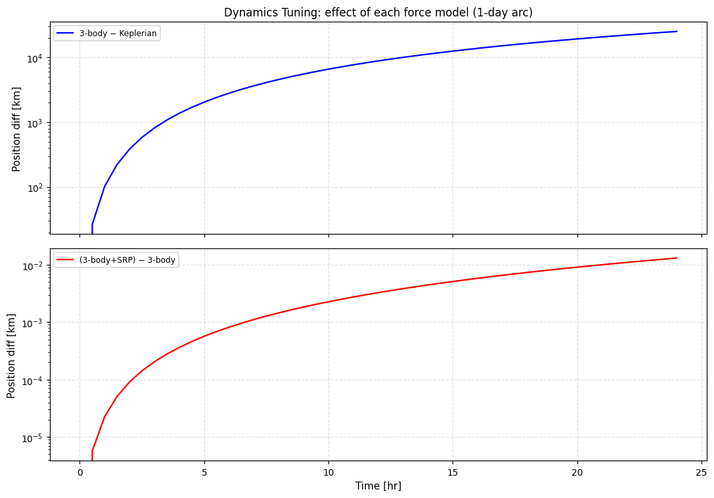
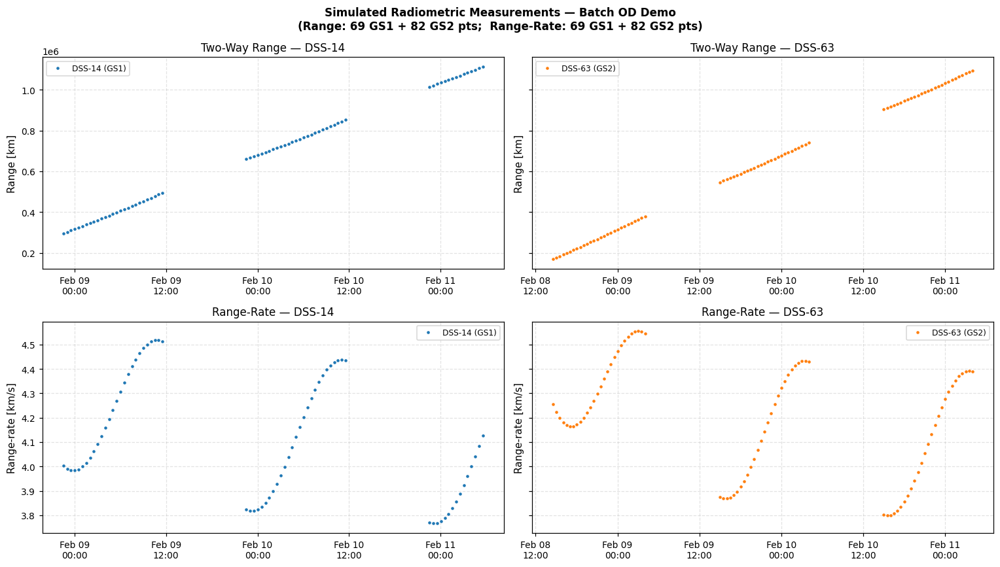
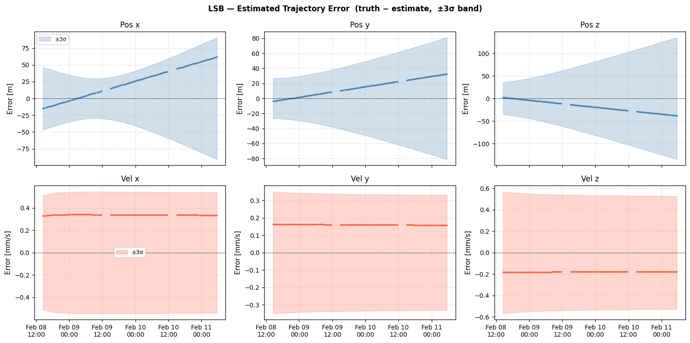
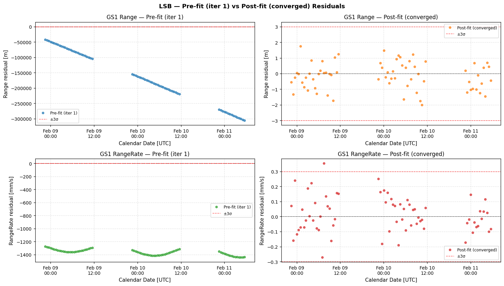
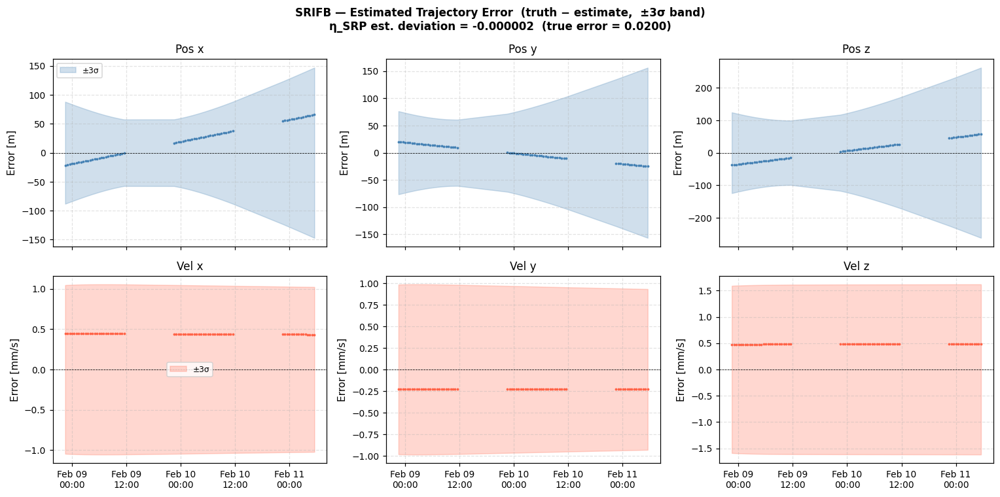
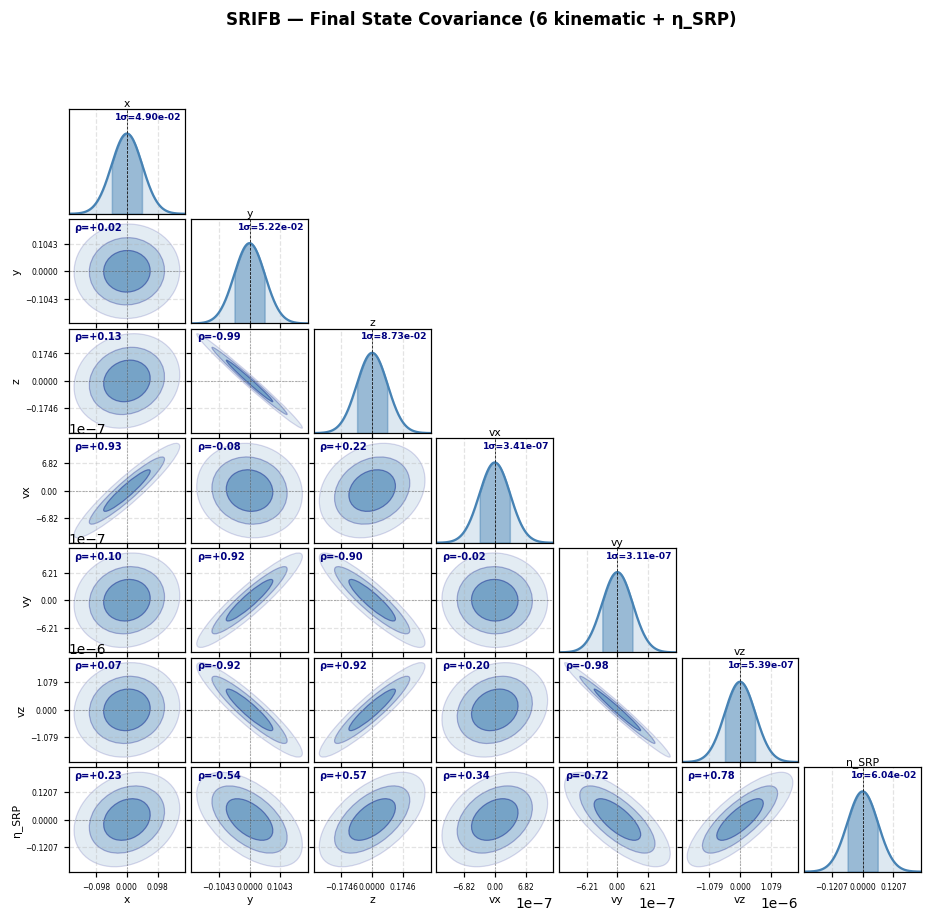
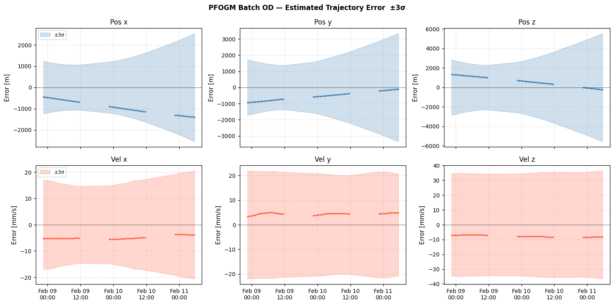
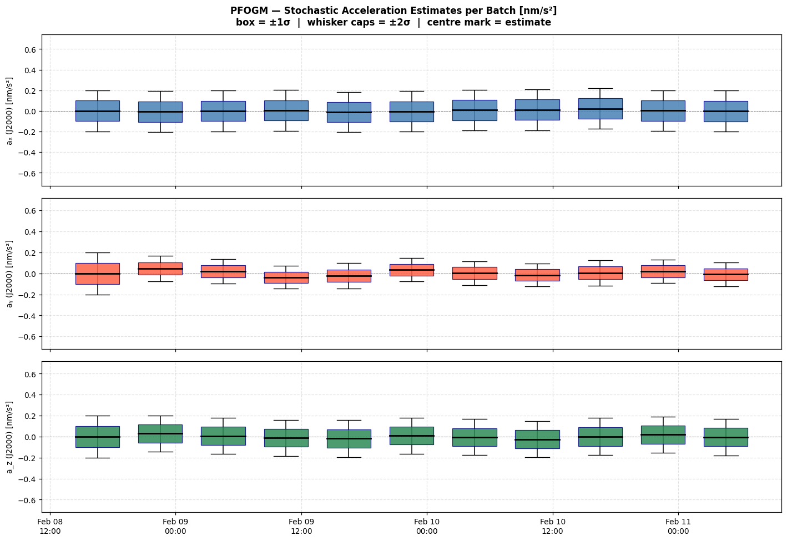
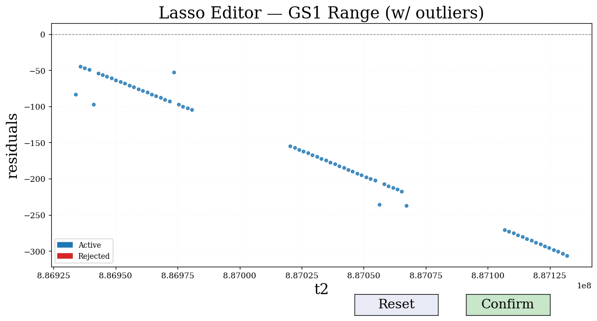
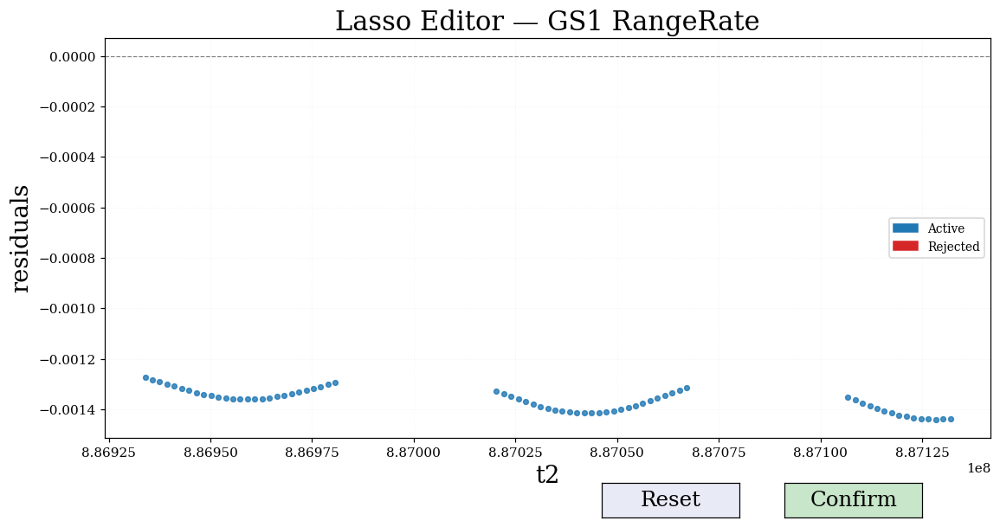

# Batch Orbit Determination — Complete Demo#
Scarabaeus OD Framework | Last revised 2026
What this notebook covers#
This notebook is a self-contained, verbose walkthrough of batch orbit determination (OD) using the Scarabaeus framework. Every concept is explained in detail so that a reader unfamiliar with the specific Scarabaeus API can follow along.
Topics#
# |
Topic |
|---|---|
1 |
Spacecraft model definition |
2 |
Dynamics model catalogue — all available force models |
3 |
Dynamics tuning — fidelity vs. cost trade-offs |
4 |
True trajectory simulation |
5 |
Measurement generation — Range, Range-Rate |
6 |
Reference (perturbed) trajectory |
7 |
Batch filter — Least-Squares Batch (LSB) |
8 |
Batch filter — SRIF Batch (SRIFB) + static parameter estimation (η_SRP) |
9 |
Stochastic acceleration — Piecewise Gauss-Markov (PFOGM) batch OD |
10 |
Measurement editing — lasso filter |
11 |
Saving the OD solution |
How to run#
Run cells top-to-bottom from the project root directory (scarabaeus/). The first code cell will navigate there automatically if you opened the notebook from tutorials/.
0. Imports and Setup#
We begin by importing Scarabaeus and the standard scientific stack, then establishing the working directory, loading SPICE kernels, and defining the unit/frame system.
Units#
Scarabaeus uses a dimensional unit system. scb.Units.get_units() returns unit objects that can be composed with *, /, and ** operators. Every numerical quantity is wrapped in ArrayWUnits so that unit consistency is enforced throughout the computation.
Frames#
Reference frames are managed via SPICE. J2000 is the standard inertial frame used for heliocentric OD.
SPICE kernels#
The meta-kernel locked_generic.tm loads planet ephemerides (DE440), leap-seconds, planetary constants, and Earth ground-station SPKs (DSS-14, DSS-63, etc.).
[1]:
import os, sys
import numpy as np
import numpy.random as rnd
import matplotlib.pyplot as plt
from pathlib import Path
import scarabaeus as scb
import supplementary as supp
# ── tutorial data and output paths ───────────────────────────────
data = supp.load_data()
tut_result_path = Path.cwd() / 'tutorial_results/meas_gen/radiometric'
tut_kernels_path = Path(data.mk.path).parent.parent / 'scenario'
tut_result_path.mkdir(parents=True, exist_ok=True)
tut_kernels_path.mkdir(parents=True, exist_ok=True)
# ── units ────────────────────────────────────────────────────────
kg, km, sec = scb.Units.get_units(['kg', 'km', 'sec'])
# ── frames ───────────────────────────────────────────────────────
J2000, ITRF93, ECLIPJ2000, IAUEARTH = scb.Frame.generate_common_frames()
frame = J2000
# ── SPICE kernels ─────────────────────────────────────────────────
scb.SpiceManager.clear_kernels()
scb.SpiceManager.load_kernel_from_mkfile(data.mk.path)
print("Kernels loaded.")
SCB supplementary data up to date.
Kernels loaded.
Enhanced Plotting Helpers#
The cells below add calendar-date x-axis versions of the plots above, plus new visualization types: pre/post residual comparisons, state errors with ±3σ covariance bounds, covariance evolution, and corner covariance plots.
Helper functions:
et2dt(et_arr)— converts SPICE ET (seconds) to Pythondatetimeobjectsfmt_cal(ax)— appliesAutoDateLocator + DateFormatterfor a clean calendar x-axisadd_hrs_axis(ax)— adds a secondary top x-axis in hours from t0resid_from_filter(flt, ds)— extracts(t_pre, r_pre, t_post, r_post)arrayscorner_cov(P, labels)— lower-triangle corner plot with RdBu_r correlation colouring
[2]:
from datetime import datetime, timedelta
import matplotlib.dates as mdates
import matplotlib.ticker as mticker
from matplotlib import cm
from matplotlib.colors import Normalize
plt.rcParams.update({
'font.size': 10, 'axes.titlesize': 11, 'axes.labelsize': 10,
'xtick.labelsize': 9, 'ytick.labelsize': 9, 'legend.fontsize': 8,
'figure.dpi': 110, 'axes.grid': True, 'grid.alpha': 0.35, 'grid.linestyle': '--',
})
CMAP = cm.tab10
COLORS = [CMAP(i / 10) for i in range(10)]
# reference epoch for the hours-from-t0 secondary axis
t0_et = None # set after epoch_array is defined (run spacecraft/epoch setup cell first)
def et2dt(et_arr):
"""Convert SPICE ET seconds (TDB from J2000) to list of datetime objects."""
_J2000 = datetime(2000, 1, 1, 12, 0, 0)
return [_J2000 + timedelta(seconds=float(t)) for t in np.atleast_1d(et_arr)]
def fmt_cal(ax):
"""Apply calendar-date tick formatting to a matplotlib axis."""
ax.xaxis.set_major_locator(mdates.AutoDateLocator(minticks=4, maxticks=9))
ax.xaxis.set_major_formatter(mdates.DateFormatter("%b %d\n%H:%M"))
def add_hrs_axis(ax, t0=None):
"""Add a secondary top x-axis showing hours from t0."""
t0 = t0 if t0 is not None else t0_et
from matplotlib.dates import date2num
t0_num = date2num(et2dt([t0])[0])
ax2 = ax.secondary_xaxis(
"top",
functions=(lambda x: (x - t0_num) * 24, lambda x: x / 24 + t0_num),
)
ax2.set_xlabel("Hours from t0 [TDB]", fontsize=8)
ax2.xaxis.set_major_formatter(mticker.FormatStrFormatter("%.0f h"))
return ax2
def resid_from_filter(flt_obj, ds_name, iteration=-1):
"""Return (t_pre, r_pre, t_post, r_post) numpy arrays for a dataset name.
iteration : int
Which iteration's pre-fit residuals to return.
0 → first iteration (raw O-C against initial reference).
-1 → last iteration (default, same as the converged solution).
Post-fit residuals always come from the final (converged) iteration.
"""
# Pre-fits: choose iteration
if (iteration == 0
and hasattr(flt_obj, '_solution_history')
and flt_obj._solution_history):
sol0 = flt_obj._solution_history[0]
pre = (sol0.prefits or {}).get(ds_name, [])
else:
pre = flt_obj.prefit_residuals.get(ds_name, [])
post = flt_obj.postfit_residuals.get(ds_name, [])
# Times from the measurement data (unchanged across iterations)
t_ds = np.array([])
for ds in flt_obj.measurement_data.datasets:
if ds.set_name == ds_name:
t_ds = np.array(ds.data["t2"])
break
t_pre = t_ds[:len(pre)] if len(pre) else np.array([])
r_pre = np.array([d[0] for d in pre]) if pre else np.array([])
t_post = t_ds[:len(post)] if len(post) else np.array([])
r_post = np.array([d[0] for d in post]) if post else np.array([])
return t_pre, r_pre, t_post, r_post
def corner_cov(P, labels, title="Covariance Corner Plot", figsize=(10, 9)):
"""
Corner plot from a covariance matrix.
Diagonal: 1D Gaussian marginal (dark-shaded ±1σ region).
Lower triangle: 2D confidence ellipses at 1σ / 2σ / 3σ (chi2, 2 dof).
Upper triangle: hidden.
"""
from matplotlib.patches import Ellipse
# sqrt(chi2.ppf(conf, df=2)) for 1σ / 2σ / 3σ 2D confidence
SCALES = [1.5150, 2.4477, 3.4395]
ALPHAS = [0.55, 0.30, 0.15 ]
COL, EDG = 'steelblue', 'navy'
n = P.shape[0]
sig = np.sqrt(np.diag(P))
fig, axes = plt.subplots(n, n, figsize=figsize,
gridspec_kw={'hspace': 0.05, 'wspace': 0.05})
if n == 1:
axes = np.array([[axes]])
fig.suptitle(title, fontsize=11, fontweight='bold')
for i in range(n):
for j in range(n):
ax = axes[i, j]
ax.tick_params(labelsize=5)
if i == j:
# ── diagonal: 1D Gaussian marginal ──────────────────────
s = sig[i]
lim = 3.8 * s
x = np.linspace(-lim, lim, 300)
y = np.exp(-0.5 * (x / s) ** 2)
ax.plot(x, y, color=COL, lw=1.5)
ax.fill_between(x, y, alpha=0.18, color=COL)
ax.fill_between(x[np.abs(x) <= s], y[np.abs(x) <= s],
alpha=0.45, color=COL) # shade ±1σ
ax.axvline(0, color='k', lw=0.5, ls='--')
ax.set_xlim(-lim, lim)
ax.set_ylim(0, 1.30)
ax.set_yticks([])
ax.set_xticks([-2*s, 0, 2*s])
ax.text(0.97, 0.97, f'1σ={s:.2e}',
transform=ax.transAxes, fontsize=6,
ha='right', va='top', color=EDG, fontweight='bold')
ax.set_title(labels[i], fontsize=7, pad=2)
if i < n - 1:
ax.set_xticklabels([])
elif i > j:
# ── lower triangle: 2D confidence ellipses ───────────────
P2 = np.array([[P[j,j], P[j,i]], [P[i,j], P[i,i]]])
ev, evec = np.linalg.eigh(P2)
ev = np.maximum(ev, 0.0)
angle = np.degrees(np.arctan2(evec[1, 1], evec[0, 1]))
ax.axhline(0, color='k', lw=0.4, ls='--', alpha=0.4)
ax.axvline(0, color='k', lw=0.4, ls='--', alpha=0.4)
for scale, alpha in zip(SCALES, ALPHAS):
ax.add_patch(Ellipse(
xy=(0, 0),
width =2 * scale * np.sqrt(ev[1]),
height=2 * scale * np.sqrt(ev[0]),
angle =angle,
facecolor=COL, edgecolor=EDG,
linewidth=0.8, alpha=alpha,
))
rho = P[i, j] / (sig[i] * sig[j])
ax.text(0.05, 0.97, f'ρ={rho:+.2f}',
transform=ax.transAxes, fontsize=6.5,
color=EDG, va='top', fontweight='bold')
ax.set_xlim(-3.8*sig[j], 3.8*sig[j])
ax.set_ylim(-3.8*sig[i], 3.8*sig[i])
ax.set_xticks([-2*sig[j], 0, 2*sig[j]])
ax.set_yticks([-2*sig[i], 0, 2*sig[i]])
if i < n - 1:
ax.set_xticklabels([])
if j > 0:
ax.set_yticklabels([])
if j == 0:
ax.set_ylabel(labels[i], fontsize=7, labelpad=2)
if i == n - 1:
ax.set_xlabel(labels[j], fontsize=7, labelpad=2)
else:
ax.set_visible(False)
plt.tight_layout()
return fig
print("Plotting helpers ready. (t0 will be set after epoch_array is defined)")
Plotting helpers ready. (t0 will be set after epoch_array is defined)
1. Spacecraft Model#
A Spacecraft object encodes the physical properties of the vehicle:
Property |
Description |
|---|---|
|
Human-readable label (also used as SPICE body name) |
|
NAIF integer ID (negative integers are spacecraft) |
|
Total wet mass [kg] |
|
Cross-sectional area for SRP [km²] |
|
Reflectivity coefficient C_r (dimensionless) |
|
Optional: N-plate SRP model for attitude-dependent SRP |
For the “truth” simulation we define Orbiter and for each filter iteration we create a separate spacecraft object with a slightly different SPICE ID, so that SPICE kernel writes for the reference trajectory do not clash.
[3]:
# ── physical properties ──────────────────────────────────────────
dry_mass = scb.ArrayWUnits(1500.0, kg)
fuel_mass = scb.ArrayWUnits(500.0, kg)
area = scb.ArrayWUnits(1e-6, km**2) # ~10 m²
cr = scb.ArrayWUnits(1.5, None) # reflectivity (dimensionless)
# ── truth spacecraft ─────────────────────────────────────────────
Orbiter = scb.Spacecraft(
name = 'Orbiter_True',
spice_id = -1000,
tot_mass = dry_mass + fuel_mass,
area = area,
ref_coeff= cr,
)
# ── gravitational origin ─────────────────────────────────────────
# Heliocentric orbit: Sun is the primary attracting body.
origin = scb.CelestialBody.from_constants('SUN')
# ── time window ──────────────────────────────────────────────────
# 3-day tracking arc with 30-min timesteps (good balance of coverage vs. cost)
time_0 = scb.SpiceManager.jd2et(2461809.72995654 + 1/3) # start JD → ET
time_f = scb.SpiceManager.jd2et(2461809.72995654 + 3) # end JD → ET
dt_step = 30 * 60 # 30 minutes [s]
epoch_array = scb.EpochArray(np.arange(time_0, time_f, dt_step), sys='TDB')
epoch_0 = epoch_array[0]
print(f"Arc start : {scb.SpiceManager.et2utc(float(epoch_array[0].times.values))} UTC")
print(f"Arc end : {scb.SpiceManager.et2utc(float(epoch_array[-1].times.values))} UTC")
print(f"N epochs : {len(epoch_array)}")
# ── initial state (heliocentric J2000) ────────────────────────────
# Near-Earth heliocentric orbit (position ~1 AU from Sun)
pos_0 = scb.ArrayWFrame(
np.array([-1.1123095885148e+08, 8.9094345479316e+07, 3.8656500948069e+07]), km, frame)
vel_0 = scb.ArrayWFrame(
np.array([-20.6936999825159, -16.7800270812616, -6.6437327193572]), km/sec, frame)
print(f"\nInitial position magnitude : {np.linalg.norm(pos_0.quantity.values):.3e} km")
print(f"Initial velocity magnitude : {np.linalg.norm(vel_0.quantity.values):.6f} km/s")
t0_et = float(epoch_array[0].times.values) # used by plotting helpers
Arc start : 2028-02-08T13:31:08.245053 UTC
Arc end : 2028-02-11T05:31:08.244991 UTC
N epochs : 129
Initial position magnitude : 1.477e+08 km
Initial velocity magnitude : 27.457926 km/s
2. Dynamics Models Catalogue#
Scarabaeus provides a modular force model system through ForceModelTranslation. You turn on each perturbation with keyword flags. This section documents every available option.
2.1 Point Mass Gravity (Keplerian)#
The simplest model: the spacecraft is attracted only by the central body (Sun in our case). No keyword needed — this is always included.
fm = scb.ForceModelTranslation(primary_body=sc)
When to use: quick propagation checks, very short arcs, or when perturbations are negligible.
2.2 Third-Body Gravity#
Gravitational pull from other solar-system bodies (planets, Moon, etc.). Pass a list of SPICE body names.
fm = scb.ForceModelTranslation(primary_body=sc,
third_bodies=['EARTH', 'JUPITER BARYCENTER', ...])
Effect: at 1 AU from the Sun, Earth and Jupiter perturbations are on the order of 10⁻⁶ km/s² over a 3-day arc — significant for precision OD.
2.3 Cannonball Solar Radiation Pressure (SRP)#
Isotropic SRP model. Uses area and ref_coeff from the Spacecraft object. The SRP scale factor η_SRP can be estimated as a static parameter in the OD state.
fm = scb.ForceModelTranslation(primary_body=sc, cannonball_SRP=True)
When to use: missions without attitude data, or as a first-order SRP estimate.
2.4 N-Plate SRP#
Attitude-dependent SRP computed face-by-face from a plate configuration file. Requires a CK (attitude) kernel and an n-plate config JSON.
fm = scb.ForceModelTranslation(primary_body=sc, nplate_SRP=True)
When to use: high-fidelity SRP for spacecraft with known CK.
2.5 Spherical Harmonics Gravity#
Non-spherical gravity field from a Stokes coefficients file. Used for close-proximity or planetary orbits.
fm = scb.ForceModelTranslation(
primary_body = sc,
sph_harm = True,
sph_harm_order = 8, # degree & order
sph_harm_cs_file = 'data/dynamic_setup/sph_coefficients/Earth_100.json',
sph_harm_body = scb.EARTH,
sph_harm_norm_flag = True, # normalized coefficients
)
When to use: Earth orbits, asteroid proximity operations.
2.7 First-Order Gauss-Markov (FOGM) Stochastic Acceleration#
An exponentially correlated random acceleration — ideal for modelling uncharacterised non-gravitational forces.
fm = scb.ForceModelTranslation(
primary_body = sc,
first_order_gauss_markov = True,
fogm_beta = np.array([1/3600, 1/3600, 1/3600]), # [1/s] correlation = 1 hr
)
# State must include the FOGM acceleration as a *dynamic* parameter:
# .param('a_fogm', sc, a0_vec3, dynamics='dynamic')
2.8 Piecewise First-Order Gauss-Markov (PFOGM)#
Like FOGM but the stochastic acceleration is defined within each batch interval. Useful for batch OD where you want piece-wise unmodelled force estimation.
batch_length = 6 * 3600 # 6-hour batches
n_batches = int(np.ceil((time_f - time_0) / batch_length))
fm = scb.ForceModelTranslation(
primary_body = sc,
piecewise_first_order_gauss_markov = True,
pfogm_batch_length = batch_length,
pfogm_n_batches = n_batches,
pfogm_beta = np.array([1/3600, 1/3600, 1/3600]),
t0 = epoch_array[0],
)
# State must include: .param('a_pfogm', sc, a0_vec_3n, dynamics='dynamic')
# where a0_vec_3n has 3 * n_batches elements.
3. Dynamics Tuning#
Dynamics tuning means choosing which force models to include and verifying their fidelity against an independent truth (SPICE ephemerides or higher-fidelity propagation).
Workflow#
Propagate the trajectory using both model A (low fidelity) and model B (high fidelity).
Compute the trajectory differences over the estimation arc.
Compare these differences against the expected measurement noise or OD accuracy level.
If the discrepancies are comparable to or larger than the observable noise floor, model A is likely insufficient.
Process noise tuning#
When using sequential filters (discussed in the next notebook), the continuous-time process noise covariance Q (or equivalently its power spectral density, PSD) must be carefully tuned:
Too large Q → the filter becomes noisy, over-fits the measurements, and produces inflated covariances.
Too small Q → the filter becomes overconfident, potentially inconsistent, and may diverge as unmodelled accelerations accumulate over time.
[4]:
# ── compare Keplerian vs 3-body vs full model ────────────────────
third_bodies_all = ['MERCURY', 'VENUS', 'EARTH', 'MARS', 'JUPITER BARYCENTER']
def propagate_model(sc_body, pos, vel, epoch_arr, **fm_kwargs):
state_def = scb.StateDefinition.from_components([
('position', 3, 'estimated', 'dynamic', sc_body, pos),
('velocity', 3, 'estimated', 'dynamic', sc_body, vel),
])
sv = scb.StateArray(epoch=epoch_arr[0], origin=origin, state=state_def)
fm = scb.ForceModelTranslation(primary_body=sc_body, **fm_kwargs)
prop = scb.Propagator(primary_body=sc_body, state_vector=sv,
tspan=epoch_arr, force_models=fm)
prop.propagate()
pos_arr = prop.propagated_state_array.values_array[('position', sc_body.spice_id)][0]
return pos_arr # shape (N, 3)
# Use a shorter window for tuning comparison (faster)
tune_end = scb.SpiceManager.jd2et(2461809.72995654 + 1/3 + 1) # 1-day arc
epoch_tune = scb.EpochArray(np.arange(time_0, tune_end, dt_step), sys='TDB')
# Keplerian helper SC (unique SPICE ID to avoid conflicts)
sc_kep = scb.Spacecraft('tune_kep', -1090, dry_mass+fuel_mass, area, cr)
sc_3b = scb.Spacecraft('tune_3b', -1091, dry_mass+fuel_mass, area, cr)
sc_full = scb.Spacecraft('tune_full', -1092, dry_mass+fuel_mass, area, cr)
print("Propagating Keplerian ...")
pos_kep = propagate_model(sc_kep, pos_0, vel_0, epoch_tune)
print("Propagating 3-body ...")
pos_3b = propagate_model(sc_3b, pos_0, vel_0, epoch_tune,
third_bodies=['EARTH', 'VENUS'])
print("Propagating 3-body + cannonball SRP ...")
pos_full = propagate_model(sc_full, pos_0, vel_0, epoch_tune,
third_bodies=['EARTH', 'VENUS'], cannonball_SRP=True)
t_hr = (epoch_tune.times.values - epoch_tune.times.values[0]) / 3600
err_3b = np.linalg.norm(pos_3b - pos_kep, axis=1) # 3-body vs Keplerian
err_full = np.linalg.norm(pos_full - pos_3b, axis=1) # SRP effect on top of 3-body
fig, axes = plt.subplots(2, 1, figsize=(10, 7), sharex=True)
axes[0].semilogy(t_hr, err_3b, 'b-', lw=1.5, label='3-body − Keplerian')
axes[0].set_ylabel('Position diff [km]')
axes[0].set_title('Dynamics Tuning: effect of each force model (1-day arc)')
axes[0].legend(); axes[0].grid(True, alpha=0.4)
axes[1].semilogy(t_hr, err_full, 'r-', lw=1.5, label='(3-body+SRP) − 3-body')
axes[1].set_ylabel('Position diff [km]')
axes[1].set_xlabel('Time [hr]')
axes[1].legend(); axes[1].grid(True, alpha=0.4)
plt.tight_layout()
plt.show()
print(f"\nMax position difference (3-body vs Keplerian) : {err_3b.max():.4f} km")
print(f"Max position difference (SRP effect on 3-body) : {err_full.max():.6f} km")
Propagating Keplerian ...
================================================================================
Starting propagation...
================================================================================
Integrating: 100%|███████████████████████████████████████████████| 86400.00/86400.00 s [00:00<00:00]
=================== DOP853 integration complete. ==================
Propagation complete.
Propagating 3-body ...
================================================================================
Starting propagation...
================================================================================
Integrating: 100%|███████████████████████████████████████████████| 86400.00/86400.00 s [00:00<00:00]
=================== DOP853 integration complete. ==================
Propagation complete.
Propagating 3-body + cannonball SRP ...
================================================================================
Starting propagation...
================================================================================
Integrating: 100%|███████████████████████████████████████████████| 86400.00/86400.00 s [00:00<00:00]
=================== DOP853 integration complete. ==================
Propagation complete.

Max position difference (3-body vs Keplerian) : 25160.5394 km
Max position difference (SRP effect on 3-body) : 0.013121 km
4. True Trajectory Generation#
We propagate the true trajectory using the highest-fidelity force model available. This trajectory is saved as a SPICE SPK kernel so it can be queried later for ground truth comparisons and measurement generation.
The Trajectory object wraps the propagated state array and provides:
write_to_spk(path)— write binary SPK kernelstart_epoch,end_epoch— arc boundaries
In real operations the “truth” is unknown; here we simulate it to validate the OD solution.
[5]:
# ── force model for truth propagation ────────────────────────────
# Use 3-body gravity + cannonball SRP as the "truth" dynamics.
# The OD filter will use the same model (ideal case) — in Section 8 we perturb η_SRP.
fm_truth = scb.ForceModelTranslation(
primary_body = Orbiter,
third_bodies = ['MERCURY', 'VENUS', 'EARTH'],
cannonball_SRP= True,
)
state_0_truth = scb.StateDefinition.from_components([
('position', 3, 'estimated', 'dynamic', Orbiter, pos_0),
('velocity', 3, 'estimated', 'dynamic', Orbiter, vel_0),
])
sv_truth = scb.StateArray(epoch=epoch_0, origin=origin, state=state_0_truth)
prop_truth = scb.Propagator(
primary_body = Orbiter,
state_vector = sv_truth,
tspan = epoch_array,
force_models = fm_truth,
)
print("Propagating true trajectory ...")
prop_truth.propagate()
state_prop_truth = prop_truth.propagated_state_array
# ── save as SPICE SPK ─────────────────────────────────────────────
true_spk = str(tut_kernels_path / 'batch_orbiter_true.bsp')
if os.path.isfile(true_spk):
os.remove(true_spk)
orbiter_traj_true = scb.Trajectory(state_array=state_prop_truth)
orbiter_traj_true.write_to_spk(true_spk)
print(f"True trajectory saved to: {true_spk}")
Propagating true trajectory ...
================================================================================
Starting propagation...
================================================================================
Integrating: 100%|█████████████████████████████████████████████| 230400.00/230400.00 s [00:00<00:00]
=================== DOP853 integration complete. ==================
Propagation complete.
True trajectory saved to: /Users/zael5647/scarabaeus/docs/online_documentation/sphinx_files/_collections/tutorials/supplementary/supp_data/kernels/scenario/batch_orbiter_true.bsp
5. Measurement Generation#
Scarabaeus models all standard radiometric and optical navigation measurement types. This section shows how to set up each model, simulate noisy observations on the true trajectory, save them to JSON files, and reload them for OD use. For real mission measurements, refer to the OSIRIS–REx notebooks.
Measurement generation workflow#
Spacecraft trajectory (true SPK)
│
▼
write_observed_measurements(target, epoch_array, noisy=True, file_name=stem)
│ adds Gaussian noise with the specified sigma
▼
JSON file in data/measurements/radiometric/
│
▼
observed_measurements(file_name, meas_name, units) → (epoch_array, times_sec, values)
Available measurement types#
Class |
Observable |
Typical sigma |
|---|---|---|
|
Two-way range [km] |
1 m (1e-3 km) |
|
Two-way range-rate [km/s] |
0.1 mm/s (1e-4 km/s) |
|
RA/DEC [rad] |
~10 μrad |
|
Pixel centroid [pixel] |
0.5–2 pixel |
|
Sequential ranging (RU) |
see DSN calibration |
|
Doppler (DSN processing) |
see DSN calibration |
[6]:
# ─────────────────────────────────────────────────────────────────
# 5.1 Ground-station sensors
# ─────────────────────────────────────────────────────────────────
# GroundStation wraps a SPICE-body ground station.
# DSS-14 (Goldstone, CA) and DSS-63 (Madrid) are built into the generic kernel.
GS1 = scb.GroundStation('DSS-14')
GS2 = scb.GroundStation('DSS-63')
# ─────────────────────────────────────────────────────────────────
# 5.2 Measurement noise levels
# ─────────────────────────────────────────────────────────────────
range_sigma = scb.ArrayWUnits(1e-3, km) # 1 m two-way range
rangerate_sigma = scb.ArrayWUnits(1e-7, km/sec) # 0.1 mm/s range-rate
# ─────────────────────────────────────────────────────────────────
# 5.3 Instantiate all measurement models
# ─────────────────────────────────────────────────────────────────
# ── Radiometric: Range ───────────────────────────────────────────
Range_GS1 = scb.RangeIdeal('GS1 Range', GS1, sigma=range_sigma)
Range_GS2 = scb.RangeIdeal('GS2 Range', GS2, sigma=range_sigma)
# ── Radiometric: Range-Rate ──────────────────────────────────────
RangeRate_GS1 = scb.RangeRateIdeal('GS1 RangeRate', GS1, sigma=rangerate_sigma)
RangeRate_GS2 = scb.RangeRateIdeal('GS2 RangeRate', GS2, sigma=rangerate_sigma)
print("All measurement models instantiated.")
print(f" Range_GS1 : {Range_GS1.name}")
print(f" RangeRate_GS1 : {RangeRate_GS1.name}")
All measurement models instantiated.
Range_GS1 : GS1 Range
RangeRate_GS1 : GS1 RangeRate
[7]:
# ─────────────────────────────────────────────────────────────────
# 5.4 Generate and save observed (noisy) measurements
# ─────────────────────────────────────────────────────────────────
# check_visibility=True filters out epochs where the spacecraft
# is below the ground station elevation mask (default 10°), producing
# realistic contact windows instead of continuous coverage.
for model, stem in [
(Range_GS1, 'batch_range_GS1'),
(RangeRate_GS1, 'batch_rangerate_GS1'),
(Range_GS2, 'batch_range_GS2'),
(RangeRate_GS2, 'batch_rangerate_GS2'),
]:
model.write_observed_measurements(
target = Orbiter,
epoch_array = epoch_array,
noisy = True,
file_name = stem,
check_visibility = True,
elevation_mask = 10.0,
folder_path_override = str(tut_result_path),
)
print(f"Written: {tut_result_path / stem}.json")
# ─────────────────────────────────────────────────────────────────
# 5.5 Load back the primary measurements (GS1 Range + RangeRate)
# ─────────────────────────────────────────────────────────────────
obs_range_GS1 = Range_GS1.observed_measurements(
file_name = str(tut_result_path / 'batch_range_GS1.json'),
meas_name = 'meas_ideal',
units = km,
)
obs_rr_GS1 = RangeRate_GS1.observed_measurements(
file_name = str(tut_result_path / 'batch_rangerate_GS1.json'),
meas_name = 'meas_ideal',
units = km/sec,
)
obs_range_GS2 = Range_GS2.observed_measurements(
file_name = str(tut_result_path / 'batch_range_GS2.json'),
meas_name = 'meas_ideal',
units = km,
)
obs_rr_GS2 = RangeRate_GS2.observed_measurements(
file_name = str(tut_result_path / 'batch_rangerate_GS2.json'),
meas_name = 'meas_ideal',
units = km/sec,
)
# Tuple layout: (epoch_array, times_sec, values_array)
print(f"\nGS1 Range — {len(obs_range_GS1[2].quantity.values)} measurements")
print(f"GS1 RangeRate — {len(obs_rr_GS1[2].quantity.values)} measurements")
print(f"GS2 Range — {len(obs_range_GS2[2].quantity.values)} measurements")
print(f"GS2 RangeRate — {len(obs_rr_GS2[2].quantity.values)} measurements")
Written: /Users/zael5647/scarabaeus/docs/online_documentation/sphinx_files/_collections/tutorials/tutorial_results/meas_gen/radiometric/batch_range_GS1.json
Written: /Users/zael5647/scarabaeus/docs/online_documentation/sphinx_files/_collections/tutorials/tutorial_results/meas_gen/radiometric/batch_rangerate_GS1.json
Written: /Users/zael5647/scarabaeus/docs/online_documentation/sphinx_files/_collections/tutorials/tutorial_results/meas_gen/radiometric/batch_range_GS2.json
Written: /Users/zael5647/scarabaeus/docs/online_documentation/sphinx_files/_collections/tutorials/tutorial_results/meas_gen/radiometric/batch_rangerate_GS2.json
GS1 Range — 69 measurements
GS1 RangeRate — 69 measurements
GS2 Range — 82 measurements
GS2 RangeRate — 82 measurements
[8]:
# ─────────────────────────────────────────────────────────────────
# 5.6 Plot the simulated measurements
# ─────────────────────────────────────────────────────────────────
# Use the EpochArray (obs[0]) for absolute ET → calendar dates so all panels
# share the same time axis and contact windows appear as distinct clusters.
def meas_dts(obs_tuple):
"""Return datetime list from a measurement tuple's EpochArray."""
_J2000 = datetime(2000, 1, 1, 12, 0, 0)
et_vals = np.atleast_1d(obs_tuple[0].times.values).astype(float)
return [_J2000 + timedelta(seconds=float(t)) for t in et_vals]
dts_rng_GS1 = meas_dts(obs_range_GS1)
dts_rng_GS2 = meas_dts(obs_range_GS2)
dts_rr_GS1 = meas_dts(obs_rr_GS1)
dts_rr_GS2 = meas_dts(obs_rr_GS2)
fig, axes = plt.subplots(2, 2, figsize=(14, 8), sharey='row')
# Range GS1
axes[0,0].plot(dts_rng_GS1, obs_range_GS1[2].quantity.values, '.', ms=4, label='DSS-14 (GS1)')
axes[0,0].set_title('Two-Way Range — DSS-14'); axes[0,0].set_ylabel('Range [km]')
axes[0,0].legend(); fmt_cal(axes[0,0])
# Range GS2
axes[0,1].plot(dts_rng_GS2, obs_range_GS2[2].quantity.values, '.', ms=4, color='C1', label='DSS-63 (GS2)')
axes[0,1].set_title('Two-Way Range — DSS-63'); axes[0,1].set_ylabel('Range [km]')
axes[0,1].legend(); fmt_cal(axes[0,1])
# RangeRate GS1
axes[1,0].plot(dts_rr_GS1, obs_rr_GS1[2].quantity.values, '.', ms=4, label='DSS-14 (GS1)')
axes[1,0].set_title('Range-Rate — DSS-14'); axes[1,0].set_ylabel('Range-rate [km/s]')
axes[1,0].legend(); fmt_cal(axes[1,0])
# RangeRate GS2
axes[1,1].plot(dts_rr_GS2, obs_rr_GS2[2].quantity.values, '.', ms=4, color='C1', label='DSS-63 (GS2)')
axes[1,1].set_title('Range-Rate — DSS-63'); axes[1,1].set_ylabel('Range-rate [km/s]')
axes[1,1].legend(); fmt_cal(axes[1,1])
n_r1 = len(obs_range_GS1[2].quantity.values)
n_r2 = len(obs_range_GS2[2].quantity.values)
n_rr1 = len(obs_rr_GS1[2].quantity.values)
n_rr2 = len(obs_rr_GS2[2].quantity.values)
plt.suptitle(
f'Simulated Radiometric Measurements — Batch OD Demo\n'
f'(Range: {n_r1} GS1 + {n_r2} GS2 pts; Range-Rate: {n_rr1} GS1 + {n_rr2} GS2 pts)',
fontweight='bold', fontsize=11)
plt.tight_layout()
plt.show()

6. Reference Trajectory (Perturbed Initial Conditions)#
In real OD we do not know the true initial state; we start from a reference trajectory obtained from a previous solution or orbit determination arc, then apply the filter to correct it.
Here we simulate this by perturbing the true initial state:
Position: ±1 km error (typical for deep-space missions after several days without tracking)
Velocity: ±1 mm/s error
The filter’s job is to recover the deviation δx = x_true − x_ref at each measurement epoch.
Each filter iteration uses a new Spacecraft object (unique SPICE ID) so that its SPK kernel does not overwrite the truth or previous iteration’s kernel.
Covariance initialisation#
The initial covariance matrix P₀ encodes our uncertainty in the reference initial state. Rule of thumb: set the 1-σ values to roughly the size of the perturbation.
[9]:
# ── perturb initial state ─────────────────────────────────────────
delta_pos_km = np.array([1.0, 1.0, 1.0]) # 1 km position error in each axis
delta_vel_kms = np.array([1e-3, 1e-3, 1e-3]) # 1 mm/s velocity error in each axis
delta_pos = scb.ArrayWUnits(delta_pos_km, km)
delta_vel = scb.ArrayWUnits(delta_vel_kms, km/sec)
pos_ref = scb.ArrayWFrame(pos_0.quantity + delta_pos, frame)
vel_ref = scb.ArrayWFrame(vel_0.quantity + delta_vel, frame)
# ── reference spacecraft (iteration 1) ───────────────────────────
Orbiter_ref = scb.Spacecraft('Orbiter_Ref_it1', -1001,
dry_mass+fuel_mass, area, cr)
state_ref = scb.StateDefinition.from_components([
('position', 3, 'estimated', 'dynamic', Orbiter_ref, pos_ref),
('velocity', 3, 'estimated', 'dynamic', Orbiter_ref, vel_ref),
])
sv_ref = scb.StateArray(epoch=epoch_0, origin=origin, state=state_ref)
# ── propagate reference with same force model as truth ───────────
fm_ref = scb.ForceModelTranslation(
primary_body = Orbiter_ref,
third_bodies = ['MERCURY', 'VENUS', 'EARTH'],
cannonball_SRP = True,
)
prop_ref = scb.Propagator(
primary_body = Orbiter_ref,
state_vector = sv_ref,
tspan = epoch_array,
force_models = fm_ref,
)
# ── initial covariance P₀ ────────────────────────────────────────
# Set 1-σ to ~3× the perturbation (conservative initialisation)
pos_sig = scb.ArrayWUnits(3 * delta_pos_km[0], km)
vel_sig = scb.ArrayWUnits(3 * delta_vel_kms[0], km/sec)
state_cov = scb.CovarianceMatrix(
[pos_sig, pos_sig, pos_sig, vel_sig, vel_sig, vel_sig],
epoch_array[1],
from_list=True,
)
print("Reference trajectory and P₀ ready.")
print(f" Position 1-σ : {3*delta_pos_km[0]:.1f} km")
print(f" Velocity 1-σ : {3*delta_vel_kms[0]:.4f} km/s")
Reference trajectory and P₀ ready.
Position 1-σ : 3.0 km
Velocity 1-σ : 0.0030 km/s
7. Batch Filter: Least-Squares Batch (LSB)#
Theory#
The Least-Squares Batch (LSB) filter solves the normal equations
where H is the measurement sensitivity matrix, W = R⁻¹ is the measurement weight matrix, y are the pre-fit residuals, and P₀ is the initial state covariance (acts as a Tikhonov regulariser).
The solution is computed iteratively: after each batch solve, the reference trajectory is updated and the process repeats until
or until the maximum number of iterations is reached.
Measurement specification#
MeasurementSpec.many() or MeasurementSpec.from_dict() combine multiple measurement datasets into the single structure the filter expects.
FilterSettings#
FilterSettings gathers all configuration:
initial_covariance— P₀process_noise—ProcessNoiseSettings(batch filters: usually not used; sequential: SNC/DMC)output—OutputSettingsfor controlling what is saved
[10]:
# ── measurement list ────────────────────────────────────────────
meas_list_lsb = scb.MeasurementSpec.many(
scb.MeasurementSpec(model=Range_GS1, observed_meas=obs_range_GS1,
dataset_name='GS1 Range'),
scb.MeasurementSpec(model=RangeRate_GS1, observed_meas=obs_rr_GS1,
dataset_name='GS1 RangeRate'),
scb.MeasurementSpec(model=Range_GS2, observed_meas=obs_range_GS2,
dataset_name='GS2 Range'),
scb.MeasurementSpec(model=RangeRate_GS2, observed_meas=obs_rr_GS2,
dataset_name='GS2 RangeRate'),
)
# ── filter settings ──────────────────────────────────────────────
settings_lsb = scb.FilterSettings(
initial_covariance = state_cov,
output = scb.OutputSettings(
metadata = {'version': '1.0', 'filter': 'LSB', 'arc': '3-day'},
),
)
# ── instantiate LSB filter ───────────────────────────────────────
# LSB = Least-Squares Batch.
# traj_name: SPK filename for the reference trajectory of this iteration.
ref_spk_lsb = tut_kernels_path / 'batch_orbiter_ref_lsb.bsp'
if ref_spk_lsb.exists(): ref_spk_lsb.unlink()
lsb = scb.LSB(
propagator = prop_ref,
settings = settings_lsb,
measurements = meas_list_lsb,
traj_name = 'batch_orbiter_ref_lsb.bsp',
traj_dir = str(tut_kernels_path),
)
# ── run the batch solver ─────────────────────────────────────────
print("Running LSB batch filter ...")
solution_lsb, n_iters_lsb, converged_lsb = lsb.fit(
max_iterations = 10,
convergence_threshold = 1e-6,
verbose = True,
traj_name = 'batch_orbiter_ref.bsp',
traj_dir = str(tut_kernels_path),
)
print(f"\nConverged: {converged_lsb} after {n_iters_lsb} iteration(s)")
================================================================================
Starting propagation...
================================================================================
Integrating: 100%|█████████████████████████████████████████████| 230400.00/230400.00 s [00:00<00:00]
/Users/zael5647/scarabaeus/.venv/lib/python3.11/site-packages/scarabaeus/environment/Trajectory.py:1580: UserWarning: No STM timestamps provided: falling back to trajectory epochs. Ensure STMs are aligned 1:1 with `self.epoch`.
warnings.warn(
=================== DOP853 integration complete. ==================
Propagation complete.
================================================================================
Generating computed measurements for the dataset "GS1 Range"
================================================================================
================================================================================
Generating _partials for the dataset "GS1 Range"
================================================================================
Generating _partials computed measurements...
Partials: 100%|████████████████████████████████████████████████████████████| 69/69 obs [00:00<00:00]
================================================================================
Generating computed measurements for the dataset "GS1 RangeRate"
================================================================================
================================================================================
Generating _partials for the dataset "GS1 RangeRate"
================================================================================
Generating _partials computed measurements...
Partials: 100%|████████████████████████████████████████████████████████████| 69/69 obs [00:00<00:00]
================================================================================
Generating computed measurements for the dataset "GS2 Range"
================================================================================
================================================================================
Generating _partials for the dataset "GS2 Range"
================================================================================
Generating _partials computed measurements...
Partials: 100%|████████████████████████████████████████████████████████████| 82/82 obs [00:00<00:00]
================================================================================
Generating computed measurements for the dataset "GS2 RangeRate"
================================================================================
================================================================================
Generating _partials for the dataset "GS2 RangeRate"
================================================================================
Generating _partials computed measurements...
Partials: 100%|████████████████████████████████████████████████████████████| 82/82 obs [00:00<00:00]
================================================================================
Initializing Least Squares Batch (LSB) filter...
================================================================================
Running LSB batch filter ...
================================================================================
STARTING ITERATIVE ORBIT DETERMINATION
================================================================================
Max iterations: 10
Convergence threshold: 1.00e-06
================================================================================
============================================================
ITERATION 1
============================================================
LS-Batch: measurements iteration initialization...
[ 886905137.43 TDB | 0.0%] ‖normal_vector‖ = 1.4783e+11
[ 886906937.43 TDB | 0.8%] ‖normal_vector‖ = 3.1857e+11
[ 886908737.43 TDB | 1.6%] ‖normal_vector‖ = 5.2074e+11
[ 886910537.43 TDB | 2.4%] ‖normal_vector‖ = 7.6279e+11
[ 886912337.43 TDB | 3.2%] ‖normal_vector‖ = 1.0533e+12
[ 886914137.43 TDB | 4.0%] ‖normal_vector‖ = 1.4008e+12
[ 886915937.43 TDB | 4.8%] ‖normal_vector‖ = 1.8139e+12
[ 886917737.43 TDB | 5.6%] ‖normal_vector‖ = 2.3014e+12
[ 886919537.43 TDB | 6.3%] ‖normal_vector‖ = 2.8719e+12
[ 886921337.43 TDB | 7.1%] ‖normal_vector‖ = 3.5343e+12
[ 886923137.43 TDB | 7.9%] ‖normal_vector‖ = 4.2976e+12
[ 886924937.43 TDB | 8.7%] ‖normal_vector‖ = 5.1706e+12
[ 886926737.43 TDB | 9.5%] ‖normal_vector‖ = 6.1622e+12
[ 886928537.43 TDB | 10.3%] ‖normal_vector‖ = 7.2814e+12
[ 886930337.43 TDB | 11.1%] ‖normal_vector‖ = 8.5372e+12
[ 886932137.43 TDB | 11.9%] ‖normal_vector‖ = 9.9386e+12
[ 886933937.43 TDB | 12.7%] ‖normal_vector‖ = 1.3014e+13
[ 886935737.43 TDB | 13.5%] ‖normal_vector‖ = 1.6413e+13
[ 886937537.43 TDB | 14.3%] ‖normal_vector‖ = 2.0153e+13
[ 886939337.43 TDB | 15.1%] ‖normal_vector‖ = 2.4253e+13
[ 886941137.43 TDB | 15.9%] ‖normal_vector‖ = 2.8729e+13
[ 886942937.43 TDB | 16.7%] ‖normal_vector‖ = 3.3602e+13
[ 886944737.43 TDB | 17.5%] ‖normal_vector‖ = 3.8889e+13
[ 886946537.43 TDB | 18.3%] ‖normal_vector‖ = 4.4608e+13
[ 886948337.43 TDB | 19.0%] ‖normal_vector‖ = 5.0778e+13
[ 886950137.43 TDB | 19.8%] ‖normal_vector‖ = 5.7416e+13
[ 886951937.43 TDB | 20.6%] ‖normal_vector‖ = 6.4541e+13
[ 886953737.43 TDB | 21.4%] ‖normal_vector‖ = 7.2171e+13
[ 886955537.43 TDB | 22.2%] ‖normal_vector‖ = 7.6233e+13
[ 886957337.43 TDB | 23.0%] ‖normal_vector‖ = 8.0570e+13
[ 886959137.43 TDB | 23.8%] ‖normal_vector‖ = 8.5191e+13
[ 886960937.43 TDB | 24.6%] ‖normal_vector‖ = 9.0104e+13
[ 886962737.43 TDB | 25.4%] ‖normal_vector‖ = 9.5320e+13
[ 886964537.43 TDB | 26.2%] ‖normal_vector‖ = 1.0085e+14
[ 886966337.43 TDB | 27.0%] ‖normal_vector‖ = 1.0669e+14
[ 886968137.43 TDB | 27.8%] ‖normal_vector‖ = 1.1287e+14
[ 886969937.43 TDB | 28.6%] ‖normal_vector‖ = 1.1938e+14
[ 886971737.43 TDB | 29.4%] ‖normal_vector‖ = 1.2624e+14
[ 886973537.43 TDB | 30.2%] ‖normal_vector‖ = 1.3346e+14
[ 886975337.43 TDB | 31.0%] ‖normal_vector‖ = 1.4103e+14
[ 886977137.43 TDB | 31.7%] ‖normal_vector‖ = 1.4898e+14
[ 886978937.43 TDB | 32.5%] ‖normal_vector‖ = 1.5731e+14
[ 886980737.43 TDB | 33.3%] ‖normal_vector‖ = 1.6602e+14
[ 886993337.43 TDB | 38.9%] ‖normal_vector‖ = 1.7754e+14
[ 886995137.43 TDB | 39.7%] ‖normal_vector‖ = 1.8952e+14
[ 886996937.43 TDB | 40.5%] ‖normal_vector‖ = 2.0198e+14
[ 886998737.43 TDB | 41.3%] ‖normal_vector‖ = 2.1493e+14
[ 887000537.43 TDB | 42.1%] ‖normal_vector‖ = 2.2837e+14
[ 887002337.43 TDB | 42.9%] ‖normal_vector‖ = 2.4232e+14
[ 887004137.43 TDB | 43.7%] ‖normal_vector‖ = 2.5679e+14
[ 887005937.43 TDB | 44.4%] ‖normal_vector‖ = 2.7179e+14
[ 887007737.43 TDB | 45.2%] ‖normal_vector‖ = 2.8733e+14
[ 887009537.43 TDB | 46.0%] ‖normal_vector‖ = 3.0342e+14
[ 887011337.43 TDB | 46.8%] ‖normal_vector‖ = 3.2008e+14
[ 887013137.43 TDB | 47.6%] ‖normal_vector‖ = 3.3730e+14
[ 887014937.43 TDB | 48.4%] ‖normal_vector‖ = 3.5512e+14
[ 887016737.43 TDB | 49.2%] ‖normal_vector‖ = 3.7352e+14
[ 887018537.43 TDB | 50.0%] ‖normal_vector‖ = 3.9253e+14
[ 887020337.43 TDB | 50.8%] ‖normal_vector‖ = 4.3158e+14
[ 887022137.43 TDB | 51.6%] ‖normal_vector‖ = 4.7185e+14
[ 887023937.43 TDB | 52.4%] ‖normal_vector‖ = 5.1338e+14
[ 887025737.43 TDB | 53.2%] ‖normal_vector‖ = 5.5617e+14
[ 887027537.43 TDB | 54.0%] ‖normal_vector‖ = 6.0026e+14
[ 887029337.43 TDB | 54.8%] ‖normal_vector‖ = 6.4565e+14
[ 887031137.43 TDB | 55.6%] ‖normal_vector‖ = 6.9238e+14
[ 887032937.43 TDB | 56.3%] ‖normal_vector‖ = 7.4045e+14
[ 887034737.43 TDB | 57.1%] ‖normal_vector‖ = 7.8990e+14
[ 887036537.43 TDB | 57.9%] ‖normal_vector‖ = 8.4073e+14
[ 887038337.43 TDB | 58.7%] ‖normal_vector‖ = 8.9296e+14
[ 887040137.43 TDB | 59.5%] ‖normal_vector‖ = 9.4662e+14
[ 887041937.43 TDB | 60.3%] ‖normal_vector‖ = 9.7412e+14
[ 887043737.43 TDB | 61.1%] ‖normal_vector‖ = 1.0024e+15
[ 887045537.43 TDB | 61.9%] ‖normal_vector‖ = 1.0313e+15
[ 887047337.43 TDB | 62.7%] ‖normal_vector‖ = 1.0611e+15
[ 887049137.43 TDB | 63.5%] ‖normal_vector‖ = 1.0916e+15
[ 887050937.43 TDB | 64.3%] ‖normal_vector‖ = 1.1229e+15
[ 887052737.43 TDB | 65.1%] ‖normal_vector‖ = 1.1550e+15
[ 887054537.43 TDB | 65.9%] ‖normal_vector‖ = 1.1879e+15
[ 887056337.43 TDB | 66.7%] ‖normal_vector‖ = 1.2216e+15
[ 887058137.43 TDB | 67.5%] ‖normal_vector‖ = 1.2561e+15
[ 887059937.43 TDB | 68.3%] ‖normal_vector‖ = 1.2915e+15
[ 887061737.43 TDB | 69.0%] ‖normal_vector‖ = 1.3276e+15
[ 887063537.43 TDB | 69.8%] ‖normal_vector‖ = 1.3646e+15
[ 887065337.43 TDB | 70.6%] ‖normal_vector‖ = 1.4024e+15
[ 887067137.43 TDB | 71.4%] ‖normal_vector‖ = 1.4411e+15
[ 887079737.43 TDB | 77.0%] ‖normal_vector‖ = 1.4856e+15
[ 887081537.43 TDB | 77.8%] ‖normal_vector‖ = 1.5310e+15
[ 887083337.43 TDB | 78.6%] ‖normal_vector‖ = 1.5774e+15
[ 887085137.43 TDB | 79.4%] ‖normal_vector‖ = 1.6247e+15
[ 887086937.43 TDB | 80.2%] ‖normal_vector‖ = 1.6730e+15
[ 887088737.43 TDB | 81.0%] ‖normal_vector‖ = 1.7222e+15
[ 887090537.43 TDB | 81.7%] ‖normal_vector‖ = 1.7725e+15
[ 887092337.43 TDB | 82.5%] ‖normal_vector‖ = 1.8238e+15
[ 887094137.43 TDB | 83.3%] ‖normal_vector‖ = 1.8761e+15
[ 887095937.43 TDB | 84.1%] ‖normal_vector‖ = 1.9294e+15
[ 887097737.43 TDB | 84.9%] ‖normal_vector‖ = 1.9838e+15
[ 887099537.43 TDB | 85.7%] ‖normal_vector‖ = 2.0392e+15
[ 887101337.43 TDB | 86.5%] ‖normal_vector‖ = 2.0957e+15
[ 887103137.43 TDB | 87.3%] ‖normal_vector‖ = 2.1533e+15
[ 887104937.43 TDB | 88.1%] ‖normal_vector‖ = 2.2120e+15
[ 887106737.43 TDB | 88.9%] ‖normal_vector‖ = 2.3311e+15
[ 887108537.43 TDB | 89.7%] ‖normal_vector‖ = 2.4525e+15
[ 887110337.43 TDB | 90.5%] ‖normal_vector‖ = 2.5760e+15
[ 887112137.43 TDB | 91.3%] ‖normal_vector‖ = 2.7018e+15
[ 887113937.43 TDB | 92.1%] ‖normal_vector‖ = 2.8298e+15
[ 887115737.43 TDB | 92.9%] ‖normal_vector‖ = 2.9601e+15
[ 887117537.43 TDB | 93.7%] ‖normal_vector‖ = 3.0927e+15
[ 887119337.43 TDB | 94.4%] ‖normal_vector‖ = 3.2276e+15
[ 887121137.43 TDB | 95.2%] ‖normal_vector‖ = 3.3648e+15
[ 887122937.43 TDB | 96.0%] ‖normal_vector‖ = 3.5044e+15
[ 887124737.43 TDB | 96.8%] ‖normal_vector‖ = 3.6463e+15
[ 887126537.43 TDB | 97.6%] ‖normal_vector‖ = 3.7907e+15
[ 887128337.43 TDB | 98.4%] ‖normal_vector‖ = 3.8639e+15
[ 887130137.43 TDB | 99.2%] ‖normal_vector‖ = 3.9384e+15
[ 887131937.43 TDB | 100.0%] ‖normal_vector‖ = 4.0141e+15
LS-Batch: state and covariance mapping initialization...
[886905137.43 TDB | 0.0%] ‖prefit‖=5.8522e+00 ‖postfit‖=1.5526e-04 tr(P)=4.6105e-04 ⟨σ⟩=5.00e-04
[886906937.43 TDB | 0.8%] ‖prefit‖=8.1298e+00 ‖postfit‖=2.9183e-04 tr(P)=4.5710e-04 ⟨σ⟩=5.00e-04
[886908737.43 TDB | 1.6%] ‖prefit‖=1.0408e+01 ‖postfit‖=3.0680e-04 tr(P)=4.5345e-04 ⟨σ⟩=5.00e-04
[886910537.43 TDB | 2.4%] ‖prefit‖=1.2688e+01 ‖postfit‖=1.3294e-03 tr(P)=4.5012e-04 ⟨σ⟩=5.00e-04
[886912337.43 TDB | 3.2%] ‖prefit‖=1.4978e+01 ‖postfit‖=4.3548e-04 tr(P)=4.4715e-04 ⟨σ⟩=5.00e-04
[886914137.43 TDB | 4.0%] ‖prefit‖=1.7272e+01 ‖postfit‖=1.6135e-03 tr(P)=4.4455e-04 ⟨σ⟩=5.00e-04
[886915937.43 TDB | 4.8%] ‖prefit‖=1.9581e+01 ‖postfit‖=2.3103e-04 tr(P)=4.4235e-04 ⟨σ⟩=5.00e-04
[886917737.43 TDB | 5.6%] ‖prefit‖=2.1900e+01 ‖postfit‖=6.0693e-04 tr(P)=4.4055e-04 ⟨σ⟩=5.00e-04
[886919537.43 TDB | 6.3%] ‖prefit‖=2.4228e+01 ‖postfit‖=7.7684e-04 tr(P)=4.3916e-04 ⟨σ⟩=5.00e-04
[886921337.43 TDB | 7.1%] ‖prefit‖=2.6569e+01 ‖postfit‖=1.2995e-03 tr(P)=4.3820e-04 ⟨σ⟩=5.00e-04
[886923137.43 TDB | 7.9%] ‖prefit‖=2.8923e+01 ‖postfit‖=1.0638e-03 tr(P)=4.3768e-04 ⟨σ⟩=5.00e-04
[886924937.43 TDB | 8.7%] ‖prefit‖=3.1286e+01 ‖postfit‖=1.4630e-03 tr(P)=4.3761e-04 ⟨σ⟩=5.00e-04
[886926737.43 TDB | 9.5%] ‖prefit‖=3.3656e+01 ‖postfit‖=6.3769e-04 tr(P)=4.3798e-04 ⟨σ⟩=5.00e-04
[886928537.43 TDB | 10.3%] ‖prefit‖=3.6035e+01 ‖postfit‖=2.1753e-04 tr(P)=4.3880e-04 ⟨σ⟩=5.00e-04
[886930337.43 TDB | 11.1%] ‖prefit‖=3.8419e+01 ‖postfit‖=6.5248e-04 tr(P)=4.4009e-04 ⟨σ⟩=5.00e-04
[886932137.43 TDB | 11.9%] ‖prefit‖=4.0809e+01 ‖postfit‖=5.4336e-04 tr(P)=4.4184e-04 ⟨σ⟩=5.00e-04
[886933937.43 TDB | 12.7%] ‖prefit‖=6.0451e+01 ‖postfit‖=6.9860e-04 tr(P)=4.4406e-04 ⟨σ⟩=5.00e-04
[886935737.43 TDB | 13.5%] ‖prefit‖=6.3772e+01 ‖postfit‖=1.4871e-03 tr(P)=4.4676e-04 ⟨σ⟩=5.00e-04
[886937537.43 TDB | 14.3%] ‖prefit‖=6.7101e+01 ‖postfit‖=9.5450e-04 tr(P)=4.4992e-04 ⟨σ⟩=5.00e-04
[886939337.43 TDB | 15.1%] ‖prefit‖=7.0440e+01 ‖postfit‖=3.3305e-04 tr(P)=4.5356e-04 ⟨σ⟩=5.00e-04
[886941137.43 TDB | 15.9%] ‖prefit‖=7.3787e+01 ‖postfit‖=1.2200e-03 tr(P)=4.5768e-04 ⟨σ⟩=5.00e-04
[886942937.43 TDB | 16.7%] ‖prefit‖=7.7138e+01 ‖postfit‖=1.6536e-03 tr(P)=4.6228e-04 ⟨σ⟩=5.00e-04
[886944737.43 TDB | 17.5%] ‖prefit‖=8.0497e+01 ‖postfit‖=9.2915e-04 tr(P)=4.6736e-04 ⟨σ⟩=5.00e-04
[886946537.43 TDB | 18.3%] ‖prefit‖=8.3860e+01 ‖postfit‖=2.1972e-03 tr(P)=4.7293e-04 ⟨σ⟩=5.00e-04
[886948337.43 TDB | 19.0%] ‖prefit‖=8.7221e+01 ‖postfit‖=1.4092e-03 tr(P)=4.7898e-04 ⟨σ⟩=5.00e-04
[886950137.43 TDB | 19.8%] ‖prefit‖=9.0586e+01 ‖postfit‖=1.2434e-03 tr(P)=4.8552e-04 ⟨σ⟩=5.00e-04
[886951937.43 TDB | 20.6%] ‖prefit‖=9.3949e+01 ‖postfit‖=1.5645e-04 tr(P)=4.9254e-04 ⟨σ⟩=5.00e-04
[886953737.43 TDB | 21.4%] ‖prefit‖=9.7309e+01 ‖postfit‖=7.1521e-04 tr(P)=5.0005e-04 ⟨σ⟩=5.00e-04
[886955537.43 TDB | 22.2%] ‖prefit‖=7.0856e+01 ‖postfit‖=4.8411e-04 tr(P)=5.0805e-04 ⟨σ⟩=5.00e-04
[886957337.43 TDB | 23.0%] ‖prefit‖=7.3304e+01 ‖postfit‖=1.0319e-03 tr(P)=5.1654e-04 ⟨σ⟩=5.00e-04
[886959137.43 TDB | 23.8%] ‖prefit‖=7.5753e+01 ‖postfit‖=1.3676e-03 tr(P)=5.2551e-04 ⟨σ⟩=5.00e-04
[886960937.43 TDB | 24.6%] ‖prefit‖=7.8201e+01 ‖postfit‖=1.0539e-04 tr(P)=5.3498e-04 ⟨σ⟩=5.00e-04
[886962737.43 TDB | 25.4%] ‖prefit‖=8.0647e+01 ‖postfit‖=1.3123e-04 tr(P)=5.4494e-04 ⟨σ⟩=5.00e-04
[886964537.43 TDB | 26.2%] ‖prefit‖=8.3088e+01 ‖postfit‖=7.4341e-04 tr(P)=5.5538e-04 ⟨σ⟩=5.00e-04
[886966337.43 TDB | 27.0%] ‖prefit‖=8.5524e+01 ‖postfit‖=4.3969e-06 tr(P)=5.6632e-04 ⟨σ⟩=5.00e-04
[886968137.43 TDB | 27.8%] ‖prefit‖=8.7951e+01 ‖postfit‖=2.7933e-05 tr(P)=5.7775e-04 ⟨σ⟩=5.00e-04
[886969937.43 TDB | 28.6%] ‖prefit‖=9.0369e+01 ‖postfit‖=1.4190e-03 tr(P)=5.8967e-04 ⟨σ⟩=5.00e-04
[886971737.43 TDB | 29.4%] ‖prefit‖=9.2772e+01 ‖postfit‖=4.5522e-05 tr(P)=6.0209e-04 ⟨σ⟩=5.00e-04
[886973537.43 TDB | 30.2%] ‖prefit‖=9.5165e+01 ‖postfit‖=1.0224e-04 tr(P)=6.1499e-04 ⟨σ⟩=5.00e-04
[886975337.43 TDB | 31.0%] ‖prefit‖=9.7545e+01 ‖postfit‖=1.7435e-03 tr(P)=6.2839e-04 ⟨σ⟩=5.00e-04
[886977137.43 TDB | 31.7%] ‖prefit‖=9.9907e+01 ‖postfit‖=1.0320e-03 tr(P)=6.4228e-04 ⟨σ⟩=5.00e-04
[886978937.43 TDB | 32.5%] ‖prefit‖=1.0226e+02 ‖postfit‖=8.4038e-05 tr(P)=6.5666e-04 ⟨σ⟩=5.00e-04
[886980737.43 TDB | 33.3%] ‖prefit‖=1.0459e+02 ‖postfit‖=1.2243e-03 tr(P)=6.7153e-04 ⟨σ⟩=5.00e-04
[886993337.43 TDB | 38.9%] ‖prefit‖=1.1927e+02 ‖postfit‖=2.2686e-03 tr(P)=7.8940e-04 ⟨σ⟩=5.00e-04
[886995137.43 TDB | 39.7%] ‖prefit‖=1.2165e+02 ‖postfit‖=1.7350e-03 tr(P)=8.0821e-04 ⟨σ⟩=5.00e-04
[886996937.43 TDB | 40.5%] ‖prefit‖=1.2405e+02 ‖postfit‖=1.4342e-03 tr(P)=8.2751e-04 ⟨σ⟩=5.00e-04
[886998737.43 TDB | 41.3%] ‖prefit‖=1.2646e+02 ‖postfit‖=2.2257e-04 tr(P)=8.4730e-04 ⟨σ⟩=5.00e-04
[887000537.43 TDB | 42.1%] ‖prefit‖=1.2889e+02 ‖postfit‖=3.1467e-04 tr(P)=8.6758e-04 ⟨σ⟩=5.00e-04
[887002337.43 TDB | 42.9%] ‖prefit‖=1.3133e+02 ‖postfit‖=4.3188e-04 tr(P)=8.8835e-04 ⟨σ⟩=5.00e-04
[887004137.43 TDB | 43.7%] ‖prefit‖=1.3380e+02 ‖postfit‖=2.7362e-03 tr(P)=9.0961e-04 ⟨σ⟩=5.00e-04
[887005937.43 TDB | 44.4%] ‖prefit‖=1.3627e+02 ‖postfit‖=5.6557e-04 tr(P)=9.3137e-04 ⟨σ⟩=5.00e-04
[887007737.43 TDB | 45.2%] ‖prefit‖=1.3876e+02 ‖postfit‖=4.0737e-04 tr(P)=9.5361e-04 ⟨σ⟩=5.00e-04
[887009537.43 TDB | 46.0%] ‖prefit‖=1.4125e+02 ‖postfit‖=1.7222e-03 tr(P)=9.7635e-04 ⟨σ⟩=5.00e-04
[887011337.43 TDB | 46.8%] ‖prefit‖=1.4376e+02 ‖postfit‖=4.5845e-04 tr(P)=9.9957e-04 ⟨σ⟩=5.00e-04
[887013137.43 TDB | 47.6%] ‖prefit‖=1.4627e+02 ‖postfit‖=1.0085e-03 tr(P)=1.0233e-03 ⟨σ⟩=5.00e-04
[887014937.43 TDB | 48.4%] ‖prefit‖=1.4879e+02 ‖postfit‖=4.6959e-04 tr(P)=1.0475e-03 ⟨σ⟩=5.00e-04
[887016737.43 TDB | 49.2%] ‖prefit‖=1.5130e+02 ‖postfit‖=1.3182e-04 tr(P)=1.0722e-03 ⟨σ⟩=5.00e-04
[887018537.43 TDB | 50.0%] ‖prefit‖=1.5382e+02 ‖postfit‖=1.5917e-03 tr(P)=1.0974e-03 ⟨σ⟩=5.00e-04
[887020337.43 TDB | 50.8%] ‖prefit‖=2.2005e+02 ‖postfit‖=6.2470e-04 tr(P)=1.1231e-03 ⟨σ⟩=5.00e-04
[887022137.43 TDB | 51.6%] ‖prefit‖=2.2352e+02 ‖postfit‖=9.9396e-04 tr(P)=1.1492e-03 ⟨σ⟩=5.00e-04
[887023937.43 TDB | 52.4%] ‖prefit‖=2.2699e+02 ‖postfit‖=7.4755e-04 tr(P)=1.1759e-03 ⟨σ⟩=5.00e-04
[887025737.43 TDB | 53.2%] ‖prefit‖=2.3048e+02 ‖postfit‖=1.7722e-03 tr(P)=1.2030e-03 ⟨σ⟩=5.00e-04
[887027537.43 TDB | 54.0%] ‖prefit‖=2.3397e+02 ‖postfit‖=2.0906e-04 tr(P)=1.2307e-03 ⟨σ⟩=5.00e-04
[887029337.43 TDB | 54.8%] ‖prefit‖=2.3746e+02 ‖postfit‖=4.8362e-04 tr(P)=1.2588e-03 ⟨σ⟩=5.00e-04
[887031137.43 TDB | 55.6%] ‖prefit‖=2.4096e+02 ‖postfit‖=1.9299e-03 tr(P)=1.2874e-03 ⟨σ⟩=5.00e-04
[887032937.43 TDB | 56.3%] ‖prefit‖=2.4445e+02 ‖postfit‖=3.4703e-04 tr(P)=1.3165e-03 ⟨σ⟩=5.00e-04
[887034737.43 TDB | 57.1%] ‖prefit‖=2.4794e+02 ‖postfit‖=9.2604e-04 tr(P)=1.3461e-03 ⟨σ⟩=5.00e-04
[887036537.43 TDB | 57.9%] ‖prefit‖=2.5143e+02 ‖postfit‖=1.3164e-03 tr(P)=1.3762e-03 ⟨σ⟩=5.00e-04
[887038337.43 TDB | 58.7%] ‖prefit‖=2.5491e+02 ‖postfit‖=1.2585e-03 tr(P)=1.4068e-03 ⟨σ⟩=5.00e-04
[887040137.43 TDB | 59.5%] ‖prefit‖=2.5838e+02 ‖postfit‖=1.5356e-03 tr(P)=1.4378e-03 ⟨σ⟩=5.00e-04
[887041937.43 TDB | 60.3%] ‖prefit‖=1.8472e+02 ‖postfit‖=1.2176e-03 tr(P)=1.4694e-03 ⟨σ⟩=5.00e-04
[887043737.43 TDB | 61.1%] ‖prefit‖=1.8727e+02 ‖postfit‖=6.9766e-04 tr(P)=1.5014e-03 ⟨σ⟩=5.00e-04
[887045537.43 TDB | 61.9%] ‖prefit‖=1.8982e+02 ‖postfit‖=1.4724e-03 tr(P)=1.5339e-03 ⟨σ⟩=5.00e-04
[887047337.43 TDB | 62.7%] ‖prefit‖=1.9236e+02 ‖postfit‖=5.4546e-04 tr(P)=1.5669e-03 ⟨σ⟩=5.00e-04
[887049137.43 TDB | 63.5%] ‖prefit‖=1.9490e+02 ‖postfit‖=6.2263e-04 tr(P)=1.6004e-03 ⟨σ⟩=5.00e-04
[887050937.43 TDB | 64.3%] ‖prefit‖=1.9742e+02 ‖postfit‖=9.5399e-04 tr(P)=1.6344e-03 ⟨σ⟩=5.00e-04
[887052737.43 TDB | 65.1%] ‖prefit‖=1.9993e+02 ‖postfit‖=2.0351e-04 tr(P)=1.6689e-03 ⟨σ⟩=5.00e-04
[887054537.43 TDB | 65.9%] ‖prefit‖=2.0243e+02 ‖postfit‖=1.3538e-03 tr(P)=1.7039e-03 ⟨σ⟩=5.00e-04
[887056337.43 TDB | 66.7%] ‖prefit‖=2.0492e+02 ‖postfit‖=5.5582e-04 tr(P)=1.7393e-03 ⟨σ⟩=5.00e-04
[887058137.43 TDB | 67.5%] ‖prefit‖=2.0739e+02 ‖postfit‖=1.1095e-03 tr(P)=1.7753e-03 ⟨σ⟩=5.00e-04
[887059937.43 TDB | 68.3%] ‖prefit‖=2.0984e+02 ‖postfit‖=6.9364e-05 tr(P)=1.8117e-03 ⟨σ⟩=5.00e-04
[887061737.43 TDB | 69.0%] ‖prefit‖=2.1228e+02 ‖postfit‖=1.6702e-03 tr(P)=1.8486e-03 ⟨σ⟩=5.00e-04
[887063537.43 TDB | 69.8%] ‖prefit‖=2.1469e+02 ‖postfit‖=1.9507e-03 tr(P)=1.8860e-03 ⟨σ⟩=5.00e-04
[887065337.43 TDB | 70.6%] ‖prefit‖=2.1709e+02 ‖postfit‖=4.5915e-04 tr(P)=1.9239e-03 ⟨σ⟩=5.00e-04
[887067137.43 TDB | 71.4%] ‖prefit‖=2.1946e+02 ‖postfit‖=7.8162e-04 tr(P)=1.9623e-03 ⟨σ⟩=5.00e-04
[887079737.43 TDB | 77.0%] ‖prefit‖=2.3416e+02 ‖postfit‖=1.9082e-03 tr(P)=2.2445e-03 ⟨σ⟩=5.00e-04
[887081537.43 TDB | 77.8%] ‖prefit‖=2.3660e+02 ‖postfit‖=7.9829e-04 tr(P)=2.2867e-03 ⟨σ⟩=5.00e-04
[887083337.43 TDB | 78.6%] ‖prefit‖=2.3905e+02 ‖postfit‖=9.4843e-04 tr(P)=2.3295e-03 ⟨σ⟩=5.00e-04
[887085137.43 TDB | 79.4%] ‖prefit‖=2.4152e+02 ‖postfit‖=1.7044e-03 tr(P)=2.3727e-03 ⟨σ⟩=5.00e-04
[887086937.43 TDB | 80.2%] ‖prefit‖=2.4400e+02 ‖postfit‖=7.7250e-04 tr(P)=2.4164e-03 ⟨σ⟩=5.00e-04
[887088737.43 TDB | 81.0%] ‖prefit‖=2.4651e+02 ‖postfit‖=1.2217e-03 tr(P)=2.4606e-03 ⟨σ⟩=5.00e-04
[887090537.43 TDB | 81.7%] ‖prefit‖=2.4903e+02 ‖postfit‖=6.0287e-04 tr(P)=2.5053e-03 ⟨σ⟩=5.00e-04
[887092337.43 TDB | 82.5%] ‖prefit‖=2.5157e+02 ‖postfit‖=1.5753e-04 tr(P)=2.5505e-03 ⟨σ⟩=5.00e-04
[887094137.43 TDB | 83.3%] ‖prefit‖=2.5411e+02 ‖postfit‖=3.6399e-04 tr(P)=2.5962e-03 ⟨σ⟩=5.00e-04
[887095937.43 TDB | 84.1%] ‖prefit‖=2.5667e+02 ‖postfit‖=2.1752e-04 tr(P)=2.6423e-03 ⟨σ⟩=5.00e-04
[887097737.43 TDB | 84.9%] ‖prefit‖=2.5923e+02 ‖postfit‖=7.9927e-04 tr(P)=2.6889e-03 ⟨σ⟩=5.00e-04
[887099537.43 TDB | 85.7%] ‖prefit‖=2.6180e+02 ‖postfit‖=4.5576e-04 tr(P)=2.7361e-03 ⟨σ⟩=5.00e-04
[887101337.43 TDB | 86.5%] ‖prefit‖=2.6437e+02 ‖postfit‖=8.5592e-04 tr(P)=2.7836e-03 ⟨σ⟩=5.00e-04
[887103137.43 TDB | 87.3%] ‖prefit‖=2.6694e+02 ‖postfit‖=7.5652e-04 tr(P)=2.8317e-03 ⟨σ⟩=5.00e-04
[887104937.43 TDB | 88.1%] ‖prefit‖=2.6951e+02 ‖postfit‖=8.6815e-04 tr(P)=2.8803e-03 ⟨σ⟩=5.00e-04
[887106737.43 TDB | 88.9%] ‖prefit‖=3.8361e+02 ‖postfit‖=1.8230e-04 tr(P)=2.9293e-03 ⟨σ⟩=5.00e-04
[887108537.43 TDB | 89.7%] ‖prefit‖=3.8714e+02 ‖postfit‖=1.3518e-03 tr(P)=2.9789e-03 ⟨σ⟩=5.00e-04
[887110337.43 TDB | 90.5%] ‖prefit‖=3.9069e+02 ‖postfit‖=8.8768e-04 tr(P)=3.0289e-03 ⟨σ⟩=5.00e-04
[887112137.43 TDB | 91.3%] ‖prefit‖=3.9424e+02 ‖postfit‖=1.5205e-03 tr(P)=3.0794e-03 ⟨σ⟩=5.00e-04
[887113937.43 TDB | 92.1%] ‖prefit‖=3.9779e+02 ‖postfit‖=1.3614e-03 tr(P)=3.1304e-03 ⟨σ⟩=5.00e-04
[887115737.43 TDB | 92.9%] ‖prefit‖=4.0134e+02 ‖postfit‖=8.7273e-04 tr(P)=3.1819e-03 ⟨σ⟩=5.00e-04
[887117537.43 TDB | 93.7%] ‖prefit‖=4.0490e+02 ‖postfit‖=1.2788e-03 tr(P)=3.2338e-03 ⟨σ⟩=5.00e-04
[887119337.43 TDB | 94.4%] ‖prefit‖=4.0845e+02 ‖postfit‖=1.9509e-04 tr(P)=3.2862e-03 ⟨σ⟩=5.00e-04
[887121137.43 TDB | 95.2%] ‖prefit‖=4.1200e+02 ‖postfit‖=1.8613e-03 tr(P)=3.3392e-03 ⟨σ⟩=5.00e-04
[887122937.43 TDB | 96.0%] ‖prefit‖=4.1554e+02 ‖postfit‖=9.1306e-04 tr(P)=3.3926e-03 ⟨σ⟩=5.00e-04
[887124737.43 TDB | 96.8%] ‖prefit‖=4.1907e+02 ‖postfit‖=1.1917e-03 tr(P)=3.4465e-03 ⟨σ⟩=5.00e-04
[887126537.43 TDB | 97.6%] ‖prefit‖=4.2260e+02 ‖postfit‖=1.5581e-03 tr(P)=3.5008e-03 ⟨σ⟩=5.00e-04
[887128337.43 TDB | 98.4%] ‖prefit‖=3.0085e+02 ‖postfit‖=6.1363e-04 tr(P)=3.5557e-03 ⟨σ⟩=5.00e-04
[887130137.43 TDB | 99.2%] ‖prefit‖=3.0344e+02 ‖postfit‖=3.5641e-04 tr(P)=3.6110e-03 ⟨σ⟩=5.00e-04
[887131937.43 TDB | 100.0%] ‖prefit‖=3.0603e+02 ‖postfit‖=5.4675e-04 tr(P)=3.6668e-03 ⟨σ⟩=5.00e-04
RMS State Deviation: 7.097536e-01
-> Reinitializing for iteration 2...
================================================================================
Starting propagation...
================================================================================
Integrating: 100%|█████████████████████████████████████████████| 230400.00/230400.00 s [00:00<00:00]
=================== DOP853 integration complete. ==================
Propagation complete.
================================================================================
Generating computed measurements for the dataset "GS1 Range"
================================================================================
================================================================================
Generating _partials for the dataset "GS1 Range"
================================================================================
Generating _partials computed measurements...
Partials: 100%|████████████████████████████████████████████████████████████| 69/69 obs [00:00<00:00]
================================================================================
Generating computed measurements for the dataset "GS1 RangeRate"
================================================================================
================================================================================
Generating _partials for the dataset "GS1 RangeRate"
================================================================================
Generating _partials computed measurements...
Partials: 100%|████████████████████████████████████████████████████████████| 69/69 obs [00:00<00:00]
================================================================================
Generating computed measurements for the dataset "GS2 Range"
================================================================================
================================================================================
Generating _partials for the dataset "GS2 Range"
================================================================================
Generating _partials computed measurements...
Partials: 100%|████████████████████████████████████████████████████████████| 82/82 obs [00:00<00:00]
================================================================================
Generating computed measurements for the dataset "GS2 RangeRate"
================================================================================
================================================================================
Generating _partials for the dataset "GS2 RangeRate"
================================================================================
Generating _partials computed measurements...
Partials: 100%|████████████████████████████████████████████████████████████| 82/82 obs [00:00<00:00]
============================================================
ITERATION 2
============================================================
LS-Batch: measurements iteration initialization...
[ 886905137.43 TDB | 0.0%] ‖normal_vector‖ = 2.1926e+07
[ 886906937.43 TDB | 0.8%] ‖normal_vector‖ = 3.0623e+07
[ 886908737.43 TDB | 1.6%] ‖normal_vector‖ = 5.1364e+07
[ 886910537.43 TDB | 2.4%] ‖normal_vector‖ = 5.9132e+07
[ 886912337.43 TDB | 3.2%] ‖normal_vector‖ = 9.1406e+07
[ 886914137.43 TDB | 4.0%] ‖normal_vector‖ = 9.1510e+07
[ 886915937.43 TDB | 4.8%] ‖normal_vector‖ = 1.0214e+08
[ 886917737.43 TDB | 5.6%] ‖normal_vector‖ = 1.3118e+08
[ 886919537.43 TDB | 6.3%] ‖normal_vector‖ = 1.6295e+08
[ 886921337.43 TDB | 7.1%] ‖normal_vector‖ = 1.5784e+08
[ 886923137.43 TDB | 7.9%] ‖normal_vector‖ = 2.1689e+08
[ 886924937.43 TDB | 8.7%] ‖normal_vector‖ = 3.0258e+08
[ 886926737.43 TDB | 9.5%] ‖normal_vector‖ = 3.8377e+08
[ 886928537.43 TDB | 10.3%] ‖normal_vector‖ = 4.6328e+08
[ 886930337.43 TDB | 11.1%] ‖normal_vector‖ = 5.1292e+08
[ 886932137.43 TDB | 11.9%] ‖normal_vector‖ = 5.9376e+08
[ 886933937.43 TDB | 12.7%] ‖normal_vector‖ = 8.0450e+08
[ 886935737.43 TDB | 13.5%] ‖normal_vector‖ = 1.1003e+09
[ 886937537.43 TDB | 14.3%] ‖normal_vector‖ = 1.3103e+09
[ 886939337.43 TDB | 15.1%] ‖normal_vector‖ = 1.5781e+09
[ 886941137.43 TDB | 15.9%] ‖normal_vector‖ = 1.9625e+09
[ 886942937.43 TDB | 16.7%] ‖normal_vector‖ = 2.2707e+09
[ 886944737.43 TDB | 17.5%] ‖normal_vector‖ = 2.6356e+09
[ 886946537.43 TDB | 18.3%] ‖normal_vector‖ = 3.1974e+09
[ 886948337.43 TDB | 19.0%] ‖normal_vector‖ = 3.5897e+09
[ 886950137.43 TDB | 19.8%] ‖normal_vector‖ = 4.1107e+09
[ 886951937.43 TDB | 20.6%] ‖normal_vector‖ = 4.6403e+09
[ 886953737.43 TDB | 21.4%] ‖normal_vector‖ = 5.1379e+09
[ 886955537.43 TDB | 22.2%] ‖normal_vector‖ = 5.4748e+09
[ 886957337.43 TDB | 23.0%] ‖normal_vector‖ = 5.8545e+09
[ 886959137.43 TDB | 23.8%] ‖normal_vector‖ = 6.2973e+09
[ 886960937.43 TDB | 24.6%] ‖normal_vector‖ = 6.6914e+09
[ 886962737.43 TDB | 25.4%] ‖normal_vector‖ = 7.0868e+09
[ 886964537.43 TDB | 26.2%] ‖normal_vector‖ = 7.4972e+09
[ 886966337.43 TDB | 27.0%] ‖normal_vector‖ = 7.9176e+09
[ 886968137.43 TDB | 27.8%] ‖normal_vector‖ = 8.3871e+09
[ 886969937.43 TDB | 28.6%] ‖normal_vector‖ = 8.9950e+09
[ 886971737.43 TDB | 29.4%] ‖normal_vector‖ = 9.5382e+09
[ 886973537.43 TDB | 30.2%] ‖normal_vector‖ = 1.0140e+10
[ 886975337.43 TDB | 31.0%] ‖normal_vector‖ = 1.0889e+10
[ 886977137.43 TDB | 31.7%] ‖normal_vector‖ = 1.1454e+10
[ 886978937.43 TDB | 32.5%] ‖normal_vector‖ = 1.2109e+10
[ 886980737.43 TDB | 33.3%] ‖normal_vector‖ = 1.2708e+10
[ 886993337.43 TDB | 38.9%] ‖normal_vector‖ = 1.3536e+10
[ 886995137.43 TDB | 39.7%] ‖normal_vector‖ = 1.4457e+10
[ 886996937.43 TDB | 40.5%] ‖normal_vector‖ = 1.5740e+10
[ 886998737.43 TDB | 41.3%] ‖normal_vector‖ = 1.6893e+10
[ 887000537.43 TDB | 42.1%] ‖normal_vector‖ = 1.8159e+10
[ 887002337.43 TDB | 42.9%] ‖normal_vector‖ = 1.9482e+10
[ 887004137.43 TDB | 43.7%] ‖normal_vector‖ = 2.1096e+10
[ 887005937.43 TDB | 44.4%] ‖normal_vector‖ = 2.2405e+10
[ 887007737.43 TDB | 45.2%] ‖normal_vector‖ = 2.3868e+10
[ 887009537.43 TDB | 46.0%] ‖normal_vector‖ = 2.5154e+10
[ 887011337.43 TDB | 46.8%] ‖normal_vector‖ = 2.6629e+10
[ 887013137.43 TDB | 47.6%] ‖normal_vector‖ = 2.8094e+10
[ 887014937.43 TDB | 48.4%] ‖normal_vector‖ = 2.9697e+10
[ 887016737.43 TDB | 49.2%] ‖normal_vector‖ = 3.1416e+10
[ 887018537.43 TDB | 50.0%] ‖normal_vector‖ = 3.2976e+10
[ 887020337.43 TDB | 50.8%] ‖normal_vector‖ = 3.6580e+10
[ 887022137.43 TDB | 51.6%] ‖normal_vector‖ = 4.0128e+10
[ 887023937.43 TDB | 52.4%] ‖normal_vector‖ = 4.4049e+10
[ 887025737.43 TDB | 53.2%] ‖normal_vector‖ = 4.7741e+10
[ 887027537.43 TDB | 54.0%] ‖normal_vector‖ = 5.1906e+10
[ 887029337.43 TDB | 54.8%] ‖normal_vector‖ = 5.6033e+10
[ 887031137.43 TDB | 55.6%] ‖normal_vector‖ = 6.0761e+10
[ 887032937.43 TDB | 56.3%] ‖normal_vector‖ = 6.5320e+10
[ 887034737.43 TDB | 57.1%] ‖normal_vector‖ = 6.9802e+10
[ 887036537.43 TDB | 57.9%] ‖normal_vector‖ = 7.4403e+10
[ 887038337.43 TDB | 58.7%] ‖normal_vector‖ = 7.9255e+10
[ 887040137.43 TDB | 59.5%] ‖normal_vector‖ = 8.4243e+10
[ 887041937.43 TDB | 60.3%] ‖normal_vector‖ = 8.6672e+10
[ 887043737.43 TDB | 61.1%] ‖normal_vector‖ = 8.9256e+10
[ 887045537.43 TDB | 61.9%] ‖normal_vector‖ = 9.2230e+10
[ 887047337.43 TDB | 62.7%] ‖normal_vector‖ = 9.4982e+10
[ 887049137.43 TDB | 63.5%] ‖normal_vector‖ = 9.7964e+10
[ 887050937.43 TDB | 64.3%] ‖normal_vector‖ = 1.0077e+11
[ 887052737.43 TDB | 65.1%] ‖normal_vector‖ = 1.0385e+11
[ 887054537.43 TDB | 65.9%] ‖normal_vector‖ = 1.0675e+11
[ 887056337.43 TDB | 66.7%] ‖normal_vector‖ = 1.0984e+11
[ 887058137.43 TDB | 67.5%] ‖normal_vector‖ = 1.1330e+11
[ 887059937.43 TDB | 68.3%] ‖normal_vector‖ = 1.1664e+11
[ 887061737.43 TDB | 69.0%] ‖normal_vector‖ = 1.2035e+11
[ 887063537.43 TDB | 69.8%] ‖normal_vector‖ = 1.2420e+11
[ 887065337.43 TDB | 70.6%] ‖normal_vector‖ = 1.2788e+11
[ 887067137.43 TDB | 71.4%] ‖normal_vector‖ = 1.3141e+11
[ 887079737.43 TDB | 77.0%] ‖normal_vector‖ = 1.3545e+11
[ 887081537.43 TDB | 77.8%] ‖normal_vector‖ = 1.4013e+11
[ 887083337.43 TDB | 78.6%] ‖normal_vector‖ = 1.4491e+11
[ 887085137.43 TDB | 79.4%] ‖normal_vector‖ = 1.4928e+11
[ 887086937.43 TDB | 80.2%] ‖normal_vector‖ = 1.5394e+11
[ 887088737.43 TDB | 81.0%] ‖normal_vector‖ = 1.5908e+11
[ 887090537.43 TDB | 81.7%] ‖normal_vector‖ = 1.6394e+11
[ 887092337.43 TDB | 82.5%] ‖normal_vector‖ = 1.6909e+11
[ 887094137.43 TDB | 83.3%] ‖normal_vector‖ = 1.7422e+11
[ 887095937.43 TDB | 84.1%] ‖normal_vector‖ = 1.7949e+11
[ 887097737.43 TDB | 84.9%] ‖normal_vector‖ = 1.8472e+11
[ 887099537.43 TDB | 85.7%] ‖normal_vector‖ = 1.9031e+11
[ 887101337.43 TDB | 86.5%] ‖normal_vector‖ = 1.9571e+11
[ 887103137.43 TDB | 87.3%] ‖normal_vector‖ = 2.0125e+11
[ 887104937.43 TDB | 88.1%] ‖normal_vector‖ = 2.0683e+11
[ 887106737.43 TDB | 88.9%] ‖normal_vector‖ = 2.1873e+11
[ 887108537.43 TDB | 89.7%] ‖normal_vector‖ = 2.3114e+11
[ 887110337.43 TDB | 90.5%] ‖normal_vector‖ = 2.4342e+11
[ 887112137.43 TDB | 91.3%] ‖normal_vector‖ = 2.5639e+11
[ 887113937.43 TDB | 92.1%] ‖normal_vector‖ = 2.6919e+11
[ 887115737.43 TDB | 92.9%] ‖normal_vector‖ = 2.8184e+11
[ 887117537.43 TDB | 93.7%] ‖normal_vector‖ = 2.9510e+11
[ 887119337.43 TDB | 94.4%] ‖normal_vector‖ = 3.0851e+11
[ 887121137.43 TDB | 95.2%] ‖normal_vector‖ = 3.2211e+11
[ 887122937.43 TDB | 96.0%] ‖normal_vector‖ = 3.3626e+11
[ 887124737.43 TDB | 96.8%] ‖normal_vector‖ = 3.5052e+11
[ 887126537.43 TDB | 97.6%] ‖normal_vector‖ = 3.6526e+11
[ 887128337.43 TDB | 98.4%] ‖normal_vector‖ = 3.7242e+11
[ 887130137.43 TDB | 99.2%] ‖normal_vector‖ = 3.7977e+11
[ 887131937.43 TDB | 100.0%] ‖normal_vector‖ = 3.8745e+11
LS-Batch: state and covariance mapping initialization...
[886905137.43 TDB | 0.0%] ‖prefit‖=2.4222e-04 ‖postfit‖=6.9455e-04 tr(P)=4.6119e-04 ⟨σ⟩=5.00e-04
[886906937.43 TDB | 0.8%] ‖prefit‖=4.5330e-04 ‖postfit‖=7.0897e-04 tr(P)=4.5723e-04 ⟨σ⟩=5.00e-04
[886908737.43 TDB | 1.6%] ‖prefit‖=5.6134e-04 ‖postfit‖=6.1639e-04 tr(P)=4.5358e-04 ⟨σ⟩=5.00e-04
[886910537.43 TDB | 2.4%] ‖prefit‖=9.6560e-04 ‖postfit‖=1.1135e-03 tr(P)=4.5025e-04 ⟨σ⟩=5.00e-04
[886912337.43 TDB | 3.2%] ‖prefit‖=9.2256e-04 ‖postfit‖=5.7069e-04 tr(P)=4.4727e-04 ⟨σ⟩=5.00e-04
[886914137.43 TDB | 4.0%] ‖prefit‖=9.9096e-04 ‖postfit‖=1.5468e-03 tr(P)=4.4467e-04 ⟨σ⟩=5.00e-04
[886915937.43 TDB | 4.8%] ‖prefit‖=5.3748e-04 ‖postfit‖=2.2141e-04 tr(P)=4.4246e-04 ⟨σ⟩=5.00e-04
[886917737.43 TDB | 5.6%] ‖prefit‖=1.5304e-03 ‖postfit‖=5.6984e-04 tr(P)=4.4066e-04 ⟨σ⟩=5.00e-04
[886919537.43 TDB | 6.3%] ‖prefit‖=3.0927e-04 ‖postfit‖=8.5111e-04 tr(P)=4.3927e-04 ⟨σ⟩=5.00e-04
[886921337.43 TDB | 7.1%] ‖prefit‖=4.4160e-05 ‖postfit‖=1.4023e-03 tr(P)=4.3831e-04 ⟨σ⟩=5.00e-04
[886923137.43 TDB | 7.9%] ‖prefit‖=2.4939e-03 ‖postfit‖=9.3998e-04 tr(P)=4.3778e-04 ⟨σ⟩=5.00e-04
[886924937.43 TDB | 8.7%] ‖prefit‖=3.0727e-03 ‖postfit‖=1.3250e-03 tr(P)=4.3770e-04 ⟨σ⟩=5.00e-04
[886926737.43 TDB | 9.5%] ‖prefit‖=2.4312e-03 ‖postfit‖=4.9123e-04 tr(P)=4.3807e-04 ⟨σ⟩=5.00e-04
[886928537.43 TDB | 10.3%] ‖prefit‖=2.1983e-03 ‖postfit‖=6.7571e-05 tr(P)=4.3889e-04 ⟨σ⟩=5.00e-04
[886930337.43 TDB | 11.1%] ‖prefit‖=1.5188e-03 ‖postfit‖=8.0187e-04 tr(P)=4.4017e-04 ⟨σ⟩=5.00e-04
[886932137.43 TDB | 11.9%] ‖prefit‖=1.8214e-03 ‖postfit‖=6.8892e-04 tr(P)=4.4192e-04 ⟨σ⟩=5.00e-04
[886933937.43 TDB | 12.7%] ‖prefit‖=4.1409e-03 ‖postfit‖=6.0312e-04 tr(P)=4.4413e-04 ⟨σ⟩=5.00e-04
[886935737.43 TDB | 13.5%] ‖prefit‖=5.2405e-03 ‖postfit‖=1.3203e-03 tr(P)=4.4681e-04 ⟨σ⟩=5.00e-04
[886937537.43 TDB | 14.3%] ‖prefit‖=4.0927e-03 ‖postfit‖=1.0106e-03 tr(P)=4.4997e-04 ⟨σ⟩=5.00e-04
[886939337.43 TDB | 15.1%] ‖prefit‖=4.4730e-03 ‖postfit‖=4.2379e-04 tr(P)=4.5361e-04 ⟨σ⟩=5.00e-04
[886941137.43 TDB | 15.9%] ‖prefit‖=5.9109e-03 ‖postfit‖=1.1015e-03 tr(P)=4.5772e-04 ⟨σ⟩=5.00e-04
[886942937.43 TDB | 16.7%] ‖prefit‖=4.6251e-03 ‖postfit‖=1.8067e-03 tr(P)=4.6231e-04 ⟨σ⟩=5.00e-04
[886944737.43 TDB | 17.5%] ‖prefit‖=5.7309e-03 ‖postfit‖=8.5424e-04 tr(P)=4.6739e-04 ⟨σ⟩=5.00e-04
[886946537.43 TDB | 18.3%] ‖prefit‖=7.9355e-03 ‖postfit‖=2.0516e-03 tr(P)=4.7295e-04 ⟨σ⟩=5.00e-04
[886948337.43 TDB | 19.0%] ‖prefit‖=5.6625e-03 ‖postfit‖=1.4357e-03 tr(P)=4.7899e-04 ⟨σ⟩=5.00e-04
[886950137.43 TDB | 19.8%] ‖prefit‖=7.3406e-03 ‖postfit‖=1.0944e-03 tr(P)=4.8552e-04 ⟨σ⟩=5.00e-04
[886951937.43 TDB | 20.6%] ‖prefit‖=6.8141e-03 ‖postfit‖=1.3940e-04 tr(P)=4.9253e-04 ⟨σ⟩=5.00e-04
[886953737.43 TDB | 21.4%] ‖prefit‖=6.5267e-03 ‖postfit‖=8.5495e-04 tr(P)=5.0003e-04 ⟨σ⟩=5.00e-04
[886955537.43 TDB | 22.2%] ‖prefit‖=5.8199e-03 ‖postfit‖=3.6548e-04 tr(P)=5.0802e-04 ⟨σ⟩=5.00e-04
[886957337.43 TDB | 23.0%] ‖prefit‖=6.5894e-03 ‖postfit‖=9.2731e-04 tr(P)=5.1650e-04 ⟨σ⟩=5.00e-04
[886959137.43 TDB | 23.8%] ‖prefit‖=7.1465e-03 ‖postfit‖=1.2770e-03 tr(P)=5.2547e-04 ⟨σ⟩=5.00e-04
[886960937.43 TDB | 24.6%] ‖prefit‖=6.1058e-03 ‖postfit‖=2.8350e-05 tr(P)=5.3493e-04 ⟨σ⟩=5.00e-04
[886962737.43 TDB | 25.4%] ‖prefit‖=6.0910e-03 ‖postfit‖=1.9540e-04 tr(P)=5.4487e-04 ⟨σ⟩=5.00e-04
[886964537.43 TDB | 26.2%] ‖prefit‖=5.7014e-03 ‖postfit‖=7.9571e-04 tr(P)=5.5531e-04 ⟨σ⟩=5.00e-04
[886966337.43 TDB | 27.0%] ‖prefit‖=6.6729e-03 ‖postfit‖=3.7259e-05 tr(P)=5.6624e-04 ⟨σ⟩=5.00e-04
[886968137.43 TDB | 27.8%] ‖prefit‖=6.8657e-03 ‖postfit‖=6.0356e-05 tr(P)=5.7766e-04 ⟨σ⟩=5.00e-04
[886969937.43 TDB | 28.6%] ‖prefit‖=8.5397e-03 ‖postfit‖=1.3942e-03 tr(P)=5.8957e-04 ⟨σ⟩=5.00e-04
[886971737.43 TDB | 29.4%] ‖prefit‖=7.3956e-03 ‖postfit‖=2.6716e-05 tr(P)=6.0197e-04 ⟨σ⟩=5.00e-04
[886973537.43 TDB | 30.2%] ‖prefit‖=7.6843e-03 ‖postfit‖=8.7703e-05 tr(P)=6.1487e-04 ⟨σ⟩=5.00e-04
[886975337.43 TDB | 31.0%] ‖prefit‖=9.5605e-03 ‖postfit‖=1.7315e-03 tr(P)=6.2825e-04 ⟨σ⟩=5.00e-04
[886977137.43 TDB | 31.7%] ‖prefit‖=7.0232e-03 ‖postfit‖=1.0430e-03 tr(P)=6.4213e-04 ⟨σ⟩=5.00e-04
[886978937.43 TDB | 32.5%] ‖prefit‖=8.2129e-03 ‖postfit‖=9.5787e-05 tr(P)=6.5649e-04 ⟨σ⟩=5.00e-04
[886980737.43 TDB | 33.3%] ‖prefit‖=7.3181e-03 ‖postfit‖=1.2381e-03 tr(P)=6.7135e-04 ⟨σ⟩=5.00e-04
[886993337.43 TDB | 38.9%] ‖prefit‖=8.4457e-03 ‖postfit‖=2.3074e-03 tr(P)=7.8914e-04 ⟨σ⟩=5.00e-04
[886995137.43 TDB | 39.7%] ‖prefit‖=9.2462e-03 ‖postfit‖=1.7602e-03 tr(P)=8.0794e-04 ⟨σ⟩=5.00e-04
[886996937.43 TDB | 40.5%] ‖prefit‖=1.2679e-02 ‖postfit‖=1.4236e-03 tr(P)=8.2722e-04 ⟨σ⟩=5.00e-04
[886998737.43 TDB | 41.3%] ‖prefit‖=1.1283e-02 ‖postfit‖=2.1812e-04 tr(P)=8.4700e-04 ⟨σ⟩=5.00e-04
[887000537.43 TDB | 42.1%] ‖prefit‖=1.2078e-02 ‖postfit‖=3.3465e-04 tr(P)=8.6726e-04 ⟨σ⟩=5.00e-04
[887002337.43 TDB | 42.9%] ‖prefit‖=1.2449e-02 ‖postfit‖=4.6754e-04 tr(P)=8.8802e-04 ⟨σ⟩=5.00e-04
[887004137.43 TDB | 43.7%] ‖prefit‖=1.5004e-02 ‖postfit‖=2.7874e-03 tr(P)=9.0927e-04 ⟨σ⟩=5.00e-04
[887005937.43 TDB | 44.4%] ‖prefit‖=1.1949e-02 ‖postfit‖=4.9926e-04 tr(P)=9.3101e-04 ⟨σ⟩=5.00e-04
[887007737.43 TDB | 45.2%] ‖prefit‖=1.3166e-02 ‖postfit‖=4.8814e-04 tr(P)=9.5324e-04 ⟨σ⟩=5.00e-04
[887009537.43 TDB | 46.0%] ‖prefit‖=1.1277e-02 ‖postfit‖=1.6280e-03 tr(P)=9.7596e-04 ⟨σ⟩=5.00e-04
[887011337.43 TDB | 46.8%] ‖prefit‖=1.2778e-02 ‖postfit‖=3.5206e-04 tr(P)=9.9917e-04 ⟨σ⟩=5.00e-04
[887013137.43 TDB | 47.6%] ‖prefit‖=1.2463e-02 ‖postfit‖=8.9140e-04 tr(P)=1.0229e-03 ⟨σ⟩=5.00e-04
[887014937.43 TDB | 48.4%] ‖prefit‖=1.3234e-02 ‖postfit‖=3.4332e-04 tr(P)=1.0471e-03 ⟨σ⟩=5.00e-04
[887016737.43 TDB | 49.2%] ‖prefit‖=1.4067e-02 ‖postfit‖=2.6541e-04 tr(P)=1.0717e-03 ⟨σ⟩=5.00e-04
[887018537.43 TDB | 50.0%] ‖prefit‖=1.2573e-02 ‖postfit‖=1.4527e-03 tr(P)=1.0969e-03 ⟨σ⟩=5.00e-04
[887020337.43 TDB | 50.8%] ‖prefit‖=2.0409e-02 ‖postfit‖=5.1965e-04 tr(P)=1.1226e-03 ⟨σ⟩=5.00e-04
[887022137.43 TDB | 51.6%] ‖prefit‖=1.9870e-02 ‖postfit‖=8.7816e-04 tr(P)=1.1487e-03 ⟨σ⟩=5.00e-04
[887023937.43 TDB | 52.4%] ‖prefit‖=2.1360e-02 ‖postfit‖=8.5033e-04 tr(P)=1.1754e-03 ⟨σ⟩=5.00e-04
[887025737.43 TDB | 53.2%] ‖prefit‖=1.9852e-02 ‖postfit‖=1.6557e-03 tr(P)=1.2025e-03 ⟨σ⟩=5.00e-04
[887027537.43 TDB | 54.0%] ‖prefit‖=2.2120e-02 ‖postfit‖=3.5786e-04 tr(P)=1.2301e-03 ⟨σ⟩=5.00e-04
[887029337.43 TDB | 54.8%] ‖prefit‖=2.1817e-02 ‖postfit‖=3.3463e-04 tr(P)=1.2582e-03 ⟨σ⟩=5.00e-04
[887031137.43 TDB | 55.6%] ‖prefit‖=2.4279e-02 ‖postfit‖=2.0729e-03 tr(P)=1.2868e-03 ⟨σ⟩=5.00e-04
[887032937.43 TDB | 56.3%] ‖prefit‖=2.3285e-02 ‖postfit‖=5.0550e-04 tr(P)=1.3159e-03 ⟨σ⟩=5.00e-04
[887034737.43 TDB | 57.1%] ‖prefit‖=2.2470e-02 ‖postfit‖=7.9970e-04 tr(P)=1.3455e-03 ⟨σ⟩=5.00e-04
[887036537.43 TDB | 57.9%] ‖prefit‖=2.2836e-02 ‖postfit‖=1.2578e-03 tr(P)=1.3756e-03 ⟨σ⟩=5.00e-04
[887038337.43 TDB | 58.7%] ‖prefit‖=2.3657e-02 ‖postfit‖=1.1693e-03 tr(P)=1.4061e-03 ⟨σ⟩=5.00e-04
[887040137.43 TDB | 59.5%] ‖prefit‖=2.3951e-02 ‖postfit‖=1.4312e-03 tr(P)=1.4372e-03 ⟨σ⟩=5.00e-04
[887041937.43 TDB | 60.3%] ‖prefit‖=1.6380e-02 ‖postfit‖=1.0529e-03 tr(P)=1.4687e-03 ⟨σ⟩=5.00e-04
[887043737.43 TDB | 61.1%] ‖prefit‖=1.7127e-02 ‖postfit‖=5.2996e-04 tr(P)=1.5007e-03 ⟨σ⟩=5.00e-04
[887045537.43 TDB | 61.9%] ‖prefit‖=1.9522e-02 ‖postfit‖=1.6407e-03 tr(P)=1.5332e-03 ⟨σ⟩=5.00e-04
[887047337.43 TDB | 62.7%] ‖prefit‖=1.7729e-02 ‖postfit‖=3.7921e-04 tr(P)=1.5662e-03 ⟨σ⟩=5.00e-04
[887049137.43 TDB | 63.5%] ‖prefit‖=1.9121e-02 ‖postfit‖=7.8445e-04 tr(P)=1.5997e-03 ⟨σ⟩=5.00e-04
[887050937.43 TDB | 64.3%] ‖prefit‖=1.7769e-02 ‖postfit‖=7.9910e-04 tr(P)=1.6336e-03 ⟨σ⟩=5.00e-04
[887052737.43 TDB | 65.1%] ‖prefit‖=1.9152e-02 ‖postfit‖=3.4916e-04 tr(P)=1.6681e-03 ⟨σ⟩=5.00e-04
[887054537.43 TDB | 65.9%] ‖prefit‖=1.7822e-02 ‖postfit‖=1.2197e-03 tr(P)=1.7030e-03 ⟨σ⟩=5.00e-04
[887056337.43 TDB | 66.7%] ‖prefit‖=1.8849e-02 ‖postfit‖=4.3537e-04 tr(P)=1.7385e-03 ⟨σ⟩=5.00e-04
[887058137.43 TDB | 67.5%] ‖prefit‖=2.0746e-02 ‖postfit‖=1.2144e-03 tr(P)=1.7744e-03 ⟨σ⟩=5.00e-04
[887059937.43 TDB | 68.3%] ‖prefit‖=1.9803e-02 ‖postfit‖=1.8256e-05 tr(P)=1.8108e-03 ⟨σ⟩=5.00e-04
[887061737.43 TDB | 69.0%] ‖prefit‖=2.1782e-02 ‖postfit‖=1.7391e-03 tr(P)=1.8477e-03 ⟨σ⟩=5.00e-04
[887063537.43 TDB | 69.8%] ‖prefit‖=2.2305e-02 ‖postfit‖=1.9998e-03 tr(P)=1.8851e-03 ⟨σ⟩=5.00e-04
[887065337.43 TDB | 70.6%] ‖prefit‖=2.1061e-02 ‖postfit‖=4.8744e-04 tr(P)=1.9229e-03 ⟨σ⟩=5.00e-04
[887067137.43 TDB | 71.4%] ‖prefit‖=2.0072e-02 ‖postfit‖=7.7462e-04 tr(P)=1.9613e-03 ⟨σ⟩=5.00e-04
[887079737.43 TDB | 77.0%] ‖prefit‖=2.1307e-02 ‖postfit‖=1.9356e-03 tr(P)=2.2434e-03 ⟨σ⟩=5.00e-04
[887081537.43 TDB | 77.8%] ‖prefit‖=2.4285e-02 ‖postfit‖=7.8300e-04 tr(P)=2.2856e-03 ⟨σ⟩=5.00e-04
[887083337.43 TDB | 78.6%] ‖prefit‖=2.4702e-02 ‖postfit‖=9.4526e-04 tr(P)=2.3283e-03 ⟨σ⟩=5.00e-04
[887085137.43 TDB | 79.4%] ‖prefit‖=2.2311e-02 ‖postfit‖=1.6957e-03 tr(P)=2.3715e-03 ⟨σ⟩=5.00e-04
[887086937.43 TDB | 80.2%] ‖prefit‖=2.3500e-02 ‖postfit‖=7.5277e-04 tr(P)=2.4152e-03 ⟨σ⟩=5.00e-04
[887088737.43 TDB | 81.0%] ‖prefit‖=2.5747e-02 ‖postfit‖=1.2516e-03 tr(P)=2.4594e-03 ⟨σ⟩=5.00e-04
[887090537.43 TDB | 81.7%] ‖prefit‖=2.4170e-02 ‖postfit‖=5.6416e-04 tr(P)=2.5041e-03 ⟨σ⟩=5.00e-04
[887092337.43 TDB | 82.5%] ‖prefit‖=2.5174e-02 ‖postfit‖=2.0347e-04 tr(P)=2.5492e-03 ⟨σ⟩=5.00e-04
[887094137.43 TDB | 83.3%] ‖prefit‖=2.4891e-02 ‖postfit‖=3.1271e-04 tr(P)=2.5948e-03 ⟨σ⟩=5.00e-04
[887095937.43 TDB | 84.1%] ‖prefit‖=2.5272e-02 ‖postfit‖=1.6300e-04 tr(P)=2.6410e-03 ⟨σ⟩=5.00e-04
[887097737.43 TDB | 84.9%] ‖prefit‖=2.4921e-02 ‖postfit‖=7.4385e-04 tr(P)=2.6876e-03 ⟨σ⟩=5.00e-04
[887099537.43 TDB | 85.7%] ‖prefit‖=2.6404e-02 ‖postfit‖=5.0959e-04 tr(P)=2.7347e-03 ⟨σ⟩=5.00e-04
[887101337.43 TDB | 86.5%] ‖prefit‖=2.5318e-02 ‖postfit‖=8.0630e-04 tr(P)=2.7822e-03 ⟨σ⟩=5.00e-04
[887103137.43 TDB | 87.3%] ‖prefit‖=2.5641e-02 ‖postfit‖=7.1381e-04 tr(P)=2.8303e-03 ⟨σ⟩=5.00e-04
[887104937.43 TDB | 88.1%] ‖prefit‖=2.5751e-02 ‖postfit‖=8.3507e-04 tr(P)=2.8788e-03 ⟨σ⟩=5.00e-04
[887106737.43 TDB | 88.9%] ‖prefit‖=3.8239e-02 ‖postfit‖=2.6777e-04 tr(P)=2.9279e-03 ⟨σ⟩=5.00e-04
[887108537.43 TDB | 89.7%] ‖prefit‖=3.9636e-02 ‖postfit‖=1.2353e-03 tr(P)=2.9774e-03 ⟨σ⟩=5.00e-04
[887110337.43 TDB | 90.5%] ‖prefit‖=3.8879e-02 ‖postfit‖=8.2164e-04 tr(P)=3.0274e-03 ⟨σ⟩=5.00e-04
[887112137.43 TDB | 91.3%] ‖prefit‖=4.0705e-02 ‖postfit‖=1.4270e-03 tr(P)=3.0778e-03 ⟨σ⟩=5.00e-04
[887113937.43 TDB | 92.1%] ‖prefit‖=3.9702e-02 ‖postfit‖=1.3310e-03 tr(P)=3.1288e-03 ⟨σ⟩=5.00e-04
[887115737.43 TDB | 92.9%] ‖prefit‖=3.8992e-02 ‖postfit‖=9.8316e-04 tr(P)=3.1802e-03 ⟨σ⟩=5.00e-04
[887117537.43 TDB | 93.7%] ‖prefit‖=4.0518e-02 ‖postfit‖=1.2799e-03 tr(P)=3.2322e-03 ⟨σ⟩=5.00e-04
[887119337.43 TDB | 94.4%] ‖prefit‖=4.0586e-02 ‖postfit‖=2.5182e-04 tr(P)=3.2846e-03 ⟨σ⟩=5.00e-04
[887121137.43 TDB | 95.2%] ‖prefit‖=4.0910e-02 ‖postfit‖=1.9382e-03 tr(P)=3.3375e-03 ⟨σ⟩=5.00e-04
[887122937.43 TDB | 96.0%] ‖prefit‖=4.2114e-02 ‖postfit‖=7.4906e-04 tr(P)=3.3908e-03 ⟨σ⟩=5.00e-04
[887124737.43 TDB | 96.8%] ‖prefit‖=4.2136e-02 ‖postfit‖=1.0033e-03 tr(P)=3.4447e-03 ⟨σ⟩=5.00e-04
[887126537.43 TDB | 97.6%] ‖prefit‖=4.3218e-02 ‖postfit‖=1.4503e-03 tr(P)=3.4990e-03 ⟨σ⟩=5.00e-04
[887128337.43 TDB | 98.4%] ‖prefit‖=2.9426e-02 ‖postfit‖=6.8872e-04 tr(P)=3.5539e-03 ⟨σ⟩=5.00e-04
[887130137.43 TDB | 99.2%] ‖prefit‖=2.9901e-02 ‖postfit‖=4.4212e-04 tr(P)=3.6092e-03 ⟨σ⟩=5.00e-04
[887131937.43 TDB | 100.0%] ‖prefit‖=3.1021e-02 ‖postfit‖=4.4738e-04 tr(P)=3.6650e-03 ⟨σ⟩=5.00e-04
RMS State Deviation: 7.065877e-03
-> Reinitializing for iteration 3...
================================================================================
Starting propagation...
================================================================================
Integrating: 100%|█████████████████████████████████████████████| 230400.00/230400.00 s [00:00<00:00]
=================== DOP853 integration complete. ==================
Propagation complete.
================================================================================
Generating computed measurements for the dataset "GS1 Range"
================================================================================
================================================================================
Generating _partials for the dataset "GS1 Range"
================================================================================
Generating _partials computed measurements...
Partials: 100%|████████████████████████████████████████████████████████████| 69/69 obs [00:00<00:00]
================================================================================
Generating computed measurements for the dataset "GS1 RangeRate"
================================================================================
================================================================================
Generating _partials for the dataset "GS1 RangeRate"
================================================================================
Generating _partials computed measurements...
Partials: 100%|████████████████████████████████████████████████████████████| 69/69 obs [00:00<00:00]
================================================================================
Generating computed measurements for the dataset "GS2 Range"
================================================================================
================================================================================
Generating _partials for the dataset "GS2 Range"
================================================================================
Generating _partials computed measurements...
Partials: 100%|████████████████████████████████████████████████████████████| 82/82 obs [00:00<00:00]
================================================================================
Generating computed measurements for the dataset "GS2 RangeRate"
================================================================================
================================================================================
Generating _partials for the dataset "GS2 RangeRate"
================================================================================
Generating _partials computed measurements...
Partials: 100%|████████████████████████████████████████████████████████████| 82/82 obs [00:00<00:00]
============================================================
ITERATION 3
============================================================
LS-Batch: measurements iteration initialization...
[ 886905137.43 TDB | 0.0%] ‖normal_vector‖ = 1.2761e+07
[ 886906937.43 TDB | 0.8%] ‖normal_vector‖ = 1.1760e+07
[ 886908737.43 TDB | 1.6%] ‖normal_vector‖ = 2.1631e+07
[ 886910537.43 TDB | 2.4%] ‖normal_vector‖ = 1.6685e+07
[ 886912337.43 TDB | 3.2%] ‖normal_vector‖ = 3.3725e+07
[ 886914137.43 TDB | 4.0%] ‖normal_vector‖ = 1.5381e+07
[ 886915937.43 TDB | 4.8%] ‖normal_vector‖ = 3.6567e+06
[ 886917737.43 TDB | 5.6%] ‖normal_vector‖ = 5.7493e+06
[ 886919537.43 TDB | 6.3%] ‖normal_vector‖ = 5.2909e+06
[ 886921337.43 TDB | 7.1%] ‖normal_vector‖ = 3.8029e+07
[ 886923137.43 TDB | 7.9%] ‖normal_vector‖ = 2.3847e+07
[ 886924937.43 TDB | 8.7%] ‖normal_vector‖ = 9.6265e+06
[ 886926737.43 TDB | 9.5%] ‖normal_vector‖ = 3.0564e+07
[ 886928537.43 TDB | 10.3%] ‖normal_vector‖ = 4.1066e+07
[ 886930337.43 TDB | 11.1%] ‖normal_vector‖ = 1.2250e+07
[ 886932137.43 TDB | 11.9%] ‖normal_vector‖ = 4.4680e+06
[ 886933937.43 TDB | 12.7%] ‖normal_vector‖ = 1.0355e+07
[ 886935737.43 TDB | 13.5%] ‖normal_vector‖ = 7.6283e+07
[ 886937537.43 TDB | 14.3%] ‖normal_vector‖ = 2.9776e+07
[ 886939337.43 TDB | 15.1%] ‖normal_vector‖ = 1.2880e+07
[ 886941137.43 TDB | 15.9%] ‖normal_vector‖ = 8.2575e+07
[ 886942937.43 TDB | 16.7%] ‖normal_vector‖ = 4.4673e+07
[ 886944737.43 TDB | 17.5%] ‖normal_vector‖ = 3.0305e+07
[ 886946537.43 TDB | 18.3%] ‖normal_vector‖ = 1.7800e+08
[ 886948337.43 TDB | 19.0%] ‖normal_vector‖ = 1.1959e+08
[ 886950137.43 TDB | 19.8%] ‖normal_vector‖ = 1.5140e+08
[ 886951937.43 TDB | 20.6%] ‖normal_vector‖ = 1.5172e+08
[ 886953737.43 TDB | 21.4%] ‖normal_vector‖ = 7.7893e+07
[ 886955537.43 TDB | 22.2%] ‖normal_vector‖ = 1.0086e+08
[ 886957337.43 TDB | 23.0%] ‖normal_vector‖ = 1.4446e+08
[ 886959137.43 TDB | 23.8%] ‖normal_vector‖ = 2.2823e+08
[ 886960937.43 TDB | 24.6%] ‖normal_vector‖ = 2.3933e+08
[ 886962737.43 TDB | 25.4%] ‖normal_vector‖ = 2.2702e+08
[ 886964537.43 TDB | 26.2%] ‖normal_vector‖ = 2.0399e+08
[ 886966337.43 TDB | 27.0%] ‖normal_vector‖ = 1.6419e+08
[ 886968137.43 TDB | 27.8%] ‖normal_vector‖ = 1.4576e+08
[ 886969937.43 TDB | 28.6%] ‖normal_vector‖ = 2.3676e+08
[ 886971737.43 TDB | 29.4%] ‖normal_vector‖ = 2.3308e+08
[ 886973537.43 TDB | 30.2%] ‖normal_vector‖ = 2.5664e+08
[ 886975337.43 TDB | 31.0%] ‖normal_vector‖ = 3.9487e+08
[ 886977137.43 TDB | 31.7%] ‖normal_vector‖ = 3.1520e+08
[ 886978937.43 TDB | 32.5%] ‖normal_vector‖ = 2.9087e+08
[ 886980737.43 TDB | 33.3%] ‖normal_vector‖ = 1.7324e+08
[ 886993337.43 TDB | 38.9%] ‖normal_vector‖ = 4.0062e+07
[ 886995137.43 TDB | 39.7%] ‖normal_vector‖ = 2.0574e+08
[ 886996937.43 TDB | 40.5%] ‖normal_vector‖ = 5.5253e+07
[ 886998737.43 TDB | 41.3%] ‖normal_vector‖ = 8.1344e+07
[ 887000537.43 TDB | 42.1%] ‖normal_vector‖ = 4.0814e+07
[ 887002337.43 TDB | 42.9%] ‖normal_vector‖ = 9.8965e+06
[ 887004137.43 TDB | 43.7%] ‖normal_vector‖ = 3.0135e+08
[ 887005937.43 TDB | 44.4%] ‖normal_vector‖ = 2.3947e+08
[ 887007737.43 TDB | 45.2%] ‖normal_vector‖ = 2.8263e+08
[ 887009537.43 TDB | 46.0%] ‖normal_vector‖ = 9.8343e+07
[ 887011337.43 TDB | 46.8%] ‖normal_vector‖ = 5.2654e+07
[ 887013137.43 TDB | 47.6%] ‖normal_vector‖ = 5.5402e+07
[ 887014937.43 TDB | 48.4%] ‖normal_vector‖ = 7.7685e+07
[ 887016737.43 TDB | 49.2%] ‖normal_vector‖ = 3.6602e+07
[ 887018537.43 TDB | 50.0%] ‖normal_vector‖ = 2.0947e+08
[ 887020337.43 TDB | 50.8%] ‖normal_vector‖ = 2.2836e+08
[ 887022137.43 TDB | 51.6%] ‖normal_vector‖ = 4.1992e+08
[ 887023937.43 TDB | 52.4%] ‖normal_vector‖ = 3.5767e+08
[ 887025737.43 TDB | 53.2%] ‖normal_vector‖ = 6.4610e+08
[ 887027537.43 TDB | 54.0%] ‖normal_vector‖ = 5.8308e+08
[ 887029337.43 TDB | 54.8%] ‖normal_vector‖ = 6.8219e+08
[ 887031137.43 TDB | 55.6%] ‖normal_vector‖ = 3.0724e+08
[ 887032937.43 TDB | 56.3%] ‖normal_vector‖ = 2.3008e+08
[ 887034737.43 TDB | 57.1%] ‖normal_vector‖ = 3.6073e+08
[ 887036537.43 TDB | 57.9%] ‖normal_vector‖ = 5.0491e+08
[ 887038337.43 TDB | 58.7%] ‖normal_vector‖ = 5.3386e+08
[ 887040137.43 TDB | 59.5%] ‖normal_vector‖ = 5.6499e+08
[ 887041937.43 TDB | 60.3%] ‖normal_vector‖ = 7.2985e+08
[ 887043737.43 TDB | 61.1%] ‖normal_vector‖ = 8.0730e+08
[ 887045537.43 TDB | 61.9%] ‖normal_vector‖ = 5.6372e+08
[ 887047337.43 TDB | 62.7%] ‖normal_vector‖ = 6.1232e+08
[ 887049137.43 TDB | 63.5%] ‖normal_vector‖ = 5.0229e+08
[ 887050937.43 TDB | 64.3%] ‖normal_vector‖ = 6.3729e+08
[ 887052737.43 TDB | 65.1%] ‖normal_vector‖ = 5.7513e+08
[ 887054537.43 TDB | 65.9%] ‖normal_vector‖ = 7.7736e+08
[ 887056337.43 TDB | 66.7%] ‖normal_vector‖ = 8.5414e+08
[ 887058137.43 TDB | 67.5%] ‖normal_vector‖ = 6.4790e+08
[ 887059937.43 TDB | 68.3%] ‖normal_vector‖ = 6.4434e+08
[ 887061737.43 TDB | 69.0%] ‖normal_vector‖ = 3.4621e+08
[ 887063537.43 TDB | 69.8%] ‖normal_vector‖ = 6.0057e+06
[ 887065337.43 TDB | 70.6%] ‖normal_vector‖ = 9.2735e+07
[ 887067137.43 TDB | 71.4%] ‖normal_vector‖ = 5.0325e+07
[ 887079737.43 TDB | 77.0%] ‖normal_vector‖ = 4.2610e+08
[ 887081537.43 TDB | 77.8%] ‖normal_vector‖ = 2.6426e+08
[ 887083337.43 TDB | 78.6%] ‖normal_vector‖ = 9.0757e+07
[ 887085137.43 TDB | 79.4%] ‖normal_vector‖ = 4.1659e+08
[ 887086937.43 TDB | 80.2%] ‖normal_vector‖ = 5.5609e+08
[ 887088737.43 TDB | 81.0%] ‖normal_vector‖ = 3.1362e+08
[ 887090537.43 TDB | 81.7%] ‖normal_vector‖ = 4.4608e+08
[ 887092337.43 TDB | 82.5%] ‖normal_vector‖ = 3.8867e+08
[ 887094137.43 TDB | 83.3%] ‖normal_vector‖ = 4.4340e+08
[ 887095937.43 TDB | 84.1%] ‖normal_vector‖ = 4.5650e+08
[ 887097737.43 TDB | 84.9%] ‖normal_vector‖ = 6.0967e+08
[ 887099537.43 TDB | 85.7%] ‖normal_vector‖ = 5.0469e+08
[ 887101337.43 TDB | 86.5%] ‖normal_vector‖ = 6.8400e+08
[ 887103137.43 TDB | 87.3%] ‖normal_vector‖ = 8.2525e+08
[ 887104937.43 TDB | 88.1%] ‖normal_vector‖ = 1.0327e+09
[ 887106737.43 TDB | 88.9%] ‖normal_vector‖ = 1.0116e+09
[ 887108537.43 TDB | 89.7%] ‖normal_vector‖ = 6.8978e+08
[ 887110337.43 TDB | 90.5%] ‖normal_vector‖ = 7.1699e+08
[ 887112137.43 TDB | 91.3%] ‖normal_vector‖ = 2.8456e+08
[ 887113937.43 TDB | 92.1%] ‖normal_vector‖ = 2.4084e+08
[ 887115737.43 TDB | 92.9%] ‖normal_vector‖ = 5.5972e+08
[ 887117537.43 TDB | 93.7%] ‖normal_vector‖ = 5.1151e+08
[ 887119337.43 TDB | 94.4%] ‖normal_vector‖ = 5.3561e+08
[ 887121137.43 TDB | 95.2%] ‖normal_vector‖ = 5.9878e+08
[ 887122937.43 TDB | 96.0%] ‖normal_vector‖ = 3.4529e+08
[ 887124737.43 TDB | 96.8%] ‖normal_vector‖ = 2.1767e+08
[ 887126537.43 TDB | 97.6%] ‖normal_vector‖ = 1.3868e+08
[ 887128337.43 TDB | 98.4%] ‖normal_vector‖ = 3.1570e+07
[ 887130137.43 TDB | 99.2%] ‖normal_vector‖ = 1.2907e+08
[ 887131937.43 TDB | 100.0%] ‖normal_vector‖ = 9.6536e+06
LS-Batch: state and covariance mapping initialization...
[886905137.43 TDB | 0.0%] ‖prefit‖=6.9450e-04 ‖postfit‖=6.9453e-04 tr(P)=4.6119e-04 ⟨σ⟩=5.00e-04
[886906937.43 TDB | 0.8%] ‖prefit‖=7.0892e-04 ‖postfit‖=7.0896e-04 tr(P)=4.5723e-04 ⟨σ⟩=5.00e-04
[886908737.43 TDB | 1.6%] ‖prefit‖=6.1635e-04 ‖postfit‖=6.1640e-04 tr(P)=4.5358e-04 ⟨σ⟩=5.00e-04
[886910537.43 TDB | 2.4%] ‖prefit‖=1.1136e-03 ‖postfit‖=1.1135e-03 tr(P)=4.5025e-04 ⟨σ⟩=5.00e-04
[886912337.43 TDB | 3.2%] ‖prefit‖=5.7063e-04 ‖postfit‖=5.7069e-04 tr(P)=4.4727e-04 ⟨σ⟩=5.00e-04
[886914137.43 TDB | 4.0%] ‖prefit‖=1.5468e-03 ‖postfit‖=1.5468e-03 tr(P)=4.4467e-04 ⟨σ⟩=5.00e-04
[886915937.43 TDB | 4.8%] ‖prefit‖=2.2150e-04 ‖postfit‖=2.2142e-04 tr(P)=4.4246e-04 ⟨σ⟩=5.00e-04
[886917737.43 TDB | 5.6%] ‖prefit‖=5.6977e-04 ‖postfit‖=5.6985e-04 tr(P)=4.4066e-04 ⟨σ⟩=5.00e-04
[886919537.43 TDB | 6.3%] ‖prefit‖=8.5120e-04 ‖postfit‖=8.5111e-04 tr(P)=4.3927e-04 ⟨σ⟩=5.00e-04
[886921337.43 TDB | 7.1%] ‖prefit‖=1.4024e-03 ‖postfit‖=1.4024e-03 tr(P)=4.3831e-04 ⟨σ⟩=5.00e-04
[886923137.43 TDB | 7.9%] ‖prefit‖=9.3986e-04 ‖postfit‖=9.3997e-04 tr(P)=4.3778e-04 ⟨σ⟩=5.00e-04
[886924937.43 TDB | 8.7%] ‖prefit‖=1.3248e-03 ‖postfit‖=1.3250e-03 tr(P)=4.3770e-04 ⟨σ⟩=5.00e-04
[886926737.43 TDB | 9.5%] ‖prefit‖=4.9112e-04 ‖postfit‖=4.9124e-04 tr(P)=4.3807e-04 ⟨σ⟩=5.00e-04
[886928537.43 TDB | 10.3%] ‖prefit‖=6.7439e-05 ‖postfit‖=6.7562e-05 tr(P)=4.3889e-04 ⟨σ⟩=5.00e-04
[886930337.43 TDB | 11.1%] ‖prefit‖=8.0200e-04 ‖postfit‖=8.0187e-04 tr(P)=4.4017e-04 ⟨σ⟩=5.00e-04
[886932137.43 TDB | 11.9%] ‖prefit‖=6.8906e-04 ‖postfit‖=6.8892e-04 tr(P)=4.4192e-04 ⟨σ⟩=5.00e-04
[886933937.43 TDB | 12.7%] ‖prefit‖=6.0306e-04 ‖postfit‖=6.0315e-04 tr(P)=4.4413e-04 ⟨σ⟩=5.00e-04
[886935737.43 TDB | 13.5%] ‖prefit‖=1.3202e-03 ‖postfit‖=1.3204e-03 tr(P)=4.4681e-04 ⟨σ⟩=5.00e-04
[886937537.43 TDB | 14.3%] ‖prefit‖=1.0107e-03 ‖postfit‖=1.0106e-03 tr(P)=4.4997e-04 ⟨σ⟩=5.00e-04
[886939337.43 TDB | 15.1%] ‖prefit‖=4.2397e-04 ‖postfit‖=4.2378e-04 tr(P)=4.5361e-04 ⟨σ⟩=5.00e-04
[886941137.43 TDB | 15.9%] ‖prefit‖=1.1013e-03 ‖postfit‖=1.1015e-03 tr(P)=4.5772e-04 ⟨σ⟩=5.00e-04
[886942937.43 TDB | 16.7%] ‖prefit‖=1.8069e-03 ‖postfit‖=1.8067e-03 tr(P)=4.6231e-04 ⟨σ⟩=5.00e-04
[886944737.43 TDB | 17.5%] ‖prefit‖=8.5426e-04 ‖postfit‖=8.5424e-04 tr(P)=4.6739e-04 ⟨σ⟩=5.00e-04
[886946537.43 TDB | 18.3%] ‖prefit‖=2.0513e-03 ‖postfit‖=2.0516e-03 tr(P)=4.7295e-04 ⟨σ⟩=5.00e-04
[886948337.43 TDB | 19.0%] ‖prefit‖=1.4359e-03 ‖postfit‖=1.4357e-03 tr(P)=4.7899e-04 ⟨σ⟩=5.00e-04
[886950137.43 TDB | 19.8%] ‖prefit‖=1.0943e-03 ‖postfit‖=1.0944e-03 tr(P)=4.8552e-04 ⟨σ⟩=5.00e-04
[886951937.43 TDB | 20.6%] ‖prefit‖=1.3963e-04 ‖postfit‖=1.3939e-04 tr(P)=4.9253e-04 ⟨σ⟩=5.00e-04
[886953737.43 TDB | 21.4%] ‖prefit‖=8.5520e-04 ‖postfit‖=8.5494e-04 tr(P)=5.0003e-04 ⟨σ⟩=5.00e-04
[886955537.43 TDB | 22.2%] ‖prefit‖=3.6525e-04 ‖postfit‖=3.6547e-04 tr(P)=5.0802e-04 ⟨σ⟩=5.00e-04
[886957337.43 TDB | 23.0%] ‖prefit‖=9.2709e-04 ‖postfit‖=9.2731e-04 tr(P)=5.1650e-04 ⟨σ⟩=5.00e-04
[886959137.43 TDB | 23.8%] ‖prefit‖=1.2767e-03 ‖postfit‖=1.2769e-03 tr(P)=5.2547e-04 ⟨σ⟩=5.00e-04
[886960937.43 TDB | 24.6%] ‖prefit‖=2.8088e-05 ‖postfit‖=2.8328e-05 tr(P)=5.3493e-04 ⟨σ⟩=5.00e-04
[886962737.43 TDB | 25.4%] ‖prefit‖=1.9566e-04 ‖postfit‖=1.9541e-04 tr(P)=5.4487e-04 ⟨σ⟩=5.00e-04
[886964537.43 TDB | 26.2%] ‖prefit‖=7.9595e-04 ‖postfit‖=7.9570e-04 tr(P)=5.5531e-04 ⟨σ⟩=5.00e-04
[886966337.43 TDB | 27.0%] ‖prefit‖=3.7534e-05 ‖postfit‖=3.7276e-05 tr(P)=5.6624e-04 ⟨σ⟩=5.00e-04
[886968137.43 TDB | 27.8%] ‖prefit‖=6.0626e-05 ‖postfit‖=6.0363e-05 tr(P)=5.7766e-04 ⟨σ⟩=5.00e-04
[886969937.43 TDB | 28.6%] ‖prefit‖=1.3939e-03 ‖postfit‖=1.3942e-03 tr(P)=5.8957e-04 ⟨σ⟩=5.00e-04
[886971737.43 TDB | 29.4%] ‖prefit‖=2.6429e-05 ‖postfit‖=2.6704e-05 tr(P)=6.0197e-04 ⟨σ⟩=5.00e-04
[886973537.43 TDB | 30.2%] ‖prefit‖=8.7406e-05 ‖postfit‖=8.7687e-05 tr(P)=6.1487e-04 ⟨σ⟩=5.00e-04
[886975337.43 TDB | 31.0%] ‖prefit‖=1.7312e-03 ‖postfit‖=1.7315e-03 tr(P)=6.2825e-04 ⟨σ⟩=5.00e-04
[886977137.43 TDB | 31.7%] ‖prefit‖=1.0433e-03 ‖postfit‖=1.0430e-03 tr(P)=6.4213e-04 ⟨σ⟩=5.00e-04
[886978937.43 TDB | 32.5%] ‖prefit‖=9.6110e-05 ‖postfit‖=9.5811e-05 tr(P)=6.5649e-04 ⟨σ⟩=5.00e-04
[886980737.43 TDB | 33.3%] ‖prefit‖=1.2385e-03 ‖postfit‖=1.2382e-03 tr(P)=6.7135e-04 ⟨σ⟩=5.00e-04
[886993337.43 TDB | 38.9%] ‖prefit‖=2.3077e-03 ‖postfit‖=2.3074e-03 tr(P)=7.8914e-04 ⟨σ⟩=5.00e-04
[886995137.43 TDB | 39.7%] ‖prefit‖=1.7605e-03 ‖postfit‖=1.7602e-03 tr(P)=8.0794e-04 ⟨σ⟩=5.00e-04
[886996937.43 TDB | 40.5%] ‖prefit‖=1.4232e-03 ‖postfit‖=1.4236e-03 tr(P)=8.2722e-04 ⟨σ⟩=5.00e-04
[886998737.43 TDB | 41.3%] ‖prefit‖=2.1849e-04 ‖postfit‖=2.1814e-04 tr(P)=8.4700e-04 ⟨σ⟩=5.00e-04
[887000537.43 TDB | 42.1%] ‖prefit‖=3.3429e-04 ‖postfit‖=3.3465e-04 tr(P)=8.6726e-04 ⟨σ⟩=5.00e-04
[887002337.43 TDB | 42.9%] ‖prefit‖=4.6715e-04 ‖postfit‖=4.6751e-04 tr(P)=8.8802e-04 ⟨σ⟩=5.00e-04
[887004137.43 TDB | 43.7%] ‖prefit‖=2.7870e-03 ‖postfit‖=2.7874e-03 tr(P)=9.0927e-04 ⟨σ⟩=5.00e-04
[887005937.43 TDB | 44.4%] ‖prefit‖=4.9964e-04 ‖postfit‖=4.9926e-04 tr(P)=9.3101e-04 ⟨σ⟩=5.00e-04
[887007737.43 TDB | 45.2%] ‖prefit‖=4.8778e-04 ‖postfit‖=4.8815e-04 tr(P)=9.5324e-04 ⟨σ⟩=5.00e-04
[887009537.43 TDB | 46.0%] ‖prefit‖=1.6284e-03 ‖postfit‖=1.6280e-03 tr(P)=9.7596e-04 ⟨σ⟩=5.00e-04
[887011337.43 TDB | 46.8%] ‖prefit‖=3.5245e-04 ‖postfit‖=3.5206e-04 tr(P)=9.9917e-04 ⟨σ⟩=5.00e-04
[887013137.43 TDB | 47.6%] ‖prefit‖=8.9178e-04 ‖postfit‖=8.9139e-04 tr(P)=1.0229e-03 ⟨σ⟩=5.00e-04
[887014937.43 TDB | 48.4%] ‖prefit‖=3.4371e-04 ‖postfit‖=3.4332e-04 tr(P)=1.0471e-03 ⟨σ⟩=5.00e-04
[887016737.43 TDB | 49.2%] ‖prefit‖=2.6502e-04 ‖postfit‖=2.6542e-04 tr(P)=1.0717e-03 ⟨σ⟩=5.00e-04
[887018537.43 TDB | 50.0%] ‖prefit‖=1.4531e-03 ‖postfit‖=1.4527e-03 tr(P)=1.0969e-03 ⟨σ⟩=5.00e-04
[887020337.43 TDB | 50.8%] ‖prefit‖=5.1966e-04 ‖postfit‖=5.1965e-04 tr(P)=1.1226e-03 ⟨σ⟩=5.00e-04
[887022137.43 TDB | 51.6%] ‖prefit‖=8.7877e-04 ‖postfit‖=8.7818e-04 tr(P)=1.1487e-03 ⟨σ⟩=5.00e-04
[887023937.43 TDB | 52.4%] ‖prefit‖=8.5015e-04 ‖postfit‖=8.5033e-04 tr(P)=1.1754e-03 ⟨σ⟩=5.00e-04
[887025737.43 TDB | 53.2%] ‖prefit‖=1.6563e-03 ‖postfit‖=1.6557e-03 tr(P)=1.2025e-03 ⟨σ⟩=5.00e-04
[887027537.43 TDB | 54.0%] ‖prefit‖=3.5727e-04 ‖postfit‖=3.5787e-04 tr(P)=1.2301e-03 ⟨σ⟩=5.00e-04
[887029337.43 TDB | 54.8%] ‖prefit‖=3.3513e-04 ‖postfit‖=3.3460e-04 tr(P)=1.2582e-03 ⟨σ⟩=5.00e-04
[887031137.43 TDB | 55.6%] ‖prefit‖=2.0724e-03 ‖postfit‖=2.0729e-03 tr(P)=1.2868e-03 ⟨σ⟩=5.00e-04
[887032937.43 TDB | 56.3%] ‖prefit‖=5.0488e-04 ‖postfit‖=5.0550e-04 tr(P)=1.3159e-03 ⟨σ⟩=5.00e-04
[887034737.43 TDB | 57.1%] ‖prefit‖=8.0021e-04 ‖postfit‖=7.9969e-04 tr(P)=1.3455e-03 ⟨σ⟩=5.00e-04
[887036537.43 TDB | 57.9%] ‖prefit‖=1.2581e-03 ‖postfit‖=1.2578e-03 tr(P)=1.3756e-03 ⟨σ⟩=5.00e-04
[887038337.43 TDB | 58.7%] ‖prefit‖=1.1694e-03 ‖postfit‖=1.1693e-03 tr(P)=1.4061e-03 ⟨σ⟩=5.00e-04
[887040137.43 TDB | 59.5%] ‖prefit‖=1.4313e-03 ‖postfit‖=1.4312e-03 tr(P)=1.4372e-03 ⟨σ⟩=5.00e-04
[887041937.43 TDB | 60.3%] ‖prefit‖=1.0533e-03 ‖postfit‖=1.0528e-03 tr(P)=1.4687e-03 ⟨σ⟩=5.00e-04
[887043737.43 TDB | 61.1%] ‖prefit‖=5.3044e-04 ‖postfit‖=5.2997e-04 tr(P)=1.5007e-03 ⟨σ⟩=5.00e-04
[887045537.43 TDB | 61.9%] ‖prefit‖=1.6402e-03 ‖postfit‖=1.6407e-03 tr(P)=1.5332e-03 ⟨σ⟩=5.00e-04
[887047337.43 TDB | 62.7%] ‖prefit‖=3.7967e-04 ‖postfit‖=3.7919e-04 tr(P)=1.5662e-03 ⟨σ⟩=5.00e-04
[887049137.43 TDB | 63.5%] ‖prefit‖=7.8396e-04 ‖postfit‖=7.8444e-04 tr(P)=1.5997e-03 ⟨σ⟩=5.00e-04
[887050937.43 TDB | 64.3%] ‖prefit‖=7.9957e-04 ‖postfit‖=7.9909e-04 tr(P)=1.6336e-03 ⟨σ⟩=5.00e-04
[887052737.43 TDB | 65.1%] ‖prefit‖=3.4868e-04 ‖postfit‖=3.4917e-04 tr(P)=1.6681e-03 ⟨σ⟩=5.00e-04
[887054537.43 TDB | 65.9%] ‖prefit‖=1.2202e-03 ‖postfit‖=1.2197e-03 tr(P)=1.7030e-03 ⟨σ⟩=5.00e-04
[887056337.43 TDB | 66.7%] ‖prefit‖=4.3587e-04 ‖postfit‖=4.3537e-04 tr(P)=1.7385e-03 ⟨σ⟩=5.00e-04
[887058137.43 TDB | 67.5%] ‖prefit‖=1.2139e-03 ‖postfit‖=1.2144e-03 tr(P)=1.7744e-03 ⟨σ⟩=5.00e-04
[887059937.43 TDB | 68.3%] ‖prefit‖=1.7751e-05 ‖postfit‖=1.8259e-05 tr(P)=1.8108e-03 ⟨σ⟩=5.00e-04
[887061737.43 TDB | 69.0%] ‖prefit‖=1.7386e-03 ‖postfit‖=1.7391e-03 tr(P)=1.8477e-03 ⟨σ⟩=5.00e-04
[887063537.43 TDB | 69.8%] ‖prefit‖=1.9992e-03 ‖postfit‖=1.9997e-03 tr(P)=1.8851e-03 ⟨σ⟩=5.00e-04
[887065337.43 TDB | 70.6%] ‖prefit‖=4.8693e-04 ‖postfit‖=4.8745e-04 tr(P)=1.9229e-03 ⟨σ⟩=5.00e-04
[887067137.43 TDB | 71.4%] ‖prefit‖=7.7514e-04 ‖postfit‖=7.7462e-04 tr(P)=1.9613e-03 ⟨σ⟩=5.00e-04
[887079737.43 TDB | 77.0%] ‖prefit‖=1.9362e-03 ‖postfit‖=1.9356e-03 tr(P)=2.2434e-03 ⟨σ⟩=5.00e-04
[887081537.43 TDB | 77.8%] ‖prefit‖=7.8243e-04 ‖postfit‖=7.8299e-04 tr(P)=2.2856e-03 ⟨σ⟩=5.00e-04
[887083337.43 TDB | 78.6%] ‖prefit‖=9.4470e-04 ‖postfit‖=9.4527e-04 tr(P)=2.3283e-03 ⟨σ⟩=5.00e-04
[887085137.43 TDB | 79.4%] ‖prefit‖=1.6963e-03 ‖postfit‖=1.6957e-03 tr(P)=2.3715e-03 ⟨σ⟩=5.00e-04
[887086937.43 TDB | 80.2%] ‖prefit‖=7.5332e-04 ‖postfit‖=7.5275e-04 tr(P)=2.4152e-03 ⟨σ⟩=5.00e-04
[887088737.43 TDB | 81.0%] ‖prefit‖=1.2511e-03 ‖postfit‖=1.2516e-03 tr(P)=2.4594e-03 ⟨σ⟩=5.00e-04
[887090537.43 TDB | 81.7%] ‖prefit‖=5.6474e-04 ‖postfit‖=5.6416e-04 tr(P)=2.5041e-03 ⟨σ⟩=5.00e-04
[887092337.43 TDB | 82.5%] ‖prefit‖=2.0288e-04 ‖postfit‖=2.0347e-04 tr(P)=2.5492e-03 ⟨σ⟩=5.00e-04
[887094137.43 TDB | 83.3%] ‖prefit‖=3.1331e-04 ‖postfit‖=3.1271e-04 tr(P)=2.5948e-03 ⟨σ⟩=5.00e-04
[887095937.43 TDB | 84.1%] ‖prefit‖=1.6358e-04 ‖postfit‖=1.6299e-04 tr(P)=2.6410e-03 ⟨σ⟩=5.00e-04
[887097737.43 TDB | 84.9%] ‖prefit‖=7.4444e-04 ‖postfit‖=7.4384e-04 tr(P)=2.6876e-03 ⟨σ⟩=5.00e-04
[887099537.43 TDB | 85.7%] ‖prefit‖=5.0898e-04 ‖postfit‖=5.0958e-04 tr(P)=2.7347e-03 ⟨σ⟩=5.00e-04
[887101337.43 TDB | 86.5%] ‖prefit‖=8.0691e-04 ‖postfit‖=8.0629e-04 tr(P)=2.7822e-03 ⟨σ⟩=5.00e-04
[887103137.43 TDB | 87.3%] ‖prefit‖=7.1442e-04 ‖postfit‖=7.1381e-04 tr(P)=2.8303e-03 ⟨σ⟩=5.00e-04
[887104937.43 TDB | 88.1%] ‖prefit‖=8.3568e-04 ‖postfit‖=8.3506e-04 tr(P)=2.8788e-03 ⟨σ⟩=5.00e-04
[887106737.43 TDB | 88.9%] ‖prefit‖=2.6774e-04 ‖postfit‖=2.6777e-04 tr(P)=2.9279e-03 ⟨σ⟩=5.00e-04
[887108537.43 TDB | 89.7%] ‖prefit‖=1.2345e-03 ‖postfit‖=1.2353e-03 tr(P)=2.9774e-03 ⟨σ⟩=5.00e-04
[887110337.43 TDB | 90.5%] ‖prefit‖=8.2172e-04 ‖postfit‖=8.2164e-04 tr(P)=3.0274e-03 ⟨σ⟩=5.00e-04
[887112137.43 TDB | 91.3%] ‖prefit‖=1.4261e-03 ‖postfit‖=1.4270e-03 tr(P)=3.0778e-03 ⟨σ⟩=5.00e-04
[887113937.43 TDB | 92.1%] ‖prefit‖=1.3310e-03 ‖postfit‖=1.3310e-03 tr(P)=3.1288e-03 ⟨σ⟩=5.00e-04
[887115737.43 TDB | 92.9%] ‖prefit‖=9.8407e-04 ‖postfit‖=9.8315e-04 tr(P)=3.1802e-03 ⟨σ⟩=5.00e-04
[887117537.43 TDB | 93.7%] ‖prefit‖=1.2798e-03 ‖postfit‖=1.2799e-03 tr(P)=3.2322e-03 ⟨σ⟩=5.00e-04
[887119337.43 TDB | 94.4%] ‖prefit‖=2.5215e-04 ‖postfit‖=2.5182e-04 tr(P)=3.2846e-03 ⟨σ⟩=5.00e-04
[887121137.43 TDB | 95.2%] ‖prefit‖=1.9382e-03 ‖postfit‖=1.9382e-03 tr(P)=3.3375e-03 ⟨σ⟩=5.00e-04
[887122937.43 TDB | 96.0%] ‖prefit‖=7.4814e-04 ‖postfit‖=7.4906e-04 tr(P)=3.3908e-03 ⟨σ⟩=5.00e-04
[887124737.43 TDB | 96.8%] ‖prefit‖=1.0030e-03 ‖postfit‖=1.0033e-03 tr(P)=3.4447e-03 ⟨σ⟩=5.00e-04
[887126537.43 TDB | 97.6%] ‖prefit‖=1.4496e-03 ‖postfit‖=1.4503e-03 tr(P)=3.4990e-03 ⟨σ⟩=5.00e-04
[887128337.43 TDB | 98.4%] ‖prefit‖=6.8941e-04 ‖postfit‖=6.8873e-04 tr(P)=3.5539e-03 ⟨σ⟩=5.00e-04
[887130137.43 TDB | 99.2%] ‖prefit‖=4.4279e-04 ‖postfit‖=4.4211e-04 tr(P)=3.6092e-03 ⟨σ⟩=5.00e-04
[887131937.43 TDB | 100.0%] ‖prefit‖=4.4668e-04 ‖postfit‖=4.4737e-04 tr(P)=3.6650e-03 ⟨σ⟩=5.00e-04
RMS State Deviation: 9.186032e-07
============================================================
✓ CONVERGED after 3 iteration(s)!
============================================================
Converged: True after 3 iteration(s)
[11]:
# ── LSB — estimated trajectory errors ±3σ ───────────────────────
solution = solution_lsb
meas_epochs = scb.EpochArray(solution.timestamps, sys='TDB')
# estimated_trajectory: pos/vel at every measurement epoch from the OD solution
est_pos, est_vel, _ = solution.estimated_trajectory(meas_epochs)
# Truth from SPICE (true trajectory was written to SPK in cell 11)
true_pos = np.array([
np.asarray(orbiter_traj_true.get_state(meas_epochs[k])['position'].values)
for k in range(len(solution.timestamps))
])
true_vel = np.array([
np.asarray(orbiter_traj_true.get_state(meas_epochs[k])['velocity'].values)
for k in range(len(solution.timestamps))
])
err_pos_m = (est_pos - true_pos) * 1e3 # km → m
err_vel_mm = (est_vel - true_vel) * 1e6 # km/s → mm/s
# ±3σ at each epoch from propagated covariance
P_meas = solution.propagate_covariance(meas_epochs)
sig_pos = np.array([np.sqrt(np.diag(P)[:3]) for P in P_meas]) * 1e3 # m
sig_vel = np.array([np.sqrt(np.diag(P)[3:6]) for P in P_meas]) * 1e6 # mm/s
dts = et2dt(solution.timestamps)
comp = ['x', 'y', 'z']
fig, axes = plt.subplots(2, 3, figsize=(14, 7), sharex=True)
fig.suptitle('LSB — Estimated Trajectory Error (truth − estimate, ±3σ band)',
fontweight='bold', fontsize=11)
for j in range(3):
for row, (err, sig, unit, col) in enumerate([
(err_pos_m[:, j], sig_pos[:, j], 'm', 'steelblue'),
(err_vel_mm[:, j], sig_vel[:, j], 'mm/s', 'tomato'),
]):
ax = axes[row, j]
ax.plot(dts, err, '.', color=col, ms=3, lw=0.8)
ax.fill_between(dts, -3*sig, 3*sig, alpha=0.25, color=col, label='±3σ')
ax.axhline(0, color='k', lw=0.5, ls='--')
lbl = f'Pos {comp[j]}' if row == 0 else f'Vel {comp[j]}'
ax.set_title(lbl); ax.set_ylabel(f'Error [{unit}]')
fmt_cal(ax)
if j == 0: ax.legend(fontsize=8)
plt.tight_layout(); plt.show()
# Summary metrics
rms_pos = np.sqrt(np.mean(err_pos_m**2))
rms_vel = np.sqrt(np.mean(err_vel_mm**2))
print(f"RMS position error : {rms_pos:.2f} m")
print(f"RMS velocity error : {rms_vel:.4f} mm/s")
# State deviation mapped back to epoch_0 via STM
dev0 = solution.map_state_deviation_to_epoch()
print(f"\nEstimated Δpos at epoch_0 [km] : {dev0[:3]}")
print(f"Estimated Δvel at epoch_0 [km/s]: {dev0[3:6]}")

RMS position error : 24.83 m
RMS velocity error : 0.2393 mm/s
Estimated Δpos at epoch_0 [km] : [-1.45758324e-07 1.25956352e-06 -1.85882901e-06]
Estimated Δvel at epoch_0 [km/s]: [-8.03510576e-13 -5.19667316e-12 1.29934899e-11]
Enhanced: LSB — Pre-fit vs Post-fit Residuals (Calendar Date)#
Side-by-side scatter for each dataset. The red dashed lines are ±3σ measurement noise. A well-converged filter should have post-fit residuals uniformly distributed inside the ±3σ band with no systematic trends.
[12]:
fig, axes = plt.subplots(2, 2, figsize=(14, 8))
fig.suptitle("LSB — Pre-fit (iter 1) vs Post-fit (converged) Residuals",
fontsize=12, fontweight="bold")
for row, (ds_name, sigma_val, ylabel) in enumerate([
("GS1 Range", float(range_sigma.values) * 1e3, "Range residual [m]"),
("GS1 RangeRate", float(rangerate_sigma.values) * 1e6, "RangeRate residual [mm/s]"),
]):
scale = 1e3 if row == 0 else 1e6
# iteration=0 → first-iteration pre-fits (large, show initial error)
t_pre, r_pre, _, _ = resid_from_filter(lsb, ds_name, iteration=0)
_, _, t_post, r_post = resid_from_filter(lsb, ds_name)
for col, (t_r, r_r, label) in enumerate(
[(t_pre, r_pre, "Pre-fit (iter 1)"), (t_post, r_post, "Post-fit (converged)")]
):
ax = axes[row, col]
if len(t_r):
ax.plot(et2dt(t_r), r_r * scale, ".", ms=8,
color=COLORS[row * 2 + col], alpha=0.7, label=label)
ax.axhline(0, color="k", lw=0.6, ls="--")
ax.axhline( 3 * sigma_val, color="r", lw=0.9, ls="--", alpha=0.7, label="±3σ")
ax.axhline(-3 * sigma_val, color="r", lw=0.9, ls="--", alpha=0.7)
ax.set_title(f"{ds_name} — {label}")
ax.set_ylabel(ylabel); ax.set_xlabel("Calendar Date [UTC]")
fmt_cal(ax); ax.legend()
plt.tight_layout(); plt.show()

8. Batch Filter: SRIFB + Static Parameter Estimation (η_SRP)#
Theory#
The SRIF Batch (SRIFB) is the numerically superior square-root formulation of the batch filter. Instead of accumulating the normal matrix H^T W H (which can become ill-conditioned), it works with the square root of the information matrix R̄ via QR decomposition.
Static Parameter Estimation#
The OD state can include static scalar parameters that do not propagate through dynamics but affect the measurements through their force model coupling.
A common example is the SRP scale factor η_SRP: if our cannonball model is imperfect (wrong area or reflectivity), η_SRP absorbs the mismatch.
F_SRP_corrected = η_SRP × F_SRP_nominal
The filter simultaneously estimates η_SRP alongside the 6-state trajectory.
Estimation vs. Considered Parameters#
``estimation=’estimated’`` — parameter is fully solved for; its covariance shrinks with data.
``estimation=’considered’`` — parameter is not solved for, but its uncertainty propagates into the state covariance (conservative covariance inflation without biasing the solve-for state).
[13]:
# ── spacecraft with η_SRP in state ──────────────────────────────
Orbiter_srifb = scb.Spacecraft('Orbiter_SRIFB', -1002,
dry_mass+fuel_mass, area, cr)
# Slightly wrong η (true=1.0, reference=1.02 → 2% SRP model error)
eta_true = 1.0
eta_ref = scb.ArrayWFrame(scb.ArrayWUnits(np.array([1.02]), None), None)
pos_ref_srifb = scb.ArrayWFrame(pos_0.quantity + delta_pos, frame)
vel_ref_srifb = scb.ArrayWFrame(vel_0.quantity + delta_vel, frame)
state_srifb = (
scb.StateDefinition()
.position(Orbiter_srifb, pos_ref_srifb)
.velocity(Orbiter_srifb, vel_ref_srifb)
.param('eta_srp', Orbiter_srifb, eta_ref,
estimation='estimated', dynamics='static') # solve-for parameter
)
sv_srifb = scb.StateArray(epoch=epoch_0, origin=origin, state=state_srifb)
# ── force model for reference ─────────────────────────────────────
fm_srifb = scb.ForceModelTranslation(
primary_body = Orbiter_srifb,
third_bodies = ['MERCURY', 'VENUS', 'EARTH'],
cannonball_SRP = True,
)
prop_srifb = scb.Propagator(
primary_body = Orbiter_srifb,
state_vector = sv_srifb,
tspan = epoch_array,
force_models = fm_srifb,
)
# ── extended covariance (6 kinematic + 1 η) ─────────────────────
eta_sig = scb.ArrayWUnits(np.array([0.1]), None) # ±10% prior on η
cov_srifb = scb.CovarianceMatrix(
[pos_sig, pos_sig, pos_sig, vel_sig, vel_sig, vel_sig, eta_sig],
epoch_array[1],
from_list=True,
)
# ── measurement models need the state definition ─────────────────
Range_GS1_srifb = scb.RangeIdeal('GS1 Range SRIFB', GS1,
sigma=range_sigma,
state_definition=state_srifb)
RangeRate_GS1_srifb = scb.RangeRateIdeal('GS1 RR SRIFB', GS1,
sigma=rangerate_sigma,
state_definition=state_srifb)
meas_list_srifb = scb.MeasurementSpec.from_dict([
{'model': Range_GS1_srifb, 'observed_meas': obs_range_GS1, 'dataset_name': 'GS1 Range'},
{'model': RangeRate_GS1_srifb, 'observed_meas': obs_rr_GS1, 'dataset_name': 'GS1 RangeRate'},
])
# ── instantiate SRIFB ────────────────────────────────────────────
ref_spk_srifb = tut_kernels_path / 'batch_orbiter_ref_srifb.bsp'
if ref_spk_srifb.exists(): ref_spk_srifb.unlink()
srifb = scb.SRIFB(
propagator = prop_srifb,
settings = scb.FilterSettings(
initial_covariance = cov_srifb,
output = scb.OutputSettings(
metadata = {'filter': 'SRIFB', 'params': 'eta_srp'}),
),
measurements = meas_list_srifb,
traj_name = 'batch_orbiter_ref_srifb.bsp',
traj_dir = str(tut_kernels_path),
)
print("Running SRIFB batch filter with η_SRP estimation ...")
solution_srifb, n_iters_srifb, converged_srifb = srifb.fit(
max_iterations = 10,
convergence_threshold = 1e-6,
verbose = True,
traj_name = 'batch_orbiter_ref.bsp',
traj_dir = str(tut_kernels_path),
)
print(f"\nConverged: {converged_srifb} after {n_iters_srifb} iteration(s)")
================================================================================
Starting propagation...
================================================================================
Integrating: 100%|█████████████████████████████████████████████| 230400.00/230400.00 s [00:00<00:00]
=================== DOP853 integration complete. ==================
Propagation complete.
================================================================================
Generating computed measurements for the dataset "GS1 Range"
================================================================================
================================================================================
Generating _partials for the dataset "GS1 Range"
================================================================================
Generating _partials computed measurements...
Partials: 100%|████████████████████████████████████████████████████████████| 69/69 obs [00:00<00:00]
================================================================================
Generating computed measurements for the dataset "GS1 RangeRate"
================================================================================
================================================================================
Generating _partials for the dataset "GS1 RangeRate"
================================================================================
Generating _partials computed measurements...
Partials: 100%|████████████████████████████████████████████████████████████| 69/69 obs [00:00<00:00]
================================================================================
Initializing Sequence Square Root Information Filter Batch (SRIFB)
================================================================================
Running SRIFB batch filter with η_SRP estimation ...
================================================================================
STARTING ITERATIVE ORBIT DETERMINATION
================================================================================
Max iterations: 10
Convergence threshold: 1.00e-06
================================================================================
============================================================
ITERATION 1
============================================================
SRIF-Batch: measurements iteration initizialized...
[ 886933937.43 TDB | 0.0%] ‖z‖ = 4.4165e+04
[ 886935737.43 TDB | 0.9%] ‖z‖ = 6.4057e+04
[ 886937537.43 TDB | 1.8%] ‖z‖ = 8.0436e+04
[ 886939337.43 TDB | 2.7%] ‖z‖ = 9.5202e+04
[ 886941137.43 TDB | 3.6%] ‖z‖ = 1.0907e+05
[ 886942937.43 TDB | 4.5%] ‖z‖ = 1.2239e+05
[ 886944737.43 TDB | 5.5%] ‖z‖ = 1.3538e+05
[ 886946537.43 TDB | 6.4%] ‖z‖ = 1.4817e+05
[ 886948337.43 TDB | 7.3%] ‖z‖ = 1.6084e+05
[ 886950137.43 TDB | 8.2%] ‖z‖ = 1.7347e+05
[ 886951937.43 TDB | 9.1%] ‖z‖ = 1.8608e+05
[ 886953737.43 TDB | 10.0%] ‖z‖ = 1.9872e+05
[ 886955537.43 TDB | 10.9%] ‖z‖ = 2.1141e+05
[ 886957337.43 TDB | 11.8%] ‖z‖ = 2.2417e+05
[ 886959137.43 TDB | 12.7%] ‖z‖ = 2.3702e+05
[ 886960937.43 TDB | 13.6%] ‖z‖ = 2.4996e+05
[ 886962737.43 TDB | 14.5%] ‖z‖ = 2.6299e+05
[ 886964537.43 TDB | 15.5%] ‖z‖ = 2.7614e+05
[ 886966337.43 TDB | 16.4%] ‖z‖ = 2.8940e+05
[ 886968137.43 TDB | 17.3%] ‖z‖ = 3.0276e+05
[ 886969937.43 TDB | 18.2%] ‖z‖ = 3.1625e+05
[ 886971737.43 TDB | 19.1%] ‖z‖ = 3.2984e+05
[ 886973537.43 TDB | 20.0%] ‖z‖ = 3.4355e+05
[ 886975337.43 TDB | 20.9%] ‖z‖ = 3.5738e+05
[ 886977137.43 TDB | 21.8%] ‖z‖ = 3.7131e+05
[ 886978937.43 TDB | 22.7%] ‖z‖ = 3.8535e+05
[ 886980737.43 TDB | 23.6%] ‖z‖ = 3.9950e+05
[ 887020337.43 TDB | 43.6%] ‖z‖ = 4.2867e+05
[ 887022137.43 TDB | 44.5%] ‖z‖ = 4.5680e+05
[ 887023937.43 TDB | 45.5%] ‖z‖ = 4.8410e+05
[ 887025737.43 TDB | 46.4%] ‖z‖ = 5.1070e+05
[ 887027537.43 TDB | 47.3%] ‖z‖ = 5.3674e+05
[ 887029337.43 TDB | 48.2%] ‖z‖ = 5.6230e+05
[ 887031137.43 TDB | 49.1%] ‖z‖ = 5.8747e+05
[ 887032937.43 TDB | 50.0%] ‖z‖ = 6.1231e+05
[ 887034737.43 TDB | 50.9%] ‖z‖ = 6.3686e+05
[ 887036537.43 TDB | 51.8%] ‖z‖ = 6.6117e+05
[ 887038337.43 TDB | 52.7%] ‖z‖ = 6.8529e+05
[ 887040137.43 TDB | 53.6%] ‖z‖ = 7.0923e+05
[ 887041937.43 TDB | 54.5%] ‖z‖ = 7.3303e+05
[ 887043737.43 TDB | 55.5%] ‖z‖ = 7.5670e+05
[ 887045537.43 TDB | 56.4%] ‖z‖ = 7.8028e+05
[ 887047337.43 TDB | 57.3%] ‖z‖ = 8.0376e+05
[ 887049137.43 TDB | 58.2%] ‖z‖ = 8.2717e+05
[ 887050937.43 TDB | 59.1%] ‖z‖ = 8.5052e+05
[ 887052737.43 TDB | 60.0%] ‖z‖ = 8.7382e+05
[ 887054537.43 TDB | 60.9%] ‖z‖ = 8.9707e+05
[ 887056337.43 TDB | 61.8%] ‖z‖ = 9.2028e+05
[ 887058137.43 TDB | 62.7%] ‖z‖ = 9.4346e+05
[ 887059937.43 TDB | 63.6%] ‖z‖ = 9.6661e+05
[ 887061737.43 TDB | 64.5%] ‖z‖ = 9.8973e+05
[ 887063537.43 TDB | 65.5%] ‖z‖ = 1.0128e+06
[ 887065337.43 TDB | 66.4%] ‖z‖ = 1.0359e+06
[ 887067137.43 TDB | 67.3%] ‖z‖ = 1.0590e+06
[ 887106737.43 TDB | 87.3%] ‖z‖ = 1.0931e+06
[ 887108537.43 TDB | 88.2%] ‖z‖ = 1.1267e+06
[ 887110337.43 TDB | 89.1%] ‖z‖ = 1.1599e+06
[ 887112137.43 TDB | 90.0%] ‖z‖ = 1.1928e+06
[ 887113937.43 TDB | 90.9%] ‖z‖ = 1.2254e+06
[ 887115737.43 TDB | 91.8%] ‖z‖ = 1.2577e+06
[ 887117537.43 TDB | 92.7%] ‖z‖ = 1.2897e+06
[ 887119337.43 TDB | 93.6%] ‖z‖ = 1.3216e+06
[ 887121137.43 TDB | 94.5%] ‖z‖ = 1.3532e+06
[ 887122937.43 TDB | 95.5%] ‖z‖ = 1.3847e+06
[ 887124737.43 TDB | 96.4%] ‖z‖ = 1.4159e+06
[ 887126537.43 TDB | 97.3%] ‖z‖ = 1.4471e+06
[ 887128337.43 TDB | 98.2%] ‖z‖ = 1.4781e+06
[ 887130137.43 TDB | 99.1%] ‖z‖ = 1.5090e+06
[ 887131937.43 TDB | 100.0%] ‖z‖ = 1.5398e+06
SRIF-Batch: state and covariance mapping initialized...
[886933937.43 TDB | 0.0%] ‖prefit‖=4.2285e+01 ‖postfit‖=5.1799e-05 tr(P)=6.8687e-03 ⟨σ⟩=5.00e-04
[886935737.43 TDB | 0.9%] ‖prefit‖=4.4588e+01 ‖postfit‖=8.7256e-04 tr(P)=6.7763e-03 ⟨σ⟩=5.00e-04
[886937537.43 TDB | 1.8%] ‖prefit‖=4.6904e+01 ‖postfit‖=1.5842e-04 tr(P)=6.6870e-03 ⟨σ⟩=5.00e-04
[886939337.43 TDB | 2.7%] ‖prefit‖=4.9236e+01 ‖postfit‖=4.2675e-04 tr(P)=6.6008e-03 ⟨σ⟩=5.00e-04
[886941137.43 TDB | 3.6%] ‖prefit‖=5.1585e+01 ‖postfit‖=3.2897e-04 tr(P)=6.5176e-03 ⟨σ⟩=5.00e-04
[886942937.43 TDB | 4.5%] ‖prefit‖=5.3947e+01 ‖postfit‖=2.0862e-03 tr(P)=6.4377e-03 ⟨σ⟩=5.00e-04
[886944737.43 TDB | 5.5%] ‖prefit‖=5.6329e+01 ‖postfit‖=2.5346e-04 tr(P)=6.3608e-03 ⟨σ⟩=5.00e-04
[886946537.43 TDB | 6.4%] ‖prefit‖=5.8723e+01 ‖postfit‖=5.6694e-04 tr(P)=6.2872e-03 ⟨σ⟩=5.00e-04
[886948337.43 TDB | 7.3%] ‖prefit‖=6.1129e+01 ‖postfit‖=1.3577e-05 tr(P)=6.2168e-03 ⟨σ⟩=5.00e-04
[886950137.43 TDB | 8.2%] ‖prefit‖=6.3548e+01 ‖postfit‖=8.2245e-04 tr(P)=6.1496e-03 ⟨σ⟩=5.00e-04
[886951937.43 TDB | 9.1%] ‖prefit‖=6.5976e+01 ‖postfit‖=2.5680e-04 tr(P)=6.0856e-03 ⟨σ⟩=5.00e-04
[886953737.43 TDB | 10.0%] ‖prefit‖=6.8412e+01 ‖postfit‖=1.0741e-03 tr(P)=6.0249e-03 ⟨σ⟩=5.00e-04
[886955537.43 TDB | 10.9%] ‖prefit‖=7.0856e+01 ‖postfit‖=1.4708e-04 tr(P)=5.9675e-03 ⟨σ⟩=5.00e-04
[886957337.43 TDB | 11.8%] ‖prefit‖=7.3304e+01 ‖postfit‖=7.2416e-04 tr(P)=5.9133e-03 ⟨σ⟩=5.00e-04
[886959137.43 TDB | 12.7%] ‖prefit‖=7.5753e+01 ‖postfit‖=1.0900e-03 tr(P)=5.8624e-03 ⟨σ⟩=5.00e-04
[886960937.43 TDB | 13.6%] ‖prefit‖=7.8201e+01 ‖postfit‖=1.4139e-04 tr(P)=5.8148e-03 ⟨σ⟩=5.00e-04
[886962737.43 TDB | 14.5%] ‖prefit‖=8.0647e+01 ‖postfit‖=3.4689e-04 tr(P)=5.7705e-03 ⟨σ⟩=5.00e-04
[886964537.43 TDB | 15.5%] ‖prefit‖=8.3088e+01 ‖postfit‖=9.2797e-04 tr(P)=5.7295e-03 ⟨σ⟩=5.00e-04
[886966337.43 TDB | 16.4%] ‖prefit‖=8.5524e+01 ‖postfit‖=1.4950e-04 tr(P)=5.6918e-03 ⟨σ⟩=5.00e-04
[886968137.43 TDB | 17.3%] ‖prefit‖=8.7951e+01 ‖postfit‖=1.5189e-04 tr(P)=5.6574e-03 ⟨σ⟩=5.00e-04
[886969937.43 TDB | 18.2%] ‖prefit‖=9.0369e+01 ‖postfit‖=1.3239e-03 tr(P)=5.6264e-03 ⟨σ⟩=5.00e-04
[886971737.43 TDB | 19.1%] ‖prefit‖=9.2773e+01 ‖postfit‖=2.2100e-05 tr(P)=5.5987e-03 ⟨σ⟩=5.00e-04
[886973537.43 TDB | 20.0%] ‖prefit‖=9.5165e+01 ‖postfit‖=6.0460e-05 tr(P)=5.5743e-03 ⟨σ⟩=5.00e-04
[886975337.43 TDB | 20.9%] ‖prefit‖=9.7545e+01 ‖postfit‖=1.7257e-03 tr(P)=5.5532e-03 ⟨σ⟩=5.00e-04
[886977137.43 TDB | 21.8%] ‖prefit‖=9.9907e+01 ‖postfit‖=1.0277e-03 tr(P)=5.5354e-03 ⟨σ⟩=5.00e-04
[886978937.43 TDB | 22.7%] ‖prefit‖=1.0226e+02 ‖postfit‖=5.9852e-05 tr(P)=5.5210e-03 ⟨σ⟩=5.00e-04
[886980737.43 TDB | 23.6%] ‖prefit‖=1.0459e+02 ‖postfit‖=1.1823e-03 tr(P)=5.5099e-03 ⟨σ⟩=5.00e-04
[887020337.43 TDB | 43.6%] ‖prefit‖=1.5486e+02 ‖postfit‖=5.7066e-04 tr(P)=6.1102e-03 ⟨σ⟩=5.00e-04
[887022137.43 TDB | 44.5%] ‖prefit‖=1.5726e+02 ‖postfit‖=4.6469e-04 tr(P)=6.1758e-03 ⟨σ⟩=5.00e-04
[887023937.43 TDB | 45.5%] ‖prefit‖=1.5968e+02 ‖postfit‖=1.7998e-04 tr(P)=6.2447e-03 ⟨σ⟩=5.00e-04
[887025737.43 TDB | 46.4%] ‖prefit‖=1.6212e+02 ‖postfit‖=1.2816e-03 tr(P)=6.3169e-03 ⟨σ⟩=5.00e-04
[887027537.43 TDB | 47.3%] ‖prefit‖=1.6458e+02 ‖postfit‖=4.1279e-04 tr(P)=6.3925e-03 ⟨σ⟩=5.00e-04
[887029337.43 TDB | 48.2%] ‖prefit‖=1.6705e+02 ‖postfit‖=9.6726e-05 tr(P)=6.4713e-03 ⟨σ⟩=5.00e-04
[887031137.43 TDB | 49.1%] ‖prefit‖=1.6954e+02 ‖postfit‖=7.7720e-04 tr(P)=6.5535e-03 ⟨σ⟩=5.00e-04
[887032937.43 TDB | 50.0%] ‖prefit‖=1.7205e+02 ‖postfit‖=4.8930e-04 tr(P)=6.6390e-03 ⟨σ⟩=5.00e-04
[887034737.43 TDB | 50.9%] ‖prefit‖=1.7457e+02 ‖postfit‖=2.0174e-06 tr(P)=6.7278e-03 ⟨σ⟩=5.00e-04
[887036537.43 TDB | 51.8%] ‖prefit‖=1.7710e+02 ‖postfit‖=4.2653e-04 tr(P)=6.8200e-03 ⟨σ⟩=5.00e-04
[887038337.43 TDB | 52.7%] ‖prefit‖=1.7963e+02 ‖postfit‖=8.0969e-04 tr(P)=6.9154e-03 ⟨σ⟩=5.00e-04
[887040137.43 TDB | 53.6%] ‖prefit‖=1.8218e+02 ‖postfit‖=1.0507e-03 tr(P)=7.0141e-03 ⟨σ⟩=5.00e-04
[887041937.43 TDB | 54.5%] ‖prefit‖=1.8472e+02 ‖postfit‖=9.5389e-04 tr(P)=7.1162e-03 ⟨σ⟩=5.00e-04
[887043737.43 TDB | 55.5%] ‖prefit‖=1.8727e+02 ‖postfit‖=4.4851e-04 tr(P)=7.2215e-03 ⟨σ⟩=5.00e-04
[887045537.43 TDB | 56.4%] ‖prefit‖=1.8982e+02 ‖postfit‖=1.7030e-03 tr(P)=7.3302e-03 ⟨σ⟩=5.00e-04
[887047337.43 TDB | 57.3%] ‖prefit‖=1.9236e+02 ‖postfit‖=3.3767e-04 tr(P)=7.4421e-03 ⟨σ⟩=5.00e-04
[887049137.43 TDB | 58.2%] ‖prefit‖=1.9490e+02 ‖postfit‖=8.0352e-04 tr(P)=7.5574e-03 ⟨σ⟩=5.00e-04
[887050937.43 TDB | 59.1%] ‖prefit‖=1.9742e+02 ‖postfit‖=8.0411e-04 tr(P)=7.6759e-03 ⟨σ⟩=5.00e-04
[887052737.43 TDB | 60.0%] ‖prefit‖=1.9994e+02 ‖postfit‖=3.1848e-04 tr(P)=7.7978e-03 ⟨σ⟩=5.00e-04
[887054537.43 TDB | 60.9%] ‖prefit‖=2.0243e+02 ‖postfit‖=1.2775e-03 tr(P)=7.9229e-03 ⟨σ⟩=5.00e-04
[887056337.43 TDB | 61.8%] ‖prefit‖=2.0492e+02 ‖postfit‖=5.2162e-04 tr(P)=8.0514e-03 ⟨σ⟩=5.00e-04
[887058137.43 TDB | 62.7%] ‖prefit‖=2.0739e+02 ‖postfit‖=1.0986e-03 tr(P)=8.1831e-03 ⟨σ⟩=5.00e-04
[887059937.43 TDB | 63.6%] ‖prefit‖=2.0984e+02 ‖postfit‖=1.2816e-04 tr(P)=8.3181e-03 ⟨σ⟩=5.00e-04
[887061737.43 TDB | 64.5%] ‖prefit‖=2.1228e+02 ‖postfit‖=1.5614e-03 tr(P)=8.4564e-03 ⟨σ⟩=5.00e-04
[887063537.43 TDB | 65.5%] ‖prefit‖=2.1469e+02 ‖postfit‖=1.7902e-03 tr(P)=8.5980e-03 ⟨σ⟩=5.00e-04
[887065337.43 TDB | 66.4%] ‖prefit‖=2.1709e+02 ‖postfit‖=2.4588e-04 tr(P)=8.7429e-03 ⟨σ⟩=5.00e-04
[887067137.43 TDB | 67.3%] ‖prefit‖=2.1946e+02 ‖postfit‖=1.0482e-03 tr(P)=8.8910e-03 ⟨σ⟩=5.00e-04
[887106737.43 TDB | 87.3%] ‖prefit‖=2.7043e+02 ‖postfit‖=6.9558e-04 tr(P)=1.2978e-02 ⟨σ⟩=5.00e-04
[887108537.43 TDB | 88.2%] ‖prefit‖=2.7287e+02 ‖postfit‖=7.0554e-04 tr(P)=1.3201e-02 ⟨σ⟩=5.00e-04
[887110337.43 TDB | 89.1%] ‖prefit‖=2.7534e+02 ‖postfit‖=4.6680e-05 tr(P)=1.3427e-02 ⟨σ⟩=5.00e-04
[887112137.43 TDB | 90.0%] ‖prefit‖=2.7782e+02 ‖postfit‖=5.6948e-04 tr(P)=1.3657e-02 ⟨σ⟩=5.00e-04
[887113937.43 TDB | 90.9%] ‖prefit‖=2.8033e+02 ‖postfit‖=5.1401e-04 tr(P)=1.3890e-02 ⟨σ⟩=5.00e-04
[887115737.43 TDB | 91.8%] ‖prefit‖=2.8285e+02 ‖postfit‖=1.1219e-03 tr(P)=1.4126e-02 ⟨σ⟩=5.00e-04
[887117537.43 TDB | 92.7%] ‖prefit‖=2.8539e+02 ‖postfit‖=5.8397e-04 tr(P)=1.4365e-02 ⟨σ⟩=5.00e-04
[887119337.43 TDB | 93.6%] ‖prefit‖=2.8794e+02 ‖postfit‖=3.1561e-04 tr(P)=1.4608e-02 ⟨σ⟩=5.00e-04
[887121137.43 TDB | 94.5%] ‖prefit‖=2.9051e+02 ‖postfit‖=8.3332e-04 tr(P)=1.4854e-02 ⟨σ⟩=5.00e-04
[887122937.43 TDB | 95.5%] ‖prefit‖=2.9309e+02 ‖postfit‖=2.2178e-04 tr(P)=1.5103e-02 ⟨σ⟩=5.00e-04
[887124737.43 TDB | 96.4%] ‖prefit‖=2.9567e+02 ‖postfit‖=7.6839e-04 tr(P)=1.5355e-02 ⟨σ⟩=5.00e-04
[887126537.43 TDB | 97.3%] ‖prefit‖=2.9826e+02 ‖postfit‖=1.0500e-03 tr(P)=1.5611e-02 ⟨σ⟩=5.00e-04
[887128337.43 TDB | 98.2%] ‖prefit‖=3.0085e+02 ‖postfit‖=1.0844e-03 tr(P)=1.5870e-02 ⟨σ⟩=5.00e-04
[887130137.43 TDB | 99.1%] ‖prefit‖=3.0344e+02 ‖postfit‖=8.4190e-04 tr(P)=1.6132e-02 ⟨σ⟩=5.00e-04
[887131937.43 TDB | 100.0%] ‖prefit‖=3.0603e+02 ‖postfit‖=4.0166e-05 tr(P)=1.6397e-02 ⟨σ⟩=5.00e-04
RMS State Deviation: 6.700066e-01
-> Reinitializing for iteration 2...
================================================================================
Starting propagation...
================================================================================
Integrating: 100%|█████████████████████████████████████████████| 230400.00/230400.00 s [00:00<00:00]
=================== DOP853 integration complete. ==================
Propagation complete.
================================================================================
Generating computed measurements for the dataset "GS1 Range"
================================================================================
================================================================================
Generating _partials for the dataset "GS1 Range"
================================================================================
Generating _partials computed measurements...
Partials: 100%|████████████████████████████████████████████████████████████| 69/69 obs [00:00<00:00]
================================================================================
Generating computed measurements for the dataset "GS1 RangeRate"
================================================================================
================================================================================
Generating _partials for the dataset "GS1 RangeRate"
================================================================================
Generating _partials computed measurements...
Partials: 100%|████████████████████████████████████████████████████████████| 69/69 obs [00:00<00:00]
============================================================
ITERATION 2
============================================================
SRIF-Batch: measurements iteration initizialized...
[ 886933937.43 TDB | 0.0%] ‖z‖ = 2.8263e+00
[ 886935737.43 TDB | 0.9%] ‖z‖ = 5.5877e+00
[ 886937537.43 TDB | 1.8%] ‖z‖ = 6.3377e+00
[ 886939337.43 TDB | 2.7%] ‖z‖ = 6.7630e+00
[ 886941137.43 TDB | 3.6%] ‖z‖ = 7.8012e+00
[ 886942937.43 TDB | 4.5%] ‖z‖ = 7.9523e+00
[ 886944737.43 TDB | 5.5%] ‖z‖ = 9.0035e+00
[ 886946537.43 TDB | 6.4%] ‖z‖ = 1.0376e+01
[ 886948337.43 TDB | 7.3%] ‖z‖ = 1.1392e+01
[ 886950137.43 TDB | 8.2%] ‖z‖ = 1.2591e+01
[ 886951937.43 TDB | 9.1%] ‖z‖ = 1.3407e+01
[ 886953737.43 TDB | 10.0%] ‖z‖ = 1.4004e+01
[ 886955537.43 TDB | 10.9%] ‖z‖ = 1.4994e+01
[ 886957337.43 TDB | 11.8%] ‖z‖ = 1.6226e+01
[ 886959137.43 TDB | 12.7%] ‖z‖ = 1.7685e+01
[ 886960937.43 TDB | 13.6%] ‖z‖ = 1.8762e+01
[ 886962737.43 TDB | 14.5%] ‖z‖ = 1.9672e+01
[ 886964537.43 TDB | 15.5%] ‖z‖ = 2.0768e+01
[ 886966337.43 TDB | 16.4%] ‖z‖ = 2.1430e+01
[ 886968137.43 TDB | 17.3%] ‖z‖ = 2.2459e+01
[ 886969937.43 TDB | 18.2%] ‖z‖ = 2.3948e+01
[ 886971737.43 TDB | 19.1%] ‖z‖ = 2.5058e+01
[ 886973537.43 TDB | 20.0%] ‖z‖ = 2.6305e+01
[ 886975337.43 TDB | 20.9%] ‖z‖ = 2.8017e+01
[ 886977137.43 TDB | 21.8%] ‖z‖ = 2.8896e+01
[ 886978937.43 TDB | 22.7%] ‖z‖ = 3.0005e+01
[ 886980737.43 TDB | 23.6%] ‖z‖ = 3.0870e+01
[ 887020337.43 TDB | 43.6%] ‖z‖ = 3.4346e+01
[ 887022137.43 TDB | 44.5%] ‖z‖ = 3.7246e+01
[ 887023937.43 TDB | 45.5%] ‖z‖ = 4.0159e+01
[ 887025737.43 TDB | 46.4%] ‖z‖ = 4.2558e+01
[ 887027537.43 TDB | 47.3%] ‖z‖ = 4.5483e+01
[ 887029337.43 TDB | 48.2%] ‖z‖ = 4.8216e+01
[ 887031137.43 TDB | 49.1%] ‖z‖ = 5.1104e+01
[ 887032937.43 TDB | 50.0%] ‖z‖ = 5.3820e+01
[ 887034737.43 TDB | 50.9%] ‖z‖ = 5.6341e+01
[ 887036537.43 TDB | 51.8%] ‖z‖ = 5.8941e+01
[ 887038337.43 TDB | 52.7%] ‖z‖ = 6.1172e+01
[ 887040137.43 TDB | 53.6%] ‖z‖ = 6.3343e+01
[ 887041937.43 TDB | 54.5%] ‖z‖ = 6.5489e+01
[ 887043737.43 TDB | 55.5%] ‖z‖ = 6.7766e+01
[ 887045537.43 TDB | 56.4%] ‖z‖ = 7.0554e+01
[ 887047337.43 TDB | 57.3%] ‖z‖ = 7.2821e+01
[ 887049137.43 TDB | 58.2%] ‖z‖ = 7.5317e+01
[ 887050937.43 TDB | 59.1%] ‖z‖ = 7.7412e+01
[ 887052737.43 TDB | 60.0%] ‖z‖ = 7.9787e+01
[ 887054537.43 TDB | 60.9%] ‖z‖ = 8.1764e+01
[ 887056337.43 TDB | 61.8%] ‖z‖ = 8.3916e+01
[ 887058137.43 TDB | 62.7%] ‖z‖ = 8.6440e+01
[ 887059937.43 TDB | 63.6%] ‖z‖ = 8.8673e+01
[ 887061737.43 TDB | 64.5%] ‖z‖ = 9.1278e+01
[ 887063537.43 TDB | 65.5%] ‖z‖ = 9.3921e+01
[ 887065337.43 TDB | 66.4%] ‖z‖ = 9.6226e+01
[ 887067137.43 TDB | 67.3%] ‖z‖ = 9.8230e+01
[ 887106737.43 TDB | 87.3%] ‖z‖ = 1.0175e+02
[ 887108537.43 TDB | 88.2%] ‖z‖ = 1.0557e+02
[ 887110337.43 TDB | 89.1%] ‖z‖ = 1.0915e+02
[ 887112137.43 TDB | 90.0%] ‖z‖ = 1.1280e+02
[ 887113937.43 TDB | 90.9%] ‖z‖ = 1.1641e+02
[ 887115737.43 TDB | 91.8%] ‖z‖ = 1.1957e+02
[ 887117537.43 TDB | 92.7%] ‖z‖ = 1.2311e+02
[ 887119337.43 TDB | 93.6%] ‖z‖ = 1.2639e+02
[ 887121137.43 TDB | 94.5%] ‖z‖ = 1.2990e+02
[ 887122937.43 TDB | 95.5%] ‖z‖ = 1.3323e+02
[ 887124737.43 TDB | 96.4%] ‖z‖ = 1.3631e+02
[ 887126537.43 TDB | 97.3%] ‖z‖ = 1.3975e+02
[ 887128337.43 TDB | 98.2%] ‖z‖ = 1.4271e+02
[ 887130137.43 TDB | 99.1%] ‖z‖ = 1.4572e+02
[ 887131937.43 TDB | 100.0%] ‖z‖ = 1.4889e+02
SRIF-Batch: state and covariance mapping initialized...
[886933937.43 TDB | 0.0%] ‖prefit‖=2.7052e-03 ‖postfit‖=1.4699e-04 tr(P)=6.8738e-03 ⟨σ⟩=5.00e-04
[886935737.43 TDB | 0.9%] ‖prefit‖=3.7465e-03 ‖postfit‖=9.3661e-04 tr(P)=6.7815e-03 ⟨σ⟩=5.00e-04
[886937537.43 TDB | 1.8%] ‖prefit‖=2.9382e-03 ‖postfit‖=1.2000e-04 tr(P)=6.6923e-03 ⟨σ⟩=5.00e-04
[886939337.43 TDB | 2.7%] ‖prefit‖=2.8941e-03 ‖postfit‖=4.0889e-04 tr(P)=6.6062e-03 ⟨σ⟩=5.00e-04
[886941137.43 TDB | 3.6%] ‖prefit‖=3.2170e-03 ‖postfit‖=3.2715e-04 tr(P)=6.5231e-03 ⟨σ⟩=5.00e-04
[886942937.43 TDB | 4.5%] ‖prefit‖=1.6853e-03 ‖postfit‖=2.0964e-03 tr(P)=6.4433e-03 ⟨σ⟩=5.00e-04
[886944737.43 TDB | 5.5%] ‖prefit‖=4.2506e-03 ‖postfit‖=2.3479e-04 tr(P)=6.3665e-03 ⟨σ⟩=5.00e-04
[886946537.43 TDB | 6.4%] ‖prefit‖=4.7895e-03 ‖postfit‖=5.4275e-04 tr(P)=6.2930e-03 ⟨σ⟩=5.00e-04
[886948337.43 TDB | 7.3%] ‖prefit‖=4.4338e-03 ‖postfit‖=4.0731e-05 tr(P)=6.2226e-03 ⟨σ⟩=5.00e-04
[886950137.43 TDB | 8.2%] ‖prefit‖=5.4941e-03 ‖postfit‖=7.9434e-04 tr(P)=6.1555e-03 ⟨σ⟩=5.00e-04
[886951937.43 TDB | 9.1%] ‖prefit‖=4.6382e-03 ‖postfit‖=2.8432e-04 tr(P)=6.0916e-03 ⟨σ⟩=5.00e-04
[886953737.43 TDB | 10.0%] ‖prefit‖=4.0437e-03 ‖postfit‖=1.0998e-03 tr(P)=6.0310e-03 ⟨σ⟩=5.00e-04
[886955537.43 TDB | 10.9%] ‖prefit‖=5.4869e-03 ‖postfit‖=1.2394e-04 tr(P)=5.9736e-03 ⟨σ⟩=5.00e-04
[886957337.43 TDB | 11.8%] ‖prefit‖=6.2856e-03 ‖postfit‖=7.0404e-04 tr(P)=5.9195e-03 ⟨σ⟩=5.00e-04
[886959137.43 TDB | 12.7%] ‖prefit‖=6.8728e-03 ‖postfit‖=1.0730e-03 tr(P)=5.8686e-03 ⟨σ⟩=5.00e-04
[886960937.43 TDB | 13.6%] ‖prefit‖=5.8628e-03 ‖postfit‖=1.5539e-04 tr(P)=5.8211e-03 ⟨σ⟩=5.00e-04
[886962737.43 TDB | 14.5%] ‖prefit‖=5.8791e-03 ‖postfit‖=3.5828e-04 tr(P)=5.7768e-03 ⟨σ⟩=5.00e-04
[886964537.43 TDB | 15.5%] ‖prefit‖=5.5205e-03 ‖postfit‖=9.3733e-04 tr(P)=5.7358e-03 ⟨σ⟩=5.00e-04
[886966337.43 TDB | 16.4%] ‖prefit‖=6.5225e-03 ‖postfit‖=1.5755e-04 tr(P)=5.6982e-03 ⟨σ⟩=5.00e-04
[886968137.43 TDB | 17.3%] ‖prefit‖=6.7452e-03 ‖postfit‖=1.5945e-04 tr(P)=5.6638e-03 ⟨σ⟩=5.00e-04
[886969937.43 TDB | 18.2%] ‖prefit‖=8.4480e-03 ‖postfit‖=1.3159e-03 tr(P)=5.6328e-03 ⟨σ⟩=5.00e-04
[886971737.43 TDB | 19.1%] ‖prefit‖=7.3312e-03 ‖postfit‖=3.1458e-05 tr(P)=5.6051e-03 ⟨σ⟩=5.00e-04
[886973537.43 TDB | 20.0%] ‖prefit‖=7.6456e-03 ‖postfit‖=4.8786e-05 tr(P)=5.5807e-03 ⟨σ⟩=5.00e-04
[886975337.43 TDB | 20.9%] ‖prefit‖=9.5457e-03 ‖postfit‖=1.7108e-03 tr(P)=5.5596e-03 ⟨σ⟩=5.00e-04
[886977137.43 TDB | 21.8%] ‖prefit‖=7.0303e-03 ‖postfit‖=1.0468e-03 tr(P)=5.5419e-03 ⟨σ⟩=5.00e-04
[886978937.43 TDB | 22.7%] ‖prefit‖=8.2398e-03 ‖postfit‖=8.3821e-05 tr(P)=5.5275e-03 ⟨σ⟩=5.00e-04
[886980737.43 TDB | 23.6%] ‖prefit‖=7.3626e-03 ‖postfit‖=1.2119e-03 tr(P)=5.5164e-03 ⟨σ⟩=5.00e-04
[887020337.43 TDB | 43.6%] ‖prefit‖=1.5181e-02 ‖postfit‖=5.1210e-04 tr(P)=6.1155e-03 ⟨σ⟩=5.00e-04
[887022137.43 TDB | 44.5%] ‖prefit‖=1.4417e-02 ‖postfit‖=5.1455e-04 tr(P)=6.1810e-03 ⟨σ⟩=5.00e-04
[887023937.43 TDB | 45.5%] ‖prefit‖=1.4969e-02 ‖postfit‖=2.2081e-04 tr(P)=6.2498e-03 ⟨σ⟩=5.00e-04
[887025737.43 TDB | 46.4%] ‖prefit‖=1.4131e-02 ‖postfit‖=1.3132e-03 tr(P)=6.3219e-03 ⟨σ⟩=5.00e-04
[887027537.43 TDB | 47.3%] ‖prefit‖=1.6084e-02 ‖postfit‖=3.9036e-04 tr(P)=6.3974e-03 ⟨σ⟩=5.00e-04
[887029337.43 TDB | 48.2%] ‖prefit‖=1.6022e-02 ‖postfit‖=8.3299e-05 tr(P)=6.4761e-03 ⟨σ⟩=5.00e-04
[887031137.43 TDB | 49.1%] ‖prefit‖=1.6953e-02 ‖postfit‖=7.7247e-04 tr(P)=6.5582e-03 ⟨σ⟩=5.00e-04
[887032937.43 TDB | 50.0%] ‖prefit‖=1.6910e-02 ‖postfit‖=4.9276e-04 tr(P)=6.6435e-03 ⟨σ⟩=5.00e-04
[887034737.43 TDB | 50.9%] ‖prefit‖=1.6665e-02 ‖postfit‖=1.3040e-05 tr(P)=6.7322e-03 ⟨σ⟩=5.00e-04
[887036537.43 TDB | 51.8%] ‖prefit‖=1.7327e-02 ‖postfit‖=4.4431e-04 tr(P)=6.8242e-03 ⟨σ⟩=5.00e-04
[887038337.43 TDB | 52.7%] ‖prefit‖=1.6325e-02 ‖postfit‖=7.8599e-04 tr(P)=6.9195e-03 ⟨σ⟩=5.00e-04
[887040137.43 TDB | 53.6%] ‖prefit‖=1.6315e-02 ‖postfit‖=1.0220e-03 tr(P)=7.0181e-03 ⟨σ⟩=5.00e-04
[887041937.43 TDB | 54.5%] ‖prefit‖=1.6641e-02 ‖postfit‖=9.2118e-04 tr(P)=7.1200e-03 ⟨σ⟩=5.00e-04
[887043737.43 TDB | 55.5%] ‖prefit‖=1.7373e-02 ‖postfit‖=4.1285e-04 tr(P)=7.2252e-03 ⟨σ⟩=5.00e-04
[887045537.43 TDB | 56.4%] ‖prefit‖=1.9749e-02 ‖postfit‖=1.7406e-03 tr(P)=7.3337e-03 ⟨σ⟩=5.00e-04
[887047337.43 TDB | 57.3%] ‖prefit‖=1.7933e-02 ‖postfit‖=2.9920e-04 tr(P)=7.4455e-03 ⟨σ⟩=5.00e-04
[887049137.43 TDB | 58.2%] ‖prefit‖=1.9298e-02 ‖postfit‖=8.4182e-04 tr(P)=7.5606e-03 ⟨σ⟩=5.00e-04
[887050937.43 TDB | 59.1%] ‖prefit‖=1.7915e-02 ‖postfit‖=7.6689e-04 tr(P)=7.6790e-03 ⟨σ⟩=5.00e-04
[887052737.43 TDB | 60.0%] ‖prefit‖=1.9263e-02 ‖postfit‖=3.5370e-04 tr(P)=7.8006e-03 ⟨σ⟩=5.00e-04
[887054537.43 TDB | 60.9%] ‖prefit‖=1.7894e-02 ‖postfit‖=1.2451e-03 tr(P)=7.9256e-03 ⟨σ⟩=5.00e-04
[887056337.43 TDB | 61.8%] ‖prefit‖=1.8879e-02 ‖postfit‖=4.9281e-04 tr(P)=8.0539e-03 ⟨σ⟩=5.00e-04
[887058137.43 TDB | 62.7%] ‖prefit‖=2.0731e-02 ‖postfit‖=1.1232e-03 tr(P)=8.1854e-03 ⟨σ⟩=5.00e-04
[887059937.43 TDB | 63.6%] ‖prefit‖=1.9739e-02 ‖postfit‖=1.0831e-04 tr(P)=8.3202e-03 ⟨σ⟩=5.00e-04
[887061737.43 TDB | 64.5%] ‖prefit‖=2.1668e-02 ‖postfit‖=1.5760e-03 tr(P)=8.4583e-03 ⟨σ⟩=5.00e-04
[887063537.43 TDB | 65.5%] ‖prefit‖=2.2139e-02 ‖postfit‖=1.7994e-03 tr(P)=8.5997e-03 ⟨σ⟩=5.00e-04
[887065337.43 TDB | 66.4%] ‖prefit‖=2.0842e-02 ‖postfit‖=2.4942e-04 tr(P)=8.7444e-03 ⟨σ⟩=5.00e-04
[887067137.43 TDB | 67.3%] ‖prefit‖=1.9800e-02 ‖postfit‖=1.0503e-03 tr(P)=8.8923e-03 ⟨σ⟩=5.00e-04
[887106737.43 TDB | 87.3%] ‖prefit‖=2.6407e-02 ‖postfit‖=6.9882e-04 tr(P)=1.2973e-02 ⟨σ⟩=5.00e-04
[887108537.43 TDB | 88.2%] ‖prefit‖=2.8080e-02 ‖postfit‖=7.0595e-04 tr(P)=1.3196e-02 ⟨σ⟩=5.00e-04
[887110337.43 TDB | 89.1%] ‖prefit‖=2.7687e-02 ‖postfit‖=5.0112e-05 tr(P)=1.3422e-02 ⟨σ⟩=5.00e-04
[887112137.43 TDB | 90.0%] ‖prefit‖=2.8471e-02 ‖postfit‖=5.7524e-04 tr(P)=1.3652e-02 ⟨σ⟩=5.00e-04
[887113937.43 TDB | 90.9%] ‖prefit‖=2.8671e-02 ‖postfit‖=5.2123e-04 tr(P)=1.3884e-02 ⟨σ⟩=5.00e-04
[887115737.43 TDB | 91.8%] ‖prefit‖=2.7285e-02 ‖postfit‖=1.1142e-03 tr(P)=1.4120e-02 ⟨σ⟩=5.00e-04
[887117537.43 TDB | 92.7%] ‖prefit‖=2.9236e-02 ‖postfit‖=5.9104e-04 tr(P)=1.4359e-02 ⟨σ⟩=5.00e-04
[887119337.43 TDB | 93.6%] ‖prefit‖=2.8576e-02 ‖postfit‖=3.1030e-04 tr(P)=1.4601e-02 ⟨σ⟩=5.00e-04
[887121137.43 TDB | 94.5%] ‖prefit‖=2.9960e-02 ‖postfit‖=8.3561e-04 tr(P)=1.4847e-02 ⟨σ⟩=5.00e-04
[887122937.43 TDB | 95.5%] ‖prefit‖=2.9579e-02 ‖postfit‖=2.1976e-04 tr(P)=1.5096e-02 ⟨σ⟩=5.00e-04
[887124737.43 TDB | 96.4%] ‖prefit‖=2.8815e-02 ‖postfit‖=7.7598e-04 tr(P)=1.5348e-02 ⟨σ⟩=5.00e-04
[887126537.43 TDB | 97.3%] ‖prefit‖=3.0857e-02 ‖postfit‖=1.0356e-03 tr(P)=1.5603e-02 ⟨σ⟩=5.00e-04
[887128337.43 TDB | 98.2%] ‖prefit‖=2.8943e-02 ‖postfit‖=1.1069e-03 tr(P)=1.5861e-02 ⟨σ⟩=5.00e-04
[887130137.43 TDB | 99.1%] ‖prefit‖=2.9403e-02 ‖postfit‖=8.7361e-04 tr(P)=1.6123e-02 ⟨σ⟩=5.00e-04
[887131937.43 TDB | 100.0%] ‖prefit‖=3.0501e-02 ‖postfit‖=1.8762e-06 tr(P)=1.6388e-02 ⟨σ⟩=5.00e-04
RMS State Deviation: 1.928976e-03
-> Reinitializing for iteration 3...
================================================================================
Starting propagation...
================================================================================
Integrating: 100%|█████████████████████████████████████████████| 230400.00/230400.00 s [00:00<00:00]
=================== DOP853 integration complete. ==================
Propagation complete.
================================================================================
Generating computed measurements for the dataset "GS1 Range"
================================================================================
================================================================================
Generating _partials for the dataset "GS1 Range"
================================================================================
Generating _partials computed measurements...
Partials: 100%|████████████████████████████████████████████████████████████| 69/69 obs [00:00<00:00]
================================================================================
Generating computed measurements for the dataset "GS1 RangeRate"
================================================================================
================================================================================
Generating _partials for the dataset "GS1 RangeRate"
================================================================================
Generating _partials computed measurements...
Partials: 100%|████████████████████████████████████████████████████████████| 69/69 obs [00:00<00:00]
============================================================
ITERATION 3
============================================================
SRIF-Batch: measurements iteration initizialized...
[ 886933937.43 TDB | 0.0%] ‖z‖ = 6.0746e-01
[ 886935737.43 TDB | 0.9%] ‖z‖ = 1.9600e+00
[ 886937537.43 TDB | 1.8%] ‖z‖ = 2.9368e+00
[ 886939337.43 TDB | 2.7%] ‖z‖ = 8.9471e-01
[ 886941137.43 TDB | 3.6%] ‖z‖ = 1.1770e+00
[ 886942937.43 TDB | 4.5%] ‖z‖ = 1.2691e+00
[ 886944737.43 TDB | 5.5%] ‖z‖ = 8.9101e-01
[ 886946537.43 TDB | 6.4%] ‖z‖ = 1.0584e+00
[ 886948337.43 TDB | 7.3%] ‖z‖ = 1.0881e+00
[ 886950137.43 TDB | 8.2%] ‖z‖ = 1.8137e+00
[ 886951937.43 TDB | 9.1%] ‖z‖ = 1.1865e+00
[ 886953737.43 TDB | 10.0%] ‖z‖ = 2.5158e+00
[ 886955537.43 TDB | 10.9%] ‖z‖ = 1.6083e+00
[ 886957337.43 TDB | 11.8%] ‖z‖ = 1.5703e+00
[ 886959137.43 TDB | 12.7%] ‖z‖ = 1.4905e+00
[ 886960937.43 TDB | 13.6%] ‖z‖ = 1.7886e+00
[ 886962737.43 TDB | 14.5%] ‖z‖ = 1.4079e+00
[ 886964537.43 TDB | 15.5%] ‖z‖ = 2.8716e+00
[ 886966337.43 TDB | 16.4%] ‖z‖ = 7.7688e-01
[ 886968137.43 TDB | 17.3%] ‖z‖ = 1.3446e+00
[ 886969937.43 TDB | 18.2%] ‖z‖ = 1.0549e+00
[ 886971737.43 TDB | 19.1%] ‖z‖ = 1.0721e+00
[ 886973537.43 TDB | 20.0%] ‖z‖ = 7.4456e-01
[ 886975337.43 TDB | 20.9%] ‖z‖ = 1.3262e+00
[ 886977137.43 TDB | 21.8%] ‖z‖ = 9.2892e-01
[ 886978937.43 TDB | 22.7%] ‖z‖ = 7.0020e-01
[ 886980737.43 TDB | 23.6%] ‖z‖ = 1.5698e+00
[ 887020337.43 TDB | 43.6%] ‖z‖ = 2.0067e+00
[ 887022137.43 TDB | 44.5%] ‖z‖ = 2.5765e+00
[ 887023937.43 TDB | 45.5%] ‖z‖ = 9.0485e-01
[ 887025737.43 TDB | 46.4%] ‖z‖ = 2.0392e+00
[ 887027537.43 TDB | 47.3%] ‖z‖ = 1.9677e+00
[ 887029337.43 TDB | 48.2%] ‖z‖ = 2.3794e+00
[ 887031137.43 TDB | 49.1%] ‖z‖ = 1.1802e+00
[ 887032937.43 TDB | 50.0%] ‖z‖ = 1.4119e+00
[ 887034737.43 TDB | 50.9%] ‖z‖ = 1.5626e+00
[ 887036537.43 TDB | 51.8%] ‖z‖ = 1.5455e+00
[ 887038337.43 TDB | 52.7%] ‖z‖ = 1.4313e+00
[ 887040137.43 TDB | 53.6%] ‖z‖ = 1.0584e+00
[ 887041937.43 TDB | 54.5%] ‖z‖ = 1.4837e+00
[ 887043737.43 TDB | 55.5%] ‖z‖ = 1.4736e+00
[ 887045537.43 TDB | 56.4%] ‖z‖ = 8.8425e-01
[ 887047337.43 TDB | 57.3%] ‖z‖ = 9.2673e-01
[ 887049137.43 TDB | 58.2%] ‖z‖ = 6.7077e-01
[ 887050937.43 TDB | 59.1%] ‖z‖ = 9.4372e-01
[ 887052737.43 TDB | 60.0%] ‖z‖ = 7.4566e-01
[ 887054537.43 TDB | 60.9%] ‖z‖ = 1.1499e+00
[ 887056337.43 TDB | 61.8%] ‖z‖ = 1.3325e+00
[ 887058137.43 TDB | 62.7%] ‖z‖ = 8.4624e-01
[ 887059937.43 TDB | 63.6%] ‖z‖ = 8.4170e-01
[ 887061737.43 TDB | 64.5%] ‖z‖ = 6.4153e-01
[ 887063537.43 TDB | 65.5%] ‖z‖ = 9.9802e-01
[ 887065337.43 TDB | 66.4%] ‖z‖ = 1.1559e+00
[ 887067137.43 TDB | 67.3%] ‖z‖ = 5.1977e-01
[ 887106737.43 TDB | 87.3%] ‖z‖ = 4.1993e-01
[ 887108537.43 TDB | 88.2%] ‖z‖ = 2.9134e-01
[ 887110337.43 TDB | 89.1%] ‖z‖ = 3.3646e-01
[ 887112137.43 TDB | 90.0%] ‖z‖ = 4.5199e-01
[ 887113937.43 TDB | 90.9%] ‖z‖ = 6.7845e-01
[ 887115737.43 TDB | 91.8%] ‖z‖ = 2.6043e-01
[ 887117537.43 TDB | 92.7%] ‖z‖ = 5.6954e-01
[ 887119337.43 TDB | 93.6%] ‖z‖ = 5.8315e-01
[ 887121137.43 TDB | 94.5%] ‖z‖ = 7.3407e-01
[ 887122937.43 TDB | 95.5%] ‖z‖ = 7.7915e-01
[ 887124737.43 TDB | 96.4%] ‖z‖ = 4.2061e-01
[ 887126537.43 TDB | 97.3%] ‖z‖ = 6.3641e-01
[ 887128337.43 TDB | 98.2%] ‖z‖ = 3.1084e-01
[ 887130137.43 TDB | 99.1%] ‖z‖ = 1.3939e-01
[ 887131937.43 TDB | 100.0%] ‖z‖ = 3.3170e-03
SRIF-Batch: state and covariance mapping initialized...
[886933937.43 TDB | 0.0%] ‖prefit‖=1.4702e-04 ‖postfit‖=1.4672e-04 tr(P)=6.8738e-03 ⟨σ⟩=5.00e-04
[886935737.43 TDB | 0.9%] ‖prefit‖=9.3660e-04 ‖postfit‖=9.3634e-04 tr(P)=6.7815e-03 ⟨σ⟩=5.00e-04
[886937537.43 TDB | 1.8%] ‖prefit‖=1.1998e-04 ‖postfit‖=1.2020e-04 tr(P)=6.6923e-03 ⟨σ⟩=5.00e-04
[886939337.43 TDB | 2.7%] ‖prefit‖=4.0887e-04 ‖postfit‖=4.0904e-04 tr(P)=6.6062e-03 ⟨σ⟩=5.00e-04
[886941137.43 TDB | 3.6%] ‖prefit‖=3.2713e-04 ‖postfit‖=3.2725e-04 tr(P)=6.5232e-03 ⟨σ⟩=5.00e-04
[886942937.43 TDB | 4.5%] ‖prefit‖=2.0964e-03 ‖postfit‖=2.0964e-03 tr(P)=6.4433e-03 ⟨σ⟩=5.00e-04
[886944737.43 TDB | 5.5%] ‖prefit‖=2.3480e-04 ‖postfit‖=2.3478e-04 tr(P)=6.3665e-03 ⟨σ⟩=5.00e-04
[886946537.43 TDB | 6.4%] ‖prefit‖=5.4278e-04 ‖postfit‖=5.4281e-04 tr(P)=6.2930e-03 ⟨σ⟩=5.00e-04
[886948337.43 TDB | 7.3%] ‖prefit‖=4.0720e-05 ‖postfit‖=4.0656e-05 tr(P)=6.2226e-03 ⟨σ⟩=5.00e-04
[886950137.43 TDB | 8.2%] ‖prefit‖=7.9434e-04 ‖postfit‖=7.9443e-04 tr(P)=6.1555e-03 ⟨σ⟩=5.00e-04
[886951937.43 TDB | 9.1%] ‖prefit‖=2.8428e-04 ‖postfit‖=2.8416e-04 tr(P)=6.0916e-03 ⟨σ⟩=5.00e-04
[886953737.43 TDB | 10.0%] ‖prefit‖=1.0997e-03 ‖postfit‖=1.0996e-03 tr(P)=6.0310e-03 ⟨σ⟩=5.00e-04
[886955537.43 TDB | 10.9%] ‖prefit‖=1.2399e-04 ‖postfit‖=1.2412e-04 tr(P)=5.9736e-03 ⟨σ⟩=5.00e-04
[886957337.43 TDB | 11.8%] ‖prefit‖=7.0408e-04 ‖postfit‖=7.0421e-04 tr(P)=5.9195e-03 ⟨σ⟩=5.00e-04
[886959137.43 TDB | 12.7%] ‖prefit‖=1.0730e-03 ‖postfit‖=1.0732e-03 tr(P)=5.8686e-03 ⟨σ⟩=5.00e-04
[886960937.43 TDB | 13.6%] ‖prefit‖=1.5534e-04 ‖postfit‖=1.5524e-04 tr(P)=5.8211e-03 ⟨σ⟩=5.00e-04
[886962737.43 TDB | 14.5%] ‖prefit‖=3.5825e-04 ‖postfit‖=3.5818e-04 tr(P)=5.7768e-03 ⟨σ⟩=5.00e-04
[886964537.43 TDB | 15.5%] ‖prefit‖=9.3728e-04 ‖postfit‖=9.3725e-04 tr(P)=5.7358e-03 ⟨σ⟩=5.00e-04
[886966337.43 TDB | 16.4%] ‖prefit‖=1.5750e-04 ‖postfit‖=1.5752e-04 tr(P)=5.6982e-03 ⟨σ⟩=5.00e-04
[886968137.43 TDB | 17.3%] ‖prefit‖=1.5940e-04 ‖postfit‖=1.5945e-04 tr(P)=5.6638e-03 ⟨σ⟩=5.00e-04
[886969937.43 TDB | 18.2%] ‖prefit‖=1.3159e-03 ‖postfit‖=1.3158e-03 tr(P)=5.6328e-03 ⟨σ⟩=5.00e-04
[886971737.43 TDB | 19.1%] ‖prefit‖=3.1391e-05 ‖postfit‖=3.1545e-05 tr(P)=5.6051e-03 ⟨σ⟩=5.00e-04
[886973537.43 TDB | 20.0%] ‖prefit‖=4.8848e-05 ‖postfit‖=4.8644e-05 tr(P)=5.5807e-03 ⟨σ⟩=5.00e-04
[886975337.43 TDB | 20.9%] ‖prefit‖=1.7109e-03 ‖postfit‖=1.7106e-03 tr(P)=5.5596e-03 ⟨σ⟩=5.00e-04
[886977137.43 TDB | 21.8%] ‖prefit‖=1.0467e-03 ‖postfit‖=1.0470e-03 tr(P)=5.5419e-03 ⟨σ⟩=5.00e-04
[886978937.43 TDB | 22.7%] ‖prefit‖=8.3727e-05 ‖postfit‖=8.4075e-05 tr(P)=5.5275e-03 ⟨σ⟩=5.00e-04
[886980737.43 TDB | 23.6%] ‖prefit‖=1.2118e-03 ‖postfit‖=1.2122e-03 tr(P)=5.5164e-03 ⟨σ⟩=5.00e-04
[887020337.43 TDB | 43.6%] ‖prefit‖=5.1225e-04 ‖postfit‖=5.1198e-04 tr(P)=6.1155e-03 ⟨σ⟩=5.00e-04
[887022137.43 TDB | 44.5%] ‖prefit‖=5.1442e-04 ‖postfit‖=5.1468e-04 tr(P)=6.1810e-03 ⟨σ⟩=5.00e-04
[887023937.43 TDB | 45.5%] ‖prefit‖=2.2067e-04 ‖postfit‖=2.2091e-04 tr(P)=6.2498e-03 ⟨σ⟩=5.00e-04
[887025737.43 TDB | 46.4%] ‖prefit‖=1.3131e-03 ‖postfit‖=1.3133e-03 tr(P)=6.3219e-03 ⟨σ⟩=5.00e-04
[887027537.43 TDB | 47.3%] ‖prefit‖=3.9051e-04 ‖postfit‖=3.9030e-04 tr(P)=6.3974e-03 ⟨σ⟩=5.00e-04
[887029337.43 TDB | 48.2%] ‖prefit‖=8.3461e-05 ‖postfit‖=8.3267e-05 tr(P)=6.4761e-03 ⟨σ⟩=5.00e-04
[887031137.43 TDB | 49.1%] ‖prefit‖=7.7263e-04 ‖postfit‖=7.7245e-04 tr(P)=6.5582e-03 ⟨σ⟩=5.00e-04
[887032937.43 TDB | 50.0%] ‖prefit‖=4.9291e-04 ‖postfit‖=4.9274e-04 tr(P)=6.6435e-03 ⟨σ⟩=5.00e-04
[887034737.43 TDB | 50.9%] ‖prefit‖=1.3164e-05 ‖postfit‖=1.3000e-05 tr(P)=6.7322e-03 ⟨σ⟩=5.00e-04
[887036537.43 TDB | 51.8%] ‖prefit‖=4.4445e-04 ‖postfit‖=4.4430e-04 tr(P)=6.8242e-03 ⟨σ⟩=5.00e-04
[887038337.43 TDB | 52.7%] ‖prefit‖=7.8583e-04 ‖postfit‖=7.8598e-04 tr(P)=6.9195e-03 ⟨σ⟩=5.00e-04
[887040137.43 TDB | 53.6%] ‖prefit‖=1.0219e-03 ‖postfit‖=1.0220e-03 tr(P)=7.0181e-03 ⟨σ⟩=5.00e-04
[887041937.43 TDB | 54.5%] ‖prefit‖=9.2102e-04 ‖postfit‖=9.2115e-04 tr(P)=7.1200e-03 ⟨σ⟩=5.00e-04
[887043737.43 TDB | 55.5%] ‖prefit‖=4.1267e-04 ‖postfit‖=4.1279e-04 tr(P)=7.2252e-03 ⟨σ⟩=5.00e-04
[887045537.43 TDB | 56.4%] ‖prefit‖=1.7407e-03 ‖postfit‖=1.7406e-03 tr(P)=7.3337e-03 ⟨σ⟩=5.00e-04
[887047337.43 TDB | 57.3%] ‖prefit‖=2.9905e-04 ‖postfit‖=2.9915e-04 tr(P)=7.4455e-03 ⟨σ⟩=5.00e-04
[887049137.43 TDB | 58.2%] ‖prefit‖=8.4199e-04 ‖postfit‖=8.4190e-04 tr(P)=7.5606e-03 ⟨σ⟩=5.00e-04
[887050937.43 TDB | 59.1%] ‖prefit‖=7.6673e-04 ‖postfit‖=7.6681e-04 tr(P)=7.6790e-03 ⟨σ⟩=5.00e-04
[887052737.43 TDB | 60.0%] ‖prefit‖=3.5386e-04 ‖postfit‖=3.5381e-04 tr(P)=7.8006e-03 ⟨σ⟩=5.00e-04
[887054537.43 TDB | 60.9%] ‖prefit‖=1.2449e-03 ‖postfit‖=1.2449e-03 tr(P)=7.9256e-03 ⟨σ⟩=5.00e-04
[887056337.43 TDB | 61.8%] ‖prefit‖=4.9263e-04 ‖postfit‖=4.9264e-04 tr(P)=8.0539e-03 ⟨σ⟩=5.00e-04
[887058137.43 TDB | 62.7%] ‖prefit‖=1.1234e-03 ‖postfit‖=1.1234e-03 tr(P)=8.1854e-03 ⟨σ⟩=5.00e-04
[887059937.43 TDB | 63.6%] ‖prefit‖=1.0814e-04 ‖postfit‖=1.0809e-04 tr(P)=8.3202e-03 ⟨σ⟩=5.00e-04
[887061737.43 TDB | 64.5%] ‖prefit‖=1.5762e-03 ‖postfit‖=1.5763e-03 tr(P)=8.4583e-03 ⟨σ⟩=5.00e-04
[887063537.43 TDB | 65.5%] ‖prefit‖=1.7996e-03 ‖postfit‖=1.7997e-03 tr(P)=8.5997e-03 ⟨σ⟩=5.00e-04
[887065337.43 TDB | 66.4%] ‖prefit‖=2.4959e-04 ‖postfit‖=2.4974e-04 tr(P)=8.7444e-03 ⟨σ⟩=5.00e-04
[887067137.43 TDB | 67.3%] ‖prefit‖=1.0501e-03 ‖postfit‖=1.0500e-03 tr(P)=8.8923e-03 ⟨σ⟩=5.00e-04
[887106737.43 TDB | 87.3%] ‖prefit‖=6.9860e-04 ‖postfit‖=6.9841e-04 tr(P)=1.2973e-02 ⟨σ⟩=5.00e-04
[887108537.43 TDB | 88.2%] ‖prefit‖=7.0615e-04 ‖postfit‖=7.0628e-04 tr(P)=1.3196e-02 ⟨σ⟩=5.00e-04
[887110337.43 TDB | 89.1%] ‖prefit‖=5.0336e-05 ‖postfit‖=5.0403e-05 tr(P)=1.3422e-02 ⟨σ⟩=5.00e-04
[887112137.43 TDB | 90.0%] ‖prefit‖=5.7547e-04 ‖postfit‖=5.7546e-04 tr(P)=1.3652e-02 ⟨σ⟩=5.00e-04
[887113937.43 TDB | 90.9%] ‖prefit‖=5.2145e-04 ‖postfit‖=5.2137e-04 tr(P)=1.3884e-02 ⟨σ⟩=5.00e-04
[887115737.43 TDB | 91.8%] ‖prefit‖=1.1140e-03 ‖postfit‖=1.1141e-03 tr(P)=1.4120e-02 ⟨σ⟩=5.00e-04
[887117537.43 TDB | 92.7%] ‖prefit‖=5.9126e-04 ‖postfit‖=5.9104e-04 tr(P)=1.4359e-02 ⟨σ⟩=5.00e-04
[887119337.43 TDB | 93.6%] ‖prefit‖=3.1007e-04 ‖postfit‖=3.1036e-04 tr(P)=1.4601e-02 ⟨σ⟩=5.00e-04
[887121137.43 TDB | 94.5%] ‖prefit‖=8.3582e-04 ‖postfit‖=8.3546e-04 tr(P)=1.4847e-02 ⟨σ⟩=5.00e-04
[887122937.43 TDB | 95.5%] ‖prefit‖=2.1998e-04 ‖postfit‖=2.1955e-04 tr(P)=1.5096e-02 ⟨σ⟩=5.00e-04
[887124737.43 TDB | 96.4%] ‖prefit‖=7.7576e-04 ‖postfit‖=7.7626e-04 tr(P)=1.5348e-02 ⟨σ⟩=5.00e-04
[887126537.43 TDB | 97.3%] ‖prefit‖=1.0358e-03 ‖postfit‖=1.0352e-03 tr(P)=1.5603e-02 ⟨σ⟩=5.00e-04
[887128337.43 TDB | 98.2%] ‖prefit‖=1.1067e-03 ‖postfit‖=1.1073e-03 tr(P)=1.5861e-02 ⟨σ⟩=5.00e-04
[887130137.43 TDB | 99.1%] ‖prefit‖=8.7339e-04 ‖postfit‖=8.7406e-04 tr(P)=1.6123e-02 ⟨σ⟩=5.00e-04
[887131937.43 TDB | 100.0%] ‖prefit‖=1.6569e-06 ‖postfit‖=2.3697e-06 tr(P)=1.6388e-02 ⟨σ⟩=5.00e-04
RMS State Deviation: 9.687371e-05
-> Reinitializing for iteration 4...
================================================================================
Starting propagation...
================================================================================
Integrating: 100%|█████████████████████████████████████████████| 230400.00/230400.00 s [00:00<00:00]
=================== DOP853 integration complete. ==================
Propagation complete.
================================================================================
Generating computed measurements for the dataset "GS1 Range"
================================================================================
================================================================================
Generating _partials for the dataset "GS1 Range"
================================================================================
Generating _partials computed measurements...
Partials: 100%|████████████████████████████████████████████████████████████| 69/69 obs [00:00<00:00]
================================================================================
Generating computed measurements for the dataset "GS1 RangeRate"
================================================================================
================================================================================
Generating _partials for the dataset "GS1 RangeRate"
================================================================================
Generating _partials computed measurements...
Partials: 100%|████████████████████████████████████████████████████████████| 69/69 obs [00:00<00:00]
============================================================
ITERATION 4
============================================================
SRIF-Batch: measurements iteration initizialized...
[ 886933937.43 TDB | 0.0%] ‖z‖ = 6.0725e-01
[ 886935737.43 TDB | 0.9%] ‖z‖ = 1.9600e+00
[ 886937537.43 TDB | 1.8%] ‖z‖ = 2.9366e+00
[ 886939337.43 TDB | 2.7%] ‖z‖ = 8.9456e-01
[ 886941137.43 TDB | 3.6%] ‖z‖ = 1.1772e+00
[ 886942937.43 TDB | 4.5%] ‖z‖ = 1.2694e+00
[ 886944737.43 TDB | 5.5%] ‖z‖ = 8.9133e-01
[ 886946537.43 TDB | 6.4%] ‖z‖ = 1.0588e+00
[ 886948337.43 TDB | 7.3%] ‖z‖ = 1.0886e+00
[ 886950137.43 TDB | 8.2%] ‖z‖ = 1.8139e+00
[ 886951937.43 TDB | 9.1%] ‖z‖ = 1.1868e+00
[ 886953737.43 TDB | 10.0%] ‖z‖ = 2.5158e+00
[ 886955537.43 TDB | 10.9%] ‖z‖ = 1.6084e+00
[ 886957337.43 TDB | 11.8%] ‖z‖ = 1.5705e+00
[ 886959137.43 TDB | 12.7%] ‖z‖ = 1.4908e+00
[ 886960937.43 TDB | 13.6%] ‖z‖ = 1.7887e+00
[ 886962737.43 TDB | 14.5%] ‖z‖ = 1.4080e+00
[ 886964537.43 TDB | 15.5%] ‖z‖ = 2.8715e+00
[ 886966337.43 TDB | 16.4%] ‖z‖ = 7.7719e-01
[ 886968137.43 TDB | 17.3%] ‖z‖ = 1.3450e+00
[ 886969937.43 TDB | 18.2%] ‖z‖ = 1.0555e+00
[ 886971737.43 TDB | 19.1%] ‖z‖ = 1.0728e+00
[ 886973537.43 TDB | 20.0%] ‖z‖ = 7.4499e-01
[ 886975337.43 TDB | 20.9%] ‖z‖ = 1.3260e+00
[ 886977137.43 TDB | 21.8%] ‖z‖ = 9.2889e-01
[ 886978937.43 TDB | 22.7%] ‖z‖ = 7.0067e-01
[ 886980737.43 TDB | 23.6%] ‖z‖ = 1.5704e+00
[ 887020337.43 TDB | 43.6%] ‖z‖ = 2.0069e+00
[ 887022137.43 TDB | 44.5%] ‖z‖ = 2.5766e+00
[ 887023937.43 TDB | 45.5%] ‖z‖ = 9.0555e-01
[ 887025737.43 TDB | 46.4%] ‖z‖ = 2.0395e+00
[ 887027537.43 TDB | 47.3%] ‖z‖ = 1.9680e+00
[ 887029337.43 TDB | 48.2%] ‖z‖ = 2.3795e+00
[ 887031137.43 TDB | 49.1%] ‖z‖ = 1.1804e+00
[ 887032937.43 TDB | 50.0%] ‖z‖ = 1.4120e+00
[ 887034737.43 TDB | 50.9%] ‖z‖ = 1.5627e+00
[ 887036537.43 TDB | 51.8%] ‖z‖ = 1.5455e+00
[ 887038337.43 TDB | 52.7%] ‖z‖ = 1.4313e+00
[ 887040137.43 TDB | 53.6%] ‖z‖ = 1.0582e+00
[ 887041937.43 TDB | 54.5%] ‖z‖ = 1.4836e+00
[ 887043737.43 TDB | 55.5%] ‖z‖ = 1.4735e+00
[ 887045537.43 TDB | 56.4%] ‖z‖ = 8.8401e-01
[ 887047337.43 TDB | 57.3%] ‖z‖ = 9.2642e-01
[ 887049137.43 TDB | 58.2%] ‖z‖ = 6.7047e-01
[ 887050937.43 TDB | 59.1%] ‖z‖ = 9.4353e-01
[ 887052737.43 TDB | 60.0%] ‖z‖ = 7.4538e-01
[ 887054537.43 TDB | 60.9%] ‖z‖ = 1.1496e+00
[ 887056337.43 TDB | 61.8%] ‖z‖ = 1.3322e+00
[ 887058137.43 TDB | 62.7%] ‖z‖ = 8.4590e-01
[ 887059937.43 TDB | 63.6%] ‖z‖ = 8.4131e-01
[ 887061737.43 TDB | 64.5%] ‖z‖ = 6.4144e-01
[ 887063537.43 TDB | 65.5%] ‖z‖ = 9.9835e-01
[ 887065337.43 TDB | 66.4%] ‖z‖ = 1.1564e+00
[ 887067137.43 TDB | 67.3%] ‖z‖ = 5.1996e-01
[ 887106737.43 TDB | 87.3%] ‖z‖ = 4.1943e-01
[ 887108537.43 TDB | 88.2%] ‖z‖ = 2.9187e-01
[ 887110337.43 TDB | 89.1%] ‖z‖ = 3.3683e-01
[ 887112137.43 TDB | 90.0%] ‖z‖ = 4.5279e-01
[ 887113937.43 TDB | 90.9%] ‖z‖ = 6.7901e-01
[ 887115737.43 TDB | 91.8%] ‖z‖ = 2.6053e-01
[ 887117537.43 TDB | 92.7%] ‖z‖ = 5.6952e-01
[ 887119337.43 TDB | 93.6%] ‖z‖ = 5.8281e-01
[ 887121137.43 TDB | 94.5%] ‖z‖ = 7.3382e-01
[ 887122937.43 TDB | 95.5%] ‖z‖ = 7.7878e-01
[ 887124737.43 TDB | 96.4%] ‖z‖ = 4.2005e-01
[ 887126537.43 TDB | 97.3%] ‖z‖ = 6.3604e-01
[ 887128337.43 TDB | 98.2%] ‖z‖ = 3.1084e-01
[ 887130137.43 TDB | 99.1%] ‖z‖ = 1.4001e-01
[ 887131937.43 TDB | 100.0%] ‖z‖ = 1.5683e-03
SRIF-Batch: state and covariance mapping initialized...
[886933937.43 TDB | 0.0%] ‖prefit‖=1.4678e-04 ‖postfit‖=1.4661e-04 tr(P)=6.8738e-03 ⟨σ⟩=5.00e-04
[886935737.43 TDB | 0.9%] ‖prefit‖=9.3641e-04 ‖postfit‖=9.3625e-04 tr(P)=6.7815e-03 ⟨σ⟩=5.00e-04
[886937537.43 TDB | 1.8%] ‖prefit‖=1.2014e-04 ‖postfit‖=1.2027e-04 tr(P)=6.6923e-03 ⟨σ⟩=5.00e-04
[886939337.43 TDB | 2.7%] ‖prefit‖=4.0897e-04 ‖postfit‖=4.0909e-04 tr(P)=6.6062e-03 ⟨σ⟩=5.00e-04
[886941137.43 TDB | 3.6%] ‖prefit‖=3.2717e-04 ‖postfit‖=3.2727e-04 tr(P)=6.5232e-03 ⟨σ⟩=5.00e-04
[886942937.43 TDB | 4.5%] ‖prefit‖=2.0964e-03 ‖postfit‖=2.0964e-03 tr(P)=6.4433e-03 ⟨σ⟩=5.00e-04
[886944737.43 TDB | 5.5%] ‖prefit‖=2.3485e-04 ‖postfit‖=2.3479e-04 tr(P)=6.3665e-03 ⟨σ⟩=5.00e-04
[886946537.43 TDB | 6.4%] ‖prefit‖=5.4287e-04 ‖postfit‖=5.4282e-04 tr(P)=6.2930e-03 ⟨σ⟩=5.00e-04
[886948337.43 TDB | 7.3%] ‖prefit‖=4.0583e-05 ‖postfit‖=4.0615e-05 tr(P)=6.2226e-03 ⟨σ⟩=5.00e-04
[886950137.43 TDB | 8.2%] ‖prefit‖=7.9450e-04 ‖postfit‖=7.9448e-04 tr(P)=6.1555e-03 ⟨σ⟩=5.00e-04
[886951937.43 TDB | 9.1%] ‖prefit‖=2.8408e-04 ‖postfit‖=2.8409e-04 tr(P)=6.0916e-03 ⟨σ⟩=5.00e-04
[886953737.43 TDB | 10.0%] ‖prefit‖=1.0996e-03 ‖postfit‖=1.0996e-03 tr(P)=6.0310e-03 ⟨σ⟩=5.00e-04
[886955537.43 TDB | 10.9%] ‖prefit‖=1.2417e-04 ‖postfit‖=1.2417e-04 tr(P)=5.9736e-03 ⟨σ⟩=5.00e-04
[886957337.43 TDB | 11.8%] ‖prefit‖=7.0426e-04 ‖postfit‖=7.0426e-04 tr(P)=5.9195e-03 ⟨σ⟩=5.00e-04
[886959137.43 TDB | 12.7%] ‖prefit‖=1.0732e-03 ‖postfit‖=1.0732e-03 tr(P)=5.8686e-03 ⟨σ⟩=5.00e-04
[886960937.43 TDB | 13.6%] ‖prefit‖=1.5520e-04 ‖postfit‖=1.5521e-04 tr(P)=5.8211e-03 ⟨σ⟩=5.00e-04
[886962737.43 TDB | 14.5%] ‖prefit‖=3.5812e-04 ‖postfit‖=3.5813e-04 tr(P)=5.7768e-03 ⟨σ⟩=5.00e-04
[886964537.43 TDB | 15.5%] ‖prefit‖=9.3720e-04 ‖postfit‖=9.3722e-04 tr(P)=5.7358e-03 ⟨σ⟩=5.00e-04
[886966337.43 TDB | 16.4%] ‖prefit‖=1.5746e-04 ‖postfit‖=1.5750e-04 tr(P)=5.6982e-03 ⟨σ⟩=5.00e-04
[886968137.43 TDB | 17.3%] ‖prefit‖=1.5940e-04 ‖postfit‖=1.5945e-04 tr(P)=5.6638e-03 ⟨σ⟩=5.00e-04
[886969937.43 TDB | 18.2%] ‖prefit‖=1.3159e-03 ‖postfit‖=1.3158e-03 tr(P)=5.6328e-03 ⟨σ⟩=5.00e-04
[886971737.43 TDB | 19.1%] ‖prefit‖=3.1506e-05 ‖postfit‖=3.1592e-05 tr(P)=5.6051e-03 ⟨σ⟩=5.00e-04
[886973537.43 TDB | 20.0%] ‖prefit‖=4.8697e-05 ‖postfit‖=4.8594e-05 tr(P)=5.5807e-03 ⟨σ⟩=5.00e-04
[886975337.43 TDB | 20.9%] ‖prefit‖=1.7107e-03 ‖postfit‖=1.7106e-03 tr(P)=5.5596e-03 ⟨σ⟩=5.00e-04
[886977137.43 TDB | 21.8%] ‖prefit‖=1.0469e-03 ‖postfit‖=1.0471e-03 tr(P)=5.5419e-03 ⟨σ⟩=5.00e-04
[886978937.43 TDB | 22.7%] ‖prefit‖=8.4030e-05 ‖postfit‖=8.4182e-05 tr(P)=5.5275e-03 ⟨σ⟩=5.00e-04
[886980737.43 TDB | 23.6%] ‖prefit‖=1.2121e-03 ‖postfit‖=1.2123e-03 tr(P)=5.5164e-03 ⟨σ⟩=5.00e-04
[887020337.43 TDB | 43.6%] ‖prefit‖=5.1207e-04 ‖postfit‖=5.1192e-04 tr(P)=6.1155e-03 ⟨σ⟩=5.00e-04
[887022137.43 TDB | 44.5%] ‖prefit‖=5.1458e-04 ‖postfit‖=5.1473e-04 tr(P)=6.1810e-03 ⟨σ⟩=5.00e-04
[887023937.43 TDB | 45.5%] ‖prefit‖=2.2081e-04 ‖postfit‖=2.2095e-04 tr(P)=6.2498e-03 ⟨σ⟩=5.00e-04
[887025737.43 TDB | 46.4%] ‖prefit‖=1.3132e-03 ‖postfit‖=1.3133e-03 tr(P)=6.3219e-03 ⟨σ⟩=5.00e-04
[887027537.43 TDB | 47.3%] ‖prefit‖=3.9042e-04 ‖postfit‖=3.9029e-04 tr(P)=6.3974e-03 ⟨σ⟩=5.00e-04
[887029337.43 TDB | 48.2%] ‖prefit‖=8.3364e-05 ‖postfit‖=8.3237e-05 tr(P)=6.4761e-03 ⟨σ⟩=5.00e-04
[887031137.43 TDB | 49.1%] ‖prefit‖=7.7255e-04 ‖postfit‖=7.7243e-04 tr(P)=6.5582e-03 ⟨σ⟩=5.00e-04
[887032937.43 TDB | 50.0%] ‖prefit‖=4.9284e-04 ‖postfit‖=4.9272e-04 tr(P)=6.6435e-03 ⟨σ⟩=5.00e-04
[887034737.43 TDB | 50.9%] ‖prefit‖=1.3105e-05 ‖postfit‖=1.2987e-05 tr(P)=6.7322e-03 ⟨σ⟩=5.00e-04
[887036537.43 TDB | 51.8%] ‖prefit‖=4.4442e-04 ‖postfit‖=4.4430e-04 tr(P)=6.8242e-03 ⟨σ⟩=5.00e-04
[887038337.43 TDB | 52.7%] ‖prefit‖=7.8586e-04 ‖postfit‖=7.8597e-04 tr(P)=6.9195e-03 ⟨σ⟩=5.00e-04
[887040137.43 TDB | 53.6%] ‖prefit‖=1.0219e-03 ‖postfit‖=1.0220e-03 tr(P)=7.0181e-03 ⟨σ⟩=5.00e-04
[887041937.43 TDB | 54.5%] ‖prefit‖=9.2103e-04 ‖postfit‖=9.2115e-04 tr(P)=7.1200e-03 ⟨σ⟩=5.00e-04
[887043737.43 TDB | 55.5%] ‖prefit‖=4.1268e-04 ‖postfit‖=4.1279e-04 tr(P)=7.2252e-03 ⟨σ⟩=5.00e-04
[887045537.43 TDB | 56.4%] ‖prefit‖=1.7407e-03 ‖postfit‖=1.7406e-03 tr(P)=7.3337e-03 ⟨σ⟩=5.00e-04
[887047337.43 TDB | 57.3%] ‖prefit‖=2.9903e-04 ‖postfit‖=2.9913e-04 tr(P)=7.4455e-03 ⟨σ⟩=5.00e-04
[887049137.43 TDB | 58.2%] ‖prefit‖=8.4205e-04 ‖postfit‖=8.4195e-04 tr(P)=7.5606e-03 ⟨σ⟩=5.00e-04
[887050937.43 TDB | 59.1%] ‖prefit‖=7.6667e-04 ‖postfit‖=7.6676e-04 tr(P)=7.6790e-03 ⟨σ⟩=5.00e-04
[887052737.43 TDB | 60.0%] ‖prefit‖=3.5395e-04 ‖postfit‖=3.5386e-04 tr(P)=7.8006e-03 ⟨σ⟩=5.00e-04
[887054537.43 TDB | 60.9%] ‖prefit‖=1.2448e-03 ‖postfit‖=1.2449e-03 tr(P)=7.9256e-03 ⟨σ⟩=5.00e-04
[887056337.43 TDB | 61.8%] ‖prefit‖=4.9250e-04 ‖postfit‖=4.9258e-04 tr(P)=8.0539e-03 ⟨σ⟩=5.00e-04
[887058137.43 TDB | 62.7%] ‖prefit‖=1.1235e-03 ‖postfit‖=1.1234e-03 tr(P)=8.1854e-03 ⟨σ⟩=5.00e-04
[887059937.43 TDB | 63.6%] ‖prefit‖=1.0796e-04 ‖postfit‖=1.0801e-04 tr(P)=8.3202e-03 ⟨σ⟩=5.00e-04
[887061737.43 TDB | 64.5%] ‖prefit‖=1.5764e-03 ‖postfit‖=1.5764e-03 tr(P)=8.4583e-03 ⟨σ⟩=5.00e-04
[887063537.43 TDB | 65.5%] ‖prefit‖=1.7999e-03 ‖postfit‖=1.7998e-03 tr(P)=8.5997e-03 ⟨σ⟩=5.00e-04
[887065337.43 TDB | 66.4%] ‖prefit‖=2.4990e-04 ‖postfit‖=2.4987e-04 tr(P)=8.7444e-03 ⟨σ⟩=5.00e-04
[887067137.43 TDB | 67.3%] ‖prefit‖=1.0498e-03 ‖postfit‖=1.0498e-03 tr(P)=8.8923e-03 ⟨σ⟩=5.00e-04
[887106737.43 TDB | 87.3%] ‖prefit‖=6.9821e-04 ‖postfit‖=6.9826e-04 tr(P)=1.2973e-02 ⟨σ⟩=5.00e-04
[887108537.43 TDB | 88.2%] ‖prefit‖=7.0650e-04 ‖postfit‖=7.0643e-04 tr(P)=1.3196e-02 ⟨σ⟩=5.00e-04
[887110337.43 TDB | 89.1%] ‖prefit‖=5.0591e-05 ‖postfit‖=5.0495e-05 tr(P)=1.3422e-02 ⟨σ⟩=5.00e-04
[887112137.43 TDB | 90.0%] ‖prefit‖=5.7568e-04 ‖postfit‖=5.7556e-04 tr(P)=1.3652e-02 ⟨σ⟩=5.00e-04
[887113937.43 TDB | 90.9%] ‖prefit‖=5.2158e-04 ‖postfit‖=5.2143e-04 tr(P)=1.3884e-02 ⟨σ⟩=5.00e-04
[887115737.43 TDB | 91.8%] ‖prefit‖=1.1139e-03 ‖postfit‖=1.1141e-03 tr(P)=1.4120e-02 ⟨σ⟩=5.00e-04
[887117537.43 TDB | 92.7%] ‖prefit‖=5.9124e-04 ‖postfit‖=5.9103e-04 tr(P)=1.4359e-02 ⟨σ⟩=5.00e-04
[887119337.43 TDB | 93.6%] ‖prefit‖=3.1017e-04 ‖postfit‖=3.1041e-04 tr(P)=1.4601e-02 ⟨σ⟩=5.00e-04
[887121137.43 TDB | 94.5%] ‖prefit‖=8.3566e-04 ‖postfit‖=8.3540e-04 tr(P)=1.4847e-02 ⟨σ⟩=5.00e-04
[887122937.43 TDB | 95.5%] ‖prefit‖=2.1975e-04 ‖postfit‖=2.1947e-04 tr(P)=1.5096e-02 ⟨σ⟩=5.00e-04
[887124737.43 TDB | 96.4%] ‖prefit‖=7.7602e-04 ‖postfit‖=7.7634e-04 tr(P)=1.5348e-02 ⟨σ⟩=5.00e-04
[887126537.43 TDB | 97.3%] ‖prefit‖=1.0355e-03 ‖postfit‖=1.0351e-03 tr(P)=1.5603e-02 ⟨σ⟩=5.00e-04
[887128337.43 TDB | 98.2%] ‖prefit‖=1.1071e-03 ‖postfit‖=1.1074e-03 tr(P)=1.5861e-02 ⟨σ⟩=5.00e-04
[887130137.43 TDB | 99.1%] ‖prefit‖=8.7384e-04 ‖postfit‖=8.7423e-04 tr(P)=1.6123e-02 ⟨σ⟩=5.00e-04
[887131937.43 TDB | 100.0%] ‖prefit‖=2.1488e-06 ‖postfit‖=2.5489e-06 tr(P)=1.6388e-02 ⟨σ⟩=5.00e-04
RMS State Deviation: 3.487294e-05
-> Reinitializing for iteration 5...
================================================================================
Starting propagation...
================================================================================
Integrating: 100%|█████████████████████████████████████████████| 230400.00/230400.00 s [00:00<00:00]
=================== DOP853 integration complete. ==================
Propagation complete.
================================================================================
Generating computed measurements for the dataset "GS1 Range"
================================================================================
================================================================================
Generating _partials for the dataset "GS1 Range"
================================================================================
Generating _partials computed measurements...
Partials: 100%|████████████████████████████████████████████████████████████| 69/69 obs [00:00<00:00]
================================================================================
Generating computed measurements for the dataset "GS1 RangeRate"
================================================================================
================================================================================
Generating _partials for the dataset "GS1 RangeRate"
================================================================================
Generating _partials computed measurements...
Partials: 100%|████████████████████████████████████████████████████████████| 69/69 obs [00:00<00:00]
============================================================
ITERATION 5
============================================================
SRIF-Batch: measurements iteration initizialized...
[ 886933937.43 TDB | 0.0%] ‖z‖ = 6.0715e-01
[ 886935737.43 TDB | 0.9%] ‖z‖ = 1.9600e+00
[ 886937537.43 TDB | 1.8%] ‖z‖ = 2.9365e+00
[ 886939337.43 TDB | 2.7%] ‖z‖ = 8.9450e-01
[ 886941137.43 TDB | 3.6%] ‖z‖ = 1.1772e+00
[ 886942937.43 TDB | 4.5%] ‖z‖ = 1.2695e+00
[ 886944737.43 TDB | 5.5%] ‖z‖ = 8.9145e-01
[ 886946537.43 TDB | 6.4%] ‖z‖ = 1.0591e+00
[ 886948337.43 TDB | 7.3%] ‖z‖ = 1.0888e+00
[ 886950137.43 TDB | 8.2%] ‖z‖ = 1.8140e+00
[ 886951937.43 TDB | 9.1%] ‖z‖ = 1.1869e+00
[ 886953737.43 TDB | 10.0%] ‖z‖ = 2.5158e+00
[ 886955537.43 TDB | 10.9%] ‖z‖ = 1.6083e+00
[ 886957337.43 TDB | 11.8%] ‖z‖ = 1.5705e+00
[ 886959137.43 TDB | 12.7%] ‖z‖ = 1.4909e+00
[ 886960937.43 TDB | 13.6%] ‖z‖ = 1.7887e+00
[ 886962737.43 TDB | 14.5%] ‖z‖ = 1.4080e+00
[ 886964537.43 TDB | 15.5%] ‖z‖ = 2.8714e+00
[ 886966337.43 TDB | 16.4%] ‖z‖ = 7.7717e-01
[ 886968137.43 TDB | 17.3%] ‖z‖ = 1.3450e+00
[ 886969937.43 TDB | 18.2%] ‖z‖ = 1.0557e+00
[ 886971737.43 TDB | 19.1%] ‖z‖ = 1.0730e+00
[ 886973537.43 TDB | 20.0%] ‖z‖ = 7.4516e-01
[ 886975337.43 TDB | 20.9%] ‖z‖ = 1.3261e+00
[ 886977137.43 TDB | 21.8%] ‖z‖ = 9.2902e-01
[ 886978937.43 TDB | 22.7%] ‖z‖ = 7.0095e-01
[ 886980737.43 TDB | 23.6%] ‖z‖ = 1.5706e+00
[ 887020337.43 TDB | 43.6%] ‖z‖ = 2.0069e+00
[ 887022137.43 TDB | 44.5%] ‖z‖ = 2.5765e+00
[ 887023937.43 TDB | 45.5%] ‖z‖ = 9.0550e-01
[ 887025737.43 TDB | 46.4%] ‖z‖ = 2.0393e+00
[ 887027537.43 TDB | 47.3%] ‖z‖ = 1.9678e+00
[ 887029337.43 TDB | 48.2%] ‖z‖ = 2.3793e+00
[ 887031137.43 TDB | 49.1%] ‖z‖ = 1.1801e+00
[ 887032937.43 TDB | 50.0%] ‖z‖ = 1.4119e+00
[ 887034737.43 TDB | 50.9%] ‖z‖ = 1.5625e+00
[ 887036537.43 TDB | 51.8%] ‖z‖ = 1.5454e+00
[ 887038337.43 TDB | 52.7%] ‖z‖ = 1.4310e+00
[ 887040137.43 TDB | 53.6%] ‖z‖ = 1.0575e+00
[ 887041937.43 TDB | 54.5%] ‖z‖ = 1.4829e+00
[ 887043737.43 TDB | 55.5%] ‖z‖ = 1.4727e+00
[ 887045537.43 TDB | 56.4%] ‖z‖ = 8.8327e-01
[ 887047337.43 TDB | 57.3%] ‖z‖ = 9.2560e-01
[ 887049137.43 TDB | 58.2%] ‖z‖ = 6.6978e-01
[ 887050937.43 TDB | 59.1%] ‖z‖ = 9.4274e-01
[ 887052737.43 TDB | 60.0%] ‖z‖ = 7.4454e-01
[ 887054537.43 TDB | 60.9%] ‖z‖ = 1.1487e+00
[ 887056337.43 TDB | 61.8%] ‖z‖ = 1.3312e+00
[ 887058137.43 TDB | 62.7%] ‖z‖ = 8.4486e-01
[ 887059937.43 TDB | 63.6%] ‖z‖ = 8.4021e-01
[ 887061737.43 TDB | 64.5%] ‖z‖ = 6.4104e-01
[ 887063537.43 TDB | 65.5%] ‖z‖ = 9.9889e-01
[ 887065337.43 TDB | 66.4%] ‖z‖ = 1.1570e+00
[ 887067137.43 TDB | 67.3%] ‖z‖ = 5.2025e-01
[ 887106737.43 TDB | 87.3%] ‖z‖ = 4.1886e-01
[ 887108537.43 TDB | 88.2%] ‖z‖ = 2.9272e-01
[ 887110337.43 TDB | 89.1%] ‖z‖ = 3.3764e-01
[ 887112137.43 TDB | 90.0%] ‖z‖ = 4.5410e-01
[ 887113937.43 TDB | 90.9%] ‖z‖ = 6.8032e-01
[ 887115737.43 TDB | 91.8%] ‖z‖ = 2.6138e-01
[ 887117537.43 TDB | 92.7%] ‖z‖ = 5.7045e-01
[ 887119337.43 TDB | 93.6%] ‖z‖ = 5.8337e-01
[ 887121137.43 TDB | 94.5%] ‖z‖ = 7.3484e-01
[ 887122937.43 TDB | 95.5%] ‖z‖ = 7.7985e-01
[ 887124737.43 TDB | 96.4%] ‖z‖ = 4.2109e-01
[ 887126537.43 TDB | 97.3%] ‖z‖ = 6.3753e-01
[ 887128337.43 TDB | 98.2%] ‖z‖ = 3.1224e-01
[ 887130137.43 TDB | 99.1%] ‖z‖ = 1.4016e-01
[ 887131937.43 TDB | 100.0%] ‖z‖ = 3.6571e-03
SRIF-Batch: state and covariance mapping initialized...
[886933937.43 TDB | 0.0%] ‖prefit‖=1.4669e-04 ‖postfit‖=1.4658e-04 tr(P)=6.8738e-03 ⟨σ⟩=5.00e-04
[886935737.43 TDB | 0.9%] ‖prefit‖=9.3635e-04 ‖postfit‖=9.3624e-04 tr(P)=6.7815e-03 ⟨σ⟩=5.00e-04
[886937537.43 TDB | 1.8%] ‖prefit‖=1.2019e-04 ‖postfit‖=1.2030e-04 tr(P)=6.6923e-03 ⟨σ⟩=5.00e-04
[886939337.43 TDB | 2.7%] ‖prefit‖=4.0902e-04 ‖postfit‖=4.0913e-04 tr(P)=6.6062e-03 ⟨σ⟩=5.00e-04
[886941137.43 TDB | 3.6%] ‖prefit‖=3.2717e-04 ‖postfit‖=3.2728e-04 tr(P)=6.5232e-03 ⟨σ⟩=5.00e-04
[886942937.43 TDB | 4.5%] ‖prefit‖=2.0963e-03 ‖postfit‖=2.0965e-03 tr(P)=6.4433e-03 ⟨σ⟩=5.00e-04
[886944737.43 TDB | 5.5%] ‖prefit‖=2.3490e-04 ‖postfit‖=2.3479e-04 tr(P)=6.3665e-03 ⟨σ⟩=5.00e-04
[886946537.43 TDB | 6.4%] ‖prefit‖=5.4294e-04 ‖postfit‖=5.4283e-04 tr(P)=6.2930e-03 ⟨σ⟩=5.00e-04
[886948337.43 TDB | 7.3%] ‖prefit‖=4.0505e-05 ‖postfit‖=4.0610e-05 tr(P)=6.2226e-03 ⟨σ⟩=5.00e-04
[886950137.43 TDB | 8.2%] ‖prefit‖=7.9460e-04 ‖postfit‖=7.9450e-04 tr(P)=6.1555e-03 ⟨σ⟩=5.00e-04
[886951937.43 TDB | 9.1%] ‖prefit‖=2.8399e-04 ‖postfit‖=2.8409e-04 tr(P)=6.0916e-03 ⟨σ⟩=5.00e-04
[886953737.43 TDB | 10.0%] ‖prefit‖=1.0994e-03 ‖postfit‖=1.0995e-03 tr(P)=6.0310e-03 ⟨σ⟩=5.00e-04
[886955537.43 TDB | 10.9%] ‖prefit‖=1.2431e-04 ‖postfit‖=1.2419e-04 tr(P)=5.9736e-03 ⟨σ⟩=5.00e-04
[886957337.43 TDB | 11.8%] ‖prefit‖=7.0440e-04 ‖postfit‖=7.0428e-04 tr(P)=5.9195e-03 ⟨σ⟩=5.00e-04
[886959137.43 TDB | 12.7%] ‖prefit‖=1.0734e-03 ‖postfit‖=1.0732e-03 tr(P)=5.8686e-03 ⟨σ⟩=5.00e-04
[886960937.43 TDB | 13.6%] ‖prefit‖=1.5506e-04 ‖postfit‖=1.5519e-04 tr(P)=5.8211e-03 ⟨σ⟩=5.00e-04
[886962737.43 TDB | 14.5%] ‖prefit‖=3.5796e-04 ‖postfit‖=3.5810e-04 tr(P)=5.7768e-03 ⟨σ⟩=5.00e-04
[886964537.43 TDB | 15.5%] ‖prefit‖=9.3707e-04 ‖postfit‖=9.3721e-04 tr(P)=5.7358e-03 ⟨σ⟩=5.00e-04
[886966337.43 TDB | 16.4%] ‖prefit‖=1.5733e-04 ‖postfit‖=1.5749e-04 tr(P)=5.6982e-03 ⟨σ⟩=5.00e-04
[886968137.43 TDB | 17.3%] ‖prefit‖=1.5929e-04 ‖postfit‖=1.5945e-04 tr(P)=5.6638e-03 ⟨σ⟩=5.00e-04
[886969937.43 TDB | 18.2%] ‖prefit‖=1.3160e-03 ‖postfit‖=1.3158e-03 tr(P)=5.6328e-03 ⟨σ⟩=5.00e-04
[886971737.43 TDB | 19.1%] ‖prefit‖=3.1406e-05 ‖postfit‖=3.1591e-05 tr(P)=5.6051e-03 ⟨σ⟩=5.00e-04
[886973537.43 TDB | 20.0%] ‖prefit‖=4.8767e-05 ‖postfit‖=4.8571e-05 tr(P)=5.5807e-03 ⟨σ⟩=5.00e-04
[886975337.43 TDB | 20.9%] ‖prefit‖=1.7107e-03 ‖postfit‖=1.7105e-03 tr(P)=5.5596e-03 ⟨σ⟩=5.00e-04
[886977137.43 TDB | 21.8%] ‖prefit‖=1.0469e-03 ‖postfit‖=1.0471e-03 tr(P)=5.5419e-03 ⟨σ⟩=5.00e-04
[886978937.43 TDB | 22.7%] ‖prefit‖=8.3999e-05 ‖postfit‖=8.4227e-05 tr(P)=5.5275e-03 ⟨σ⟩=5.00e-04
[886980737.43 TDB | 23.6%] ‖prefit‖=1.2121e-03 ‖postfit‖=1.2123e-03 tr(P)=5.5164e-03 ⟨σ⟩=5.00e-04
[887020337.43 TDB | 43.6%] ‖prefit‖=5.1226e-04 ‖postfit‖=5.1191e-04 tr(P)=6.1155e-03 ⟨σ⟩=5.00e-04
[887022137.43 TDB | 44.5%] ‖prefit‖=5.1440e-04 ‖postfit‖=5.1476e-04 tr(P)=6.1810e-03 ⟨σ⟩=5.00e-04
[887023937.43 TDB | 45.5%] ‖prefit‖=2.2059e-04 ‖postfit‖=2.2096e-04 tr(P)=6.2498e-03 ⟨σ⟩=5.00e-04
[887025737.43 TDB | 46.4%] ‖prefit‖=1.3130e-03 ‖postfit‖=1.3133e-03 tr(P)=6.3219e-03 ⟨σ⟩=5.00e-04
[887027537.43 TDB | 47.3%] ‖prefit‖=3.9064e-04 ‖postfit‖=3.9027e-04 tr(P)=6.3974e-03 ⟨σ⟩=5.00e-04
[887029337.43 TDB | 48.2%] ‖prefit‖=8.3605e-05 ‖postfit‖=8.3229e-05 tr(P)=6.4761e-03 ⟨σ⟩=5.00e-04
[887031137.43 TDB | 49.1%] ‖prefit‖=7.7282e-04 ‖postfit‖=7.7244e-04 tr(P)=6.5582e-03 ⟨σ⟩=5.00e-04
[887032937.43 TDB | 50.0%] ‖prefit‖=4.9311e-04 ‖postfit‖=4.9272e-04 tr(P)=6.6435e-03 ⟨σ⟩=5.00e-04
[887034737.43 TDB | 50.9%] ‖prefit‖=1.3387e-05 ‖postfit‖=1.2995e-05 tr(P)=6.7322e-03 ⟨σ⟩=5.00e-04
[887036537.43 TDB | 51.8%] ‖prefit‖=4.4470e-04 ‖postfit‖=4.4430e-04 tr(P)=6.8242e-03 ⟨σ⟩=5.00e-04
[887038337.43 TDB | 52.7%] ‖prefit‖=7.8557e-04 ‖postfit‖=7.8597e-04 tr(P)=6.9195e-03 ⟨σ⟩=5.00e-04
[887040137.43 TDB | 53.6%] ‖prefit‖=1.0216e-03 ‖postfit‖=1.0220e-03 tr(P)=7.0181e-03 ⟨σ⟩=5.00e-04
[887041937.43 TDB | 54.5%] ‖prefit‖=9.2072e-04 ‖postfit‖=9.2113e-04 tr(P)=7.1200e-03 ⟨σ⟩=5.00e-04
[887043737.43 TDB | 55.5%] ‖prefit‖=4.1235e-04 ‖postfit‖=4.1277e-04 tr(P)=7.2252e-03 ⟨σ⟩=5.00e-04
[887045537.43 TDB | 56.4%] ‖prefit‖=1.7411e-03 ‖postfit‖=1.7406e-03 tr(P)=7.3337e-03 ⟨σ⟩=5.00e-04
[887047337.43 TDB | 57.3%] ‖prefit‖=2.9869e-04 ‖postfit‖=2.9912e-04 tr(P)=7.4455e-03 ⟨σ⟩=5.00e-04
[887049137.43 TDB | 58.2%] ‖prefit‖=8.4237e-04 ‖postfit‖=8.4194e-04 tr(P)=7.5606e-03 ⟨σ⟩=5.00e-04
[887050937.43 TDB | 59.1%] ‖prefit‖=7.6631e-04 ‖postfit‖=7.6675e-04 tr(P)=7.6790e-03 ⟨σ⟩=5.00e-04
[887052737.43 TDB | 60.0%] ‖prefit‖=3.5432e-04 ‖postfit‖=3.5388e-04 tr(P)=7.8006e-03 ⟨σ⟩=5.00e-04
[887054537.43 TDB | 60.9%] ‖prefit‖=1.2445e-03 ‖postfit‖=1.2449e-03 tr(P)=7.9256e-03 ⟨σ⟩=5.00e-04
[887056337.43 TDB | 61.8%] ‖prefit‖=4.9212e-04 ‖postfit‖=4.9256e-04 tr(P)=8.0539e-03 ⟨σ⟩=5.00e-04
[887058137.43 TDB | 62.7%] ‖prefit‖=1.1239e-03 ‖postfit‖=1.1235e-03 tr(P)=8.1854e-03 ⟨σ⟩=5.00e-04
[887059937.43 TDB | 63.6%] ‖prefit‖=1.0753e-04 ‖postfit‖=1.0798e-04 tr(P)=8.3202e-03 ⟨σ⟩=5.00e-04
[887061737.43 TDB | 64.5%] ‖prefit‖=1.5769e-03 ‖postfit‖=1.5764e-03 tr(P)=8.4583e-03 ⟨σ⟩=5.00e-04
[887063537.43 TDB | 65.5%] ‖prefit‖=1.8003e-03 ‖postfit‖=1.7999e-03 tr(P)=8.5997e-03 ⟨σ⟩=5.00e-04
[887065337.43 TDB | 66.4%] ‖prefit‖=2.5037e-04 ‖postfit‖=2.4991e-04 tr(P)=8.7444e-03 ⟨σ⟩=5.00e-04
[887067137.43 TDB | 67.3%] ‖prefit‖=1.0493e-03 ‖postfit‖=1.0498e-03 tr(P)=8.8923e-03 ⟨σ⟩=5.00e-04
[887106737.43 TDB | 87.3%] ‖prefit‖=6.9759e-04 ‖postfit‖=6.9820e-04 tr(P)=1.2973e-02 ⟨σ⟩=5.00e-04
[887108537.43 TDB | 88.2%] ‖prefit‖=7.0709e-04 ‖postfit‖=7.0646e-04 tr(P)=1.3196e-02 ⟨σ⟩=5.00e-04
[887110337.43 TDB | 89.1%] ‖prefit‖=5.1175e-05 ‖postfit‖=5.0534e-05 tr(P)=1.3422e-02 ⟨σ⟩=5.00e-04
[887112137.43 TDB | 90.0%] ‖prefit‖=5.7621e-04 ‖postfit‖=5.7555e-04 tr(P)=1.3652e-02 ⟨σ⟩=5.00e-04
[887113937.43 TDB | 90.9%] ‖prefit‖=5.2212e-04 ‖postfit‖=5.2144e-04 tr(P)=1.3884e-02 ⟨σ⟩=5.00e-04
[887115737.43 TDB | 91.8%] ‖prefit‖=1.1134e-03 ‖postfit‖=1.1141e-03 tr(P)=1.4120e-02 ⟨σ⟩=5.00e-04
[887117537.43 TDB | 92.7%] ‖prefit‖=5.9175e-04 ‖postfit‖=5.9104e-04 tr(P)=1.4359e-02 ⟨σ⟩=5.00e-04
[887119337.43 TDB | 93.6%] ‖prefit‖=3.0968e-04 ‖postfit‖=3.1041e-04 tr(P)=1.4601e-02 ⟨σ⟩=5.00e-04
[887121137.43 TDB | 94.5%] ‖prefit‖=8.3612e-04 ‖postfit‖=8.3538e-04 tr(P)=1.4847e-02 ⟨σ⟩=5.00e-04
[887122937.43 TDB | 95.5%] ‖prefit‖=2.2020e-04 ‖postfit‖=2.1945e-04 tr(P)=1.5096e-02 ⟨σ⟩=5.00e-04
[887124737.43 TDB | 96.4%] ‖prefit‖=7.7562e-04 ‖postfit‖=7.7639e-04 tr(P)=1.5348e-02 ⟨σ⟩=5.00e-04
[887126537.43 TDB | 97.3%] ‖prefit‖=1.0359e-03 ‖postfit‖=1.0351e-03 tr(P)=1.5603e-02 ⟨σ⟩=5.00e-04
[887128337.43 TDB | 98.2%] ‖prefit‖=1.1067e-03 ‖postfit‖=1.1075e-03 tr(P)=1.5861e-02 ⟨σ⟩=5.00e-04
[887130137.43 TDB | 99.1%] ‖prefit‖=8.7345e-04 ‖postfit‖=8.7427e-04 tr(P)=1.6123e-02 ⟨σ⟩=5.00e-04
[887131937.43 TDB | 100.0%] ‖prefit‖=1.7833e-06 ‖postfit‖=2.6131e-06 tr(P)=1.6388e-02 ⟨σ⟩=5.00e-04
RMS State Deviation: 1.259775e-05
-> Reinitializing for iteration 6...
================================================================================
Starting propagation...
================================================================================
Integrating: 100%|█████████████████████████████████████████████| 230400.00/230400.00 s [00:00<00:00]
=================== DOP853 integration complete. ==================
Propagation complete.
================================================================================
Generating computed measurements for the dataset "GS1 Range"
================================================================================
================================================================================
Generating _partials for the dataset "GS1 Range"
================================================================================
Generating _partials computed measurements...
Partials: 100%|████████████████████████████████████████████████████████████| 69/69 obs [00:00<00:00]
================================================================================
Generating computed measurements for the dataset "GS1 RangeRate"
================================================================================
================================================================================
Generating _partials for the dataset "GS1 RangeRate"
================================================================================
Generating _partials computed measurements...
Partials: 100%|████████████████████████████████████████████████████████████| 69/69 obs [00:00<00:00]
============================================================
ITERATION 6
============================================================
SRIF-Batch: measurements iteration initizialized...
[ 886933937.43 TDB | 0.0%] ‖z‖ = 6.0712e-01
[ 886935737.43 TDB | 0.9%] ‖z‖ = 1.9599e+00
[ 886937537.43 TDB | 1.8%] ‖z‖ = 2.9364e+00
[ 886939337.43 TDB | 2.7%] ‖z‖ = 8.9438e-01
[ 886941137.43 TDB | 3.6%] ‖z‖ = 1.1772e+00
[ 886942937.43 TDB | 4.5%] ‖z‖ = 1.2698e+00
[ 886944737.43 TDB | 5.5%] ‖z‖ = 8.9181e-01
[ 886946537.43 TDB | 6.4%] ‖z‖ = 1.0593e+00
[ 886948337.43 TDB | 7.3%] ‖z‖ = 1.0890e+00
[ 886950137.43 TDB | 8.2%] ‖z‖ = 1.8141e+00
[ 886951937.43 TDB | 9.1%] ‖z‖ = 1.1870e+00
[ 886953737.43 TDB | 10.0%] ‖z‖ = 2.5159e+00
[ 886955537.43 TDB | 10.9%] ‖z‖ = 1.6086e+00
[ 886957337.43 TDB | 11.8%] ‖z‖ = 1.5707e+00
[ 886959137.43 TDB | 12.7%] ‖z‖ = 1.4908e+00
[ 886960937.43 TDB | 13.6%] ‖z‖ = 1.7887e+00
[ 886962737.43 TDB | 14.5%] ‖z‖ = 1.4080e+00
[ 886964537.43 TDB | 15.5%] ‖z‖ = 2.8714e+00
[ 886966337.43 TDB | 16.4%] ‖z‖ = 7.7767e-01
[ 886968137.43 TDB | 17.3%] ‖z‖ = 1.3454e+00
[ 886969937.43 TDB | 18.2%] ‖z‖ = 1.0559e+00
[ 886971737.43 TDB | 19.1%] ‖z‖ = 1.0732e+00
[ 886973537.43 TDB | 20.0%] ‖z‖ = 7.4525e-01
[ 886975337.43 TDB | 20.9%] ‖z‖ = 1.3257e+00
[ 886977137.43 TDB | 21.8%] ‖z‖ = 9.2878e-01
[ 886978937.43 TDB | 22.7%] ‖z‖ = 7.0082e-01
[ 886980737.43 TDB | 23.6%] ‖z‖ = 1.5709e+00
[ 887020337.43 TDB | 43.6%] ‖z‖ = 2.0070e+00
[ 887022137.43 TDB | 44.5%] ‖z‖ = 2.5767e+00
[ 887023937.43 TDB | 45.5%] ‖z‖ = 9.0626e-01
[ 887025737.43 TDB | 46.4%] ‖z‖ = 2.0400e+00
[ 887027537.43 TDB | 47.3%] ‖z‖ = 1.9685e+00
[ 887029337.43 TDB | 48.2%] ‖z‖ = 2.3799e+00
[ 887031137.43 TDB | 49.1%] ‖z‖ = 1.1808e+00
[ 887032937.43 TDB | 50.0%] ‖z‖ = 1.4123e+00
[ 887034737.43 TDB | 50.9%] ‖z‖ = 1.5629e+00
[ 887036537.43 TDB | 51.8%] ‖z‖ = 1.5456e+00
[ 887038337.43 TDB | 52.7%] ‖z‖ = 1.4316e+00
[ 887040137.43 TDB | 53.6%] ‖z‖ = 1.0588e+00
[ 887041937.43 TDB | 54.5%] ‖z‖ = 1.4843e+00
[ 887043737.43 TDB | 55.5%] ‖z‖ = 1.4743e+00
[ 887045537.43 TDB | 56.4%] ‖z‖ = 8.8461e-01
[ 887047337.43 TDB | 57.3%] ‖z‖ = 9.2705e-01
[ 887049137.43 TDB | 58.2%] ‖z‖ = 6.7099e-01
[ 887050937.43 TDB | 59.1%] ‖z‖ = 9.4427e-01
[ 887052737.43 TDB | 60.0%] ‖z‖ = 7.4608e-01
[ 887054537.43 TDB | 60.9%] ‖z‖ = 1.1505e+00
[ 887056337.43 TDB | 61.8%] ‖z‖ = 1.3331e+00
[ 887058137.43 TDB | 62.7%] ‖z‖ = 8.4680e-01
[ 887059937.43 TDB | 63.6%] ‖z‖ = 8.4226e-01
[ 887061737.43 TDB | 64.5%] ‖z‖ = 6.4181e-01
[ 887063537.43 TDB | 65.5%] ‖z‖ = 9.9798e-01
[ 887065337.43 TDB | 66.4%] ‖z‖ = 1.1560e+00
[ 887067137.43 TDB | 67.3%] ‖z‖ = 5.1975e-01
[ 887106737.43 TDB | 87.3%] ‖z‖ = 4.1967e-01
[ 887108537.43 TDB | 88.2%] ‖z‖ = 2.9132e-01
[ 887110337.43 TDB | 89.1%] ‖z‖ = 3.3621e-01
[ 887112137.43 TDB | 90.0%] ‖z‖ = 4.5189e-01
[ 887113937.43 TDB | 90.9%] ‖z‖ = 6.7790e-01
[ 887115737.43 TDB | 91.8%] ‖z‖ = 2.5957e-01
[ 887117537.43 TDB | 92.7%] ‖z‖ = 5.6836e-01
[ 887119337.43 TDB | 93.6%] ‖z‖ = 5.8182e-01
[ 887121137.43 TDB | 94.5%] ‖z‖ = 7.3233e-01
[ 887122937.43 TDB | 95.5%] ‖z‖ = 7.7712e-01
[ 887124737.43 TDB | 96.4%] ‖z‖ = 4.1826e-01
[ 887126537.43 TDB | 97.3%] ‖z‖ = 6.3385e-01
[ 887128337.43 TDB | 98.2%] ‖z‖ = 3.0914e-01
[ 887130137.43 TDB | 99.1%] ‖z‖ = 1.4053e-01
[ 887131937.43 TDB | 100.0%] ‖z‖ = 2.3137e-03
SRIF-Batch: state and covariance mapping initialized...
[886933937.43 TDB | 0.0%] ‖prefit‖=1.4649e-04 ‖postfit‖=1.4655e-04 tr(P)=6.8738e-03 ⟨σ⟩=5.00e-04
[886935737.43 TDB | 0.9%] ‖prefit‖=9.3614e-04 ‖postfit‖=9.3620e-04 tr(P)=6.7815e-03 ⟨σ⟩=5.00e-04
[886937537.43 TDB | 1.8%] ‖prefit‖=1.2038e-04 ‖postfit‖=1.2031e-04 tr(P)=6.6923e-03 ⟨σ⟩=5.00e-04
[886939337.43 TDB | 2.7%] ‖prefit‖=4.0919e-04 ‖postfit‖=4.0912e-04 tr(P)=6.6062e-03 ⟨σ⟩=5.00e-04
[886941137.43 TDB | 3.6%] ‖prefit‖=3.2737e-04 ‖postfit‖=3.2729e-04 tr(P)=6.5232e-03 ⟨σ⟩=5.00e-04
[886942937.43 TDB | 4.5%] ‖prefit‖=2.0965e-03 ‖postfit‖=2.0965e-03 tr(P)=6.4433e-03 ⟨σ⟩=5.00e-04
[886944737.43 TDB | 5.5%] ‖prefit‖=2.3470e-04 ‖postfit‖=2.3479e-04 tr(P)=6.3665e-03 ⟨σ⟩=5.00e-04
[886946537.43 TDB | 6.4%] ‖prefit‖=5.4273e-04 ‖postfit‖=5.4282e-04 tr(P)=6.2930e-03 ⟨σ⟩=5.00e-04
[886948337.43 TDB | 7.3%] ‖prefit‖=4.0706e-05 ‖postfit‖=4.0604e-05 tr(P)=6.2226e-03 ⟨σ⟩=5.00e-04
[886950137.43 TDB | 8.2%] ‖prefit‖=7.9440e-04 ‖postfit‖=7.9451e-04 tr(P)=6.1555e-03 ⟨σ⟩=5.00e-04
[886951937.43 TDB | 9.1%] ‖prefit‖=2.8419e-04 ‖postfit‖=2.8408e-04 tr(P)=6.0916e-03 ⟨σ⟩=5.00e-04
[886953737.43 TDB | 10.0%] ‖prefit‖=1.0996e-03 ‖postfit‖=1.0995e-03 tr(P)=6.0310e-03 ⟨σ⟩=5.00e-04
[886955537.43 TDB | 10.9%] ‖prefit‖=1.2410e-04 ‖postfit‖=1.2421e-04 tr(P)=5.9736e-03 ⟨σ⟩=5.00e-04
[886957337.43 TDB | 11.8%] ‖prefit‖=7.0420e-04 ‖postfit‖=7.0431e-04 tr(P)=5.9195e-03 ⟨σ⟩=5.00e-04
[886959137.43 TDB | 12.7%] ‖prefit‖=1.0731e-03 ‖postfit‖=1.0732e-03 tr(P)=5.8686e-03 ⟨σ⟩=5.00e-04
[886960937.43 TDB | 13.6%] ‖prefit‖=1.5531e-04 ‖postfit‖=1.5519e-04 tr(P)=5.8211e-03 ⟨σ⟩=5.00e-04
[886962737.43 TDB | 14.5%] ‖prefit‖=3.5823e-04 ‖postfit‖=3.5811e-04 tr(P)=5.7768e-03 ⟨σ⟩=5.00e-04
[886964537.43 TDB | 15.5%] ‖prefit‖=9.3733e-04 ‖postfit‖=9.3721e-04 tr(P)=5.7358e-03 ⟨σ⟩=5.00e-04
[886966337.43 TDB | 16.4%] ‖prefit‖=1.5761e-04 ‖postfit‖=1.5749e-04 tr(P)=5.6982e-03 ⟨σ⟩=5.00e-04
[886968137.43 TDB | 17.3%] ‖prefit‖=1.5959e-04 ‖postfit‖=1.5946e-04 tr(P)=5.6638e-03 ⟨σ⟩=5.00e-04
[886969937.43 TDB | 18.2%] ‖prefit‖=1.3157e-03 ‖postfit‖=1.3158e-03 tr(P)=5.6328e-03 ⟨σ⟩=5.00e-04
[886971737.43 TDB | 19.1%] ‖prefit‖=3.1738e-05 ‖postfit‖=3.1611e-05 tr(P)=5.6051e-03 ⟨σ⟩=5.00e-04
[886973537.43 TDB | 20.0%] ‖prefit‖=4.8437e-05 ‖postfit‖=4.8566e-05 tr(P)=5.5807e-03 ⟨σ⟩=5.00e-04
[886975337.43 TDB | 20.9%] ‖prefit‖=1.7104e-03 ‖postfit‖=1.7105e-03 tr(P)=5.5596e-03 ⟨σ⟩=5.00e-04
[886977137.43 TDB | 21.8%] ‖prefit‖=1.0472e-03 ‖postfit‖=1.0471e-03 tr(P)=5.5419e-03 ⟨σ⟩=5.00e-04
[886978937.43 TDB | 22.7%] ‖prefit‖=8.4364e-05 ‖postfit‖=8.4230e-05 tr(P)=5.5275e-03 ⟨σ⟩=5.00e-04
[886980737.43 TDB | 23.6%] ‖prefit‖=1.2125e-03 ‖postfit‖=1.2123e-03 tr(P)=5.5164e-03 ⟨σ⟩=5.00e-04
[887020337.43 TDB | 43.6%] ‖prefit‖=5.1168e-04 ‖postfit‖=5.1191e-04 tr(P)=6.1155e-03 ⟨σ⟩=5.00e-04
[887022137.43 TDB | 44.5%] ‖prefit‖=5.1497e-04 ‖postfit‖=5.1474e-04 tr(P)=6.1810e-03 ⟨σ⟩=5.00e-04
[887023937.43 TDB | 45.5%] ‖prefit‖=2.2122e-04 ‖postfit‖=2.2098e-04 tr(P)=6.2498e-03 ⟨σ⟩=5.00e-04
[887025737.43 TDB | 46.4%] ‖prefit‖=1.3136e-03 ‖postfit‖=1.3133e-03 tr(P)=6.3219e-03 ⟨σ⟩=5.00e-04
[887027537.43 TDB | 47.3%] ‖prefit‖=3.9002e-04 ‖postfit‖=3.9027e-04 tr(P)=6.3974e-03 ⟨σ⟩=5.00e-04
[887029337.43 TDB | 48.2%] ‖prefit‖=8.2983e-05 ‖postfit‖=8.3236e-05 tr(P)=6.4761e-03 ⟨σ⟩=5.00e-04
[887031137.43 TDB | 49.1%] ‖prefit‖=7.7218e-04 ‖postfit‖=7.7243e-04 tr(P)=6.5582e-03 ⟨σ⟩=5.00e-04
[887032937.43 TDB | 50.0%] ‖prefit‖=4.9248e-04 ‖postfit‖=4.9274e-04 tr(P)=6.6435e-03 ⟨σ⟩=5.00e-04
[887034737.43 TDB | 50.9%] ‖prefit‖=1.2730e-05 ‖postfit‖=1.2994e-05 tr(P)=6.7322e-03 ⟨σ⟩=5.00e-04
[887036537.43 TDB | 51.8%] ‖prefit‖=4.4403e-04 ‖postfit‖=4.4429e-04 tr(P)=6.8242e-03 ⟨σ⟩=5.00e-04
[887038337.43 TDB | 52.7%] ‖prefit‖=7.8624e-04 ‖postfit‖=7.8597e-04 tr(P)=6.9195e-03 ⟨σ⟩=5.00e-04
[887040137.43 TDB | 53.6%] ‖prefit‖=1.0223e-03 ‖postfit‖=1.0220e-03 tr(P)=7.0181e-03 ⟨σ⟩=5.00e-04
[887041937.43 TDB | 54.5%] ‖prefit‖=9.2143e-04 ‖postfit‖=9.2115e-04 tr(P)=7.1200e-03 ⟨σ⟩=5.00e-04
[887043737.43 TDB | 55.5%] ‖prefit‖=4.1307e-04 ‖postfit‖=4.1278e-04 tr(P)=7.2252e-03 ⟨σ⟩=5.00e-04
[887045537.43 TDB | 56.4%] ‖prefit‖=1.7404e-03 ‖postfit‖=1.7407e-03 tr(P)=7.3337e-03 ⟨σ⟩=5.00e-04
[887047337.43 TDB | 57.3%] ‖prefit‖=2.9941e-04 ‖postfit‖=2.9912e-04 tr(P)=7.4455e-03 ⟨σ⟩=5.00e-04
[887049137.43 TDB | 58.2%] ‖prefit‖=8.4164e-04 ‖postfit‖=8.4193e-04 tr(P)=7.5606e-03 ⟨σ⟩=5.00e-04
[887050937.43 TDB | 59.1%] ‖prefit‖=7.6704e-04 ‖postfit‖=7.6674e-04 tr(P)=7.6790e-03 ⟨σ⟩=5.00e-04
[887052737.43 TDB | 60.0%] ‖prefit‖=3.5358e-04 ‖postfit‖=3.5388e-04 tr(P)=7.8006e-03 ⟨σ⟩=5.00e-04
[887054537.43 TDB | 60.9%] ‖prefit‖=1.2452e-03 ‖postfit‖=1.2449e-03 tr(P)=7.9256e-03 ⟨σ⟩=5.00e-04
[887056337.43 TDB | 61.8%] ‖prefit‖=4.9288e-04 ‖postfit‖=4.9256e-04 tr(P)=8.0539e-03 ⟨σ⟩=5.00e-04
[887058137.43 TDB | 62.7%] ‖prefit‖=1.1232e-03 ‖postfit‖=1.1235e-03 tr(P)=8.1854e-03 ⟨σ⟩=5.00e-04
[887059937.43 TDB | 63.6%] ‖prefit‖=1.0829e-04 ‖postfit‖=1.0797e-04 tr(P)=8.3202e-03 ⟨σ⟩=5.00e-04
[887061737.43 TDB | 64.5%] ‖prefit‖=1.5761e-03 ‖postfit‖=1.5765e-03 tr(P)=8.4583e-03 ⟨σ⟩=5.00e-04
[887063537.43 TDB | 65.5%] ‖prefit‖=1.7995e-03 ‖postfit‖=1.7999e-03 tr(P)=8.5997e-03 ⟨σ⟩=5.00e-04
[887065337.43 TDB | 66.4%] ‖prefit‖=2.4959e-04 ‖postfit‖=2.4993e-04 tr(P)=8.7444e-03 ⟨σ⟩=5.00e-04
[887067137.43 TDB | 67.3%] ‖prefit‖=1.0501e-03 ‖postfit‖=1.0498e-03 tr(P)=8.8923e-03 ⟨σ⟩=5.00e-04
[887106737.43 TDB | 87.3%] ‖prefit‖=6.9862e-04 ‖postfit‖=6.9819e-04 tr(P)=1.2973e-02 ⟨σ⟩=5.00e-04
[887108537.43 TDB | 88.2%] ‖prefit‖=7.0605e-04 ‖postfit‖=7.0648e-04 tr(P)=1.3196e-02 ⟨σ⟩=5.00e-04
[887110337.43 TDB | 89.1%] ‖prefit‖=5.0131e-05 ‖postfit‖=5.0557e-05 tr(P)=1.3422e-02 ⟨σ⟩=5.00e-04
[887112137.43 TDB | 90.0%] ‖prefit‖=5.7516e-04 ‖postfit‖=5.7558e-04 tr(P)=1.3652e-02 ⟨σ⟩=5.00e-04
[887113937.43 TDB | 90.9%] ‖prefit‖=5.2102e-04 ‖postfit‖=5.2145e-04 tr(P)=1.3884e-02 ⟨σ⟩=5.00e-04
[887115737.43 TDB | 91.8%] ‖prefit‖=1.1145e-03 ‖postfit‖=1.1141e-03 tr(P)=1.4120e-02 ⟨σ⟩=5.00e-04
[887117537.43 TDB | 92.7%] ‖prefit‖=5.9062e-04 ‖postfit‖=5.9105e-04 tr(P)=1.4359e-02 ⟨σ⟩=5.00e-04
[887119337.43 TDB | 93.6%] ‖prefit‖=3.1084e-04 ‖postfit‖=3.1041e-04 tr(P)=1.4601e-02 ⟨σ⟩=5.00e-04
[887121137.43 TDB | 94.5%] ‖prefit‖=8.3495e-04 ‖postfit‖=8.3538e-04 tr(P)=1.4847e-02 ⟨σ⟩=5.00e-04
[887122937.43 TDB | 95.5%] ‖prefit‖=2.1900e-04 ‖postfit‖=2.1943e-04 tr(P)=1.5096e-02 ⟨σ⟩=5.00e-04
[887124737.43 TDB | 96.4%] ‖prefit‖=7.7683e-04 ‖postfit‖=7.7640e-04 tr(P)=1.5348e-02 ⟨σ⟩=5.00e-04
[887126537.43 TDB | 97.3%] ‖prefit‖=1.0346e-03 ‖postfit‖=1.0351e-03 tr(P)=1.5603e-02 ⟨σ⟩=5.00e-04
[887128337.43 TDB | 98.2%] ‖prefit‖=1.1080e-03 ‖postfit‖=1.1075e-03 tr(P)=1.5861e-02 ⟨σ⟩=5.00e-04
[887130137.43 TDB | 99.1%] ‖prefit‖=8.7473e-04 ‖postfit‖=8.7430e-04 tr(P)=1.6123e-02 ⟨σ⟩=5.00e-04
[887131937.43 TDB | 100.0%] ‖prefit‖=3.0733e-06 ‖postfit‖=2.6360e-06 tr(P)=1.6388e-02 ⟨σ⟩=5.00e-04
RMS State Deviation: 4.205790e-06
-> Reinitializing for iteration 7...
================================================================================
Starting propagation...
================================================================================
Integrating: 100%|█████████████████████████████████████████████| 230400.00/230400.00 s [00:00<00:00]
=================== DOP853 integration complete. ==================
Propagation complete.
================================================================================
Generating computed measurements for the dataset "GS1 Range"
================================================================================
================================================================================
Generating _partials for the dataset "GS1 Range"
================================================================================
Generating _partials computed measurements...
Partials: 100%|████████████████████████████████████████████████████████████| 69/69 obs [00:00<00:00]
================================================================================
Generating computed measurements for the dataset "GS1 RangeRate"
================================================================================
================================================================================
Generating _partials for the dataset "GS1 RangeRate"
================================================================================
Generating _partials computed measurements...
Partials: 100%|████████████████████████████████████████████████████████████| 69/69 obs [00:00<00:00]
============================================================
ITERATION 7
============================================================
SRIF-Batch: measurements iteration initizialized...
[ 886933937.43 TDB | 0.0%] ‖z‖ = 6.0712e-01
[ 886935737.43 TDB | 0.9%] ‖z‖ = 1.9599e+00
[ 886937537.43 TDB | 1.8%] ‖z‖ = 2.9364e+00
[ 886939337.43 TDB | 2.7%] ‖z‖ = 8.9439e-01
[ 886941137.43 TDB | 3.6%] ‖z‖ = 1.1772e+00
[ 886942937.43 TDB | 4.5%] ‖z‖ = 1.2698e+00
[ 886944737.43 TDB | 5.5%] ‖z‖ = 8.9178e-01
[ 886946537.43 TDB | 6.4%] ‖z‖ = 1.0593e+00
[ 886948337.43 TDB | 7.3%] ‖z‖ = 1.0890e+00
[ 886950137.43 TDB | 8.2%] ‖z‖ = 1.8141e+00
[ 886951937.43 TDB | 9.1%] ‖z‖ = 1.1871e+00
[ 886953737.43 TDB | 10.0%] ‖z‖ = 2.5159e+00
[ 886955537.43 TDB | 10.9%] ‖z‖ = 1.6085e+00
[ 886957337.43 TDB | 11.8%] ‖z‖ = 1.5707e+00
[ 886959137.43 TDB | 12.7%] ‖z‖ = 1.4909e+00
[ 886960937.43 TDB | 13.6%] ‖z‖ = 1.7887e+00
[ 886962737.43 TDB | 14.5%] ‖z‖ = 1.4080e+00
[ 886964537.43 TDB | 15.5%] ‖z‖ = 2.8714e+00
[ 886966337.43 TDB | 16.4%] ‖z‖ = 7.7764e-01
[ 886968137.43 TDB | 17.3%] ‖z‖ = 1.3454e+00
[ 886969937.43 TDB | 18.2%] ‖z‖ = 1.0559e+00
[ 886971737.43 TDB | 19.1%] ‖z‖ = 1.0732e+00
[ 886973537.43 TDB | 20.0%] ‖z‖ = 7.4526e-01
[ 886975337.43 TDB | 20.9%] ‖z‖ = 1.3257e+00
[ 886977137.43 TDB | 21.8%] ‖z‖ = 9.2880e-01
[ 886978937.43 TDB | 22.7%] ‖z‖ = 7.0086e-01
[ 886980737.43 TDB | 23.6%] ‖z‖ = 1.5709e+00
[ 887020337.43 TDB | 43.6%] ‖z‖ = 2.0070e+00
[ 887022137.43 TDB | 44.5%] ‖z‖ = 2.5767e+00
[ 887023937.43 TDB | 45.5%] ‖z‖ = 9.0625e-01
[ 887025737.43 TDB | 46.4%] ‖z‖ = 2.0400e+00
[ 887027537.43 TDB | 47.3%] ‖z‖ = 1.9684e+00
[ 887029337.43 TDB | 48.2%] ‖z‖ = 2.3799e+00
[ 887031137.43 TDB | 49.1%] ‖z‖ = 1.1808e+00
[ 887032937.43 TDB | 50.0%] ‖z‖ = 1.4123e+00
[ 887034737.43 TDB | 50.9%] ‖z‖ = 1.5629e+00
[ 887036537.43 TDB | 51.8%] ‖z‖ = 1.5456e+00
[ 887038337.43 TDB | 52.7%] ‖z‖ = 1.4315e+00
[ 887040137.43 TDB | 53.6%] ‖z‖ = 1.0588e+00
[ 887041937.43 TDB | 54.5%] ‖z‖ = 1.4843e+00
[ 887043737.43 TDB | 55.5%] ‖z‖ = 1.4742e+00
[ 887045537.43 TDB | 56.4%] ‖z‖ = 8.8456e-01
[ 887047337.43 TDB | 57.3%] ‖z‖ = 9.2699e-01
[ 887049137.43 TDB | 58.2%] ‖z‖ = 6.7095e-01
[ 887050937.43 TDB | 59.1%] ‖z‖ = 9.4423e-01
[ 887052737.43 TDB | 60.0%] ‖z‖ = 7.4603e-01
[ 887054537.43 TDB | 60.9%] ‖z‖ = 1.1504e+00
[ 887056337.43 TDB | 61.8%] ‖z‖ = 1.3330e+00
[ 887058137.43 TDB | 62.7%] ‖z‖ = 8.4674e-01
[ 887059937.43 TDB | 63.6%] ‖z‖ = 8.4219e-01
[ 887061737.43 TDB | 64.5%] ‖z‖ = 6.4179e-01
[ 887063537.43 TDB | 65.5%] ‖z‖ = 9.9803e-01
[ 887065337.43 TDB | 66.4%] ‖z‖ = 1.1561e+00
[ 887067137.43 TDB | 67.3%] ‖z‖ = 5.1978e-01
[ 887106737.43 TDB | 87.3%] ‖z‖ = 4.1963e-01
[ 887108537.43 TDB | 88.2%] ‖z‖ = 2.9135e-01
[ 887110337.43 TDB | 89.1%] ‖z‖ = 3.3622e-01
[ 887112137.43 TDB | 90.0%] ‖z‖ = 4.5194e-01
[ 887113937.43 TDB | 90.9%] ‖z‖ = 6.7793e-01
[ 887115737.43 TDB | 91.8%] ‖z‖ = 2.5957e-01
[ 887117537.43 TDB | 92.7%] ‖z‖ = 5.6836e-01
[ 887119337.43 TDB | 93.6%] ‖z‖ = 5.8180e-01
[ 887121137.43 TDB | 94.5%] ‖z‖ = 7.3231e-01
[ 887122937.43 TDB | 95.5%] ‖z‖ = 7.7710e-01
[ 887124737.43 TDB | 96.4%] ‖z‖ = 4.1824e-01
[ 887126537.43 TDB | 97.3%] ‖z‖ = 6.3384e-01
[ 887128337.43 TDB | 98.2%] ‖z‖ = 3.0915e-01
[ 887130137.43 TDB | 99.1%] ‖z‖ = 1.4056e-01
[ 887131937.43 TDB | 100.0%] ‖z‖ = 2.1954e-03
SRIF-Batch: state and covariance mapping initialized...
[886933937.43 TDB | 0.0%] ‖prefit‖=1.4652e-04 ‖postfit‖=1.4655e-04 tr(P)=6.8738e-03 ⟨σ⟩=5.00e-04
[886935737.43 TDB | 0.9%] ‖prefit‖=9.3615e-04 ‖postfit‖=9.3619e-04 tr(P)=6.7815e-03 ⟨σ⟩=5.00e-04
[886937537.43 TDB | 1.8%] ‖prefit‖=1.2036e-04 ‖postfit‖=1.2031e-04 tr(P)=6.6923e-03 ⟨σ⟩=5.00e-04
[886939337.43 TDB | 2.7%] ‖prefit‖=4.0918e-04 ‖postfit‖=4.0913e-04 tr(P)=6.6062e-03 ⟨σ⟩=5.00e-04
[886941137.43 TDB | 3.6%] ‖prefit‖=3.2734e-04 ‖postfit‖=3.2729e-04 tr(P)=6.5232e-03 ⟨σ⟩=5.00e-04
[886942937.43 TDB | 4.5%] ‖prefit‖=2.0965e-03 ‖postfit‖=2.0965e-03 tr(P)=6.4433e-03 ⟨σ⟩=5.00e-04
[886944737.43 TDB | 5.5%] ‖prefit‖=2.3473e-04 ‖postfit‖=2.3479e-04 tr(P)=6.3665e-03 ⟨σ⟩=5.00e-04
[886946537.43 TDB | 6.4%] ‖prefit‖=5.4276e-04 ‖postfit‖=5.4282e-04 tr(P)=6.2930e-03 ⟨σ⟩=5.00e-04
[886948337.43 TDB | 7.3%] ‖prefit‖=4.0673e-05 ‖postfit‖=4.0601e-05 tr(P)=6.2226e-03 ⟨σ⟩=5.00e-04
[886950137.43 TDB | 8.2%] ‖prefit‖=7.9443e-04 ‖postfit‖=7.9451e-04 tr(P)=6.1555e-03 ⟨σ⟩=5.00e-04
[886951937.43 TDB | 9.1%] ‖prefit‖=2.8417e-04 ‖postfit‖=2.8409e-04 tr(P)=6.0916e-03 ⟨σ⟩=5.00e-04
[886953737.43 TDB | 10.0%] ‖prefit‖=1.0996e-03 ‖postfit‖=1.0995e-03 tr(P)=6.0310e-03 ⟨σ⟩=5.00e-04
[886955537.43 TDB | 10.9%] ‖prefit‖=1.2413e-04 ‖postfit‖=1.2421e-04 tr(P)=5.9736e-03 ⟨σ⟩=5.00e-04
[886957337.43 TDB | 11.8%] ‖prefit‖=7.0421e-04 ‖postfit‖=7.0430e-04 tr(P)=5.9195e-03 ⟨σ⟩=5.00e-04
[886959137.43 TDB | 12.7%] ‖prefit‖=1.0731e-03 ‖postfit‖=1.0732e-03 tr(P)=5.8686e-03 ⟨σ⟩=5.00e-04
[886960937.43 TDB | 13.6%] ‖prefit‖=1.5527e-04 ‖postfit‖=1.5518e-04 tr(P)=5.8211e-03 ⟨σ⟩=5.00e-04
[886962737.43 TDB | 14.5%] ‖prefit‖=3.5821e-04 ‖postfit‖=3.5811e-04 tr(P)=5.7768e-03 ⟨σ⟩=5.00e-04
[886964537.43 TDB | 15.5%] ‖prefit‖=9.3731e-04 ‖postfit‖=9.3721e-04 tr(P)=5.7358e-03 ⟨σ⟩=5.00e-04
[886966337.43 TDB | 16.4%] ‖prefit‖=1.5759e-04 ‖postfit‖=1.5749e-04 tr(P)=5.6982e-03 ⟨σ⟩=5.00e-04
[886968137.43 TDB | 17.3%] ‖prefit‖=1.5956e-04 ‖postfit‖=1.5946e-04 tr(P)=5.6638e-03 ⟨σ⟩=5.00e-04
[886969937.43 TDB | 18.2%] ‖prefit‖=1.3157e-03 ‖postfit‖=1.3158e-03 tr(P)=5.6328e-03 ⟨σ⟩=5.00e-04
[886971737.43 TDB | 19.1%] ‖prefit‖=3.1701e-05 ‖postfit‖=3.1596e-05 tr(P)=5.6051e-03 ⟨σ⟩=5.00e-04
[886973537.43 TDB | 20.0%] ‖prefit‖=4.8468e-05 ‖postfit‖=4.8575e-05 tr(P)=5.5807e-03 ⟨σ⟩=5.00e-04
[886975337.43 TDB | 20.9%] ‖prefit‖=1.7104e-03 ‖postfit‖=1.7105e-03 tr(P)=5.5596e-03 ⟨σ⟩=5.00e-04
[886977137.43 TDB | 21.8%] ‖prefit‖=1.0472e-03 ‖postfit‖=1.0471e-03 tr(P)=5.5419e-03 ⟨σ⟩=5.00e-04
[886978937.43 TDB | 22.7%] ‖prefit‖=8.4360e-05 ‖postfit‖=8.4247e-05 tr(P)=5.5275e-03 ⟨σ⟩=5.00e-04
[886980737.43 TDB | 23.6%] ‖prefit‖=1.2124e-03 ‖postfit‖=1.2123e-03 tr(P)=5.5164e-03 ⟨σ⟩=5.00e-04
[887020337.43 TDB | 43.6%] ‖prefit‖=5.1171e-04 ‖postfit‖=5.1191e-04 tr(P)=6.1155e-03 ⟨σ⟩=5.00e-04
[887022137.43 TDB | 44.5%] ‖prefit‖=5.1495e-04 ‖postfit‖=5.1475e-04 tr(P)=6.1810e-03 ⟨σ⟩=5.00e-04
[887023937.43 TDB | 45.5%] ‖prefit‖=2.2118e-04 ‖postfit‖=2.2097e-04 tr(P)=6.2498e-03 ⟨σ⟩=5.00e-04
[887025737.43 TDB | 46.4%] ‖prefit‖=1.3135e-03 ‖postfit‖=1.3133e-03 tr(P)=6.3219e-03 ⟨σ⟩=5.00e-04
[887027537.43 TDB | 47.3%] ‖prefit‖=3.9006e-04 ‖postfit‖=3.9028e-04 tr(P)=6.3974e-03 ⟨σ⟩=5.00e-04
[887029337.43 TDB | 48.2%] ‖prefit‖=8.3006e-05 ‖postfit‖=8.3232e-05 tr(P)=6.4761e-03 ⟨σ⟩=5.00e-04
[887031137.43 TDB | 49.1%] ‖prefit‖=7.7220e-04 ‖postfit‖=7.7243e-04 tr(P)=6.5582e-03 ⟨σ⟩=5.00e-04
[887032937.43 TDB | 50.0%] ‖prefit‖=4.9249e-04 ‖postfit‖=4.9272e-04 tr(P)=6.6435e-03 ⟨σ⟩=5.00e-04
[887034737.43 TDB | 50.9%] ‖prefit‖=1.2772e-05 ‖postfit‖=1.3010e-05 tr(P)=6.7322e-03 ⟨σ⟩=5.00e-04
[887036537.43 TDB | 51.8%] ‖prefit‖=4.4405e-04 ‖postfit‖=4.4430e-04 tr(P)=6.8242e-03 ⟨σ⟩=5.00e-04
[887038337.43 TDB | 52.7%] ‖prefit‖=7.8622e-04 ‖postfit‖=7.8597e-04 tr(P)=6.9195e-03 ⟨σ⟩=5.00e-04
[887040137.43 TDB | 53.6%] ‖prefit‖=1.0223e-03 ‖postfit‖=1.0220e-03 tr(P)=7.0181e-03 ⟨σ⟩=5.00e-04
[887041937.43 TDB | 54.5%] ‖prefit‖=9.2141e-04 ‖postfit‖=9.2115e-04 tr(P)=7.1200e-03 ⟨σ⟩=5.00e-04
[887043737.43 TDB | 55.5%] ‖prefit‖=4.1303e-04 ‖postfit‖=4.1277e-04 tr(P)=7.2252e-03 ⟨σ⟩=5.00e-04
[887045537.43 TDB | 56.4%] ‖prefit‖=1.7404e-03 ‖postfit‖=1.7406e-03 tr(P)=7.3337e-03 ⟨σ⟩=5.00e-04
[887047337.43 TDB | 57.3%] ‖prefit‖=2.9940e-04 ‖postfit‖=2.9913e-04 tr(P)=7.4455e-03 ⟨σ⟩=5.00e-04
[887049137.43 TDB | 58.2%] ‖prefit‖=8.4168e-04 ‖postfit‖=8.4195e-04 tr(P)=7.5606e-03 ⟨σ⟩=5.00e-04
[887050937.43 TDB | 59.1%] ‖prefit‖=7.6702e-04 ‖postfit‖=7.6675e-04 tr(P)=7.6790e-03 ⟨σ⟩=5.00e-04
[887052737.43 TDB | 60.0%] ‖prefit‖=3.5359e-04 ‖postfit‖=3.5387e-04 tr(P)=7.8006e-03 ⟨σ⟩=5.00e-04
[887054537.43 TDB | 60.9%] ‖prefit‖=1.2452e-03 ‖postfit‖=1.2449e-03 tr(P)=7.9256e-03 ⟨σ⟩=5.00e-04
[887056337.43 TDB | 61.8%] ‖prefit‖=4.9283e-04 ‖postfit‖=4.9255e-04 tr(P)=8.0539e-03 ⟨σ⟩=5.00e-04
[887058137.43 TDB | 62.7%] ‖prefit‖=1.1232e-03 ‖postfit‖=1.1235e-03 tr(P)=8.1854e-03 ⟨σ⟩=5.00e-04
[887059937.43 TDB | 63.6%] ‖prefit‖=1.0826e-04 ‖postfit‖=1.0796e-04 tr(P)=8.3202e-03 ⟨σ⟩=5.00e-04
[887061737.43 TDB | 64.5%] ‖prefit‖=1.5762e-03 ‖postfit‖=1.5765e-03 tr(P)=8.4583e-03 ⟨σ⟩=5.00e-04
[887063537.43 TDB | 65.5%] ‖prefit‖=1.7996e-03 ‖postfit‖=1.7999e-03 tr(P)=8.5997e-03 ⟨σ⟩=5.00e-04
[887065337.43 TDB | 66.4%] ‖prefit‖=2.4962e-04 ‖postfit‖=2.4993e-04 tr(P)=8.7444e-03 ⟨σ⟩=5.00e-04
[887067137.43 TDB | 67.3%] ‖prefit‖=1.0501e-03 ‖postfit‖=1.0498e-03 tr(P)=8.8923e-03 ⟨σ⟩=5.00e-04
[887106737.43 TDB | 87.3%] ‖prefit‖=6.9858e-04 ‖postfit‖=6.9817e-04 tr(P)=1.2973e-02 ⟨σ⟩=5.00e-04
[887108537.43 TDB | 88.2%] ‖prefit‖=7.0607e-04 ‖postfit‖=7.0648e-04 tr(P)=1.3196e-02 ⟨σ⟩=5.00e-04
[887110337.43 TDB | 89.1%] ‖prefit‖=5.0140e-05 ‖postfit‖=5.0554e-05 tr(P)=1.3422e-02 ⟨σ⟩=5.00e-04
[887112137.43 TDB | 90.0%] ‖prefit‖=5.7516e-04 ‖postfit‖=5.7558e-04 tr(P)=1.3652e-02 ⟨σ⟩=5.00e-04
[887113937.43 TDB | 90.9%] ‖prefit‖=5.2103e-04 ‖postfit‖=5.2145e-04 tr(P)=1.3884e-02 ⟨σ⟩=5.00e-04
[887115737.43 TDB | 91.8%] ‖prefit‖=1.1145e-03 ‖postfit‖=1.1141e-03 tr(P)=1.4120e-02 ⟨σ⟩=5.00e-04
[887117537.43 TDB | 92.7%] ‖prefit‖=5.9062e-04 ‖postfit‖=5.9104e-04 tr(P)=1.4359e-02 ⟨σ⟩=5.00e-04
[887119337.43 TDB | 93.6%] ‖prefit‖=3.1085e-04 ‖postfit‖=3.1042e-04 tr(P)=1.4601e-02 ⟨σ⟩=5.00e-04
[887121137.43 TDB | 94.5%] ‖prefit‖=8.3494e-04 ‖postfit‖=8.3537e-04 tr(P)=1.4847e-02 ⟨σ⟩=5.00e-04
[887122937.43 TDB | 95.5%] ‖prefit‖=2.1900e-04 ‖postfit‖=2.1943e-04 tr(P)=1.5096e-02 ⟨σ⟩=5.00e-04
[887124737.43 TDB | 96.4%] ‖prefit‖=7.7684e-04 ‖postfit‖=7.7641e-04 tr(P)=1.5348e-02 ⟨σ⟩=5.00e-04
[887126537.43 TDB | 97.3%] ‖prefit‖=1.0346e-03 ‖postfit‖=1.0351e-03 tr(P)=1.5603e-02 ⟨σ⟩=5.00e-04
[887128337.43 TDB | 98.2%] ‖prefit‖=1.1080e-03 ‖postfit‖=1.1075e-03 tr(P)=1.5861e-02 ⟨σ⟩=5.00e-04
[887130137.43 TDB | 99.1%] ‖prefit‖=8.7474e-04 ‖postfit‖=8.7430e-04 tr(P)=1.6123e-02 ⟨σ⟩=5.00e-04
[887131937.43 TDB | 100.0%] ‖prefit‖=3.0882e-06 ‖postfit‖=2.6411e-06 tr(P)=1.6388e-02 ⟨σ⟩=5.00e-04
RMS State Deviation: 2.292937e-06
-> Reinitializing for iteration 8...
================================================================================
Starting propagation...
================================================================================
Integrating: 100%|█████████████████████████████████████████████| 230400.00/230400.00 s [00:00<00:00]
=================== DOP853 integration complete. ==================
Propagation complete.
================================================================================
Generating computed measurements for the dataset "GS1 Range"
================================================================================
================================================================================
Generating _partials for the dataset "GS1 Range"
================================================================================
Generating _partials computed measurements...
Partials: 100%|████████████████████████████████████████████████████████████| 69/69 obs [00:00<00:00]
================================================================================
Generating computed measurements for the dataset "GS1 RangeRate"
================================================================================
================================================================================
Generating _partials for the dataset "GS1 RangeRate"
================================================================================
Generating _partials computed measurements...
Partials: 100%|████████████████████████████████████████████████████████████| 69/69 obs [00:00<00:00]
============================================================
ITERATION 8
============================================================
SRIF-Batch: measurements iteration initizialized...
[ 886933937.43 TDB | 0.0%] ‖z‖ = 6.0710e-01
[ 886935737.43 TDB | 0.9%] ‖z‖ = 1.9599e+00
[ 886937537.43 TDB | 1.8%] ‖z‖ = 2.9364e+00
[ 886939337.43 TDB | 2.7%] ‖z‖ = 8.9434e-01
[ 886941137.43 TDB | 3.6%] ‖z‖ = 1.1772e+00
[ 886942937.43 TDB | 4.5%] ‖z‖ = 1.2699e+00
[ 886944737.43 TDB | 5.5%] ‖z‖ = 8.9194e-01
[ 886946537.43 TDB | 6.4%] ‖z‖ = 1.0593e+00
[ 886948337.43 TDB | 7.3%] ‖z‖ = 1.0891e+00
[ 886950137.43 TDB | 8.2%] ‖z‖ = 1.8141e+00
[ 886951937.43 TDB | 9.1%] ‖z‖ = 1.1871e+00
[ 886953737.43 TDB | 10.0%] ‖z‖ = 2.5160e+00
[ 886955537.43 TDB | 10.9%] ‖z‖ = 1.6086e+00
[ 886957337.43 TDB | 11.8%] ‖z‖ = 1.5708e+00
[ 886959137.43 TDB | 12.7%] ‖z‖ = 1.4909e+00
[ 886960937.43 TDB | 13.6%] ‖z‖ = 1.7887e+00
[ 886962737.43 TDB | 14.5%] ‖z‖ = 1.4081e+00
[ 886964537.43 TDB | 15.5%] ‖z‖ = 2.8715e+00
[ 886966337.43 TDB | 16.4%] ‖z‖ = 7.7782e-01
[ 886968137.43 TDB | 17.3%] ‖z‖ = 1.3455e+00
[ 886969937.43 TDB | 18.2%] ‖z‖ = 1.0559e+00
[ 886971737.43 TDB | 19.1%] ‖z‖ = 1.0733e+00
[ 886973537.43 TDB | 20.0%] ‖z‖ = 7.4530e-01
[ 886975337.43 TDB | 20.9%] ‖z‖ = 1.3256e+00
[ 886977137.43 TDB | 21.8%] ‖z‖ = 9.2874e-01
[ 886978937.43 TDB | 22.7%] ‖z‖ = 7.0082e-01
[ 886980737.43 TDB | 23.6%] ‖z‖ = 1.5710e+00
[ 887020337.43 TDB | 43.6%] ‖z‖ = 2.0070e+00
[ 887022137.43 TDB | 44.5%] ‖z‖ = 2.5768e+00
[ 887023937.43 TDB | 45.5%] ‖z‖ = 9.0638e-01
[ 887025737.43 TDB | 46.4%] ‖z‖ = 2.0401e+00
[ 887027537.43 TDB | 47.3%] ‖z‖ = 1.9685e+00
[ 887029337.43 TDB | 48.2%] ‖z‖ = 2.3800e+00
[ 887031137.43 TDB | 49.1%] ‖z‖ = 1.1809e+00
[ 887032937.43 TDB | 50.0%] ‖z‖ = 1.4124e+00
[ 887034737.43 TDB | 50.9%] ‖z‖ = 1.5629e+00
[ 887036537.43 TDB | 51.8%] ‖z‖ = 1.5457e+00
[ 887038337.43 TDB | 52.7%] ‖z‖ = 1.4316e+00
[ 887040137.43 TDB | 53.6%] ‖z‖ = 1.0590e+00
[ 887041937.43 TDB | 54.5%] ‖z‖ = 1.4844e+00
[ 887043737.43 TDB | 55.5%] ‖z‖ = 1.4744e+00
[ 887045537.43 TDB | 56.4%] ‖z‖ = 8.8472e-01
[ 887047337.43 TDB | 57.3%] ‖z‖ = 9.2717e-01
[ 887049137.43 TDB | 58.2%] ‖z‖ = 6.7109e-01
[ 887050937.43 TDB | 59.1%] ‖z‖ = 9.4439e-01
[ 887052737.43 TDB | 60.0%] ‖z‖ = 7.4620e-01
[ 887054537.43 TDB | 60.9%] ‖z‖ = 1.1506e+00
[ 887056337.43 TDB | 61.8%] ‖z‖ = 1.3332e+00
[ 887058137.43 TDB | 62.7%] ‖z‖ = 8.4695e-01
[ 887059937.43 TDB | 63.6%] ‖z‖ = 8.4242e-01
[ 887061737.43 TDB | 64.5%] ‖z‖ = 6.4189e-01
[ 887063537.43 TDB | 65.5%] ‖z‖ = 9.9793e-01
[ 887065337.43 TDB | 66.4%] ‖z‖ = 1.1560e+00
[ 887067137.43 TDB | 67.3%] ‖z‖ = 5.1973e-01
[ 887106737.43 TDB | 87.3%] ‖z‖ = 4.1968e-01
[ 887108537.43 TDB | 88.2%] ‖z‖ = 2.9128e-01
[ 887110337.43 TDB | 89.1%] ‖z‖ = 3.3615e-01
[ 887112137.43 TDB | 90.0%] ‖z‖ = 4.5181e-01
[ 887113937.43 TDB | 90.9%] ‖z‖ = 6.7779e-01
[ 887115737.43 TDB | 91.8%] ‖z‖ = 2.5948e-01
[ 887117537.43 TDB | 92.7%] ‖z‖ = 5.6825e-01
[ 887119337.43 TDB | 93.6%] ‖z‖ = 5.8172e-01
[ 887121137.43 TDB | 94.5%] ‖z‖ = 7.3218e-01
[ 887122937.43 TDB | 95.5%] ‖z‖ = 7.7696e-01
[ 887124737.43 TDB | 96.4%] ‖z‖ = 4.1810e-01
[ 887126537.43 TDB | 97.3%] ‖z‖ = 6.3364e-01
[ 887128337.43 TDB | 98.2%] ‖z‖ = 3.0898e-01
[ 887130137.43 TDB | 99.1%] ‖z‖ = 1.4057e-01
[ 887131937.43 TDB | 100.0%] ‖z‖ = 2.7885e-03
SRIF-Batch: state and covariance mapping initialized...
[886933937.43 TDB | 0.0%] ‖prefit‖=1.4643e-04 ‖postfit‖=1.4656e-04 tr(P)=6.8738e-03 ⟨σ⟩=5.00e-04
[886935737.43 TDB | 0.9%] ‖prefit‖=9.3607e-04 ‖postfit‖=9.3620e-04 tr(P)=6.7815e-03 ⟨σ⟩=5.00e-04
[886937537.43 TDB | 1.8%] ‖prefit‖=1.2045e-04 ‖postfit‖=1.2032e-04 tr(P)=6.6923e-03 ⟨σ⟩=5.00e-04
[886939337.43 TDB | 2.7%] ‖prefit‖=4.0927e-04 ‖postfit‖=4.0913e-04 tr(P)=6.6062e-03 ⟨σ⟩=5.00e-04
[886941137.43 TDB | 3.6%] ‖prefit‖=3.2743e-04 ‖postfit‖=3.2728e-04 tr(P)=6.5232e-03 ⟨σ⟩=5.00e-04
[886942937.43 TDB | 4.5%] ‖prefit‖=2.0966e-03 ‖postfit‖=2.0965e-03 tr(P)=6.4433e-03 ⟨σ⟩=5.00e-04
[886944737.43 TDB | 5.5%] ‖prefit‖=2.3465e-04 ‖postfit‖=2.3480e-04 tr(P)=6.3665e-03 ⟨σ⟩=5.00e-04
[886946537.43 TDB | 6.4%] ‖prefit‖=5.4267e-04 ‖postfit‖=5.4283e-04 tr(P)=6.2930e-03 ⟨σ⟩=5.00e-04
[886948337.43 TDB | 7.3%] ‖prefit‖=4.0761e-05 ‖postfit‖=4.0603e-05 tr(P)=6.2226e-03 ⟨σ⟩=5.00e-04
[886950137.43 TDB | 8.2%] ‖prefit‖=7.9435e-04 ‖postfit‖=7.9451e-04 tr(P)=6.1555e-03 ⟨σ⟩=5.00e-04
[886951937.43 TDB | 9.1%] ‖prefit‖=2.8424e-04 ‖postfit‖=2.8407e-04 tr(P)=6.0916e-03 ⟨σ⟩=5.00e-04
[886953737.43 TDB | 10.0%] ‖prefit‖=1.0997e-03 ‖postfit‖=1.0995e-03 tr(P)=6.0310e-03 ⟨σ⟩=5.00e-04
[886955537.43 TDB | 10.9%] ‖prefit‖=1.2403e-04 ‖postfit‖=1.2421e-04 tr(P)=5.9736e-03 ⟨σ⟩=5.00e-04
[886957337.43 TDB | 11.8%] ‖prefit‖=7.0412e-04 ‖postfit‖=7.0430e-04 tr(P)=5.9195e-03 ⟨σ⟩=5.00e-04
[886959137.43 TDB | 12.7%] ‖prefit‖=1.0731e-03 ‖postfit‖=1.0732e-03 tr(P)=5.8686e-03 ⟨σ⟩=5.00e-04
[886960937.43 TDB | 13.6%] ‖prefit‖=1.5535e-04 ‖postfit‖=1.5517e-04 tr(P)=5.8211e-03 ⟨σ⟩=5.00e-04
[886962737.43 TDB | 14.5%] ‖prefit‖=3.5832e-04 ‖postfit‖=3.5813e-04 tr(P)=5.7768e-03 ⟨σ⟩=5.00e-04
[886964537.43 TDB | 15.5%] ‖prefit‖=9.3740e-04 ‖postfit‖=9.3721e-04 tr(P)=5.7358e-03 ⟨σ⟩=5.00e-04
[886966337.43 TDB | 16.4%] ‖prefit‖=1.5768e-04 ‖postfit‖=1.5749e-04 tr(P)=5.6982e-03 ⟨σ⟩=5.00e-04
[886968137.43 TDB | 17.3%] ‖prefit‖=1.5965e-04 ‖postfit‖=1.5945e-04 tr(P)=5.6638e-03 ⟨σ⟩=5.00e-04
[886969937.43 TDB | 18.2%] ‖prefit‖=1.3156e-03 ‖postfit‖=1.3158e-03 tr(P)=5.6328e-03 ⟨σ⟩=5.00e-04
[886971737.43 TDB | 19.1%] ‖prefit‖=3.1812e-05 ‖postfit‖=3.1608e-05 tr(P)=5.6051e-03 ⟨σ⟩=5.00e-04
[886973537.43 TDB | 20.0%] ‖prefit‖=4.8366e-05 ‖postfit‖=4.8574e-05 tr(P)=5.5807e-03 ⟨σ⟩=5.00e-04
[886975337.43 TDB | 20.9%] ‖prefit‖=1.7103e-03 ‖postfit‖=1.7105e-03 tr(P)=5.5596e-03 ⟨σ⟩=5.00e-04
[886977137.43 TDB | 21.8%] ‖prefit‖=1.0473e-03 ‖postfit‖=1.0471e-03 tr(P)=5.5419e-03 ⟨σ⟩=5.00e-04
[886978937.43 TDB | 22.7%] ‖prefit‖=8.4467e-05 ‖postfit‖=8.4249e-05 tr(P)=5.5275e-03 ⟨σ⟩=5.00e-04
[886980737.43 TDB | 23.6%] ‖prefit‖=1.2126e-03 ‖postfit‖=1.2123e-03 tr(P)=5.5164e-03 ⟨σ⟩=5.00e-04
[887020337.43 TDB | 43.6%] ‖prefit‖=5.1159e-04 ‖postfit‖=5.1189e-04 tr(P)=6.1155e-03 ⟨σ⟩=5.00e-04
[887022137.43 TDB | 44.5%] ‖prefit‖=5.1504e-04 ‖postfit‖=5.1474e-04 tr(P)=6.1810e-03 ⟨σ⟩=5.00e-04
[887023937.43 TDB | 45.5%] ‖prefit‖=2.2127e-04 ‖postfit‖=2.2097e-04 tr(P)=6.2498e-03 ⟨σ⟩=5.00e-04
[887025737.43 TDB | 46.4%] ‖prefit‖=1.3136e-03 ‖postfit‖=1.3133e-03 tr(P)=6.3219e-03 ⟨σ⟩=5.00e-04
[887027537.43 TDB | 47.3%] ‖prefit‖=3.8996e-04 ‖postfit‖=3.9027e-04 tr(P)=6.3974e-03 ⟨σ⟩=5.00e-04
[887029337.43 TDB | 48.2%] ‖prefit‖=8.2916e-05 ‖postfit‖=8.3231e-05 tr(P)=6.4761e-03 ⟨σ⟩=5.00e-04
[887031137.43 TDB | 49.1%] ‖prefit‖=7.7210e-04 ‖postfit‖=7.7242e-04 tr(P)=6.5582e-03 ⟨σ⟩=5.00e-04
[887032937.43 TDB | 50.0%] ‖prefit‖=4.9240e-04 ‖postfit‖=4.9273e-04 tr(P)=6.6435e-03 ⟨σ⟩=5.00e-04
[887034737.43 TDB | 50.9%] ‖prefit‖=1.2690e-05 ‖postfit‖=1.3017e-05 tr(P)=6.7322e-03 ⟨σ⟩=5.00e-04
[887036537.43 TDB | 51.8%] ‖prefit‖=4.4396e-04 ‖postfit‖=4.4429e-04 tr(P)=6.8242e-03 ⟨σ⟩=5.00e-04
[887038337.43 TDB | 52.7%] ‖prefit‖=7.8630e-04 ‖postfit‖=7.8597e-04 tr(P)=6.9195e-03 ⟨σ⟩=5.00e-04
[887040137.43 TDB | 53.6%] ‖prefit‖=1.0223e-03 ‖postfit‖=1.0220e-03 tr(P)=7.0181e-03 ⟨σ⟩=5.00e-04
[887041937.43 TDB | 54.5%] ‖prefit‖=9.2149e-04 ‖postfit‖=9.2115e-04 tr(P)=7.1200e-03 ⟨σ⟩=5.00e-04
[887043737.43 TDB | 55.5%] ‖prefit‖=4.1314e-04 ‖postfit‖=4.1279e-04 tr(P)=7.2252e-03 ⟨σ⟩=5.00e-04
[887045537.43 TDB | 56.4%] ‖prefit‖=1.7403e-03 ‖postfit‖=1.7407e-03 tr(P)=7.3337e-03 ⟨σ⟩=5.00e-04
[887047337.43 TDB | 57.3%] ‖prefit‖=2.9946e-04 ‖postfit‖=2.9911e-04 tr(P)=7.4455e-03 ⟨σ⟩=5.00e-04
[887049137.43 TDB | 58.2%] ‖prefit‖=8.4159e-04 ‖postfit‖=8.4195e-04 tr(P)=7.5606e-03 ⟨σ⟩=5.00e-04
[887050937.43 TDB | 59.1%] ‖prefit‖=7.6711e-04 ‖postfit‖=7.6674e-04 tr(P)=7.6790e-03 ⟨σ⟩=5.00e-04
[887052737.43 TDB | 60.0%] ‖prefit‖=3.5351e-04 ‖postfit‖=3.5388e-04 tr(P)=7.8006e-03 ⟨σ⟩=5.00e-04
[887054537.43 TDB | 60.9%] ‖prefit‖=1.2452e-03 ‖postfit‖=1.2449e-03 tr(P)=7.9256e-03 ⟨σ⟩=5.00e-04
[887056337.43 TDB | 61.8%] ‖prefit‖=4.9292e-04 ‖postfit‖=4.9255e-04 tr(P)=8.0539e-03 ⟨σ⟩=5.00e-04
[887058137.43 TDB | 62.7%] ‖prefit‖=1.1231e-03 ‖postfit‖=1.1235e-03 tr(P)=8.1854e-03 ⟨σ⟩=5.00e-04
[887059937.43 TDB | 63.6%] ‖prefit‖=1.0834e-04 ‖postfit‖=1.0796e-04 tr(P)=8.3202e-03 ⟨σ⟩=5.00e-04
[887061737.43 TDB | 64.5%] ‖prefit‖=1.5761e-03 ‖postfit‖=1.5765e-03 tr(P)=8.4583e-03 ⟨σ⟩=5.00e-04
[887063537.43 TDB | 65.5%] ‖prefit‖=1.7995e-03 ‖postfit‖=1.7999e-03 tr(P)=8.5997e-03 ⟨σ⟩=5.00e-04
[887065337.43 TDB | 66.4%] ‖prefit‖=2.4955e-04 ‖postfit‖=2.4995e-04 tr(P)=8.7444e-03 ⟨σ⟩=5.00e-04
[887067137.43 TDB | 67.3%] ‖prefit‖=1.0501e-03 ‖postfit‖=1.0497e-03 tr(P)=8.8923e-03 ⟨σ⟩=5.00e-04
[887106737.43 TDB | 87.3%] ‖prefit‖=6.9865e-04 ‖postfit‖=6.9818e-04 tr(P)=1.2973e-02 ⟨σ⟩=5.00e-04
[887108537.43 TDB | 88.2%] ‖prefit‖=7.0601e-04 ‖postfit‖=7.0648e-04 tr(P)=1.3196e-02 ⟨σ⟩=5.00e-04
[887110337.43 TDB | 89.1%] ‖prefit‖=5.0078e-05 ‖postfit‖=5.0553e-05 tr(P)=1.3422e-02 ⟨σ⟩=5.00e-04
[887112137.43 TDB | 90.0%] ‖prefit‖=5.7510e-04 ‖postfit‖=5.7558e-04 tr(P)=1.3652e-02 ⟨σ⟩=5.00e-04
[887113937.43 TDB | 90.9%] ‖prefit‖=5.2098e-04 ‖postfit‖=5.2146e-04 tr(P)=1.3884e-02 ⟨σ⟩=5.00e-04
[887115737.43 TDB | 91.8%] ‖prefit‖=1.1146e-03 ‖postfit‖=1.1141e-03 tr(P)=1.4120e-02 ⟨σ⟩=5.00e-04
[887117537.43 TDB | 92.7%] ‖prefit‖=5.9055e-04 ‖postfit‖=5.9104e-04 tr(P)=1.4359e-02 ⟨σ⟩=5.00e-04
[887119337.43 TDB | 93.6%] ‖prefit‖=3.1090e-04 ‖postfit‖=3.1041e-04 tr(P)=1.4601e-02 ⟨σ⟩=5.00e-04
[887121137.43 TDB | 94.5%] ‖prefit‖=8.3489e-04 ‖postfit‖=8.3538e-04 tr(P)=1.4847e-02 ⟨σ⟩=5.00e-04
[887122937.43 TDB | 95.5%] ‖prefit‖=2.1894e-04 ‖postfit‖=2.1943e-04 tr(P)=1.5096e-02 ⟨σ⟩=5.00e-04
[887124737.43 TDB | 96.4%] ‖prefit‖=7.7690e-04 ‖postfit‖=7.7640e-04 tr(P)=1.5348e-02 ⟨σ⟩=5.00e-04
[887126537.43 TDB | 97.3%] ‖prefit‖=1.0346e-03 ‖postfit‖=1.0351e-03 tr(P)=1.5603e-02 ⟨σ⟩=5.00e-04
[887128337.43 TDB | 98.2%] ‖prefit‖=1.1080e-03 ‖postfit‖=1.1075e-03 tr(P)=1.5861e-02 ⟨σ⟩=5.00e-04
[887130137.43 TDB | 99.1%] ‖prefit‖=8.7482e-04 ‖postfit‖=8.7431e-04 tr(P)=1.6123e-02 ⟨σ⟩=5.00e-04
[887131937.43 TDB | 100.0%] ‖prefit‖=3.1608e-06 ‖postfit‖=2.6473e-06 tr(P)=1.6388e-02 ⟨σ⟩=5.00e-04
RMS State Deviation: 8.649798e-07
============================================================
✓ CONVERGED after 8 iteration(s)!
============================================================
Converged: True after 8 iteration(s)
[14]:
# ── SRIFB — parameter estimation + state errors ──────────────────
dev_srifb = solution_srifb.map_state_deviation_to_epoch()
eta_ref_val = float(eta_ref.quantity.values)
print(f"Estimated η_SRP deviation : {dev_srifb[6]:.6f} "
f"(true error was {eta_ref_val - eta_true:.4f})")
print(f"Estimated position dev [km] : {dev_srifb[:3]}")
print(f"Estimated velocity dev [km/s]: {dev_srifb[3:6]}")
# ── custom state-error plot using estimated_trajectory + propagate_covariance ─
meas_ep_sb = scb.EpochArray(solution_srifb.timestamps, sys='TDB')
est_pos_sb, est_vel_sb, est_eta = solution_srifb.estimated_trajectory(meas_ep_sb)
true_pos_sb = np.array([
np.asarray(orbiter_traj_true.get_state(meas_ep_sb[k])['position'].values)
for k in range(len(solution_srifb.timestamps))
])
true_vel_sb = np.array([
np.asarray(orbiter_traj_true.get_state(meas_ep_sb[k])['velocity'].values)
for k in range(len(solution_srifb.timestamps))
])
err_pos_sb = (est_pos_sb - true_pos_sb) * 1e3 # km → m
err_vel_sb = (est_vel_sb - true_vel_sb) * 1e6 # km/s → mm/s
P_sb = solution_srifb.propagate_covariance(meas_ep_sb)
sig_pos_sb = np.array([np.sqrt(np.diag(P)[:3]) for P in P_sb]) * 1e3
sig_vel_sb = np.array([np.sqrt(np.diag(P)[3:6]) for P in P_sb]) * 1e6
dts_sb = et2dt(solution_srifb.timestamps)
comp = ['x', 'y', 'z']
fig, axes = plt.subplots(2, 3, figsize=(14, 7), sharex=True)
fig.suptitle('SRIFB — Estimated Trajectory Error (truth − estimate, ±3σ band)\n'
f'η_SRP est. deviation = {dev_srifb[6]:.6f} '
f'(true error = {eta_ref_val - eta_true:.4f})',
fontweight='bold', fontsize=11)
for j in range(3):
for row, (err, sig, unit, col) in enumerate([
(err_pos_sb[:, j], sig_pos_sb[:, j], 'm', 'steelblue'),
(err_vel_sb[:, j], sig_vel_sb[:, j], 'mm/s', 'tomato'),
]):
ax = axes[row, j]
ax.plot(dts_sb, err, '.', color=col, ms=3)
ax.fill_between(dts_sb, -3*sig, 3*sig, alpha=0.25, color=col, label='±3σ')
ax.axhline(0, color='k', lw=0.5, ls='--')
lbl = f'Pos {comp[j]}' if row == 0 else f'Vel {comp[j]}'
ax.set_title(lbl); ax.set_ylabel(f'Error [{unit}]')
fmt_cal(ax)
if j == 0: ax.legend(fontsize=8)
plt.tight_layout(); plt.show()
rms_pos_sb = np.sqrt(np.mean(err_pos_sb**2))
rms_vel_sb = np.sqrt(np.mean(err_vel_sb**2))
print(f"\nRMS position error : {rms_pos_sb:.2f} m")
print(f"RMS velocity error : {rms_vel_sb:.4f} mm/s")
/Users/zael5647/scarabaeus/.venv/lib/python3.11/site-packages/scarabaeus/timeAndFrame/SpiceManager.py:1038: RuntimeWarning: Multiple matching JSON files found. Using most recently modified file: batch_orbiter_ref_it8_parameters.json
warnings.warn(
Estimated η_SRP deviation : -0.000002 (true error was 0.0200)
Estimated position dev [km] : [ 4.01237841e-07 -5.91238866e-07 1.12864532e-06]
Estimated velocity dev [km/s]: [-4.12334372e-13 6.60318535e-12 -7.01578392e-12]

RMS position error : 27.98 m
RMS velocity error : 0.3987 mm/s
Enhanced: SRIFB — Final Covariance Corner Plot (pos + vel + η_SRP, 7×7)#
The 7th state element is the estimated η_SRP correction. Its correlation with the velocity and position components reveals the coupling between SRP modelling errors and orbit geometry that the filter is resolving.
[15]:
t_final_sb = float(solution_srifb.timestamps[-1])
ep_final_sb = scb.EpochArray(np.array([t_final_sb]), sys='TDB')
P_final_sb = solution_srifb.propagate_covariance(ep_final_sb)[0]
labels7 = ["x", "y", "z", "vx", "vy", "vz", "η_SRP"]
fig = corner_cov(P_final_sb, labels7,
title="SRIFB — Final State Covariance (6 kinematic + η_SRP)",
figsize=(10, 9))
plt.show()
/var/folders/_q/_0gmy5p50pbf60yk0vzw402c0000gp/T/ipykernel_98648/2060759900.py:169: UserWarning: This figure includes Axes that are not compatible with tight_layout, so results might be incorrect.
plt.tight_layout()

9. Stochastic Acceleration: Piecewise Gauss-Markov (PFOGM)#
Theory#
When unmodelled non-gravitational accelerations exist, we can augment the state with stochastic acceleration parameters that are solved for alongside the trajectory.
Piecewise FOGM (PFOGM) divides the tracking arc into \(N_b\) batches of length \(\Delta T\). Within each batch, the stochastic acceleration follows a first-order Gauss–Markov process, while different batches are treated as uncorrelated. This introduces \(3N_b\) additional stochastic acceleration parameters into the estimation problem.
When to use PFOGM vs. SNC#
PFOGM (batch): Use when you want to estimate the unmodelled acceleration in each time interval as a deterministic parameter. Residuals should show flat, white-noise character after.
SNC (sequential): Use when you want the filter to absorb process noise in real time without adding to the state dimension. More appropriate for sequential estimators (next notebook).
Parameter naming convention#
a_fogm→ 3-component first-order Gauss-Markov acceleration (continuous FOGM)a_pfogm→ 3×N_batches piecewise-constant acceleration vector
[16]:
# ── PFOGM configuration ──────────────────────────────────────────
batch_length = 6 * 3600.0 # 6-hour batch intervals [s]
n_batches = int(np.ceil((time_f - time_0) / batch_length))
print(f"PFOGM: {n_batches} batches of {batch_length/3600:.1f} hr each")
Orbiter_pfogm = scb.Spacecraft('Orbiter_PFOGM', -1003,
dry_mass+fuel_mass, area, cr)
# Initial stochastic acceleration reference (all zero = assume no unmodelled force)
a0_pfogm = scb.ArrayWFrame(
np.zeros(3 * n_batches), km/sec**2, J2000
)
# Perturbed IC for the reference trajectory
pos_pfogm = scb.ArrayWFrame(pos_0.quantity + delta_pos, frame)
vel_pfogm = scb.ArrayWFrame(vel_0.quantity + delta_vel, frame)
state_pfogm = (
scb.StateDefinition()
.position(Orbiter_pfogm, pos_pfogm)
.velocity(Orbiter_pfogm, vel_pfogm)
.param('a_pfogm', Orbiter_pfogm, a0_pfogm, dynamics='dynamic')
)
sv_pfogm = scb.StateArray(epoch=epoch_0, origin=origin, state=state_pfogm)
# Force model must declare PFOGM
beta_pfogm = np.array([1/3600, 1/3600, 1/3600]) # correlation: 1 hr in each axis
fm_pfogm = scb.ForceModelTranslation(
primary_body = Orbiter_pfogm,
third_bodies = ['MERCURY', 'VENUS', 'EARTH'],
cannonball_SRP = True,
piecewise_first_order_gauss_markov = True,
pfogm_batch_length = batch_length,
pfogm_n_batches = n_batches,
pfogm_beta = beta_pfogm,
t0 = epoch_array[0],
)
prop_pfogm = scb.Propagator(
primary_body = Orbiter_pfogm,
state_vector = sv_pfogm,
tspan = epoch_array,
force_models = fm_pfogm,
)
# ── extended covariance (6 + 3×N_b) ─────────────────────────────
a_sig = scb.ArrayWUnits(1e-10, km/sec**2) # prior on each stochastic acc component
cov_pfogm = scb.CovarianceMatrix(
[pos_sig, pos_sig, pos_sig, vel_sig, vel_sig, vel_sig] + [a_sig] * (3 * n_batches),
epoch_array[1],
from_list=True,
)
# ── measurement list with PFOGM state definition ─────────────────
Range_GS1_pf = scb.RangeIdeal('GS1 Range PFOGM', GS1,
sigma=range_sigma, state_definition=state_pfogm)
RR_GS1_pf = scb.RangeRateIdeal('GS1 RR PFOGM', GS1,
sigma=rangerate_sigma, state_definition=state_pfogm)
meas_pfogm = scb.MeasurementSpec.from_dict([
{'model': Range_GS1_pf, 'observed_meas': obs_range_GS1, 'dataset_name': 'GS1 Range'},
{'model': RR_GS1_pf, 'observed_meas': obs_rr_GS1, 'dataset_name': 'GS1 RangeRate'},
])
# ── run PFOGM batch OD (using LSB) ───────────────────────────────
ref_spk_pf = tut_kernels_path / 'batch_orbiter_ref_pfogm.bsp'
if ref_spk_pf.exists(): ref_spk_pf.unlink()
lsb_pfogm = scb.LSB(
propagator = prop_pfogm,
settings = scb.FilterSettings(
initial_covariance = cov_pfogm,
output = scb.OutputSettings(metadata={'filter':'LSB-PFOGM'}),
),
measurements = meas_pfogm,
traj_name = 'batch_orbiter_ref_pfogm.bsp',
traj_dir = str(tut_kernels_path),
)
print("Running PFOGM batch OD ...")
sol_pfogm, ni_pf, conv_pf = lsb_pfogm.fit(
max_iterations=5, convergence_threshold=1e-6, verbose=True,
traj_name='batch_orbiter_ref.bsp',
traj_dir=str(tut_kernels_path),
)
print(f"\nConverged: {conv_pf} after {ni_pf} iterations")
PFOGM: 11 batches of 6.0 hr each
================================================================================
Starting propagation...
================================================================================
Integrating: 100%|█████████████████████████████████████████████| 230400.00/230400.00 s [00:01<00:00]
/Users/zael5647/scarabaeus/.venv/lib/python3.11/site-packages/scarabaeus/environment/Trajectory.py:1580: UserWarning: No STM timestamps provided: falling back to trajectory epochs. Ensure STMs are aligned 1:1 with `self.epoch`.
warnings.warn(
=================== DOP853 integration complete. ==================
Propagation complete.
================================================================================
Generating computed measurements for the dataset "GS1 Range"
================================================================================
================================================================================
Generating _partials for the dataset "GS1 Range"
================================================================================
Generating _partials computed measurements...
Partials: 100%|████████████████████████████████████████████████████████████| 69/69 obs [00:00<00:00]
================================================================================
Generating computed measurements for the dataset "GS1 RangeRate"
================================================================================
================================================================================
Generating _partials for the dataset "GS1 RangeRate"
================================================================================
Generating _partials computed measurements...
Partials: 100%|████████████████████████████████████████████████████████████| 69/69 obs [00:00<00:00]
================================================================================
Initializing Least Squares Batch (LSB) filter...
================================================================================
Running PFOGM batch OD ...
================================================================================
STARTING ITERATIVE ORBIT DETERMINATION
================================================================================
Max iterations: 5
Convergence threshold: 1.00e-06
================================================================================
============================================================
ITERATION 1
============================================================
LS-Batch: measurements iteration initialization...
[ 886933937.43 TDB | 0.0%] ‖normal_vector‖ = 2.2962e+16
[ 886935737.43 TDB | 0.9%] ‖normal_vector‖ = 4.8969e+16
[ 886937537.43 TDB | 1.8%] ‖normal_vector‖ = 7.8277e+16
[ 886939337.43 TDB | 2.7%] ‖normal_vector‖ = 1.1116e+17
[ 886941137.43 TDB | 3.6%] ‖normal_vector‖ = 1.4791e+17
[ 886942937.43 TDB | 4.5%] ‖normal_vector‖ = 1.8884e+17
[ 886944737.43 TDB | 5.5%] ‖normal_vector‖ = 2.3427e+17
[ 886946537.43 TDB | 6.4%] ‖normal_vector‖ = 2.8446e+17
[ 886948337.43 TDB | 7.3%] ‖normal_vector‖ = 3.3970e+17
[ 886950137.43 TDB | 8.2%] ‖normal_vector‖ = 4.0028e+17
[ 886951937.43 TDB | 9.1%] ‖normal_vector‖ = 4.6649e+17
[ 886953737.43 TDB | 10.0%] ‖normal_vector‖ = 5.3863e+17
[ 886955537.43 TDB | 10.9%] ‖normal_vector‖ = 6.1702e+17
[ 886957337.43 TDB | 11.8%] ‖normal_vector‖ = 7.0196e+17
[ 886959137.43 TDB | 12.7%] ‖normal_vector‖ = 7.9379e+17
[ 886960937.43 TDB | 13.6%] ‖normal_vector‖ = 8.9281e+17
[ 886962737.43 TDB | 14.5%] ‖normal_vector‖ = 9.9938e+17
[ 886964537.43 TDB | 15.5%] ‖normal_vector‖ = 1.1138e+18
[ 886966337.43 TDB | 16.4%] ‖normal_vector‖ = 1.2366e+18
[ 886968137.43 TDB | 17.3%] ‖normal_vector‖ = 1.3679e+18
[ 886969937.43 TDB | 18.2%] ‖normal_vector‖ = 1.5081e+18
[ 886971737.43 TDB | 19.1%] ‖normal_vector‖ = 1.6576e+18
[ 886973537.43 TDB | 20.0%] ‖normal_vector‖ = 1.8167e+18
[ 886975337.43 TDB | 20.9%] ‖normal_vector‖ = 1.9858e+18
[ 886977137.43 TDB | 21.8%] ‖normal_vector‖ = 2.1651e+18
[ 886978937.43 TDB | 22.7%] ‖normal_vector‖ = 2.3550e+18
[ 886980737.43 TDB | 23.6%] ‖normal_vector‖ = 2.5560e+18
[ 887020337.43 TDB | 43.6%] ‖normal_vector‖ = 3.0692e+18
[ 887022137.43 TDB | 44.5%] ‖normal_vector‖ = 3.6128e+18
[ 887023937.43 TDB | 45.5%] ‖normal_vector‖ = 4.1841e+18
[ 887025737.43 TDB | 46.4%] ‖normal_vector‖ = 4.7818e+18
[ 887027537.43 TDB | 47.3%] ‖normal_vector‖ = 5.4053e+18
[ 887029337.43 TDB | 48.2%] ‖normal_vector‖ = 6.0543e+18
[ 887031137.43 TDB | 49.1%] ‖normal_vector‖ = 6.7290e+18
[ 887032937.43 TDB | 50.0%] ‖normal_vector‖ = 7.4295e+18
[ 887034737.43 TDB | 50.9%] ‖normal_vector‖ = 8.1562e+18
[ 887036537.43 TDB | 51.8%] ‖normal_vector‖ = 8.9093e+18
[ 887038337.43 TDB | 52.7%] ‖normal_vector‖ = 9.6893e+18
[ 887040137.43 TDB | 53.6%] ‖normal_vector‖ = 1.0497e+19
[ 887041937.43 TDB | 54.5%] ‖normal_vector‖ = 1.1332e+19
[ 887043737.43 TDB | 55.5%] ‖normal_vector‖ = 1.2195e+19
[ 887045537.43 TDB | 56.4%] ‖normal_vector‖ = 1.3087e+19
[ 887047337.43 TDB | 57.3%] ‖normal_vector‖ = 1.4008e+19
[ 887049137.43 TDB | 58.2%] ‖normal_vector‖ = 1.4959e+19
[ 887050937.43 TDB | 59.1%] ‖normal_vector‖ = 1.5940e+19
[ 887052737.43 TDB | 60.0%] ‖normal_vector‖ = 1.6951e+19
[ 887054537.43 TDB | 60.9%] ‖normal_vector‖ = 1.7994e+19
[ 887056337.43 TDB | 61.8%] ‖normal_vector‖ = 1.9068e+19
[ 887058137.43 TDB | 62.7%] ‖normal_vector‖ = 2.0174e+19
[ 887059937.43 TDB | 63.6%] ‖normal_vector‖ = 2.1312e+19
[ 887061737.43 TDB | 64.5%] ‖normal_vector‖ = 2.2483e+19
[ 887063537.43 TDB | 65.5%] ‖normal_vector‖ = 2.3687e+19
[ 887065337.43 TDB | 66.4%] ‖normal_vector‖ = 2.4925e+19
[ 887067137.43 TDB | 67.3%] ‖normal_vector‖ = 2.6197e+19
[ 887106737.43 TDB | 87.3%] ‖normal_vector‖ = 2.8299e+19
[ 887108537.43 TDB | 88.2%] ‖normal_vector‖ = 3.0458e+19
[ 887110337.43 TDB | 89.1%] ‖normal_vector‖ = 3.2671e+19
[ 887112137.43 TDB | 90.0%] ‖normal_vector‖ = 3.4940e+19
[ 887113937.43 TDB | 90.9%] ‖normal_vector‖ = 3.7264e+19
[ 887115737.43 TDB | 91.8%] ‖normal_vector‖ = 3.9643e+19
[ 887117537.43 TDB | 92.7%] ‖normal_vector‖ = 4.2078e+19
[ 887119337.43 TDB | 93.6%] ‖normal_vector‖ = 4.4570e+19
[ 887121137.43 TDB | 94.5%] ‖normal_vector‖ = 4.7117e+19
[ 887122937.43 TDB | 95.5%] ‖normal_vector‖ = 4.9722e+19
[ 887124737.43 TDB | 96.4%] ‖normal_vector‖ = 5.2384e+19
[ 887126537.43 TDB | 97.3%] ‖normal_vector‖ = 5.5105e+19
[ 887128337.43 TDB | 98.2%] ‖normal_vector‖ = 5.7883e+19
[ 887130137.43 TDB | 99.1%] ‖normal_vector‖ = 6.0721e+19
[ 887131937.43 TDB | 100.0%] ‖normal_vector‖ = 6.3619e+19
LS-Batch: state and covariance mapping initialization...
[886933937.43 TDB | 0.0%] ‖prefit‖=4.2285e+01 ‖postfit‖=1.9885e-04 tr(P)=1.3976e+00 ⟨σ⟩=5.00e-04
[886935737.43 TDB | 0.9%] ‖prefit‖=4.4588e+01 ‖postfit‖=9.8269e-04 tr(P)=1.3627e+00 ⟨σ⟩=5.00e-04
[886937537.43 TDB | 1.8%] ‖prefit‖=4.6904e+01 ‖postfit‖=5.4879e-05 tr(P)=1.3290e+00 ⟨σ⟩=5.00e-04
[886939337.43 TDB | 2.7%] ‖prefit‖=4.9236e+01 ‖postfit‖=3.1775e-04 tr(P)=1.2966e+00 ⟨σ⟩=5.00e-04
[886941137.43 TDB | 3.6%] ‖prefit‖=5.1585e+01 ‖postfit‖=2.2043e-04 tr(P)=1.2655e+00 ⟨σ⟩=5.00e-04
[886942937.43 TDB | 4.5%] ‖prefit‖=5.3947e+01 ‖postfit‖=2.0011e-03 tr(P)=1.2358e+00 ⟨σ⟩=5.00e-04
[886944737.43 TDB | 5.5%] ‖prefit‖=5.6329e+01 ‖postfit‖=2.7595e-04 tr(P)=1.2073e+00 ⟨σ⟩=5.00e-04
[886946537.43 TDB | 6.4%] ‖prefit‖=5.8723e+01 ‖postfit‖=5.2174e-04 tr(P)=1.1802e+00 ⟨σ⟩=5.00e-04
[886948337.43 TDB | 7.3%] ‖prefit‖=6.1129e+01 ‖postfit‖=9.5733e-05 tr(P)=1.1545e+00 ⟨σ⟩=5.00e-04
[886950137.43 TDB | 8.2%] ‖prefit‖=6.3548e+01 ‖postfit‖=7.2308e-04 tr(P)=1.1301e+00 ⟨σ⟩=5.00e-04
[886951937.43 TDB | 9.1%] ‖prefit‖=6.5975e+01 ‖postfit‖=3.6234e-04 tr(P)=1.1071e+00 ⟨σ⟩=5.00e-04
[886953737.43 TDB | 10.0%] ‖prefit‖=6.8411e+01 ‖postfit‖=1.1810e-03 tr(P)=1.0855e+00 ⟨σ⟩=5.00e-04
[886955537.43 TDB | 10.9%] ‖prefit‖=7.0856e+01 ‖postfit‖=3.9924e-05 tr(P)=1.0651e+00 ⟨σ⟩=5.00e-04
[886957337.43 TDB | 11.8%] ‖prefit‖=7.3304e+01 ‖postfit‖=6.1672e-04 tr(P)=1.0462e+00 ⟨σ⟩=5.00e-04
[886959137.43 TDB | 12.7%] ‖prefit‖=7.5753e+01 ‖postfit‖=9.8384e-04 tr(P)=1.0285e+00 ⟨σ⟩=5.00e-04
[886960937.43 TDB | 13.6%] ‖prefit‖=7.8201e+01 ‖postfit‖=2.4050e-04 tr(P)=1.0122e+00 ⟨σ⟩=5.00e-04
[886962737.43 TDB | 14.5%] ‖prefit‖=8.0647e+01 ‖postfit‖=4.2655e-04 tr(P)=9.9721e-01 ⟨σ⟩=5.00e-04
[886964537.43 TDB | 15.5%] ‖prefit‖=8.3088e+01 ‖postfit‖=9.6674e-04 tr(P)=9.8357e-01 ⟨σ⟩=5.00e-04
[886966337.43 TDB | 16.4%] ‖prefit‖=8.5524e+01 ‖postfit‖=1.1473e-04 tr(P)=9.7126e-01 ⟨σ⟩=5.00e-04
[886968137.43 TDB | 17.3%] ‖prefit‖=8.7951e+01 ‖postfit‖=5.3419e-05 tr(P)=9.6027e-01 ⟨σ⟩=5.00e-04
[886969937.43 TDB | 18.2%] ‖prefit‖=9.0369e+01 ‖postfit‖=1.4353e-03 tr(P)=9.5058e-01 ⟨σ⟩=5.00e-04
[886971737.43 TDB | 19.1%] ‖prefit‖=9.2772e+01 ‖postfit‖=6.7514e-05 tr(P)=9.4218e-01 ⟨σ⟩=5.00e-04
[886973537.43 TDB | 20.0%] ‖prefit‖=9.5165e+01 ‖postfit‖=1.1057e-04 tr(P)=9.3506e-01 ⟨σ⟩=5.00e-04
[886975337.43 TDB | 20.9%] ‖prefit‖=9.7545e+01 ‖postfit‖=1.7364e-03 tr(P)=9.2921e-01 ⟨σ⟩=5.00e-04
[886977137.43 TDB | 21.8%] ‖prefit‖=9.9907e+01 ‖postfit‖=1.0383e-03 tr(P)=9.2463e-01 ⟨σ⟩=5.00e-04
[886978937.43 TDB | 22.7%] ‖prefit‖=1.0226e+02 ‖postfit‖=5.5047e-05 tr(P)=9.2131e-01 ⟨σ⟩=5.00e-04
[886980737.43 TDB | 23.6%] ‖prefit‖=1.0459e+02 ‖postfit‖=1.1075e-03 tr(P)=9.1925e-01 ⟨σ⟩=5.00e-04
[887020337.43 TDB | 43.6%] ‖prefit‖=1.5486e+02 ‖postfit‖=1.7001e-04 tr(P)=1.1850e+00 ⟨σ⟩=5.00e-04
[887022137.43 TDB | 44.5%] ‖prefit‖=1.5726e+02 ‖postfit‖=8.0584e-04 tr(P)=1.2112e+00 ⟨σ⟩=5.00e-04
[887023937.43 TDB | 45.5%] ‖prefit‖=1.5968e+02 ‖postfit‖=4.3133e-04 tr(P)=1.2386e+00 ⟨σ⟩=5.00e-04
[887025737.43 TDB | 46.4%] ‖prefit‖=1.6212e+02 ‖postfit‖=1.4312e-03 tr(P)=1.2673e+00 ⟨σ⟩=5.00e-04
[887027537.43 TDB | 47.3%] ‖prefit‖=1.6458e+02 ‖postfit‖=3.5896e-04 tr(P)=1.2972e+00 ⟨σ⟩=5.00e-04
[887029337.43 TDB | 48.2%] ‖prefit‖=1.6705e+02 ‖postfit‖=1.1605e-04 tr(P)=1.3284e+00 ⟨σ⟩=5.00e-04
[887031137.43 TDB | 49.1%] ‖prefit‖=1.6954e+02 ‖postfit‖=8.3155e-04 tr(P)=1.3609e+00 ⟨σ⟩=5.00e-04
[887032937.43 TDB | 50.0%] ‖prefit‖=1.7205e+02 ‖postfit‖=5.6424e-04 tr(P)=1.3946e+00 ⟨σ⟩=5.00e-04
[887034737.43 TDB | 50.9%] ‖prefit‖=1.7457e+02 ‖postfit‖=1.0882e-04 tr(P)=1.4297e+00 ⟨σ⟩=5.00e-04
[887036537.43 TDB | 51.8%] ‖prefit‖=1.7710e+02 ‖postfit‖=5.6654e-04 tr(P)=1.4661e+00 ⟨σ⟩=5.00e-04
[887038337.43 TDB | 52.7%] ‖prefit‖=1.7963e+02 ‖postfit‖=6.4271e-04 tr(P)=1.5038e+00 ⟨σ⟩=5.00e-04
[887040137.43 TDB | 53.6%] ‖prefit‖=1.8218e+02 ‖postfit‖=8.6830e-04 tr(P)=1.5429e+00 ⟨σ⟩=5.00e-04
[887041937.43 TDB | 54.5%] ‖prefit‖=1.8472e+02 ‖postfit‖=7.7021e-04 tr(P)=1.5833e+00 ⟨σ⟩=5.00e-04
[887043737.43 TDB | 55.5%] ‖prefit‖=1.8727e+02 ‖postfit‖=2.7797e-04 tr(P)=1.6250e+00 ⟨σ⟩=5.00e-04
[887045537.43 TDB | 56.4%] ‖prefit‖=1.8982e+02 ‖postfit‖=1.8484e-03 tr(P)=1.6680e+00 ⟨σ⟩=5.00e-04
[887047337.43 TDB | 57.3%] ‖prefit‖=1.9236e+02 ‖postfit‖=2.2455e-04 tr(P)=1.7124e+00 ⟨σ⟩=5.00e-04
[887049137.43 TDB | 58.2%] ‖prefit‖=1.9490e+02 ‖postfit‖=8.8445e-04 tr(P)=1.7581e+00 ⟨σ⟩=5.00e-04
[887050937.43 TDB | 59.1%] ‖prefit‖=1.9742e+02 ‖postfit‖=7.4578e-04 tr(P)=1.8053e+00 ⟨σ⟩=5.00e-04
[887052737.43 TDB | 60.0%] ‖prefit‖=1.9993e+02 ‖postfit‖=3.7532e-04 tr(P)=1.8537e+00 ⟨σ⟩=5.00e-04
[887054537.43 TDB | 60.9%] ‖prefit‖=2.0243e+02 ‖postfit‖=1.2285e-03 tr(P)=1.9036e+00 ⟨σ⟩=5.00e-04
[887056337.43 TDB | 61.8%] ‖prefit‖=2.0492e+02 ‖postfit‖=5.1266e-04 tr(P)=1.9548e+00 ⟨σ⟩=5.00e-04
[887058137.43 TDB | 62.7%] ‖prefit‖=2.0739e+02 ‖postfit‖=1.0515e-03 tr(P)=2.0074e+00 ⟨σ⟩=5.00e-04
[887059937.43 TDB | 63.6%] ‖prefit‖=2.0984e+02 ‖postfit‖=2.3019e-04 tr(P)=2.0613e+00 ⟨σ⟩=5.00e-04
[887061737.43 TDB | 64.5%] ‖prefit‖=2.1228e+02 ‖postfit‖=1.4234e-03 tr(P)=2.1166e+00 ⟨σ⟩=5.00e-04
[887063537.43 TDB | 65.5%] ‖prefit‖=2.1469e+02 ‖postfit‖=1.6535e-03 tr(P)=2.1732e+00 ⟨σ⟩=5.00e-04
[887065337.43 TDB | 66.4%] ‖prefit‖=2.1709e+02 ‖postfit‖=1.6598e-04 tr(P)=2.2312e+00 ⟨σ⟩=5.00e-04
[887067137.43 TDB | 67.3%] ‖prefit‖=2.1946e+02 ‖postfit‖=9.9777e-04 tr(P)=2.2906e+00 ⟨σ⟩=5.00e-04
[887106737.43 TDB | 87.3%] ‖prefit‖=2.7043e+02 ‖postfit‖=6.3767e-04 tr(P)=3.9538e+00 ⟨σ⟩=5.00e-04
[887108537.43 TDB | 88.2%] ‖prefit‖=2.7287e+02 ‖postfit‖=7.3311e-04 tr(P)=4.0462e+00 ⟨σ⟩=5.00e-04
[887110337.43 TDB | 89.1%] ‖prefit‖=2.7534e+02 ‖postfit‖=7.4894e-05 tr(P)=4.1400e+00 ⟨σ⟩=5.00e-04
[887112137.43 TDB | 90.0%] ‖prefit‖=2.7782e+02 ‖postfit‖=6.1203e-04 tr(P)=4.2354e+00 ⟨σ⟩=5.00e-04
[887113937.43 TDB | 90.9%] ‖prefit‖=2.8033e+02 ‖postfit‖=5.6781e-04 tr(P)=4.3324e+00 ⟨σ⟩=5.00e-04
[887115737.43 TDB | 91.8%] ‖prefit‖=2.8285e+02 ‖postfit‖=1.0757e-03 tr(P)=4.4308e+00 ⟨σ⟩=5.00e-04
[887117537.43 TDB | 92.7%] ‖prefit‖=2.8539e+02 ‖postfit‖=5.8911e-04 tr(P)=4.5308e+00 ⟨σ⟩=5.00e-04
[887119337.43 TDB | 93.6%] ‖prefit‖=2.8794e+02 ‖postfit‖=3.5634e-04 tr(P)=4.6324e+00 ⟨σ⟩=5.00e-04
[887121137.43 TDB | 94.5%] ‖prefit‖=2.9051e+02 ‖postfit‖=7.7228e-04 tr(P)=4.7355e+00 ⟨σ⟩=5.00e-04
[887122937.43 TDB | 95.5%] ‖prefit‖=2.9309e+02 ‖postfit‖=1.5633e-04 tr(P)=4.8402e+00 ⟨σ⟩=5.00e-04
[887124737.43 TDB | 96.4%] ‖prefit‖=2.9567e+02 ‖postfit‖=8.2988e-04 tr(P)=4.9464e+00 ⟨σ⟩=5.00e-04
[887126537.43 TDB | 97.3%] ‖prefit‖=2.9826e+02 ‖postfit‖=9.9547e-04 tr(P)=5.0541e+00 ⟨σ⟩=5.00e-04
[887128337.43 TDB | 98.2%] ‖prefit‖=3.0085e+02 ‖postfit‖=1.1321e-03 tr(P)=5.1635e+00 ⟨σ⟩=5.00e-04
[887130137.43 TDB | 99.1%] ‖prefit‖=3.0344e+02 ‖postfit‖=8.8335e-04 tr(P)=5.2744e+00 ⟨σ⟩=5.00e-04
[887131937.43 TDB | 100.0%] ‖prefit‖=3.0603e+02 ‖postfit‖=5.8886e-06 tr(P)=5.3868e+00 ⟨σ⟩=5.00e-04
RMS State Deviation: 2.771643e-01
-> Reinitializing for iteration 2...
================================================================================
Starting propagation...
================================================================================
Integrating: 100%|█████████████████████████████████████████████| 230400.00/230400.00 s [00:01<00:00]
=================== DOP853 integration complete. ==================
Propagation complete.
================================================================================
Generating computed measurements for the dataset "GS1 Range"
================================================================================
================================================================================
Generating _partials for the dataset "GS1 Range"
================================================================================
Generating _partials computed measurements...
Partials: 100%|████████████████████████████████████████████████████████████| 69/69 obs [00:00<00:00]
================================================================================
Generating computed measurements for the dataset "GS1 RangeRate"
================================================================================
================================================================================
Generating _partials for the dataset "GS1 RangeRate"
================================================================================
Generating _partials computed measurements...
Partials: 100%|████████████████████████████████████████████████████████████| 69/69 obs [00:00<00:00]
============================================================
ITERATION 2
============================================================
LS-Batch: measurements iteration initialization...
[ 886933937.43 TDB | 0.0%] ‖normal_vector‖ = 9.2395e+11
[ 886935737.43 TDB | 0.9%] ‖normal_vector‖ = 2.8597e+12
[ 886937537.43 TDB | 1.8%] ‖normal_vector‖ = 3.3394e+12
[ 886939337.43 TDB | 2.7%] ‖normal_vector‖ = 4.4704e+12
[ 886941137.43 TDB | 3.6%] ‖normal_vector‖ = 5.4907e+12
[ 886942937.43 TDB | 4.5%] ‖normal_vector‖ = 5.0649e+12
[ 886944737.43 TDB | 5.5%] ‖normal_vector‖ = 5.6983e+12
[ 886946537.43 TDB | 6.4%] ‖normal_vector‖ = 6.6825e+12
[ 886948337.43 TDB | 7.3%] ‖normal_vector‖ = 6.7854e+12
[ 886950137.43 TDB | 8.2%] ‖normal_vector‖ = 6.6688e+12
[ 886951937.43 TDB | 9.1%] ‖normal_vector‖ = 5.5775e+12
[ 886953737.43 TDB | 10.0%] ‖normal_vector‖ = 3.9954e+12
[ 886955537.43 TDB | 10.9%] ‖normal_vector‖ = 5.0379e+12
[ 886957337.43 TDB | 11.8%] ‖normal_vector‖ = 8.3065e+12
[ 886959137.43 TDB | 12.7%] ‖normal_vector‖ = 1.2683e+13
[ 886960937.43 TDB | 13.6%] ‖normal_vector‖ = 2.0481e+13
[ 886962737.43 TDB | 14.5%] ‖normal_vector‖ = 3.1257e+13
[ 886964537.43 TDB | 15.5%] ‖normal_vector‖ = 4.4519e+13
[ 886966337.43 TDB | 16.4%] ‖normal_vector‖ = 6.1882e+13
[ 886968137.43 TDB | 17.3%] ‖normal_vector‖ = 8.1607e+13
[ 886969937.43 TDB | 18.2%] ‖normal_vector‖ = 1.0228e+14
[ 886971737.43 TDB | 19.1%] ‖normal_vector‖ = 1.2863e+14
[ 886973537.43 TDB | 20.0%] ‖normal_vector‖ = 1.5805e+14
[ 886975337.43 TDB | 20.9%] ‖normal_vector‖ = 1.8920e+14
[ 886977137.43 TDB | 21.8%] ‖normal_vector‖ = 2.2969e+14
[ 886978937.43 TDB | 22.7%] ‖normal_vector‖ = 2.7373e+14
[ 886980737.43 TDB | 23.6%] ‖normal_vector‖ = 3.2471e+14
[ 887020337.43 TDB | 43.6%] ‖normal_vector‖ = 4.7398e+14
[ 887022137.43 TDB | 44.5%] ‖normal_vector‖ = 6.3240e+14
[ 887023937.43 TDB | 45.5%] ‖normal_vector‖ = 7.9317e+14
[ 887025737.43 TDB | 46.4%] ‖normal_vector‖ = 9.6419e+14
[ 887027537.43 TDB | 47.3%] ‖normal_vector‖ = 1.1332e+15
[ 887029337.43 TDB | 48.2%] ‖normal_vector‖ = 1.3088e+15
[ 887031137.43 TDB | 49.1%] ‖normal_vector‖ = 1.4859e+15
[ 887032937.43 TDB | 50.0%] ‖normal_vector‖ = 1.6706e+15
[ 887034737.43 TDB | 50.9%] ‖normal_vector‖ = 1.8630e+15
[ 887036537.43 TDB | 51.8%] ‖normal_vector‖ = 2.0600e+15
[ 887038337.43 TDB | 52.7%] ‖normal_vector‖ = 2.2688e+15
[ 887040137.43 TDB | 53.6%] ‖normal_vector‖ = 2.4858e+15
[ 887041937.43 TDB | 54.5%] ‖normal_vector‖ = 2.7122e+15
[ 887043737.43 TDB | 55.5%] ‖normal_vector‖ = 2.9452e+15
[ 887045537.43 TDB | 56.4%] ‖normal_vector‖ = 3.1787e+15
[ 887047337.43 TDB | 57.3%] ‖normal_vector‖ = 3.4322e+15
[ 887049137.43 TDB | 58.2%] ‖normal_vector‖ = 3.6930e+15
[ 887050937.43 TDB | 59.1%] ‖normal_vector‖ = 3.9743e+15
[ 887052737.43 TDB | 60.0%] ‖normal_vector‖ = 4.2630e+15
[ 887054537.43 TDB | 60.9%] ‖normal_vector‖ = 4.5745e+15
[ 887056337.43 TDB | 61.8%] ‖normal_vector‖ = 4.8970e+15
[ 887058137.43 TDB | 62.7%] ‖normal_vector‖ = 5.2258e+15
[ 887059937.43 TDB | 63.6%] ‖normal_vector‖ = 5.5772e+15
[ 887061737.43 TDB | 64.5%] ‖normal_vector‖ = 5.9355e+15
[ 887063537.43 TDB | 65.5%] ‖normal_vector‖ = 6.3090e+15
[ 887065337.43 TDB | 66.4%] ‖normal_vector‖ = 6.7078e+15
[ 887067137.43 TDB | 67.3%] ‖normal_vector‖ = 7.1319e+15
[ 887106737.43 TDB | 87.3%] ‖normal_vector‖ = 7.8569e+15
[ 887108537.43 TDB | 88.2%] ‖normal_vector‖ = 8.5848e+15
[ 887110337.43 TDB | 89.1%] ‖normal_vector‖ = 9.3309e+15
[ 887112137.43 TDB | 90.0%] ‖normal_vector‖ = 1.0087e+16
[ 887113937.43 TDB | 90.9%] ‖normal_vector‖ = 1.0855e+16
[ 887115737.43 TDB | 91.8%] ‖normal_vector‖ = 1.1651e+16
[ 887117537.43 TDB | 92.7%] ‖normal_vector‖ = 1.2447e+16
[ 887119337.43 TDB | 93.6%] ‖normal_vector‖ = 1.3266e+16
[ 887121137.43 TDB | 94.5%] ‖normal_vector‖ = 1.4091e+16
[ 887122937.43 TDB | 95.5%] ‖normal_vector‖ = 1.4938e+16
[ 887124737.43 TDB | 96.4%] ‖normal_vector‖ = 1.5810e+16
[ 887126537.43 TDB | 97.3%] ‖normal_vector‖ = 1.6686e+16
[ 887128337.43 TDB | 98.2%] ‖normal_vector‖ = 1.7601e+16
[ 887130137.43 TDB | 99.1%] ‖normal_vector‖ = 1.8534e+16
[ 887131937.43 TDB | 100.0%] ‖normal_vector‖ = 1.9483e+16
LS-Batch: state and covariance mapping initialization...
[886933937.43 TDB | 0.0%] ‖prefit‖=2.2596e-03 ‖postfit‖=1.9534e-04 tr(P)=1.3975e+00 ⟨σ⟩=5.00e-04
[886935737.43 TDB | 0.9%] ‖prefit‖=3.0380e-03 ‖postfit‖=9.8365e-04 tr(P)=1.3625e+00 ⟨σ⟩=5.00e-04
[886937537.43 TDB | 1.8%] ‖prefit‖=1.9515e-03 ‖postfit‖=4.4905e-05 tr(P)=1.3289e+00 ⟨σ⟩=5.00e-04
[886939337.43 TDB | 2.7%] ‖prefit‖=1.5950e-03 ‖postfit‖=3.0289e-04 tr(P)=1.2965e+00 ⟨σ⟩=5.00e-04
[886941137.43 TDB | 3.6%] ‖prefit‖=1.5532e-03 ‖postfit‖=2.1139e-04 tr(P)=1.2654e+00 ⟨σ⟩=5.00e-04
[886942937.43 TDB | 4.5%] ‖prefit‖=4.1298e-04 ‖postfit‖=2.0133e-03 tr(P)=1.2357e+00 ⟨σ⟩=5.00e-04
[886944737.43 TDB | 5.5%] ‖prefit‖=1.6318e-03 ‖postfit‖=2.2445e-04 tr(P)=1.2072e+00 ⟨σ⟩=5.00e-04
[886946537.43 TDB | 6.4%] ‖prefit‖=1.6107e-03 ‖postfit‖=4.5935e-04 tr(P)=1.1801e+00 ⟨σ⟩=5.00e-04
[886948337.43 TDB | 7.3%] ‖prefit‖=6.7066e-04 ‖postfit‖=1.2604e-04 tr(P)=1.1544e+00 ⟨σ⟩=5.00e-04
[886950137.43 TDB | 8.2%] ‖prefit‖=1.0759e-03 ‖postfit‖=7.3500e-04 tr(P)=1.1301e+00 ⟨σ⟩=5.00e-04
[886951937.43 TDB | 9.1%] ‖prefit‖=5.3545e-04 ‖postfit‖=3.1566e-04 tr(P)=1.1070e+00 ⟨σ⟩=5.00e-04
[886953737.43 TDB | 10.0%] ‖prefit‖=2.0055e-03 ‖postfit‖=1.1151e-03 tr(P)=1.0854e+00 ⟨σ⟩=5.00e-04
[886955537.43 TDB | 10.9%] ‖prefit‖=1.5692e-03 ‖postfit‖=1.0767e-04 tr(P)=1.0650e+00 ⟨σ⟩=5.00e-04
[886957337.43 TDB | 11.8%] ‖prefit‖=1.9149e-03 ‖postfit‖=6.7101e-04 tr(P)=1.0461e+00 ⟨σ⟩=5.00e-04
[886959137.43 TDB | 12.7%] ‖prefit‖=2.6109e-03 ‖postfit‖=1.0139e-03 tr(P)=1.0284e+00 ⟨σ⟩=5.00e-04
[886960937.43 TDB | 13.6%] ‖prefit‖=5.0406e-03 ‖postfit‖=2.3923e-04 tr(P)=1.0121e+00 ⟨σ⟩=5.00e-04
[886962737.43 TDB | 14.5%] ‖prefit‖=6.5751e-03 ‖postfit‖=4.5164e-04 tr(P)=9.9711e-01 ⟨σ⟩=5.00e-04
[886964537.43 TDB | 15.5%] ‖prefit‖=8.6072e-03 ‖postfit‖=1.0083e-03 tr(P)=9.8347e-01 ⟨σ⟩=5.00e-04
[886966337.43 TDB | 16.4%] ‖prefit‖=9.3907e-03 ‖postfit‖=1.5516e-04 tr(P)=9.7116e-01 ⟨σ⟩=5.00e-04
[886968137.43 TDB | 17.3%] ‖prefit‖=1.1039e-02 ‖postfit‖=8.0471e-05 tr(P)=9.6017e-01 ⟨σ⟩=5.00e-04
[886969937.43 TDB | 18.2%] ‖prefit‖=1.1271e-02 ‖postfit‖=1.4206e-03 tr(P)=9.5047e-01 ⟨σ⟩=5.00e-04
[886971737.43 TDB | 19.1%] ‖prefit‖=1.4380e-02 ‖postfit‖=6.2480e-05 tr(P)=9.4207e-01 ⟨σ⟩=5.00e-04
[886973537.43 TDB | 20.0%] ‖prefit‖=1.6102e-02 ‖postfit‖=1.1326e-04 tr(P)=9.3494e-01 ⟨σ⟩=5.00e-04
[886975337.43 TDB | 20.9%] ‖prefit‖=1.6268e-02 ‖postfit‖=1.7467e-03 tr(P)=9.2908e-01 ⟨σ⟩=5.00e-04
[886977137.43 TDB | 21.8%] ‖prefit‖=2.0862e-02 ‖postfit‖=1.0184e-03 tr(P)=9.2450e-01 ⟨σ⟩=5.00e-04
[886978937.43 TDB | 22.7%] ‖prefit‖=2.1727e-02 ‖postfit‖=2.1980e-05 tr(P)=9.2117e-01 ⟨σ⟩=5.00e-04
[886980737.43 TDB | 23.6%] ‖prefit‖=2.4657e-02 ‖postfit‖=1.0565e-03 tr(P)=9.1911e-01 ⟨σ⟩=5.00e-04
[887020337.43 TDB | 43.6%] ‖prefit‖=4.3446e-02 ‖postfit‖=1.1166e-04 tr(P)=1.1846e+00 ⟨σ⟩=5.00e-04
[887022137.43 TDB | 44.5%] ‖prefit‖=4.4517e-02 ‖postfit‖=8.2135e-04 tr(P)=1.2108e+00 ⟨σ⟩=5.00e-04
[887023937.43 TDB | 45.5%] ‖prefit‖=4.4292e-02 ‖postfit‖=4.2018e-04 tr(P)=1.2382e+00 ⟨σ⟩=5.00e-04
[887025737.43 TDB | 46.4%] ‖prefit‖=4.5497e-02 ‖postfit‖=1.4097e-03 tr(P)=1.2668e+00 ⟨σ⟩=5.00e-04
[887027537.43 TDB | 47.3%] ‖prefit‖=4.3967e-02 ‖postfit‖=3.7552e-04 tr(P)=1.2967e+00 ⟨σ⟩=5.00e-04
[887029337.43 TDB | 48.2%] ‖prefit‖=4.4526e-02 ‖postfit‖=1.1454e-04 tr(P)=1.3279e+00 ⟨σ⟩=5.00e-04
[887031137.43 TDB | 49.1%] ‖prefit‖=4.4183e-02 ‖postfit‖=8.0190e-04 tr(P)=1.3604e+00 ⟨σ⟩=5.00e-04
[887032937.43 TDB | 50.0%] ‖prefit‖=4.4862e-02 ‖postfit‖=5.3100e-04 tr(P)=1.3941e+00 ⟨σ⟩=5.00e-04
[887034737.43 TDB | 50.9%] ‖prefit‖=4.5781e-02 ‖postfit‖=1.0214e-04 tr(P)=1.4292e+00 ⟨σ⟩=5.00e-04
[887036537.43 TDB | 51.8%] ‖prefit‖=4.5871e-02 ‖postfit‖=5.9087e-04 tr(P)=1.4656e+00 ⟨σ⟩=5.00e-04
[887038337.43 TDB | 52.7%] ‖prefit‖=4.7730e-02 ‖postfit‖=5.9602e-04 tr(P)=1.5033e+00 ⟨σ⟩=5.00e-04
[887040137.43 TDB | 53.6%] ‖prefit‖=4.8719e-02 ‖postfit‖=8.1304e-04 tr(P)=1.5423e+00 ⟨σ⟩=5.00e-04
[887041937.43 TDB | 54.5%] ‖prefit‖=4.9504e-02 ‖postfit‖=7.2073e-04 tr(P)=1.5826e+00 ⟨σ⟩=5.00e-04
[887043737.43 TDB | 55.5%] ‖prefit‖=5.0020e-02 ‖postfit‖=2.4621e-04 tr(P)=1.6243e+00 ⟨σ⟩=5.00e-04
[887045537.43 TDB | 56.4%] ‖prefit‖=4.9029e-02 ‖postfit‖=1.8545e-03 tr(P)=1.6673e+00 ⟨σ⟩=5.00e-04
[887047337.43 TDB | 57.3%] ‖prefit‖=5.2365e-02 ‖postfit‖=2.4720e-04 tr(P)=1.7117e+00 ⟨σ⟩=5.00e-04
[887049137.43 TDB | 58.2%] ‖prefit‖=5.2648e-02 ‖postfit‖=8.3516e-04 tr(P)=1.7574e+00 ⟨σ⟩=5.00e-04
[887050937.43 TDB | 59.1%] ‖prefit‖=5.5800e-02 ‖postfit‖=8.1442e-04 tr(P)=1.8045e+00 ⟨σ⟩=5.00e-04
[887052737.43 TDB | 60.0%] ‖prefit‖=5.6330e-02 ‖postfit‖=2.9945e-04 tr(P)=1.8530e+00 ⟨σ⟩=5.00e-04
[887054537.43 TDB | 60.9%] ‖prefit‖=5.9653e-02 ‖postfit‖=1.2937e-03 tr(P)=1.9028e+00 ⟨σ⟩=5.00e-04
[887056337.43 TDB | 61.8%] ‖prefit‖=6.0674e-02 ‖postfit‖=5.5477e-04 tr(P)=1.9540e+00 ⟨σ⟩=5.00e-04
[887058137.43 TDB | 62.7%] ‖prefit‖=6.0877e-02 ‖postfit‖=1.0365e-03 tr(P)=2.0066e+00 ⟨σ⟩=5.00e-04
[887059937.43 TDB | 63.6%] ‖prefit‖=6.3961e-02 ‖postfit‖=2.1856e-04 tr(P)=2.0605e+00 ⟨σ⟩=5.00e-04
[887061737.43 TDB | 64.5%] ‖prefit‖=6.4148e-02 ‖postfit‖=1.4583e-03 tr(P)=2.1157e+00 ⟨σ⟩=5.00e-04
[887063537.43 TDB | 65.5%] ‖prefit‖=6.5801e-02 ‖postfit‖=1.7063e-03 tr(P)=2.1723e+00 ⟨σ⟩=5.00e-04
[887065337.43 TDB | 66.4%] ‖prefit‖=6.9213e-02 ‖postfit‖=2.2915e-04 tr(P)=2.2303e+00 ⟨σ⟩=5.00e-04
[887067137.43 TDB | 67.3%] ‖prefit‖=7.2344e-02 ‖postfit‖=9.3391e-04 tr(P)=2.2897e+00 ⟨σ⟩=5.00e-04
[887106737.43 TDB | 87.3%] ‖prefit‖=9.3028e-02 ‖postfit‖=6.8851e-04 tr(P)=3.9522e+00 ⟨σ⟩=5.00e-04
[887108537.43 TDB | 88.2%] ‖prefit‖=9.1709e-02 ‖postfit‖=7.3368e-04 tr(P)=4.0445e+00 ⟨σ⟩=5.00e-04
[887110337.43 TDB | 89.1%] ‖prefit‖=9.2477e-02 ‖postfit‖=1.0195e-04 tr(P)=4.1383e+00 ⟨σ⟩=5.00e-04
[887112137.43 TDB | 90.0%] ‖prefit‖=9.2111e-02 ‖postfit‖=6.4295e-04 tr(P)=4.2337e+00 ⟨σ⟩=5.00e-04
[887113937.43 TDB | 90.9%] ‖prefit‖=9.2388e-02 ‖postfit‖=5.8345e-04 tr(P)=4.3306e+00 ⟨σ⟩=5.00e-04
[887115737.43 TDB | 91.8%] ‖prefit‖=9.4326e-02 ‖postfit‖=1.0902e-03 tr(P)=4.4290e+00 ⟨σ⟩=5.00e-04
[887117537.43 TDB | 92.7%] ‖prefit‖=9.3020e-02 ‖postfit‖=5.3475e-04 tr(P)=4.5290e+00 ⟨σ⟩=5.00e-04
[887119337.43 TDB | 93.6%] ‖prefit‖=9.4370e-02 ‖postfit‖=4.2267e-04 tr(P)=4.6305e+00 ⟨σ⟩=5.00e-04
[887121137.43 TDB | 94.5%] ‖prefit‖=9.3708e-02 ‖postfit‖=7.2784e-04 tr(P)=4.7336e+00 ⟨σ⟩=5.00e-04
[887122937.43 TDB | 95.5%] ‖prefit‖=9.4887e-02 ‖postfit‖=1.4101e-04 tr(P)=4.8382e+00 ⟨σ⟩=5.00e-04
[887124737.43 TDB | 96.4%] ‖prefit‖=9.6550e-02 ‖postfit‖=8.2222e-04 tr(P)=4.9444e+00 ⟨σ⟩=5.00e-04
[887126537.43 TDB | 97.3%] ‖prefit‖=9.5529e-02 ‖postfit‖=1.0147e-03 tr(P)=5.0521e+00 ⟨σ⟩=5.00e-04
[887128337.43 TDB | 98.2%] ‖prefit‖=9.8595e-02 ‖postfit‖=1.1129e-03 tr(P)=5.1614e+00 ⟨σ⟩=5.00e-04
[887130137.43 TDB | 99.1%] ‖prefit‖=9.9421e-02 ‖postfit‖=8.7379e-04 tr(P)=5.2722e+00 ⟨σ⟩=5.00e-04
[887131937.43 TDB | 100.0%] ‖prefit‖=9.9745e-02 ‖postfit‖=3.3237e-07 tr(P)=5.3847e+00 ⟨σ⟩=5.00e-04
RMS State Deviation: 7.644716e-02
-> Reinitializing for iteration 3...
================================================================================
Starting propagation...
================================================================================
Integrating: 100%|█████████████████████████████████████████████| 230400.00/230400.00 s [00:01<00:00]
=================== DOP853 integration complete. ==================
Propagation complete.
================================================================================
Generating computed measurements for the dataset "GS1 Range"
================================================================================
================================================================================
Generating _partials for the dataset "GS1 Range"
================================================================================
Generating _partials computed measurements...
Partials: 100%|████████████████████████████████████████████████████████████| 69/69 obs [00:00<00:00]
================================================================================
Generating computed measurements for the dataset "GS1 RangeRate"
================================================================================
================================================================================
Generating _partials for the dataset "GS1 RangeRate"
================================================================================
Generating _partials computed measurements...
Partials: 100%|████████████████████████████████████████████████████████████| 69/69 obs [00:00<00:00]
============================================================
ITERATION 3
============================================================
LS-Batch: measurements iteration initialization...
[ 886933937.43 TDB | 0.0%] ‖normal_vector‖ = 8.2658e+11
[ 886935737.43 TDB | 0.9%] ‖normal_vector‖ = 9.3677e+11
[ 886937537.43 TDB | 1.8%] ‖normal_vector‖ = 2.9475e+12
[ 886939337.43 TDB | 2.7%] ‖normal_vector‖ = 4.6807e+12
[ 886941137.43 TDB | 3.6%] ‖normal_vector‖ = 7.0699e+12
[ 886942937.43 TDB | 4.5%] ‖normal_vector‖ = 1.1537e+13
[ 886944737.43 TDB | 5.5%] ‖normal_vector‖ = 1.5708e+13
[ 886946537.43 TDB | 6.4%] ‖normal_vector‖ = 2.0027e+13
[ 886948337.43 TDB | 7.3%] ‖normal_vector‖ = 2.5919e+13
[ 886950137.43 TDB | 8.2%] ‖normal_vector‖ = 3.2898e+13
[ 886951937.43 TDB | 9.1%] ‖normal_vector‖ = 4.1795e+13
[ 886953737.43 TDB | 10.0%] ‖normal_vector‖ = 5.3932e+13
[ 886955537.43 TDB | 10.9%] ‖normal_vector‖ = 6.6151e+13
[ 886957337.43 TDB | 11.8%] ‖normal_vector‖ = 8.0446e+13
[ 886959137.43 TDB | 12.7%] ‖normal_vector‖ = 9.6463e+13
[ 886960937.43 TDB | 13.6%] ‖normal_vector‖ = 1.1694e+14
[ 886962737.43 TDB | 14.5%] ‖normal_vector‖ = 1.4137e+14
[ 886964537.43 TDB | 15.5%] ‖normal_vector‖ = 1.6949e+14
[ 886966337.43 TDB | 16.4%] ‖normal_vector‖ = 2.0273e+14
[ 886968137.43 TDB | 17.3%] ‖normal_vector‖ = 2.3968e+14
[ 886969937.43 TDB | 18.2%] ‖normal_vector‖ = 2.7889e+14
[ 886971737.43 TDB | 19.1%] ‖normal_vector‖ = 3.2508e+14
[ 886973537.43 TDB | 20.0%] ‖normal_vector‖ = 3.7564e+14
[ 886975337.43 TDB | 20.9%] ‖normal_vector‖ = 4.2916e+14
[ 886977137.43 TDB | 21.8%] ‖normal_vector‖ = 4.9321e+14
[ 886978937.43 TDB | 22.7%] ‖normal_vector‖ = 5.6194e+14
[ 886980737.43 TDB | 23.6%] ‖normal_vector‖ = 6.3867e+14
[ 887020337.43 TDB | 43.6%] ‖normal_vector‖ = 8.3957e+14
[ 887022137.43 TDB | 44.5%] ‖normal_vector‖ = 1.0529e+15
[ 887023937.43 TDB | 45.5%] ‖normal_vector‖ = 1.2717e+15
[ 887025737.43 TDB | 46.4%] ‖normal_vector‖ = 1.5038e+15
[ 887027537.43 TDB | 47.3%] ‖normal_vector‖ = 1.7370e+15
[ 887029337.43 TDB | 48.2%] ‖normal_vector‖ = 1.9798e+15
[ 887031137.43 TDB | 49.1%] ‖normal_vector‖ = 2.2275e+15
[ 887032937.43 TDB | 50.0%] ‖normal_vector‖ = 2.4858e+15
[ 887034737.43 TDB | 50.9%] ‖normal_vector‖ = 2.7546e+15
[ 887036537.43 TDB | 51.8%] ‖normal_vector‖ = 3.0309e+15
[ 887038337.43 TDB | 52.7%] ‖normal_vector‖ = 3.3219e+15
[ 887040137.43 TDB | 53.6%] ‖normal_vector‖ = 3.6240e+15
[ 887041937.43 TDB | 54.5%] ‖normal_vector‖ = 3.9384e+15
[ 887043737.43 TDB | 55.5%] ‖normal_vector‖ = 4.2624e+15
[ 887045537.43 TDB | 56.4%] ‖normal_vector‖ = 4.5896e+15
[ 887047337.43 TDB | 57.3%] ‖normal_vector‖ = 4.9396e+15
[ 887049137.43 TDB | 58.2%] ‖normal_vector‖ = 5.2997e+15
[ 887050937.43 TDB | 59.1%] ‖normal_vector‖ = 5.6829e+15
[ 887052737.43 TDB | 60.0%] ‖normal_vector‖ = 6.0758e+15
[ 887054537.43 TDB | 60.9%] ‖normal_vector‖ = 6.4939e+15
[ 887056337.43 TDB | 61.8%] ‖normal_vector‖ = 6.9252e+15
[ 887058137.43 TDB | 62.7%] ‖normal_vector‖ = 7.3648e+15
[ 887059937.43 TDB | 63.6%] ‖normal_vector‖ = 7.8287e+15
[ 887061737.43 TDB | 64.5%] ‖normal_vector‖ = 8.3011e+15
[ 887063537.43 TDB | 65.5%] ‖normal_vector‖ = 8.7901e+15
[ 887065337.43 TDB | 66.4%] ‖normal_vector‖ = 9.3053e+15
[ 887067137.43 TDB | 67.3%] ‖normal_vector‖ = 9.8466e+15
[ 887106737.43 TDB | 87.3%] ‖normal_vector‖ = 1.0724e+16
[ 887108537.43 TDB | 88.2%] ‖normal_vector‖ = 1.1609e+16
[ 887110337.43 TDB | 89.1%] ‖normal_vector‖ = 1.2517e+16
[ 887112137.43 TDB | 90.0%] ‖normal_vector‖ = 1.3441e+16
[ 887113937.43 TDB | 90.9%] ‖normal_vector‖ = 1.4382e+16
[ 887115737.43 TDB | 91.8%] ‖normal_vector‖ = 1.5357e+16
[ 887117537.43 TDB | 92.7%] ‖normal_vector‖ = 1.6339e+16
[ 887119337.43 TDB | 93.6%] ‖normal_vector‖ = 1.7348e+16
[ 887121137.43 TDB | 94.5%] ‖normal_vector‖ = 1.8370e+16
[ 887122937.43 TDB | 95.5%] ‖normal_vector‖ = 1.9417e+16
[ 887124737.43 TDB | 96.4%] ‖normal_vector‖ = 2.0497e+16
[ 887126537.43 TDB | 97.3%] ‖normal_vector‖ = 2.1584e+16
[ 887128337.43 TDB | 98.2%] ‖normal_vector‖ = 2.2715e+16
[ 887130137.43 TDB | 99.1%] ‖normal_vector‖ = 2.3869e+16
[ 887131937.43 TDB | 100.0%] ‖normal_vector‖ = 2.5043e+16
LS-Batch: state and covariance mapping initialization...
[886933937.43 TDB | 0.0%] ‖prefit‖=5.2594e-04 ‖postfit‖=1.9520e-04 tr(P)=1.3975e+00 ⟨σ⟩=5.00e-04
[886935737.43 TDB | 0.9%] ‖prefit‖=7.5102e-05 ‖postfit‖=9.9122e-04 tr(P)=1.3626e+00 ⟨σ⟩=5.00e-04
[886937537.43 TDB | 1.8%] ‖prefit‖=1.5126e-03 ‖postfit‖=3.0386e-05 tr(P)=1.3289e+00 ⟨σ⟩=5.00e-04
[886939337.43 TDB | 2.7%] ‖prefit‖=2.2520e-03 ‖postfit‖=2.8816e-04 tr(P)=1.2965e+00 ⟨σ⟩=5.00e-04
[886941137.43 TDB | 3.6%] ‖prefit‖=2.7149e-03 ‖postfit‖=2.0688e-04 tr(P)=1.2654e+00 ⟨σ⟩=5.00e-04
[886942937.43 TDB | 4.5%] ‖prefit‖=5.1445e-03 ‖postfit‖=2.0312e-03 tr(P)=1.2357e+00 ⟨σ⟩=5.00e-04
[886944737.43 TDB | 5.5%] ‖prefit‖=3.6079e-03 ‖postfit‖=1.7227e-04 tr(P)=1.2072e+00 ⟨σ⟩=5.00e-04
[886946537.43 TDB | 6.4%] ‖prefit‖=4.1216e-03 ‖postfit‖=4.0120e-04 tr(P)=1.1801e+00 ⟨σ⟩=5.00e-04
[886948337.43 TDB | 7.3%] ‖prefit‖=5.5102e-03 ‖postfit‖=1.5324e-04 tr(P)=1.1544e+00 ⟨σ⟩=5.00e-04
[886950137.43 TDB | 8.2%] ‖prefit‖=5.5419e-03 ‖postfit‖=7.4544e-04 tr(P)=1.1301e+00 ⟨σ⟩=5.00e-04
[886951937.43 TDB | 9.1%] ‖prefit‖=7.5960e-03 ‖postfit‖=2.7630e-04 tr(P)=1.1070e+00 ⟨σ⟩=5.00e-04
[886953737.43 TDB | 10.0%] ‖prefit‖=9.5222e-03 ‖postfit‖=1.0617e-03 tr(P)=1.0854e+00 ⟨σ⟩=5.00e-04
[886955537.43 TDB | 10.9%] ‖prefit‖=9.5576e-03 ‖postfit‖=1.5964e-04 tr(P)=1.0651e+00 ⟨σ⟩=5.00e-04
[886957337.43 TDB | 11.8%] ‖prefit‖=1.0388e-02 ‖postfit‖=7.0924e-04 tr(P)=1.0461e+00 ⟨σ⟩=5.00e-04
[886959137.43 TDB | 12.7%] ‖prefit‖=1.1579e-02 ‖postfit‖=1.0312e-03 tr(P)=1.0284e+00 ⟨σ⟩=5.00e-04
[886960937.43 TDB | 13.6%] ‖prefit‖=1.4506e-02 ‖postfit‖=2.4375e-04 tr(P)=1.0121e+00 ⟨σ⟩=5.00e-04
[886962737.43 TDB | 14.5%] ‖prefit‖=1.6534e-02 ‖postfit‖=4.7200e-04 tr(P)=9.9712e-01 ⟨σ⟩=5.00e-04
[886964537.43 TDB | 15.5%] ‖prefit‖=1.9050e-02 ‖postfit‖=1.0316e-03 tr(P)=9.8347e-01 ⟨σ⟩=5.00e-04
[886966337.43 TDB | 16.4%] ‖prefit‖=2.0299e-02 ‖postfit‖=1.6193e-04 tr(P)=9.7116e-01 ⟨σ⟩=5.00e-04
[886968137.43 TDB | 17.3%] ‖prefit‖=2.2397e-02 ‖postfit‖=7.1421e-05 tr(P)=9.6017e-01 ⟨σ⟩=5.00e-04
[886969937.43 TDB | 18.2%] ‖prefit‖=2.3062e-02 ‖postfit‖=1.4287e-03 tr(P)=9.5048e-01 ⟨σ⟩=5.00e-04
[886971737.43 TDB | 19.1%] ‖prefit‖=2.6574e-02 ‖postfit‖=6.2807e-05 tr(P)=9.4207e-01 ⟨σ⟩=5.00e-04
[886973537.43 TDB | 20.0%] ‖prefit‖=2.8662e-02 ‖postfit‖=1.0583e-04 tr(P)=9.3494e-01 ⟨σ⟩=5.00e-04
[886975337.43 TDB | 20.9%] ‖prefit‖=2.9151e-02 ‖postfit‖=1.7361e-03 tr(P)=9.2908e-01 ⟨σ⟩=5.00e-04
[886977137.43 TDB | 21.8%] ‖prefit‖=3.4020e-02 ‖postfit‖=1.0248e-03 tr(P)=9.2450e-01 ⟨σ⟩=5.00e-04
[886978937.43 TDB | 22.7%] ‖prefit‖=3.5108e-02 ‖postfit‖=1.5470e-05 tr(P)=9.2117e-01 ⟨σ⟩=5.00e-04
[886980737.43 TDB | 23.6%] ‖prefit‖=3.8208e-02 ‖postfit‖=1.0285e-03 tr(P)=9.1911e-01 ⟨σ⟩=5.00e-04
[887020337.43 TDB | 43.6%] ‖prefit‖=5.9294e-02 ‖postfit‖=8.1094e-05 tr(P)=1.1846e+00 ⟨σ⟩=5.00e-04
[887022137.43 TDB | 44.5%] ‖prefit‖=6.0580e-02 ‖postfit‖=8.2155e-04 tr(P)=1.2108e+00 ⟨σ⟩=5.00e-04
[887023937.43 TDB | 45.5%] ‖prefit‖=6.0606e-02 ‖postfit‖=4.0553e-04 tr(P)=1.2382e+00 ⟨σ⟩=5.00e-04
[887025737.43 TDB | 46.4%] ‖prefit‖=6.2097e-02 ‖postfit‖=1.3941e-03 tr(P)=1.2668e+00 ⟨σ⟩=5.00e-04
[887027537.43 TDB | 47.3%] ‖prefit‖=6.0890e-02 ‖postfit‖=3.8116e-04 tr(P)=1.2967e+00 ⟨σ⟩=5.00e-04
[887029337.43 TDB | 48.2%] ‖prefit‖=6.1803e-02 ‖postfit‖=1.0293e-04 tr(P)=1.3279e+00 ⟨σ⟩=5.00e-04
[887031137.43 TDB | 49.1%] ‖prefit‖=6.1845e-02 ‖postfit‖=7.7038e-04 tr(P)=1.3604e+00 ⟨σ⟩=5.00e-04
[887032937.43 TDB | 50.0%] ‖prefit‖=6.2890e-02 ‖postfit‖=5.0070e-04 tr(P)=1.3941e+00 ⟨σ⟩=5.00e-04
[887034737.43 TDB | 50.9%] ‖prefit‖=6.4132e-02 ‖postfit‖=9.3896e-05 tr(P)=1.4292e+00 ⟨σ⟩=5.00e-04
[887036537.43 TDB | 51.8%] ‖prefit‖=6.4521e-02 ‖postfit‖=6.0598e-04 tr(P)=1.4656e+00 ⟨σ⟩=5.00e-04
[887038337.43 TDB | 52.7%] ‖prefit‖=6.6667e-02 ‖postfit‖=5.6541e-04 tr(P)=1.5033e+00 ⟨σ⟩=5.00e-04
[887040137.43 TDB | 53.6%] ‖prefit‖=6.7934e-02 ‖postfit‖=7.7782e-04 tr(P)=1.5423e+00 ⟨σ⟩=5.00e-04
[887041937.43 TDB | 54.5%] ‖prefit‖=6.8989e-02 ‖postfit‖=6.9114e-04 tr(P)=1.5826e+00 ⟨σ⟩=5.00e-04
[887043737.43 TDB | 55.5%] ‖prefit‖=6.9762e-02 ‖postfit‖=2.2977e-04 tr(P)=1.6243e+00 ⟨σ⟩=5.00e-04
[887045537.43 TDB | 56.4%] ‖prefit‖=6.9013e-02 ‖postfit‖=1.8539e-03 tr(P)=1.6673e+00 ⟨σ⟩=5.00e-04
[887047337.43 TDB | 57.3%] ‖prefit‖=7.2571e-02 ‖postfit‖=2.6444e-04 tr(P)=1.7117e+00 ⟨σ⟩=5.00e-04
[887049137.43 TDB | 58.2%] ‖prefit‖=7.3052e-02 ‖postfit‖=8.0562e-04 tr(P)=1.7574e+00 ⟨σ⟩=5.00e-04
[887050937.43 TDB | 59.1%] ‖prefit‖=7.6372e-02 ‖postfit‖=8.4820e-04 tr(P)=1.8045e+00 ⟨σ⟩=5.00e-04
[887052737.43 TDB | 60.0%] ‖prefit‖=7.7038e-02 ‖postfit‖=2.7268e-04 tr(P)=1.8530e+00 ⟨σ⟩=5.00e-04
[887054537.43 TDB | 60.9%] ‖prefit‖=8.0465e-02 ‖postfit‖=1.3111e-03 tr(P)=1.9028e+00 ⟨σ⟩=5.00e-04
[887056337.43 TDB | 61.8%] ‖prefit‖=8.1559e-02 ‖postfit‖=5.6717e-04 tr(P)=1.9540e+00 ⟨σ⟩=5.00e-04
[887058137.43 TDB | 62.7%] ‖prefit‖=8.1796e-02 ‖postfit‖=1.0289e-03 tr(P)=2.0066e+00 ⟨σ⟩=5.00e-04
[887059937.43 TDB | 63.6%] ‖prefit‖=8.4874e-02 ‖postfit‖=2.1979e-04 tr(P)=2.0605e+00 ⟨σ⟩=5.00e-04
[887061737.43 TDB | 64.5%] ‖prefit‖=8.5013e-02 ‖postfit‖=1.4653e-03 tr(P)=2.1157e+00 ⟨σ⟩=5.00e-04
[887063537.43 TDB | 65.5%] ‖prefit‖=8.6573e-02 ‖postfit‖=1.7223e-03 tr(P)=2.1723e+00 ⟨σ⟩=5.00e-04
[887065337.43 TDB | 66.4%] ‖prefit‖=8.9851e-02 ‖postfit‖=2.5265e-04 tr(P)=2.2303e+00 ⟨σ⟩=5.00e-04
[887067137.43 TDB | 67.3%] ‖prefit‖=9.2805e-02 ‖postfit‖=9.0752e-04 tr(P)=2.2897e+00 ⟨σ⟩=5.00e-04
[887106737.43 TDB | 87.3%] ‖prefit‖=1.1276e-01 ‖postfit‖=7.0033e-04 tr(P)=3.9522e+00 ⟨σ⟩=5.00e-04
[887108537.43 TDB | 88.2%] ‖prefit‖=1.1170e-01 ‖postfit‖=7.4948e-04 tr(P)=4.0445e+00 ⟨σ⟩=5.00e-04
[887110337.43 TDB | 89.1%] ‖prefit‖=1.1277e-01 ‖postfit‖=1.2578e-04 tr(P)=4.1383e+00 ⟨σ⟩=5.00e-04
[887112137.43 TDB | 90.0%] ‖prefit‖=1.1273e-01 ‖postfit‖=6.5928e-04 tr(P)=4.2337e+00 ⟨σ⟩=5.00e-04
[887113937.43 TDB | 90.9%] ‖prefit‖=1.1337e-01 ‖postfit‖=5.8160e-04 tr(P)=4.3306e+00 ⟨σ⟩=5.00e-04
[887115737.43 TDB | 91.8%] ‖prefit‖=1.1570e-01 ‖postfit‖=1.1150e-03 tr(P)=4.4290e+00 ⟨σ⟩=5.00e-04
[887117537.43 TDB | 92.7%] ‖prefit‖=1.1480e-01 ‖postfit‖=4.8832e-04 tr(P)=4.5290e+00 ⟨σ⟩=5.00e-04
[887119337.43 TDB | 93.6%] ‖prefit‖=1.1654e-01 ‖postfit‖=4.6820e-04 tr(P)=4.6305e+00 ⟨σ⟩=5.00e-04
[887121137.43 TDB | 94.5%] ‖prefit‖=1.1620e-01 ‖postfit‖=7.0286e-04 tr(P)=4.7336e+00 ⟨σ⟩=5.00e-04
[887122937.43 TDB | 95.5%] ‖prefit‖=1.1768e-01 ‖postfit‖=1.3818e-04 tr(P)=4.8382e+00 ⟨σ⟩=5.00e-04
[887124737.43 TDB | 96.4%] ‖prefit‖=1.1961e-01 ‖postfit‖=8.0959e-04 tr(P)=4.9444e+00 ⟨σ⟩=5.00e-04
[887126537.43 TDB | 97.3%] ‖prefit‖=1.1884e-01 ‖postfit‖=1.0337e-03 tr(P)=5.0521e+00 ⟨σ⟩=5.00e-04
[887128337.43 TDB | 98.2%] ‖prefit‖=1.2213e-01 ‖postfit‖=1.0960e-03 tr(P)=5.1614e+00 ⟨σ⟩=5.00e-04
[887130137.43 TDB | 99.1%] ‖prefit‖=1.2316e-01 ‖postfit‖=8.6473e-04 tr(P)=5.2722e+00 ⟨σ⟩=5.00e-04
[887131937.43 TDB | 100.0%] ‖prefit‖=1.2365e-01 ‖postfit‖=9.2990e-07 tr(P)=5.3846e+00 ⟨σ⟩=5.00e-04
RMS State Deviation: 7.493182e-02
-> Reinitializing for iteration 4...
================================================================================
Starting propagation...
================================================================================
Integrating: 100%|█████████████████████████████████████████████| 230400.00/230400.00 s [00:01<00:00]
=================== DOP853 integration complete. ==================
Propagation complete.
================================================================================
Generating computed measurements for the dataset "GS1 Range"
================================================================================
================================================================================
Generating _partials for the dataset "GS1 Range"
================================================================================
Generating _partials computed measurements...
Partials: 100%|████████████████████████████████████████████████████████████| 69/69 obs [00:00<00:00]
================================================================================
Generating computed measurements for the dataset "GS1 RangeRate"
================================================================================
================================================================================
Generating _partials for the dataset "GS1 RangeRate"
================================================================================
Generating _partials computed measurements...
Partials: 100%|████████████████████████████████████████████████████████████| 69/69 obs [00:00<00:00]
============================================================
ITERATION 4
============================================================
LS-Batch: measurements iteration initialization...
[ 886933937.43 TDB | 0.0%] ‖normal_vector‖ = 1.1382e+12
[ 886935737.43 TDB | 0.9%] ‖normal_vector‖ = 1.6860e+12
[ 886937537.43 TDB | 1.8%] ‖normal_vector‖ = 4.3015e+12
[ 886939337.43 TDB | 2.7%] ‖normal_vector‖ = 6.8609e+12
[ 886941137.43 TDB | 3.6%] ‖normal_vector‖ = 1.0348e+13
[ 886942937.43 TDB | 4.5%] ‖normal_vector‖ = 1.6248e+13
[ 886944737.43 TDB | 5.5%] ‖normal_vector‖ = 2.2256e+13
[ 886946537.43 TDB | 6.4%] ‖normal_vector‖ = 2.8660e+13
[ 886948337.43 TDB | 7.3%] ‖normal_vector‖ = 3.6940e+13
[ 886950137.43 TDB | 8.2%] ‖normal_vector‖ = 4.6660e+13
[ 886951937.43 TDB | 9.1%] ‖normal_vector‖ = 5.8692e+13
[ 886953737.43 TDB | 10.0%] ‖normal_vector‖ = 7.4394e+13
[ 886955537.43 TDB | 10.9%] ‖normal_vector‖ = 9.0642e+13
[ 886957337.43 TDB | 11.8%] ‖normal_vector‖ = 1.0945e+14
[ 886959137.43 TDB | 12.7%] ‖normal_vector‖ = 1.3049e+14
[ 886960937.43 TDB | 13.6%] ‖normal_vector‖ = 1.5650e+14
[ 886962737.43 TDB | 14.5%] ‖normal_vector‖ = 1.8698e+14
[ 886964537.43 TDB | 15.5%] ‖normal_vector‖ = 2.2163e+14
[ 886966337.43 TDB | 16.4%] ‖normal_vector‖ = 2.6186e+14
[ 886968137.43 TDB | 17.3%] ‖normal_vector‖ = 3.0636e+14
[ 886969937.43 TDB | 18.2%] ‖normal_vector‖ = 3.5366e+14
[ 886971737.43 TDB | 19.1%] ‖normal_vector‖ = 4.0843e+14
[ 886973537.43 TDB | 20.0%] ‖normal_vector‖ = 4.6801e+14
[ 886975337.43 TDB | 20.9%] ‖normal_vector‖ = 5.3091e+14
[ 886977137.43 TDB | 21.8%] ‖normal_vector‖ = 6.0461e+14
[ 886978937.43 TDB | 22.7%] ‖normal_vector‖ = 6.8315e+14
[ 886980737.43 TDB | 23.6%] ‖normal_vector‖ = 7.6977e+14
[ 887020337.43 TDB | 43.6%] ‖normal_vector‖ = 9.7977e+14
[ 887022137.43 TDB | 44.5%] ‖normal_vector‖ = 1.2027e+15
[ 887023937.43 TDB | 45.5%] ‖normal_vector‖ = 1.4321e+15
[ 887025737.43 TDB | 46.4%] ‖normal_vector‖ = 1.6756e+15
[ 887027537.43 TDB | 47.3%] ‖normal_vector‖ = 1.9213e+15
[ 887029337.43 TDB | 48.2%] ‖normal_vector‖ = 2.1778e+15
[ 887031137.43 TDB | 49.1%] ‖normal_vector‖ = 2.4404e+15
[ 887032937.43 TDB | 50.0%] ‖normal_vector‖ = 2.7146e+15
[ 887034737.43 TDB | 50.9%] ‖normal_vector‖ = 3.0004e+15
[ 887036537.43 TDB | 51.8%] ‖normal_vector‖ = 3.2945e+15
[ 887038337.43 TDB | 52.7%] ‖normal_vector‖ = 3.6043e+15
[ 887040137.43 TDB | 53.6%] ‖normal_vector‖ = 3.9259e+15
[ 887041937.43 TDB | 54.5%] ‖normal_vector‖ = 4.2606e+15
[ 887043737.43 TDB | 55.5%] ‖normal_vector‖ = 4.6053e+15
[ 887045537.43 TDB | 56.4%] ‖normal_vector‖ = 4.9539e+15
[ 887047337.43 TDB | 57.3%] ‖normal_vector‖ = 5.3256e+15
[ 887049137.43 TDB | 58.2%] ‖normal_vector‖ = 5.7074e+15
[ 887050937.43 TDB | 59.1%] ‖normal_vector‖ = 6.1122e+15
[ 887052737.43 TDB | 60.0%] ‖normal_vector‖ = 6.5265e+15
[ 887054537.43 TDB | 60.9%] ‖normal_vector‖ = 6.9655e+15
[ 887056337.43 TDB | 61.8%] ‖normal_vector‖ = 7.4172e+15
[ 887058137.43 TDB | 62.7%] ‖normal_vector‖ = 7.8765e+15
[ 887059937.43 TDB | 63.6%] ‖normal_vector‖ = 8.3592e+15
[ 887061737.43 TDB | 64.5%] ‖normal_vector‖ = 8.8490e+15
[ 887063537.43 TDB | 65.5%] ‖normal_vector‖ = 9.3539e+15
[ 887065337.43 TDB | 66.4%] ‖normal_vector‖ = 9.8833e+15
[ 887067137.43 TDB | 67.3%] ‖normal_vector‖ = 1.0437e+16
[ 887106737.43 TDB | 87.3%] ‖normal_vector‖ = 1.1293e+16
[ 887108537.43 TDB | 88.2%] ‖normal_vector‖ = 1.2156e+16
[ 887110337.43 TDB | 89.1%] ‖normal_vector‖ = 1.3044e+16
[ 887112137.43 TDB | 90.0%] ‖normal_vector‖ = 1.3948e+16
[ 887113937.43 TDB | 90.9%] ‖normal_vector‖ = 1.4871e+16
[ 887115737.43 TDB | 91.8%] ‖normal_vector‖ = 1.5830e+16
[ 887117537.43 TDB | 92.7%] ‖normal_vector‖ = 1.6796e+16
[ 887119337.43 TDB | 93.6%] ‖normal_vector‖ = 1.7793e+16
[ 887121137.43 TDB | 94.5%] ‖normal_vector‖ = 1.8801e+16
[ 887122937.43 TDB | 95.5%] ‖normal_vector‖ = 1.9838e+16
[ 887124737.43 TDB | 96.4%] ‖normal_vector‖ = 2.0906e+16
[ 887126537.43 TDB | 97.3%] ‖normal_vector‖ = 2.1983e+16
[ 887128337.43 TDB | 98.2%] ‖normal_vector‖ = 2.3104e+16
[ 887130137.43 TDB | 99.1%] ‖normal_vector‖ = 2.4248e+16
[ 887131937.43 TDB | 100.0%] ‖normal_vector‖ = 2.5411e+16
LS-Batch: state and covariance mapping initialization...
[886933937.43 TDB | 0.0%] ‖prefit‖=8.3753e-04 ‖postfit‖=1.9984e-04 tr(P)=1.3975e+00 ⟨σ⟩=5.00e-04
[886935737.43 TDB | 0.9%] ‖prefit‖=5.2444e-04 ‖postfit‖=1.0079e-03 tr(P)=1.3626e+00 ⟨σ⟩=5.00e-04
[886937537.43 TDB | 1.8%] ‖prefit‖=2.1313e-03 ‖postfit‖=1.0502e-05 tr(P)=1.3289e+00 ⟨σ⟩=5.00e-04
[886939337.43 TDB | 2.7%] ‖prefit‖=3.0780e-03 ‖postfit‖=2.7506e-04 tr(P)=1.2965e+00 ⟨σ⟩=5.00e-04
[886941137.43 TDB | 3.6%] ‖prefit‖=3.7901e-03 ‖postfit‖=2.0965e-04 tr(P)=1.2654e+00 ⟨σ⟩=5.00e-04
[886942937.43 TDB | 4.5%] ‖prefit‖=6.5126e-03 ‖postfit‖=2.0562e-03 tr(P)=1.2357e+00 ⟨σ⟩=5.00e-04
[886944737.43 TDB | 5.5%] ‖prefit‖=5.3127e-03 ‖postfit‖=1.2261e-04 tr(P)=1.2072e+00 ⟨σ⟩=5.00e-04
[886946537.43 TDB | 6.4%] ‖prefit‖=6.1498e-03 ‖postfit‖=3.5358e-04 tr(P)=1.1802e+00 ⟨σ⟩=5.00e-04
[886948337.43 TDB | 7.3%] ‖prefit‖=7.8201e-03 ‖postfit‖=1.7238e-04 tr(P)=1.1544e+00 ⟨σ⟩=5.00e-04
[886950137.43 TDB | 8.2%] ‖prefit‖=8.1189e-03 ‖postfit‖=7.5664e-04 tr(P)=1.1301e+00 ⟨σ⟩=5.00e-04
[886951937.43 TDB | 9.1%] ‖prefit‖=1.0439e-02 ‖postfit‖=2.4445e-04 tr(P)=1.1071e+00 ⟨σ⟩=5.00e-04
[886953737.43 TDB | 10.0%] ‖prefit‖=1.2635e-02 ‖postfit‖=1.0225e-03 tr(P)=1.0854e+00 ⟨σ⟩=5.00e-04
[886955537.43 TDB | 10.9%] ‖prefit‖=1.2944e-02 ‖postfit‖=1.9407e-04 tr(P)=1.0651e+00 ⟨σ⟩=5.00e-04
[886957337.43 TDB | 11.8%] ‖prefit‖=1.4049e-02 ‖postfit‖=7.3043e-04 tr(P)=1.0461e+00 ⟨σ⟩=5.00e-04
[886959137.43 TDB | 12.7%] ‖prefit‖=1.5509e-02 ‖postfit‖=1.0360e-03 tr(P)=1.0284e+00 ⟨σ⟩=5.00e-04
[886960937.43 TDB | 13.6%] ‖prefit‖=1.8693e-02 ‖postfit‖=2.5293e-04 tr(P)=1.0121e+00 ⟨σ⟩=5.00e-04
[886962737.43 TDB | 14.5%] ‖prefit‖=2.0961e-02 ‖postfit‖=4.8680e-04 tr(P)=9.9712e-01 ⟨σ⟩=5.00e-04
[886964537.43 TDB | 15.5%] ‖prefit‖=2.3689e-02 ‖postfit‖=1.0383e-03 tr(P)=9.8347e-01 ⟨σ⟩=5.00e-04
[886966337.43 TDB | 16.4%] ‖prefit‖=2.5120e-02 ‖postfit‖=1.4221e-04 tr(P)=9.7116e-01 ⟨σ⟩=5.00e-04
[886968137.43 TDB | 17.3%] ‖prefit‖=2.7390e-02 ‖postfit‖=3.7068e-05 tr(P)=9.6017e-01 ⟨σ⟩=5.00e-04
[886969937.43 TDB | 18.2%] ‖prefit‖=2.8226e-02 ‖postfit‖=1.4508e-03 tr(P)=9.5048e-01 ⟨σ⟩=5.00e-04
[886971737.43 TDB | 19.1%] ‖prefit‖=3.1886e-02 ‖postfit‖=6.4305e-05 tr(P)=9.4207e-01 ⟨σ⟩=5.00e-04
[886973537.43 TDB | 20.0%] ‖prefit‖=3.4086e-02 ‖postfit‖=8.9577e-05 tr(P)=9.3494e-01 ⟨σ⟩=5.00e-04
[886975337.43 TDB | 20.9%] ‖prefit‖=3.4641e-02 ‖postfit‖=1.7110e-03 tr(P)=9.2909e-01 ⟨σ⟩=5.00e-04
[886977137.43 TDB | 21.8%] ‖prefit‖=3.9526e-02 ‖postfit‖=1.0473e-03 tr(P)=9.2450e-01 ⟨σ⟩=5.00e-04
[886978937.43 TDB | 22.7%] ‖prefit‖=4.0578e-02 ‖postfit‖=2.3807e-05 tr(P)=9.2118e-01 ⟨σ⟩=5.00e-04
[886980737.43 TDB | 23.6%] ‖prefit‖=4.3586e-02 ‖postfit‖=1.0126e-03 tr(P)=9.1911e-01 ⟨σ⟩=5.00e-04
[887020337.43 TDB | 43.6%] ‖prefit‖=6.2217e-02 ‖postfit‖=6.6364e-05 tr(P)=1.1846e+00 ⟨σ⟩=5.00e-04
[887022137.43 TDB | 44.5%] ‖prefit‖=6.3559e-02 ‖postfit‖=8.1403e-04 tr(P)=1.2108e+00 ⟨σ⟩=5.00e-04
[887023937.43 TDB | 45.5%] ‖prefit‖=6.3676e-02 ‖postfit‖=3.9045e-04 tr(P)=1.2382e+00 ⟨σ⟩=5.00e-04
[887025737.43 TDB | 46.4%] ‖prefit‖=6.5292e-02 ‖postfit‖=1.3830e-03 tr(P)=1.2668e+00 ⟨σ⟩=5.00e-04
[887027537.43 TDB | 47.3%] ‖prefit‖=6.4239e-02 ‖postfit‖=3.8081e-04 tr(P)=1.2967e+00 ⟨σ⟩=5.00e-04
[887029337.43 TDB | 48.2%] ‖prefit‖=6.5335e-02 ‖postfit‖=8.8640e-05 tr(P)=1.3279e+00 ⟨σ⟩=5.00e-04
[887031137.43 TDB | 49.1%] ‖prefit‖=6.5582e-02 ‖postfit‖=7.4513e-04 tr(P)=1.3604e+00 ⟨σ⟩=5.00e-04
[887032937.43 TDB | 50.0%] ‖prefit‖=6.6818e-02 ‖postfit‖=4.7942e-04 tr(P)=1.3941e+00 ⟨σ⟩=5.00e-04
[887034737.43 TDB | 50.9%] ‖prefit‖=6.8218e-02 ‖postfit‖=8.6968e-05 tr(P)=1.4292e+00 ⟨σ⟩=5.00e-04
[887036537.43 TDB | 51.8%] ‖prefit‖=6.8743e-02 ‖postfit‖=6.1217e-04 tr(P)=1.4656e+00 ⟨σ⟩=5.00e-04
[887038337.43 TDB | 52.7%] ‖prefit‖=7.1008e-02 ‖postfit‖=5.5208e-04 tr(P)=1.5033e+00 ⟨σ⟩=5.00e-04
[887040137.43 TDB | 53.6%] ‖prefit‖=7.2376e-02 ‖postfit‖=7.6413e-04 tr(P)=1.5423e+00 ⟨σ⟩=5.00e-04
[887041937.43 TDB | 54.5%] ‖prefit‖=7.3511e-02 ‖postfit‖=6.8238e-04 tr(P)=1.5826e+00 ⟨σ⟩=5.00e-04
[887043737.43 TDB | 55.5%] ‖prefit‖=7.4342e-02 ‖postfit‖=2.2877e-04 tr(P)=1.6243e+00 ⟨σ⟩=5.00e-04
[887045537.43 TDB | 56.4%] ‖prefit‖=7.3622e-02 ‖postfit‖=1.8473e-03 tr(P)=1.6673e+00 ⟨σ⟩=5.00e-04
[887047337.43 TDB | 57.3%] ‖prefit‖=7.7176e-02 ‖postfit‖=2.7595e-04 tr(P)=1.7117e+00 ⟨σ⟩=5.00e-04
[887049137.43 TDB | 58.2%] ‖prefit‖=7.7617e-02 ‖postfit‖=7.9446e-04 tr(P)=1.7574e+00 ⟨σ⟩=5.00e-04
[887050937.43 TDB | 59.1%] ‖prefit‖=8.0855e-02 ‖postfit‖=8.5199e-04 tr(P)=1.8045e+00 ⟨σ⟩=5.00e-04
[887052737.43 TDB | 60.0%] ‖prefit‖=8.1395e-02 ‖postfit‖=2.8434e-04 tr(P)=1.8530e+00 ⟨σ⟩=5.00e-04
[887054537.43 TDB | 60.9%] ‖prefit‖=8.4674e-02 ‖postfit‖=1.2937e-03 tr(P)=1.9028e+00 ⟨σ⟩=5.00e-04
[887056337.43 TDB | 61.8%] ‖prefit‖=8.5606e-02 ‖postfit‖=5.5925e-04 tr(P)=1.9540e+00 ⟨σ⟩=5.00e-04
[887058137.43 TDB | 62.7%] ‖prefit‖=8.5655e-02 ‖postfit‖=1.0250e-03 tr(P)=2.0066e+00 ⟨σ⟩=5.00e-04
[887059937.43 TDB | 63.6%] ‖prefit‖=8.8508e-02 ‖postfit‖=2.3153e-04 tr(P)=2.0605e+00 ⟨σ⟩=5.00e-04
[887061737.43 TDB | 64.5%] ‖prefit‖=8.8382e-02 ‖postfit‖=1.4519e-03 tr(P)=2.1157e+00 ⟨σ⟩=5.00e-04
[887063537.43 TDB | 65.5%] ‖prefit‖=8.9635e-02 ‖postfit‖=1.7129e-03 tr(P)=2.1723e+00 ⟨σ⟩=5.00e-04
[887065337.43 TDB | 66.4%] ‖prefit‖=9.2565e-02 ‖postfit‖=2.5045e-04 tr(P)=2.2303e+00 ⟨σ⟩=5.00e-04
[887067137.43 TDB | 67.3%] ‖prefit‖=9.5133e-02 ‖postfit‖=9.0296e-04 tr(P)=2.2897e+00 ⟨σ⟩=5.00e-04
[887106737.43 TDB | 87.3%] ‖prefit‖=1.1009e-01 ‖postfit‖=6.9229e-04 tr(P)=3.9522e+00 ⟨σ⟩=5.00e-04
[887108537.43 TDB | 88.2%] ‖prefit‖=1.0913e-01 ‖postfit‖=7.6940e-04 tr(P)=4.0445e+00 ⟨σ⟩=5.00e-04
[887110337.43 TDB | 89.1%] ‖prefit‖=1.1033e-01 ‖postfit‖=1.4330e-04 tr(P)=4.1383e+00 ⟨σ⟩=5.00e-04
[887112137.43 TDB | 90.0%] ‖prefit‖=1.1046e-01 ‖postfit‖=6.6483e-04 tr(P)=4.2337e+00 ⟨σ⟩=5.00e-04
[887113937.43 TDB | 90.9%] ‖prefit‖=1.1129e-01 ‖postfit‖=5.7122e-04 tr(P)=4.3306e+00 ⟨σ⟩=5.00e-04
[887115737.43 TDB | 91.8%] ‖prefit‖=1.1382e-01 ‖postfit‖=1.1394e-03 tr(P)=4.4290e+00 ⟨σ⟩=5.00e-04
[887117537.43 TDB | 92.7%] ‖prefit‖=1.1314e-01 ‖postfit‖=4.5811e-04 tr(P)=4.5290e+00 ⟨σ⟩=5.00e-04
[887119337.43 TDB | 93.6%] ‖prefit‖=1.1507e-01 ‖postfit‖=4.9034e-04 tr(P)=4.6305e+00 ⟨σ⟩=5.00e-04
[887121137.43 TDB | 94.5%] ‖prefit‖=1.1490e-01 ‖postfit‖=6.9478e-04 tr(P)=4.7336e+00 ⟨σ⟩=5.00e-04
[887122937.43 TDB | 95.5%] ‖prefit‖=1.1650e-01 ‖postfit‖=1.4188e-04 tr(P)=4.8382e+00 ⟨σ⟩=5.00e-04
[887124737.43 TDB | 96.4%] ‖prefit‖=1.1854e-01 ‖postfit‖=7.9935e-04 tr(P)=4.9444e+00 ⟨σ⟩=5.00e-04
[887126537.43 TDB | 97.3%] ‖prefit‖=1.1784e-01 ‖postfit‖=1.0452e-03 tr(P)=5.0521e+00 ⟨σ⟩=5.00e-04
[887128337.43 TDB | 98.2%] ‖prefit‖=1.2117e-01 ‖postfit‖=1.0871e-03 tr(P)=5.1614e+00 ⟨σ⟩=5.00e-04
[887130137.43 TDB | 99.1%] ‖prefit‖=1.2220e-01 ‖postfit‖=8.6014e-04 tr(P)=5.2722e+00 ⟨σ⟩=5.00e-04
[887131937.43 TDB | 100.0%] ‖prefit‖=1.2266e-01 ‖postfit‖=3.7126e-07 tr(P)=5.3846e+00 ⟨σ⟩=5.00e-04
RMS State Deviation: 5.923960e-02
-> Reinitializing for iteration 5...
================================================================================
Starting propagation...
================================================================================
Integrating: 100%|█████████████████████████████████████████████| 230400.00/230400.00 s [00:01<00:00]
=================== DOP853 integration complete. ==================
Propagation complete.
================================================================================
Generating computed measurements for the dataset "GS1 Range"
================================================================================
================================================================================
Generating _partials for the dataset "GS1 Range"
================================================================================
Generating _partials computed measurements...
Partials: 100%|████████████████████████████████████████████████████████████| 69/69 obs [00:00<00:00]
================================================================================
Generating computed measurements for the dataset "GS1 RangeRate"
================================================================================
================================================================================
Generating _partials for the dataset "GS1 RangeRate"
================================================================================
Generating _partials computed measurements...
Partials: 100%|████████████████████████████████████████████████████████████| 69/69 obs [00:00<00:00]
============================================================
ITERATION 5
============================================================
LS-Batch: measurements iteration initialization...
[ 886933937.43 TDB | 0.0%] ‖normal_vector‖ = 1.4843e+12
[ 886935737.43 TDB | 0.9%] ‖normal_vector‖ = 2.5366e+12
[ 886937537.43 TDB | 1.8%] ‖normal_vector‖ = 5.8605e+12
[ 886939337.43 TDB | 2.7%] ‖normal_vector‖ = 9.3859e+12
[ 886941137.43 TDB | 3.6%] ‖normal_vector‖ = 1.4150e+13
[ 886942937.43 TDB | 4.5%] ‖normal_vector‖ = 2.1697e+13
[ 886944737.43 TDB | 5.5%] ‖normal_vector‖ = 2.9786e+13
[ 886946537.43 TDB | 6.4%] ‖normal_vector‖ = 3.8582e+13
[ 886948337.43 TDB | 7.3%] ‖normal_vector‖ = 4.9614e+13
[ 886950137.43 TDB | 8.2%] ‖normal_vector‖ = 6.2482e+13
[ 886951937.43 TDB | 9.1%] ‖normal_vector‖ = 7.8088e+13
[ 886953737.43 TDB | 10.0%] ‖normal_vector‖ = 9.7813e+13
[ 886955537.43 TDB | 10.9%] ‖normal_vector‖ = 1.1855e+14
[ 886957337.43 TDB | 11.8%] ‖normal_vector‖ = 1.4231e+14
[ 886959137.43 TDB | 12.7%] ‖normal_vector‖ = 1.6877e+14
[ 886960937.43 TDB | 13.6%] ‖normal_vector‖ = 2.0064e+14
[ 886962737.43 TDB | 14.5%] ‖normal_vector‖ = 2.3739e+14
[ 886964537.43 TDB | 15.5%] ‖normal_vector‖ = 2.7870e+14
[ 886966337.43 TDB | 16.4%] ‖normal_vector‖ = 3.2589e+14
[ 886968137.43 TDB | 17.3%] ‖normal_vector‖ = 3.7785e+14
[ 886969937.43 TDB | 18.2%] ‖normal_vector‖ = 4.3305e+14
[ 886971737.43 TDB | 19.1%] ‖normal_vector‖ = 4.9612e+14
[ 886973537.43 TDB | 20.0%] ‖normal_vector‖ = 5.6435e+14
[ 886975337.43 TDB | 20.9%] ‖normal_vector‖ = 6.3616e+14
[ 886977137.43 TDB | 21.8%] ‖normal_vector‖ = 7.1896e+14
[ 886978937.43 TDB | 22.7%] ‖normal_vector‖ = 8.0670e+14
[ 886980737.43 TDB | 23.6%] ‖normal_vector‖ = 9.0252e+14
[ 887020337.43 TDB | 43.6%] ‖normal_vector‖ = 1.1261e+15
[ 887022137.43 TDB | 44.5%] ‖normal_vector‖ = 1.3638e+15
[ 887023937.43 TDB | 45.5%] ‖normal_vector‖ = 1.6091e+15
[ 887025737.43 TDB | 46.4%] ‖normal_vector‖ = 1.8700e+15
[ 887027537.43 TDB | 47.3%] ‖normal_vector‖ = 2.1346e+15
[ 887029337.43 TDB | 48.2%] ‖normal_vector‖ = 2.4115e+15
[ 887031137.43 TDB | 49.1%] ‖normal_vector‖ = 2.6961e+15
[ 887032937.43 TDB | 50.0%] ‖normal_vector‖ = 2.9937e+15
[ 887034737.43 TDB | 50.9%] ‖normal_vector‖ = 3.3043e+15
[ 887036537.43 TDB | 51.8%] ‖normal_vector‖ = 3.6247e+15
[ 887038337.43 TDB | 52.7%] ‖normal_vector‖ = 3.9619e+15
[ 887040137.43 TDB | 53.6%] ‖normal_vector‖ = 4.3122e+15
[ 887041937.43 TDB | 54.5%] ‖normal_vector‖ = 4.6765e+15
[ 887043737.43 TDB | 55.5%] ‖normal_vector‖ = 5.0519e+15
[ 887045537.43 TDB | 56.4%] ‖normal_vector‖ = 5.4319e+15
[ 887047337.43 TDB | 57.3%] ‖normal_vector‖ = 5.8354e+15
[ 887049137.43 TDB | 58.2%] ‖normal_vector‖ = 6.2495e+15
[ 887050937.43 TDB | 59.1%] ‖normal_vector‖ = 6.6867e+15
[ 887052737.43 TDB | 60.0%] ‖normal_vector‖ = 7.1331e+15
[ 887054537.43 TDB | 60.9%] ‖normal_vector‖ = 7.6043e+15
[ 887056337.43 TDB | 61.8%] ‖normal_vector‖ = 8.0880e+15
[ 887058137.43 TDB | 62.7%] ‖normal_vector‖ = 8.5791e+15
[ 887059937.43 TDB | 63.6%] ‖normal_vector‖ = 9.0931e+15
[ 887061737.43 TDB | 64.5%] ‖normal_vector‖ = 9.6137e+15
[ 887063537.43 TDB | 65.5%] ‖normal_vector‖ = 1.0149e+16
[ 887065337.43 TDB | 66.4%] ‖normal_vector‖ = 1.0707e+16
[ 887067137.43 TDB | 67.3%] ‖normal_vector‖ = 1.1288e+16
[ 887106737.43 TDB | 87.3%] ‖normal_vector‖ = 1.2169e+16
[ 887108537.43 TDB | 88.2%] ‖normal_vector‖ = 1.3061e+16
[ 887110337.43 TDB | 89.1%] ‖normal_vector‖ = 1.3979e+16
[ 887112137.43 TDB | 90.0%] ‖normal_vector‖ = 1.4915e+16
[ 887113937.43 TDB | 90.9%] ‖normal_vector‖ = 1.5873e+16
[ 887115737.43 TDB | 91.8%] ‖normal_vector‖ = 1.6870e+16
[ 887117537.43 TDB | 92.7%] ‖normal_vector‖ = 1.7877e+16
[ 887119337.43 TDB | 93.6%] ‖normal_vector‖ = 1.8916e+16
[ 887121137.43 TDB | 94.5%] ‖normal_vector‖ = 1.9971e+16
[ 887122937.43 TDB | 95.5%] ‖normal_vector‖ = 2.1055e+16
[ 887124737.43 TDB | 96.4%] ‖normal_vector‖ = 2.2173e+16
[ 887126537.43 TDB | 97.3%] ‖normal_vector‖ = 2.3301e+16
[ 887128337.43 TDB | 98.2%] ‖normal_vector‖ = 2.4474e+16
[ 887130137.43 TDB | 99.1%] ‖normal_vector‖ = 2.5672e+16
[ 887131937.43 TDB | 100.0%] ‖normal_vector‖ = 2.6888e+16
LS-Batch: state and covariance mapping initialization...
[886933937.43 TDB | 0.0%] ‖prefit‖=1.1929e-03 ‖postfit‖=2.0793e-04 tr(P)=1.3975e+00 ⟨σ⟩=5.00e-04
[886935737.43 TDB | 0.9%] ‖prefit‖=1.0361e-03 ‖postfit‖=1.0302e-03 tr(P)=1.3626e+00 ⟨σ⟩=5.00e-04
[886937537.43 TDB | 1.8%] ‖prefit‖=2.8436e-03 ‖postfit‖=1.1507e-05 tr(P)=1.3289e+00 ⟨σ⟩=5.00e-04
[886939337.43 TDB | 2.7%] ‖prefit‖=4.0371e-03 ‖postfit‖=2.6489e-04 tr(P)=1.2965e+00 ⟨σ⟩=5.00e-04
[886941137.43 TDB | 3.6%] ‖prefit‖=5.0414e-03 ‖postfit‖=2.1815e-04 tr(P)=1.2654e+00 ⟨σ⟩=5.00e-04
[886942937.43 TDB | 4.5%] ‖prefit‖=8.0992e-03 ‖postfit‖=2.0841e-03 tr(P)=1.2357e+00 ⟨σ⟩=5.00e-04
[886944737.43 TDB | 5.5%] ‖prefit‖=7.2736e-03 ‖postfit‖=8.1545e-05 tr(P)=1.2072e+00 ⟨σ⟩=5.00e-04
[886946537.43 TDB | 6.4%] ‖prefit‖=8.4748e-03 ‖postfit‖=3.2133e-04 tr(P)=1.1802e+00 ⟨σ⟩=5.00e-04
[886948337.43 TDB | 7.3%] ‖prefit‖=1.0473e-02 ‖postfit‖=1.8186e-04 tr(P)=1.1544e+00 ⟨σ⟩=5.00e-04
[886950137.43 TDB | 8.2%] ‖prefit‖=1.1081e-02 ‖postfit‖=7.6729e-04 tr(P)=1.1301e+00 ⟨σ⟩=5.00e-04
[886951937.43 TDB | 9.1%] ‖prefit‖=1.3700e-02 ‖postfit‖=2.2296e-04 tr(P)=1.1071e+00 ⟨σ⟩=5.00e-04
[886953737.43 TDB | 10.0%] ‖prefit‖=1.6185e-02 ‖postfit‖=1.0004e-03 tr(P)=1.0854e+00 ⟨σ⟩=5.00e-04
[886955537.43 TDB | 10.9%] ‖prefit‖=1.6772e-02 ‖postfit‖=2.0890e-04 tr(P)=1.0651e+00 ⟨σ⟩=5.00e-04
[886957337.43 TDB | 11.8%] ‖prefit‖=1.8138e-02 ‖postfit‖=7.3411e-04 tr(P)=1.0461e+00 ⟨σ⟩=5.00e-04
[886959137.43 TDB | 12.7%] ‖prefit‖=1.9835e-02 ‖postfit‖=1.0292e-03 tr(P)=1.0284e+00 ⟨σ⟩=5.00e-04
[886960937.43 TDB | 13.6%] ‖prefit‖=2.3230e-02 ‖postfit‖=2.6475e-04 tr(P)=1.0121e+00 ⟨σ⟩=5.00e-04
[886962737.43 TDB | 14.5%] ‖prefit‖=2.5673e-02 ‖postfit‖=4.9429e-04 tr(P)=9.9712e-01 ⟨σ⟩=5.00e-04
[886964537.43 TDB | 15.5%] ‖prefit‖=2.8537e-02 ‖postfit‖=1.0286e-03 tr(P)=9.8348e-01 ⟨σ⟩=5.00e-04
[886966337.43 TDB | 16.4%] ‖prefit‖=3.0058e-02 ‖postfit‖=1.0009e-04 tr(P)=9.7117e-01 ⟨σ⟩=5.00e-04
[886968137.43 TDB | 17.3%] ‖prefit‖=3.2415e-02 ‖postfit‖=1.6793e-05 tr(P)=9.6018e-01 ⟨σ⟩=5.00e-04
[886969937.43 TDB | 18.2%] ‖prefit‖=3.3351e-02 ‖postfit‖=1.4829e-03 tr(P)=9.5048e-01 ⟨σ⟩=5.00e-04
[886971737.43 TDB | 19.1%] ‖prefit‖=3.7097e-02 ‖postfit‖=6.6162e-05 tr(P)=9.4207e-01 ⟨σ⟩=5.00e-04
[886973537.43 TDB | 20.0%] ‖prefit‖=3.9352e-02 ‖postfit‖=6.6482e-05 tr(P)=9.3495e-01 ⟨σ⟩=5.00e-04
[886975337.43 TDB | 20.9%] ‖prefit‖=3.9922e-02 ‖postfit‖=1.6750e-03 tr(P)=9.2909e-01 ⟨σ⟩=5.00e-04
[886977137.43 TDB | 21.8%] ‖prefit‖=4.4777e-02 ‖postfit‖=1.0817e-03 tr(P)=9.2450e-01 ⟨σ⟩=5.00e-04
[886978937.43 TDB | 22.7%] ‖prefit‖=4.5752e-02 ‖postfit‖=4.3100e-05 tr(P)=9.2118e-01 ⟨σ⟩=5.00e-04
[886980737.43 TDB | 23.6%] ‖prefit‖=4.8640e-02 ‖postfit‖=1.0060e-03 tr(P)=9.1911e-01 ⟨σ⟩=5.00e-04
[887020337.43 TDB | 43.6%] ‖prefit‖=6.6378e-02 ‖postfit‖=6.2760e-05 tr(P)=1.1846e+00 ⟨σ⟩=5.00e-04
[887022137.43 TDB | 44.5%] ‖prefit‖=6.7885e-02 ‖postfit‖=8.0306e-04 tr(P)=1.2108e+00 ⟨σ⟩=5.00e-04
[887023937.43 TDB | 45.5%] ‖prefit‖=6.8194e-02 ‖postfit‖=3.7751e-04 tr(P)=1.2382e+00 ⟨σ⟩=5.00e-04
[887025737.43 TDB | 46.4%] ‖prefit‖=7.0025e-02 ‖postfit‖=1.3767e-03 tr(P)=1.2668e+00 ⟨σ⟩=5.00e-04
[887027537.43 TDB | 47.3%] ‖prefit‖=6.9207e-02 ‖postfit‖=3.7670e-04 tr(P)=1.2967e+00 ⟨σ⟩=5.00e-04
[887029337.43 TDB | 48.2%] ‖prefit‖=7.0552e-02 ‖postfit‖=7.5642e-05 tr(P)=1.3279e+00 ⟨σ⟩=5.00e-04
[887031137.43 TDB | 49.1%] ‖prefit‖=7.1056e-02 ‖postfit‖=7.3030e-04 tr(P)=1.3604e+00 ⟨σ⟩=5.00e-04
[887032937.43 TDB | 50.0%] ‖prefit‖=7.2539e-02 ‖postfit‖=4.7039e-04 tr(P)=1.3941e+00 ⟨σ⟩=5.00e-04
[887034737.43 TDB | 50.9%] ‖prefit‖=7.4161e-02 ‖postfit‖=8.3644e-05 tr(P)=1.4292e+00 ⟨σ⟩=5.00e-04
[887036537.43 TDB | 51.8%] ‖prefit‖=7.4886e-02 ‖postfit‖=6.1129e-04 tr(P)=1.4656e+00 ⟨σ⟩=5.00e-04
[887038337.43 TDB | 52.7%] ‖prefit‖=7.7327e-02 ‖postfit‖=5.5405e-04 tr(P)=1.5033e+00 ⟨σ⟩=5.00e-04
[887040137.43 TDB | 53.6%] ‖prefit‖=7.8845e-02 ‖postfit‖=7.6945e-04 tr(P)=1.5423e+00 ⟨σ⟩=5.00e-04
[887041937.43 TDB | 54.5%] ‖prefit‖=8.0102e-02 ‖postfit‖=6.9152e-04 tr(P)=1.5826e+00 ⟨σ⟩=5.00e-04
[887043737.43 TDB | 55.5%] ‖prefit‖=8.1021e-02 ‖postfit‖=2.4017e-04 tr(P)=1.6243e+00 ⟨σ⟩=5.00e-04
[887045537.43 TDB | 56.4%] ‖prefit‖=8.0352e-02 ‖postfit‖=1.8367e-03 tr(P)=1.6673e+00 ⟨σ⟩=5.00e-04
[887047337.43 TDB | 57.3%] ‖prefit‖=8.3918e-02 ‖postfit‖=2.8135e-04 tr(P)=1.7117e+00 ⟨σ⟩=5.00e-04
[887049137.43 TDB | 58.2%] ‖prefit‖=8.4326e-02 ‖postfit‖=7.9894e-04 tr(P)=1.7574e+00 ⟨σ⟩=5.00e-04
[887050937.43 TDB | 59.1%] ‖prefit‖=8.7487e-02 ‖postfit‖=8.3318e-04 tr(P)=1.8045e+00 ⟨σ⟩=5.00e-04
[887052737.43 TDB | 60.0%] ‖prefit‖=8.7903e-02 ‖postfit‖=3.2087e-04 tr(P)=1.8530e+00 ⟨σ⟩=5.00e-04
[887054537.43 TDB | 60.9%] ‖prefit‖=9.1047e-02 ‖postfit‖=1.2567e-03 tr(P)=1.9028e+00 ⟨σ⟩=5.00e-04
[887056337.43 TDB | 61.8%] ‖prefit‖=9.1850e-02 ‖postfit‖=5.4102e-04 tr(P)=1.9540e+00 ⟨σ⟩=5.00e-04
[887058137.43 TDB | 62.7%] ‖prefit‖=9.1755e-02 ‖postfit‖=1.0220e-03 tr(P)=2.0066e+00 ⟨σ⟩=5.00e-04
[887059937.43 TDB | 63.6%] ‖prefit‖=9.4440e-02 ‖postfit‖=2.4984e-04 tr(P)=2.0605e+00 ⟨σ⟩=5.00e-04
[887061737.43 TDB | 64.5%] ‖prefit‖=9.4117e-02 ‖postfit‖=1.4271e-03 tr(P)=2.1157e+00 ⟨σ⟩=5.00e-04
[887063537.43 TDB | 65.5%] ‖prefit‖=9.5144e-02 ‖postfit‖=1.6898e-03 tr(P)=2.1723e+00 ⟨σ⟩=5.00e-04
[887065337.43 TDB | 66.4%] ‖prefit‖=9.7820e-02 ‖postfit‖=2.3485e-04 tr(P)=2.2303e+00 ⟨σ⟩=5.00e-04
[887067137.43 TDB | 67.3%] ‖prefit‖=1.0011e-01 ‖postfit‖=9.0937e-04 tr(P)=2.2897e+00 ⟨σ⟩=5.00e-04
[887106737.43 TDB | 87.3%] ‖prefit‖=1.1340e-01 ‖postfit‖=6.7643e-04 tr(P)=3.9522e+00 ⟨σ⟩=5.00e-04
[887108537.43 TDB | 88.2%] ‖prefit‖=1.1266e-01 ‖postfit‖=7.8692e-04 tr(P)=4.0445e+00 ⟨σ⟩=5.00e-04
[887110337.43 TDB | 89.1%] ‖prefit‖=1.1409e-01 ‖postfit‖=1.5311e-04 tr(P)=4.1383e+00 ⟨σ⟩=5.00e-04
[887112137.43 TDB | 90.0%] ‖prefit‖=1.1447e-01 ‖postfit‖=6.6252e-04 tr(P)=4.2337e+00 ⟨σ⟩=5.00e-04
[887113937.43 TDB | 90.9%] ‖prefit‖=1.1555e-01 ‖postfit‖=5.5776e-04 tr(P)=4.3306e+00 ⟨σ⟩=5.00e-04
[887115737.43 TDB | 91.8%] ‖prefit‖=1.1834e-01 ‖postfit‖=1.1575e-03 tr(P)=4.4290e+00 ⟨σ⟩=5.00e-04
[887117537.43 TDB | 92.7%] ‖prefit‖=1.1791e-01 ‖postfit‖=4.4731e-04 tr(P)=4.5290e+00 ⟨σ⟩=5.00e-04
[887119337.43 TDB | 93.6%] ‖prefit‖=1.2008e-01 ‖postfit‖=4.8943e-04 tr(P)=4.6305e+00 ⟨σ⟩=5.00e-04
[887121137.43 TDB | 94.5%] ‖prefit‖=1.2013e-01 ‖postfit‖=7.0097e-04 tr(P)=4.7336e+00 ⟨σ⟩=5.00e-04
[887122937.43 TDB | 95.5%] ‖prefit‖=1.2192e-01 ‖postfit‖=1.4844e-04 tr(P)=4.8382e+00 ⟨σ⟩=5.00e-04
[887124737.43 TDB | 96.4%] ‖prefit‖=1.2411e-01 ‖postfit‖=7.9526e-04 tr(P)=4.9444e+00 ⟨σ⟩=5.00e-04
[887126537.43 TDB | 97.3%] ‖prefit‖=1.2353e-01 ‖postfit‖=1.0460e-03 tr(P)=5.0521e+00 ⟨σ⟩=5.00e-04
[887128337.43 TDB | 98.2%] ‖prefit‖=1.2694e-01 ‖postfit‖=1.0886e-03 tr(P)=5.1614e+00 ⟨σ⟩=5.00e-04
[887130137.43 TDB | 99.1%] ‖prefit‖=1.2801e-01 ‖postfit‖=8.6175e-04 tr(P)=5.2722e+00 ⟨σ⟩=5.00e-04
[887131937.43 TDB | 100.0%] ‖prefit‖=1.2845e-01 ‖postfit‖=5.5154e-07 tr(P)=5.3846e+00 ⟨σ⟩=5.00e-04
RMS State Deviation: 4.500659e-02
============================================================
!! Did NOT converge after 5 iterations
Final RMS deviation: 4.500659e-02
============================================================
Converged: False after 5 iterations
[17]:
# ── PFOGM — state errors ─────────────────────────────────────────
meas_ep_pf = scb.EpochArray(sol_pfogm.timestamps, sys='TDB')
est_pos_pf, est_vel_pf, est_acc_pf = sol_pfogm.estimated_trajectory(meas_ep_pf)
true_pos_pf = np.array([
np.asarray(orbiter_traj_true.get_state(meas_ep_pf[k])['position'].values)
for k in range(len(sol_pfogm.timestamps))
])
true_vel_pf = np.array([
np.asarray(orbiter_traj_true.get_state(meas_ep_pf[k])['velocity'].values)
for k in range(len(sol_pfogm.timestamps))
])
err_pos_pf = (est_pos_pf - true_pos_pf) * 1e3
err_vel_pf = (est_vel_pf - true_vel_pf) * 1e6
P_pf = sol_pfogm.propagate_covariance(meas_ep_pf)
sig_pos_pf = np.array([np.sqrt(np.diag(P)[:3]) for P in P_pf]) * 1e3
sig_vel_pf = np.array([np.sqrt(np.diag(P)[3:6]) for P in P_pf]) * 1e6
dts_pf = et2dt(sol_pfogm.timestamps)
comp = ['x', 'y', 'z']
fig, axes = plt.subplots(2, 3, figsize=(14, 7), sharex=True)
fig.suptitle('PFOGM Batch OD — Estimated Trajectory Error ±3σ',
fontweight='bold', fontsize=11)
for j in range(3):
for row, (err, sig, unit, col) in enumerate([
(err_pos_pf[:, j], sig_pos_pf[:, j], 'm', 'steelblue'),
(err_vel_pf[:, j], sig_vel_pf[:, j], 'mm/s', 'tomato'),
]):
ax = axes[row, j]
ax.plot(dts_pf, err, '.', color=col, ms=3)
ax.fill_between(dts_pf, -3*sig, 3*sig, alpha=0.25, color=col, label='±3σ')
ax.axhline(0, color='k', lw=0.5, ls='--')
lbl = f'Pos {comp[j]}' if row == 0 else f'Vel {comp[j]}'
ax.set_title(lbl); ax.set_ylabel(f'Error [{unit}]')
fmt_cal(ax)
if j == 0: ax.legend(fontsize=8)
plt.tight_layout(); plt.show()
# ── PFOGM — stochastic accelerations (candlestick: ±1σ body, ±2σ whiskers) ──
from matplotlib.patches import Rectangle
from matplotlib.dates import date2num
dev_pfogm = sol_pfogm.map_state_deviation_to_epoch()
a_est = dev_pfogm[6:].reshape(n_batches, 3) * 1e9 # km/s² → nm/s²
# PFOGM is a batch filter: acceleration estimates are global constants.
# Their uncertainty lives in the final covariance matrix — no propagation needed.
P_final = sol_pfogm.covariance_est[-1]
n_state = P_final.shape[0]
sig_acc = np.zeros((n_batches, 3))
for k in range(n_batches):
idx = 6 + 3*k
if idx + 3 <= n_state:
sig_acc[k] = np.sqrt(np.maximum(np.diag(P_final)[idx : idx+3], 0)) * 1e9
else:
sig_acc[k] = np.sqrt(np.maximum(np.diag(P_final)[6:9], 0)) * 1e9
batch_centres = [et2dt([time_0 + (k + 0.5) * batch_length])[0] for k in range(n_batches)]
comp_a = ['aₓ (J2000)', 'aᵧ (J2000)', 'a_z (J2000)']
palette = ['steelblue', 'tomato', 'seagreen']
hw = (batch_length / 86400) * 0.35 # half-bar width [matplotlib date days]
fig, axes = plt.subplots(3, 1, figsize=(13, 9), sharex=True)
fig.suptitle('PFOGM — Stochastic Acceleration Estimates per Batch [nm/s²]\n'
'box = ±1σ | whisker caps = ±2σ | centre mark = estimate',
fontweight='bold', fontsize=11)
for c in range(3):
ax = axes[c]
ax.axhline(0, color='k', lw=0.6, ls='--', alpha=0.5)
for k in range(n_batches):
xc = date2num(batch_centres[k])
a = a_est[k, c]
s1 = sig_acc[k, c]
s2 = 2.0 * s1
# wick: a-2σ to a+2σ
ax.plot([xc, xc], [a - s2, a + s2],
color='k', lw=1.0, zorder=2, solid_capstyle='butt')
# caps at ±2σ
cap = hw * 0.55
ax.plot([xc-cap, xc+cap], [a+s2, a+s2], 'k-', lw=0.9, zorder=2)
ax.plot([xc-cap, xc+cap], [a-s2, a-s2], 'k-', lw=0.9, zorder=2)
# body: ±1σ (filled rectangle)
ax.add_patch(Rectangle(
(xc - hw, a - s1), 2*hw, 2*s1,
facecolor=palette[c], edgecolor='navy',
linewidth=0.8, alpha=0.85, zorder=3,
))
# centre mark (estimated value)
ax.plot([xc - hw, xc + hw], [a, a], 'k-', lw=1.8, zorder=4)
# y-limits with padding around data + uncertainty
lo = np.min(a_est[:, c] - 2.2*sig_acc[:, c])
hi = np.max(a_est[:, c] + 2.2*sig_acc[:, c])
pad = max(abs(hi - lo) * 0.15, 0.5)
lo = min(lo - pad, -pad); hi = max(hi + pad, pad)
ax.set_ylim(lo, hi)
ax.set_ylabel(f'{comp_a[c]} [nm/s²]', fontsize=9)
fmt_cal(ax)
plt.tight_layout(); plt.show()
/Users/zael5647/scarabaeus/.venv/lib/python3.11/site-packages/scarabaeus/timeAndFrame/SpiceManager.py:1038: RuntimeWarning: Multiple matching JSON files found. Using most recently modified file: batch_orbiter_ref_it5_parameters.json
warnings.warn(


10. Measurement Editing#
Measurement editing (also called data editing or outlier rejection) removes corrupted or anomalous observations before they degrade the OD solution.
Scarabaeus supports three editing strategies configurable via FilterSettings:
10.1 Chi-Squared Filter (automatic, recommended)#
For each observation, compute the normalised residual
If \(\chi_i > \sigma_\text{scale}\) (default 3), the measurement is flagged as an outlier. This is the standard 3-σ editing used in operational OD.
settings = scb.FilterSettings(
initial_covariance = cov,
editing_method = 'chi2',
editing_kwargs = {'sigma_scale': 3.0},
...
)
10.2 Date-Range Filter (manual)#
Remove all measurements outside a specified UTC time window:
settings = scb.FilterSettings(
editing_method = 'date_range',
editing_kwargs = {'start': t_start_et, 'end': t_end_et},
...
)
10.3 Lasso Selector (interactive)#
Opens a matplotlib figure where the analyst can draw a lasso to select outliers:
settings = scb.FilterSettings(
editing_method = 'lasso',
editing_kwargs = {'sigma_scale': 3.0, 'preview': True},
...
)
[18]:
# ── inject outliers into the range measurements ──────────────────
# Extract the raw numpy values, corrupt them, then rebuild the ArrayWFrame.
# ArrayWFrame doesn't support in-place index assignment, so we work on the
# underlying numpy array and reconstruct.
rng_seed = np.random.RandomState(42)
raw_vals = np.array(obs_range_GS1[2].quantity.values, dtype=float) # km
outlier_idx = rng_seed.choice(len(raw_vals), 5, replace=False)
raw_vals[outlier_idx] += rng_seed.uniform(-50, 50, size=5)
vals_with_outliers = scb.ArrayWFrame(scb.ArrayWUnits(raw_vals, km), frame)
# preserve all 4 tuple elements: (epoch_array, times_sec, values, outlier_flag)
obs_range_edited = (obs_range_GS1[0], obs_range_GS1[1],
vals_with_outliers, obs_range_GS1[3])
print(f"Injected outliers at indices: {sorted(outlier_idx.tolist())}")
# ── filter with chi-squared editing ──────────────────────────────
Orbiter_ed = scb.Spacecraft('Orbiter_Edit', -1004, dry_mass+fuel_mass, area, cr)
pos_ed = scb.ArrayWFrame(pos_0.quantity + delta_pos, frame)
vel_ed = scb.ArrayWFrame(vel_0.quantity + delta_vel, frame)
state_ed = scb.StateDefinition.from_components([
('position', 3, 'estimated', 'dynamic', Orbiter_ed, pos_ed),
('velocity', 3, 'estimated', 'dynamic', Orbiter_ed, vel_ed),
])
sv_ed = scb.StateArray(epoch=epoch_0, origin=origin, state=state_ed)
fm_ed = scb.ForceModelTranslation(primary_body=Orbiter_ed,
third_bodies=['MERCURY', 'VENUS', 'EARTH'],
cannonball_SRP=True)
prop_ed = scb.Propagator(primary_body=Orbiter_ed, state_vector=sv_ed,
tspan=epoch_array, force_models=fm_ed)
Range_GS1_ed = scb.RangeIdeal('GS1 Range Edited', GS1, sigma=range_sigma)
meas_ed = scb.MeasurementSpec.many(
scb.MeasurementSpec(model=Range_GS1_ed, observed_meas=obs_range_edited,
dataset_name='GS1 Range (w/ outliers)'),
scb.MeasurementSpec(model=RangeRate_GS1, observed_meas=obs_rr_GS1,
dataset_name='GS1 RangeRate'),
)
ref_spk_ed = tut_kernels_path / 'batch_orbiter_ref_edit.bsp'
if ref_spk_ed.exists(): ref_spk_ed.unlink()
lsb_ed = scb.LSB(
propagator = prop_ed,
settings = scb.FilterSettings(
initial_covariance = state_cov,
editing_method = 'lasso',
output = scb.OutputSettings(metadata={'filter': 'LSB-lasso-editing'}),
),
measurements = meas_ed,
traj_name = 'batch_orbiter_ref_edit.bsp',
traj_dir = str(tut_kernels_path),
)
print("Running LSB with lasso editing ...")
sol_ed, ni_ed, conv_ed = lsb_ed.fit(
max_iterations = 1,
convergence_threshold = 1e-6,
verbose = True,
traj_name = 'batch_orbiter_ref_edit.bsp',
traj_dir = str(tut_kernels_path),
)
print(f"Converged: {conv_ed} after {ni_ed} iterations")
Injected outliers at indices: [0, 4, 22, 47, 53]
================================================================================
Starting propagation...
================================================================================
Integrating: 100%|█████████████████████████████████████████████| 230400.00/230400.00 s [00:00<00:00]
=================== DOP853 integration complete. ==================
Propagation complete.
================================================================================
Generating computed measurements for the dataset "GS1 Range (w/ outliers)"
================================================================================
================================================================================
Generating _partials for the dataset "GS1 Range (w/ outliers)"
================================================================================
Generating _partials computed measurements...
Partials: 100%|████████████████████████████████████████████████████████████| 69/69 obs [00:00<00:00]
================================================================================
Generating computed measurements for the dataset "GS1 RangeRate"
================================================================================
================================================================================
Generating _partials for the dataset "GS1 RangeRate"
================================================================================
Generating _partials computed measurements...
Partials: 100%|████████████████████████████████████████████████████████████| 69/69 obs [00:00<00:00]


[MeasurementEditing] Outlier flags written back to all datasets.
================================================================================
Initializing Least Squares Batch (LSB) filter...
================================================================================
Running LSB with lasso editing ...
================================================================================
STARTING ITERATIVE ORBIT DETERMINATION
================================================================================
Max iterations: 1
Convergence threshold: 1.00e-06
================================================================================
============================================================
ITERATION 1
============================================================
LS-Batch: measurements iteration initialization...
[ 886933937.43 TDB | 0.0%] ‖normal_vector‖ = 2.8718e+12
[ 886935737.43 TDB | 0.9%] ‖normal_vector‖ = 4.5516e+12
[ 886937537.43 TDB | 1.8%] ‖normal_vector‖ = 6.4001e+12
[ 886939337.43 TDB | 2.7%] ‖normal_vector‖ = 8.4267e+12
[ 886941137.43 TDB | 3.6%] ‖normal_vector‖ = 1.2473e+13
[ 886942937.43 TDB | 4.5%] ‖normal_vector‖ = 1.4885e+13
[ 886944737.43 TDB | 5.5%] ‖normal_vector‖ = 1.7503e+13
[ 886946537.43 TDB | 6.4%] ‖normal_vector‖ = 2.0338e+13
[ 886948337.43 TDB | 7.3%] ‖normal_vector‖ = 2.3399e+13
[ 886950137.43 TDB | 8.2%] ‖normal_vector‖ = 2.6696e+13
[ 886951937.43 TDB | 9.1%] ‖normal_vector‖ = 3.0238e+13
[ 886953737.43 TDB | 10.0%] ‖normal_vector‖ = 3.4036e+13
[ 886955537.43 TDB | 10.9%] ‖normal_vector‖ = 3.8098e+13
[ 886957337.43 TDB | 11.8%] ‖normal_vector‖ = 4.2435e+13
[ 886959137.43 TDB | 12.7%] ‖normal_vector‖ = 4.7056e+13
[ 886960937.43 TDB | 13.6%] ‖normal_vector‖ = 5.1969e+13
[ 886962737.43 TDB | 14.5%] ‖normal_vector‖ = 5.7185e+13
[ 886964537.43 TDB | 15.5%] ‖normal_vector‖ = 6.2712e+13
[ 886966337.43 TDB | 16.4%] ‖normal_vector‖ = 6.8559e+13
[ 886968137.43 TDB | 17.3%] ‖normal_vector‖ = 7.4735e+13
[ 886969937.43 TDB | 18.2%] ‖normal_vector‖ = 8.1248e+13
[ 886971737.43 TDB | 19.1%] ‖normal_vector‖ = 8.8107e+13
[ 886973537.43 TDB | 20.0%] ‖normal_vector‖ = 9.2185e+13
[ 886975337.43 TDB | 20.9%] ‖normal_vector‖ = 9.9762e+13
[ 886977137.43 TDB | 21.8%] ‖normal_vector‖ = 1.0771e+14
[ 886978937.43 TDB | 22.7%] ‖normal_vector‖ = 1.1603e+14
[ 886980737.43 TDB | 23.6%] ‖normal_vector‖ = 1.2475e+14
[ 887020337.43 TDB | 43.6%] ‖normal_vector‖ = 1.4417e+14
[ 887022137.43 TDB | 44.5%] ‖normal_vector‖ = 1.6420e+14
[ 887023937.43 TDB | 45.5%] ‖normal_vector‖ = 1.8486e+14
[ 887025737.43 TDB | 46.4%] ‖normal_vector‖ = 2.0614e+14
[ 887027537.43 TDB | 47.3%] ‖normal_vector‖ = 2.2807e+14
[ 887029337.43 TDB | 48.2%] ‖normal_vector‖ = 2.5065e+14
[ 887031137.43 TDB | 49.1%] ‖normal_vector‖ = 2.7390e+14
[ 887032937.43 TDB | 50.0%] ‖normal_vector‖ = 2.9783e+14
[ 887034737.43 TDB | 50.9%] ‖normal_vector‖ = 3.2245e+14
[ 887036537.43 TDB | 51.8%] ‖normal_vector‖ = 3.4777e+14
[ 887038337.43 TDB | 52.7%] ‖normal_vector‖ = 3.7380e+14
[ 887040137.43 TDB | 53.6%] ‖normal_vector‖ = 4.0056e+14
[ 887041937.43 TDB | 54.5%] ‖normal_vector‖ = 4.2806e+14
[ 887043737.43 TDB | 55.5%] ‖normal_vector‖ = 4.5629e+14
[ 887045537.43 TDB | 56.4%] ‖normal_vector‖ = 4.8529e+14
[ 887047337.43 TDB | 57.3%] ‖normal_vector‖ = 5.1504e+14
[ 887049137.43 TDB | 58.2%] ‖normal_vector‖ = 5.4557e+14
[ 887050937.43 TDB | 59.1%] ‖normal_vector‖ = 5.7688e+14
[ 887052737.43 TDB | 60.0%] ‖normal_vector‖ = 6.0898e+14
[ 887054537.43 TDB | 60.9%] ‖normal_vector‖ = 6.4187e+14
[ 887056337.43 TDB | 61.8%] ‖normal_vector‖ = 6.8055e+14
[ 887058137.43 TDB | 62.7%] ‖normal_vector‖ = 7.1506e+14
[ 887059937.43 TDB | 63.6%] ‖normal_vector‖ = 7.5039e+14
[ 887061737.43 TDB | 64.5%] ‖normal_vector‖ = 7.8654e+14
[ 887063537.43 TDB | 65.5%] ‖normal_vector‖ = 8.2353e+14
[ 887065337.43 TDB | 66.4%] ‖normal_vector‖ = 8.6135e+14
[ 887067137.43 TDB | 67.3%] ‖normal_vector‖ = 9.0308e+14
[ 887106737.43 TDB | 87.3%] ‖normal_vector‖ = 9.6248e+14
[ 887108537.43 TDB | 88.2%] ‖normal_vector‖ = 1.0229e+15
[ 887110337.43 TDB | 89.1%] ‖normal_vector‖ = 1.0845e+15
[ 887112137.43 TDB | 90.0%] ‖normal_vector‖ = 1.1472e+15
[ 887113937.43 TDB | 90.9%] ‖normal_vector‖ = 1.2110e+15
[ 887115737.43 TDB | 91.8%] ‖normal_vector‖ = 1.2759e+15
[ 887117537.43 TDB | 92.7%] ‖normal_vector‖ = 1.3420e+15
[ 887119337.43 TDB | 93.6%] ‖normal_vector‖ = 1.4092e+15
[ 887121137.43 TDB | 94.5%] ‖normal_vector‖ = 1.4777e+15
[ 887122937.43 TDB | 95.5%] ‖normal_vector‖ = 1.5473e+15
[ 887124737.43 TDB | 96.4%] ‖normal_vector‖ = 1.6181e+15
[ 887126537.43 TDB | 97.3%] ‖normal_vector‖ = 1.6901e+15
[ 887128337.43 TDB | 98.2%] ‖normal_vector‖ = 1.7634e+15
[ 887130137.43 TDB | 99.1%] ‖normal_vector‖ = 1.8379e+15
[ 887131937.43 TDB | 100.0%] ‖normal_vector‖ = 1.9136e+15
LS-Batch: state and covariance mapping initialization...
[886933937.43 TDB | 0.0%] ‖prefit‖=8.3436e+01 ‖postfit‖=3.3575e+01 tr(P)=1.5669e-03 ⟨σ⟩=5.00e-04
[886935737.43 TDB | 0.9%] ‖prefit‖=4.4588e+01 ‖postfit‖=7.7383e+00 tr(P)=1.5461e-03 ⟨σ⟩=5.00e-04
[886937537.43 TDB | 1.8%] ‖prefit‖=4.6904e+01 ‖postfit‖=7.7219e+00 tr(P)=1.5269e-03 ⟨σ⟩=5.00e-04
[886939337.43 TDB | 2.7%] ‖prefit‖=4.9236e+01 ‖postfit‖=7.5401e+00 tr(P)=1.5093e-03 ⟨σ⟩=5.00e-04
[886941137.43 TDB | 3.6%] ‖prefit‖=9.7062e+01 ‖postfit‖=3.8266e+01 tr(P)=1.4934e-03 ⟨σ⟩=5.00e-04
[886942937.43 TDB | 4.5%] ‖prefit‖=5.3947e+01 ‖postfit‖=6.7569e+00 tr(P)=1.4790e-03 ⟨σ⟩=5.00e-04
[886944737.43 TDB | 5.5%] ‖prefit‖=5.6329e+01 ‖postfit‖=6.1915e+00 tr(P)=1.4663e-03 ⟨σ⟩=5.00e-04
[886946537.43 TDB | 6.4%] ‖prefit‖=5.8723e+01 ‖postfit‖=5.5421e+00 tr(P)=1.4552e-03 ⟨σ⟩=5.00e-04
[886948337.43 TDB | 7.3%] ‖prefit‖=6.1129e+01 ‖postfit‖=4.8285e+00 tr(P)=1.4457e-03 ⟨σ⟩=5.00e-04
[886950137.43 TDB | 8.2%] ‖prefit‖=6.3548e+01 ‖postfit‖=4.0692e+00 tr(P)=1.4380e-03 ⟨σ⟩=5.00e-04
[886951937.43 TDB | 9.1%] ‖prefit‖=6.5975e+01 ‖postfit‖=3.2877e+00 tr(P)=1.4318e-03 ⟨σ⟩=5.00e-04
[886953737.43 TDB | 10.0%] ‖prefit‖=6.8411e+01 ‖postfit‖=2.5013e+00 tr(P)=1.4274e-03 ⟨σ⟩=5.00e-04
[886955537.43 TDB | 10.9%] ‖prefit‖=7.0856e+01 ‖postfit‖=1.7259e+00 tr(P)=1.4246e-03 ⟨σ⟩=5.00e-04
[886957337.43 TDB | 11.8%] ‖prefit‖=7.3304e+01 ‖postfit‖=9.8061e-01 tr(P)=1.4234e-03 ⟨σ⟩=5.00e-04
[886959137.43 TDB | 12.7%] ‖prefit‖=7.5753e+01 ‖postfit‖=2.7964e-01 tr(P)=1.4240e-03 ⟨σ⟩=5.00e-04
[886960937.43 TDB | 13.6%] ‖prefit‖=7.8201e+01 ‖postfit‖=3.6310e-01 tr(P)=1.4262e-03 ⟨σ⟩=5.00e-04
[886962737.43 TDB | 14.5%] ‖prefit‖=8.0647e+01 ‖postfit‖=9.3982e-01 tr(P)=1.4302e-03 ⟨σ⟩=5.00e-04
[886964537.43 TDB | 15.5%] ‖prefit‖=8.3088e+01 ‖postfit‖=1.4409e+00 tr(P)=1.4358e-03 ⟨σ⟩=5.00e-04
[886966337.43 TDB | 16.4%] ‖prefit‖=8.5524e+01 ‖postfit‖=1.8621e+00 tr(P)=1.4431e-03 ⟨σ⟩=5.00e-04
[886968137.43 TDB | 17.3%] ‖prefit‖=8.7951e+01 ‖postfit‖=2.1975e+00 tr(P)=1.4520e-03 ⟨σ⟩=5.00e-04
[886969937.43 TDB | 18.2%] ‖prefit‖=9.0369e+01 ‖postfit‖=2.4479e+00 tr(P)=1.4627e-03 ⟨σ⟩=5.00e-04
[886971737.43 TDB | 19.1%] ‖prefit‖=9.2772e+01 ‖postfit‖=2.6092e+00 tr(P)=1.4751e-03 ⟨σ⟩=5.00e-04
[886973537.43 TDB | 20.0%] ‖prefit‖=5.2977e+01 ‖postfit‖=3.9499e+01 tr(P)=1.4892e-03 ⟨σ⟩=5.00e-04
[886975337.43 TDB | 20.9%] ‖prefit‖=9.7545e+01 ‖postfit‖=2.6891e+00 tr(P)=1.5049e-03 ⟨σ⟩=5.00e-04
[886977137.43 TDB | 21.8%] ‖prefit‖=9.9907e+01 ‖postfit‖=2.6114e+00 tr(P)=1.5224e-03 ⟨σ⟩=5.00e-04
[886978937.43 TDB | 22.7%] ‖prefit‖=1.0226e+02 ‖postfit‖=2.4701e+00 tr(P)=1.5415e-03 ⟨σ⟩=5.00e-04
[886980737.43 TDB | 23.6%] ‖prefit‖=1.0459e+02 ‖postfit‖=2.2673e+00 tr(P)=1.5624e-03 ⟨σ⟩=5.00e-04
[887020337.43 TDB | 43.6%] ‖prefit‖=1.5486e+02 ‖postfit‖=1.4889e+00 tr(P)=2.4513e-03 ⟨σ⟩=5.00e-04
[887022137.43 TDB | 44.5%] ‖prefit‖=1.5726e+02 ‖postfit‖=1.3331e+00 tr(P)=2.5112e-03 ⟨σ⟩=5.00e-04
[887023937.43 TDB | 45.5%] ‖prefit‖=1.5968e+02 ‖postfit‖=1.1683e+00 tr(P)=2.5729e-03 ⟨σ⟩=5.00e-04
[887025737.43 TDB | 46.4%] ‖prefit‖=1.6212e+02 ‖postfit‖=1.0039e+00 tr(P)=2.6362e-03 ⟨σ⟩=5.00e-04
[887027537.43 TDB | 47.3%] ‖prefit‖=1.6458e+02 ‖postfit‖=8.4238e-01 tr(P)=2.7013e-03 ⟨σ⟩=5.00e-04
[887029337.43 TDB | 48.2%] ‖prefit‖=1.6705e+02 ‖postfit‖=6.9491e-01 tr(P)=2.7680e-03 ⟨σ⟩=5.00e-04
[887031137.43 TDB | 49.1%] ‖prefit‖=1.6954e+02 ‖postfit‖=5.6459e-01 tr(P)=2.8364e-03 ⟨σ⟩=5.00e-04
[887032937.43 TDB | 50.0%] ‖prefit‖=1.7205e+02 ‖postfit‖=4.5897e-01 tr(P)=2.9066e-03 ⟨σ⟩=5.00e-04
[887034737.43 TDB | 50.9%] ‖prefit‖=1.7457e+02 ‖postfit‖=3.8221e-01 tr(P)=2.9784e-03 ⟨σ⟩=5.00e-04
[887036537.43 TDB | 51.8%] ‖prefit‖=1.7710e+02 ‖postfit‖=3.3738e-01 tr(P)=3.0519e-03 ⟨σ⟩=5.00e-04
[887038337.43 TDB | 52.7%] ‖prefit‖=1.7963e+02 ‖postfit‖=3.3036e-01 tr(P)=3.1271e-03 ⟨σ⟩=5.00e-04
[887040137.43 TDB | 53.6%] ‖prefit‖=1.8218e+02 ‖postfit‖=3.6086e-01 tr(P)=3.2041e-03 ⟨σ⟩=5.00e-04
[887041937.43 TDB | 54.5%] ‖prefit‖=1.8472e+02 ‖postfit‖=4.3088e-01 tr(P)=3.2827e-03 ⟨σ⟩=5.00e-04
[887043737.43 TDB | 55.5%] ‖prefit‖=1.8727e+02 ‖postfit‖=5.4067e-01 tr(P)=3.3630e-03 ⟨σ⟩=5.00e-04
[887045537.43 TDB | 56.4%] ‖prefit‖=1.8982e+02 ‖postfit‖=6.8826e-01 tr(P)=3.4450e-03 ⟨σ⟩=5.00e-04
[887047337.43 TDB | 57.3%] ‖prefit‖=1.9236e+02 ‖postfit‖=8.7771e-01 tr(P)=3.5287e-03 ⟨σ⟩=5.00e-04
[887049137.43 TDB | 58.2%] ‖prefit‖=1.9490e+02 ‖postfit‖=1.0989e+00 tr(P)=3.6140e-03 ⟨σ⟩=5.00e-04
[887050937.43 TDB | 59.1%] ‖prefit‖=1.9742e+02 ‖postfit‖=1.3541e+00 tr(P)=3.7011e-03 ⟨σ⟩=5.00e-04
[887052737.43 TDB | 60.0%] ‖prefit‖=1.9993e+02 ‖postfit‖=1.6334e+00 tr(P)=3.7899e-03 ⟨σ⟩=5.00e-04
[887054537.43 TDB | 60.9%] ‖prefit‖=2.0243e+02 ‖postfit‖=1.9368e+00 tr(P)=3.8803e-03 ⟨σ⟩=5.00e-04
[887056337.43 TDB | 61.8%] ‖prefit‖=2.3532e+02 ‖postfit‖=2.8148e+01 tr(P)=3.9725e-03 ⟨σ⟩=5.00e-04
[887058137.43 TDB | 62.7%] ‖prefit‖=2.0739e+02 ‖postfit‖=2.5790e+00 tr(P)=4.0663e-03 ⟨σ⟩=5.00e-04
[887059937.43 TDB | 63.6%] ‖prefit‖=2.0984e+02 ‖postfit‖=2.9099e+00 tr(P)=4.1618e-03 ⟨σ⟩=5.00e-04
[887061737.43 TDB | 64.5%] ‖prefit‖=2.1228e+02 ‖postfit‖=3.2339e+00 tr(P)=4.2590e-03 ⟨σ⟩=5.00e-04
[887063537.43 TDB | 65.5%] ‖prefit‖=2.1469e+02 ‖postfit‖=3.5484e+00 tr(P)=4.3580e-03 ⟨σ⟩=5.00e-04
[887065337.43 TDB | 66.4%] ‖prefit‖=2.1709e+02 ‖postfit‖=3.8471e+00 tr(P)=4.4585e-03 ⟨σ⟩=5.00e-04
[887067137.43 TDB | 67.3%] ‖prefit‖=2.3693e+02 ‖postfit‖=1.3345e+01 tr(P)=4.5608e-03 ⟨σ⟩=5.00e-04
[887106737.43 TDB | 87.3%] ‖prefit‖=2.7043e+02 ‖postfit‖=5.4045e-01 tr(P)=7.2374e-03 ⟨σ⟩=5.00e-04
[887108537.43 TDB | 88.2%] ‖prefit‖=2.7287e+02 ‖postfit‖=2.5617e-01 tr(P)=7.3784e-03 ⟨σ⟩=5.00e-04
[887110337.43 TDB | 89.1%] ‖prefit‖=2.7534e+02 ‖postfit‖=1.6673e-02 tr(P)=7.5211e-03 ⟨σ⟩=5.00e-04
[887112137.43 TDB | 90.0%] ‖prefit‖=2.7782e+02 ‖postfit‖=1.7525e-01 tr(P)=7.6655e-03 ⟨σ⟩=5.00e-04
[887113937.43 TDB | 90.9%] ‖prefit‖=2.8033e+02 ‖postfit‖=3.1264e-01 tr(P)=7.8115e-03 ⟨σ⟩=5.00e-04
[887115737.43 TDB | 91.8%] ‖prefit‖=2.8285e+02 ‖postfit‖=3.9028e-01 tr(P)=7.9592e-03 ⟨σ⟩=5.00e-04
[887117537.43 TDB | 92.7%] ‖prefit‖=2.8539e+02 ‖postfit‖=4.0990e-01 tr(P)=8.1086e-03 ⟨σ⟩=5.00e-04
[887119337.43 TDB | 93.6%] ‖prefit‖=2.8794e+02 ‖postfit‖=3.6352e-01 tr(P)=8.2597e-03 ⟨σ⟩=5.00e-04
[887121137.43 TDB | 94.5%] ‖prefit‖=2.9051e+02 ‖postfit‖=2.5495e-01 tr(P)=8.4125e-03 ⟨σ⟩=5.00e-04
[887122937.43 TDB | 95.5%] ‖prefit‖=2.9309e+02 ‖postfit‖=8.0771e-02 tr(P)=8.5669e-03 ⟨σ⟩=5.00e-04
[887124737.43 TDB | 96.4%] ‖prefit‖=2.9567e+02 ‖postfit‖=1.5601e-01 tr(P)=8.7230e-03 ⟨σ⟩=5.00e-04
[887126537.43 TDB | 97.3%] ‖prefit‖=2.9826e+02 ‖postfit‖=4.4933e-01 tr(P)=8.8808e-03 ⟨σ⟩=5.00e-04
[887128337.43 TDB | 98.2%] ‖prefit‖=3.0085e+02 ‖postfit‖=8.0191e-01 tr(P)=9.0403e-03 ⟨σ⟩=5.00e-04
[887130137.43 TDB | 99.1%] ‖prefit‖=3.0344e+02 ‖postfit‖=1.2022e+00 tr(P)=9.2014e-03 ⟨σ⟩=5.00e-04
[887131937.43 TDB | 100.0%] ‖prefit‖=3.0603e+02 ‖postfit‖=1.6458e+00 tr(P)=9.3642e-03 ⟨σ⟩=5.00e-04
RMS State Deviation: 3.547787e+02
============================================================
!! Did NOT converge after 1 iterations
Final RMS deviation: 3.547787e+02
============================================================
Converged: False after 1 iterations
11. Saving the OD Solution#
OutputSettings controls what the filter saves and where.
scb.OutputSettings(
solution_output_path = 'results/', # directory
solution_output_name = 'batch_od_run1', # filename stem
save_deviation_est = True, # state deviation at each epoch
save_state_est = True, # absolute state estimates
save_covariance_est = True, # estimated covariance history
save_prefits = True, # pre-fit residuals
save_postfits = True, # post-fit residuals
metadata = {'version': '1.0'},
)
The SolutionOD object (returned by filter.fit()) provides access to all results regardless of whether file output is configured.
[19]:
# ═══════════════════════════════════════════════════════════════════
# SolutionOD API — estimated_trajectory, propagate_state, propagate_covariance
# ═══════════════════════════════════════════════════════════════════
solution = solution_lsb
t_arc_start = float(solution.timestamps[0])
t_arc_end = float(solution.timestamps[-1])
# ── A. estimated_trajectory: pos/vel/params AT measurement epochs ─────────────
meas_epochs = scb.EpochArray(solution.timestamps, sys='TDB')
est_pos, est_vel, est_params = solution.estimated_trajectory(meas_epochs)
print("── A. estimated_trajectory ──────────────────────────────────")
print(f" n epochs : {len(solution.timestamps)}")
print(f" est_pos shape : {est_pos.shape} first: {est_pos[0]}")
print(f" est_vel shape : {est_vel.shape} first: {est_vel[0]}")
print(f" est_params : {'None' if est_params is None else est_params.shape}")
# ValueError guard: estimated_trajectory only valid at measurement epochs
try:
solution.estimated_trajectory(
scb.EpochArray(np.array([t_arc_end + 3600.0]), sys='TDB'))
print(" FAIL — should have raised ValueError")
except ValueError:
print(" PASS — correctly rejects non-measurement epochs")
# ── B. propagate_state: estimated state at ARBITRARY epochs ────────────────
t_inside = np.linspace(t_arc_start, t_arc_end, 8) # 8 pts including arc end
t_after = t_arc_end + np.linspace(1800, 6*3600, 8) # 8 pts strictly after arc end
t_all = np.concatenate([t_inside, t_after]) # 16 pts, no duplicate
ep_all = scb.EpochArray(t_all, sys='TDB')
state_list = solution.propagate_state(ep_all)
# Extract pos / vel from each returned StateArray via values0
all_pos = np.array([np.asarray(sa.values0.values[:3]) for sa in state_list])
all_vel = np.array([np.asarray(sa.values0.values[3:6]) for sa in state_list])
print("── B. propagate_state ───────────────────────────────────────")
print(f" propagated {len(state_list)} epochs (8 inside arc, 8 outside)")
print(f" first inside pos (km): {all_pos[0]}")
print(f" first outside pos (km): {all_pos[8]}")
# ── C. propagate_covariance: P(t) inside AND outside the arc ──────────────
P_all = solution.propagate_covariance(ep_all)
rss_sig = np.array([np.linalg.norm(np.sqrt(np.maximum(np.diag(P)[:3], 0))) for P in P_all])
dts_all = et2dt(t_all)
dts_arc = et2dt([t_arc_start, t_arc_end])
n_in = len(t_inside)
fig, ax = plt.subplots(figsize=(12, 5))
ax.axvspan(dts_arc[0], dts_arc[1], alpha=0.10, color='green', label='Measurement arc')
ax.axvline(dts_arc[1], color='green', lw=1.2, ls='--')
ax.semilogy(dts_all[:n_in], rss_sig[:n_in] * 1e3, 'b.-', ms=5,
lw=1.2, label='Inside arc — 1σ RSS (m)')
ax.semilogy(dts_all[n_in-1:], rss_sig[n_in-1:] * 1e3, 'r.-', ms=5,
lw=1.2, label='After arc — propagated 1σ RSS (m)')
ax.set_xlabel('Calendar Date [UTC]')
ax.set_ylabel('Position 1-σ RSS [m]')
ax.set_title('Covariance: inside and beyond the measurement arc')
ax.legend(); fmt_cal(ax); add_hrs_axis(ax, t_arc_start)
plt.tight_layout(); plt.show()
print("── C. propagate_covariance ──────────────────────────────────")
print(f" 1σ RSS at arc start : {rss_sig[0]*1e3:.2f} m")
print(f" 1σ RSS at arc end : {rss_sig[n_in-1]*1e3:.2f} m")
print(f" 1σ RSS at +6 hr : {rss_sig[-1]*1e3:.2f} m")
── A. estimated_trajectory ──────────────────────────────────
n epochs : 115
est_pos shape : (115, 3) first: [-1.11305414e+08 8.90338352e+07 3.86325185e+07]
est_vel shape : (115, 3) first: [-20.67201041 -16.83685738 -6.68026373]
est_params : None
PASS — correctly rejects non-measurement epochs
================================================================================
Starting propagation...
================================================================================
Integrating: 100%|███████████████████████████████████████████████| 21600.00/21600.00 s [00:00<00:00]
=================== DOP853 integration complete. ==================
Propagation complete.
── B. propagate_state ───────────────────────────────────────
propagated 16 epochs (8 inside arc, 8 outside)
first inside pos (km): [-1.11305414e+08 8.90338352e+07 3.86325185e+07]
first outside pos (km): [-1.11268200e+08 8.90641355e+07 3.86445396e+07]

── C. propagate_covariance ──────────────────────────────────
1σ RSS at arc start : 21.48 m
1σ RSS at arc end : 60.54 m
1σ RSS at +6 hr : 66.13 m
Summary#
This notebook demonstrated the complete batch OD workflow in Scarabaeus:
Step |
Class/Function |
Notes |
|---|---|---|
Spacecraft model |
|
mass, area, CR |
Dynamics |
|
Keplerian, 3-body, SRP (cannonball/N-plate), SpherHarm, FOGM, PFOGM |
Dynamics tuning |
Propagation comparison |
Compare pos error vs fidelity |
True trajectory |
|
Write SPK for truth |
Measurements |
|
All measurement models |
Reference IC |
Perturbed state + P₀ |
|
LSB batch filter |
|
Least-squares batch |
SRIFB + η_SRP |
|
Square-root batch + parameter |
PFOGM |
|
Stochastic acceleration |
Measurement editing |
|
Outlier rejection |
Solution analysis |
|
State + uncertainty |
Next: See OD_Sequential_Demo.ipynb for the sequential filter (LKF / SRIF) with SNC/DMC process noise, RTS smoother, and multi-leg MissionSequence OD.